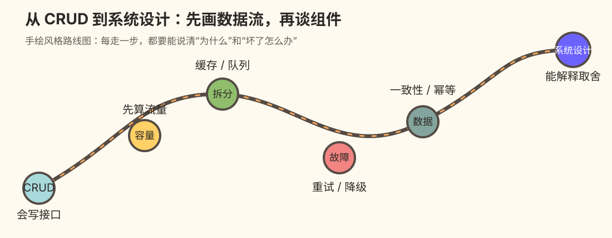

阅读导引 上一章 下一章
系统设计面试笔记：中文版学习版
这是基于 liquidslr/system-design-notes 英文笔记整理的中文学习版（对应《System Design Interview》卷 1、卷 2 的笔记，并非原书全文），目标读者是会写 CRUD，但对分布式系统、容量估算和故障处理缺乏整体感觉的工程师 。
各章保留原笔记的结构、原图和代码示例，在此基础上增加翻译、批注、学习提示和补充插图。英文原文可随时在上游仓库 对照。

在线阅读 · 打开离线阅读版 · 下载 EPUB · 下载 AZW3 · 交互实验总览 · 自测题详解 · 术语速查 · 原版延伸阅读 · 校验记录
动手实验与自测练习
在线阅读版的每一章都嵌入了交互实验：拖动参数、运行预设场景，亲眼看到限流算法在窗口边界放过两倍流量、一致性哈希增删节点时哪些 key 搬家、两个人怎样同时订走最后一间房。每个场景先让你预测结果，再运行对照。有章末自测题的章节，末尾有练习卡（先作答，再展开答案并自评）；第 29 章顶部的练习模式可以按章节和掌握程度筛题复习。进度只保存在你自己的浏览器里。完整清单见交互实验总览 。
怎么读
不要一开始背组件名。每一章都先回答四个问题：
用户要什么 ：请求是什么，成功结果是什么，哪些情况算失败。数据往哪里走 ：客户端、API、缓存、数据库、队列、异步任务分别做什么。哪里会变慢或出错 ：容量、热点、超时、重复消息、数据丢失和单点故障。怎样证明设计可用 ：指标、重试、降级、数据校验和恢复演练。
正文保留原笔记的讲解顺序，在对应知识点旁加入补充：
学习导读 ：先记住的主线和前置知识。中文翻译 ：按原文结构翻译，关键术语保留英文。批注 ：用 CRUD 工程师熟悉的类比解释“为什么这样设计”。理解与复盘 ：用例子、反例或自测问题检查是否真正理解。插图 ：把请求流、数据流或故障边界画出来；图中的箭头代表数据或控制流。
章节索引
建议的学习顺序
先读第 1–3 章建立容量和沟通框架；再读第 4–7 章掌握限流、分片、复制、唯一 ID 等基础积木；接着按兴趣阅读具体系统。支付、钱包、交易所和对象存储章节要特别关注一致性、幂等和故障恢复 ，它们比“能不能把数据写进数据库”更重要。
术语和图例
同步（sync） ：调用方要等结果返回。异步（async） ：先把工作放进队列，稍后处理。扩展（scale out） ：增加机器数量。副本（replica） ：同一份数据的额外拷贝。幂等（idempotency） ：同一个请求重复执行，最终效果与执行一次相同。SLO / SLA ：对延迟、可用性等服务目标的约定。
所有章节图片都放在各章的 images/ 中，原图按字节复制；新增图使用独立的 SVG 文件名，文中以中文标题或批注标识。英文原图中的术语可结合邻近中文说明阅读。
原笔记中的过时概括、算式矛盾和示例缺陷在相应位置单独标注，不默默改成另一套结论。未经实测的吞吐量和成本仍是题设或估算，不能直接当成生产系统保证。
第 29 章汇总 46 个章末自测条目，另补 5 道通用复盘题和 7 道钱包/交易所正文追问。每道题有稳定编号，可从原章题目后的链接跳到详细答案。
维护与发布
index.html 由 Markdown 编译而来，改完任何章节、Readme.md、术语或延伸阅读后都要重新生成并一起提交：
npm install --no-save --prefix /tmp/sdn-deps marked@18.0.14
MARKED_MODULE=/tmp/sdn-deps/node_modules/marked/lib/marked.esm.js node 工具/build-reader.mjs
PLAYWRIGHT_MODULE="$(npm root -g)/playwright" node 工具/check-reader.cjs # 可选：图片、锚点、实验挂载、移动端验收
改动交互实验（交互实验/）后，另跑实验清单与场景验收：
python3 工具/build_lab_index.py --write # 更新实验清单，检查占位块与实验定义一一对应
PLAYWRIGHT_MODULE="$(npm root -g)/playwright" node 工具/check-labs.cjs --jobs 6 # 每个实验在桌面/手机宽度下运行全部预设场景
完整的检查步骤见 验收说明 。电子书不进 Git，重新构建后发布到 Releases ，步骤见 电子书/README.md 。
推送到 main 后，GitHub Actions（.github/workflows/pages.yml）会重新编译阅读页并发布到 GitHub Pages ；如果仓库里的 index.html 没有同步更新，该工作流会给出警告，但线上仍以最新 Markdown 为准。
来源与署名
英文原笔记来自 liquidslr/system-design-notes ，整理自 Alex Xu 的《System Design Interview》卷 1、卷 2。本仓库是其中文学习版，最初在该仓库的 fork 中完成，后独立出来；原图按字节复制自原仓库，版权归原作者。原仓库未声明开源许可证，如原作者对转载有异议，请提 issue 联系。
可编辑源文：Readme.md · 点击图片可放大
第 1 章：从零扩展到百万用户（中文版学习稿）
怎么读这章 ：把系统想成一家不断变忙的餐馆。先让一名厨师把菜做出来（单机），再把收银、后厨、配送拆开（分层），最后才引入分店、中央厨房和订单队列（多机房、消息队列）。每加一层，都要先说明解决了哪个瓶颈，以及引入了什么新故障。
原版边界 ：本目录是原版 01. Scaling/Readme.md 的中文翻译和学习批注；原版文件与图片未修改。英文术语保留在括号中，方便回看资料。
学习目标
读完后，基础薄弱、主要写 CRUD 的工程师应该能：
说清楚从单服务器到多数据中心的演进顺序，而不是一上来就喊“微服务”。
看到慢请求时，先判断是 Web、数据库、网络还是热点数据的问题。
区分纵向扩展 （Vertical Scaling）和横向扩展 （Horizontal Scaling），知道各自的上限。
为缓存、复制、分片、队列写出最小可行方案，并主动指出一致性、故障和成本。
引言（Introduction）
让系统支持数百万用户是一段持续迭代、不断优化的过程。本章从一台服务器开始，逐步扩展架构，使其能够承受百万级用户。
批注｜不要把“规模化”理解成一次重写
先回答“当前哪个资源先耗尽”。如果 CPU 还很空闲，却把数据库分片了，复杂度只会提前到来。真实项目通常是：观测 → 找瓶颈 → 加一层能力 → 回归验证。
第 1 节：单服务器架构（Single Server Setup）
最初，Web 应用、数据库和缓存都运行在同一台服务器上。
请求流程（Request Flow）
用户通过域名（例如 api.mysite.com）访问应用；DNS 把域名解析为 IP 地址。
浏览器或移动应用拿到 Web 服务器的 IP 地址。
客户端向 Web 服务器发送 HTTP 请求；服务器返回 HTML 或 JSON 响应。
流量来源（Traffic Sources）
Web 应用 ：服务端语言（如 Python、Java）执行业务逻辑，客户端语言（如 JavaScript、HTML）负责呈现。移动应用 ：通过 HTTP 和 JSON 与 Web 服务器通信，以较轻量的方式交换数据。
批注｜CRUD 工程师的对应物
你写的“Controller → Service → DAO → 数据库”都在这一台机器上。先用日志记录一次请求的总耗时和数据库耗时，否则后面扩展时没有基线。
类比 ：一个人接电话、收银、做菜、洗碗。订单少时简单，订单一多，任何一个环节堵住都会拖慢全部顾客。
何时够用 ：内部工具、低流量 MVP、需要快速验证业务时。
失败模式 ：机器宕机即全站不可用；CPU、内存、磁盘和数据库相互争抢；发布应用可能连带重启数据库。
第 2 节：拆分数据库（Database Separation）
用户增长后，把数据库迁移到专用服务器，使 Web 层和数据库层可以独立扩容。
数据库选择（Database Choices）
关系型数据库（SQL） ：数据以表格和关系组织，例如 MySQL、PostgreSQL。非关系型数据库（NoSQL） ：适合非结构化数据或低延迟场景，包括：
键值存储（Key-Value Store）
图数据库（Graph Database）
列存储（Column Store）
文档存储（Document Store）
在以下情况下，非关系型数据库可能更合适：
应用需要极低延迟。
数据无固定结构，或不存在需要维护的关系。
只需要序列化和反序列化 JSON、XML、YAML 等数据。
需要存储海量数据。
批注｜不要从“SQL 还是 NoSQL”开始争论
先列查询：谁按什么键读？是否需要事务和多表 JOIN？一致性要求是什么？团队能否运维它？如果订单扣库存需要原子事务，成熟的 SQL 往往比“听起来更快”的 NoSQL 更稳。
最小迁移检查表 ：连接池上限、慢查询、备份恢复、网络延迟、读写超时、迁移回滚方案。
第 3 节：纵向扩展与横向扩展（Vertical vs Horizontal Scaling）
纵向扩展（Vertical Scaling）
给现有服务器增加 CPU、内存等资源。
受硬件规格限制，且缺少冗余；服务器仍可能成为单点故障（SPOF）。
横向扩展（Horizontal Scaling）
增加服务器数量组成服务器池，更适合大型系统。
使用负载均衡器在服务器之间分发请求。
记忆句 ：纵向扩展是“把一口锅换大”，横向扩展是“多口锅一起做”。前者简单但有上限，后者容量高但必须处理路由、会话和一致性。
面试模板 ：当前瓶颈是单机资源；短期可纵向扩展快速止血，长期用横向扩展消除单点并支持故障转移。
第 4 节：负载均衡器（Load Balancer）
负载均衡器 把流量分发到多台服务器。
冗余 ：一台服务器下线时，流量重新路由到健康服务器。例如服务器 1 下线，全部流量改送服务器 2。可扩展性 ：流量突增时可增加服务器承接新增请求。
批注｜负载均衡器不等于“自动变快”
它只能分发请求。还要确认健康检查、超时、重试、连接复用和优雅下线；如果所有请求都打到同一台数据库，Web 层加再多机器也没有用。
会话提醒 ：优先把 session 放入共享存储，使 Web 节点无状态；临时方案才使用 sticky session，并说明它会降低故障转移灵活性。
第 5 节：数据库复制（Database Replication）
主从模型（Master-Slave Model）
主库（Master） 处理写操作：insert、delete、update 等会修改数据的命令必须发往主库。从库（Slave） 处理读操作，以提升性能和可靠性。多数应用读多写少，因此从库数量通常多于主库。
收益（Benefits）
多个从库并行处理读请求，提高性能。
副本提高可用性和数据可靠性。
故障处理（Failure Handling）
只有一个从库且它下线时，读请求暂时转向主库。
有多个从库时，把读请求转给其他健康从库，并创建新服务器替换故障节点。
主库下线时，把一个从库提升（promote）为新主库。
生产环境中，被选中的从库可能不是最新的，因此需要通过数据恢复脚本追上缺失数据；原版列出多主复制和环形复制等可考虑的方法。
准确性批注 ：多主或环形复制并不会自动消除数据丢失、冲突和脑裂风险。故障切换前需要确认复制位点、仲裁机制、旧主隔离（fencing）和恢复策略。
关键概念｜复制延迟（Replication Lag）
写入主库后立刻读从库，可能暂时读不到刚写的数据。需要“读己之写”时，可在短窗口内读主库、携带版本号，或等待从库追平。
失败模式 ：自动提升错误副本导致数据丢失；重试写请求造成重复写入；只监控“数据库在线”而不监控复制延迟。
交互实验：复制延迟：刚改的昵称为什么又变回去 。改完昵称立刻刷新，对比轮流读从库、写后 1 秒读主库、带版本号读，以及缓存未失效时各读到新值还是旧值。在线阅读版 中可直接操作。
第 6 节：缓存（Caching）
缓存把频繁访问的数据放在内存中，减少数据库压力。缓存层是比数据库快得多的临时数据存储层。
缓存注意事项（Caching Considerations）
使用场景 ：数据读取频繁、修改较少时适合缓存。过期策略 ：缓存项到期会被删除；没有过期策略时，数据可能永久占用内存。一致性 ：数据存储和缓存需要保持同步。因为修改数据库和缓存通常不是同一个事务，二者可能不一致。故障缓解 ：单缓存服务器是潜在单点故障；建议在不同数据中心部署多个缓存服务器。淘汰策略 ：缓存满后必须淘汰数据释放内存，LRU（最近最少使用）最常见。
新手最稳的读路径 ：先读缓存，未命中再读数据库并回填缓存（cache-aside）。写入时先更新数据库，再删除缓存；删除失败要重试或由消息补偿。
何时不要缓存 ：数据每次都变、命中率低、错误数据代价极高且没有失效方案时。缓存会把“慢”换成“可能读旧数据”。
面试追问 ：命中率多少？TTL 多久？热点 key 会不会击穿？缓存全失效时数据库能否扛住（缓存雪崩）？
第 7 节：内容分发网络（Content Delivery Network, CDN）
CDN 把图片、CSS、JavaScript 等静态内容缓存到地理分散的服务器上，以缩短加载时间。
工作流（Workflow）
用户向最近的 CDN 节点请求内容。
如果节点没有缓存，CDN 从源站获取内容并缓存，然后返回给用户。
CDN 注意事项（CDN Considerations）
成本 ：CDN 通常由第三方提供，按流入流出数据量收费。缓存过期 ：过期时间不能过长，也不能过短。CDN 降级 ：临时故障时，客户端应能发现问题并向源站请求资源。文件失效 ：文件更新后需要让旧缓存失效，指向新文件。
实用做法 ：静态文件名带内容哈希（app.8f3c.js），更新即换 URL，避免到处手动 purge。
第 8 节：无状态 Web 层（Stateless Web Tier）
把 session 等会话数据移到共享存储后，Web 服务器就变成无状态（stateless）。这带来：
更容易横向扩展。
可以根据流量自动扩容和缩容。
批注 ：无状态不代表“没有状态”，而是请求处理不依赖某一台 Web 机器的本地内存。共享 session、令牌或用户数据库仍然是状态。
第 9 节：多数据中心（Multi-Data Center Setup）
跨多个数据中心部署可以提高可用性并降低延迟。
GeoDNS 路由 ：把用户导向最近的数据中心。数据复制 ：在数据中心之间同步数据，避免不一致。
关键考虑点
流量重定向 ：需要可靠工具把流量导向正确的数据中心。数据同步 ：常见策略是跨多个数据中心复制数据。测试与发布 ：自动化部署工具对保持各数据中心服务一致至关重要。
现实取舍 ：跨地域复制通常带来延迟和冲突。先明确是“单地域主写、异地只读”，还是“多地域都可写”；不要只画两朵云就宣称高可用。
第 10 节：消息队列（Message Queue）
原版将消息队列描述为“一个持久化组件，存储在内存中”，它支持异步通信，作为缓冲区分发异步请求。
准确性批注 ：只存内存不能保证进程重启或断电后的持久性。需要持久化语义时，队列通常通过磁盘日志、复制和确认机制实现；选型时应核对具体配置。
输入服务称为生产者（producer/publisher），创建消息并发布到队列。
其他服务称为消费者（consumer/subscriber），连接队列，按照消息执行动作。
类比 ：前台把订单放进取餐架，后厨按自己的速度处理；前台不会被慢菜绑住，但必须考虑消息重复、顺序、确认（ack）和积压。
使用时机 ：发送邮件、生成缩略图、写审计日志等允许稍后完成的任务。支付扣款、库存扣减等关键路径则要定义明确的重试和幂等策略。
第 11 节：日志、指标与自动化（Logging, Metrics, and Automation）
重要性
日志（Logging） ：跟踪错误和系统健康状态。指标（Metrics） ：洞察性能和用户活动。自动化（Automation） ：简化测试、部署和扩缩容。
最小可观测性 ：请求量、错误率、P50/P95/P99 延迟、数据库连接数、缓存命中率、队列积压。只有“服务是绿色”而没有这些数字，无法定位瓶颈。
第 12 节：数据库扩展（Database Scaling）
纵向扩展（Vertical Scaling）
增加硬件资源，但受到物理规格和成本限制，缺点包括：
横向扩展：分片（Horizontal Scaling / Sharding）
使用分片键（例如 user_id）把数据分布到多个分片（shard）。
分片把大数据库拆成更小、更易管理的部分。
每个分片使用相同 schema，但保存的数据只属于该分片。
分片键非常关键，应尽量让数据均匀分布。
挑战（Challenges）
重新分片（Resharding） ：单个分片装不下更多数据，或数据分布不均导致某些分片先耗尽时，需要重新分片；一致性哈希（Consistent Hashing）可缓解迁移范围。名人问题（Celebrity Problem） ：大量请求集中访问一个用户或租户，使所在分片过载；可为热点名人分配专用分片、拆分读流量或预计算结果。跨分片 JOIN 与反规范化（Denormalization） ：数据分布在不同服务器后，跨分片 JOIN 很困难；常见做法是反规范化，把查询所需字段放到同一张表或索引中。
批注｜分片是最后一公里
分片键一旦选错，迁移和跨分片查询都很贵。面试中先说明单库 + 读副本的上限，再说明何时、按什么键分片，并给出热点和迁移方案。
交互实验：从单机到分片：瓶颈在哪一层 。拖动流量，逐个加上拆库、负载均衡、缓存、CDN、读副本、消息队列和分片，看瓶颈怎样在各层之间转移，以及加 Web 解决不了的行锁等待和名人热点。在线阅读版 中可直接操作。
总结（Conclusion）
关键要点（Key Takeaways）
保持 Web 层无状态。
每一层都构建冗余。
使用缓存和 CDN 优化性能。
使用分片扩展数据层。
解耦组件以获得灵活性。
本章为构建可承受百万级用户的可扩展系统提供基础。
一页式面试模板
“我会先用单体验证需求，再按瓶颈拆分 Web 与数据库；用负载均衡和无状态 Web 横向扩展，用读副本和缓存降低读压力，用 CDN 处理静态内容。异步任务放入消息队列；数据量或热点超过单库能力时再分片。每一步我会补上监控、故障转移、一致性和成本。”
自测题
为什么加 Web 服务器不能解决数据库锁等待？
缓存命中率下降时，先看哪些指标？
从库延迟时，如何保证用户刚写入的数据可见？
你选择 user_id 作为分片键，名人用户把一个分片打爆了怎么办？
哪些任务适合放入消息队列？如何防止消费者重复执行？
参考答案 ：Q01-01 · Q01-02 · Q01-03 · Q01-04 · Q01-05 。先独立作答，再逐题核对推导与图解。
可编辑源文：01. Scaling/Readme.md · 点击图片可放大
第 2 章：数量级估算（Back-of-the-Envelope Estimation）
定位 ：这是系统设计面试里的“量级计算”练习。目标不是算到小数点，而是用几分钟判断方案是否可能、瓶颈在哪里、需要多少容量。
给 CRUD 工程师的记忆法 ：先写“人 × 次数”，再除以“时间”；先算平均值，再乘峰值系数；每个数字都写单位。算不出来时，把假设说出来，允许面试官修正。
引言（Introduction）
数量级估算是一项关键系统设计技能，用于快速、粗略地评估系统容量或性能。Google Senior Fellow Jeff Dean 认为，这些估算可以通过思想实验和常见性能基准，帮助判断设计是否满足要求。
本章涵盖基本概念、方法和示例，帮助建立可扩展性与估算能力。
批注｜为什么 CRUD 工程师要学它 ：代码能不能跑，只回答“功能正确”；QPS、存储和峰值决定“系统能不能活”。估算是把产品语言翻译成机器资源的桥梁。
第 1 节：基本概念（Key Concepts）
2 的幂（Power of Two）
用 2 的幂理解数据量是基础能力：
数值
近似容量
记忆方式
2^101 千（Ki）
千级
2^201 百万（Mi）
百万级
2^301 十亿（Gi）
十亿级
2^401 万亿（Ti）
TB 级
2^501 千万亿（Pi）
PB 级
这些量级有助于进行存储和带宽计算。工程实践中请注意：KB/MB/GB 常被十进制使用，而 KiB/MiB/GiB 是 1024 进制；面试里先声明口径即可。
心算技巧 ：1 天 = 86,400 秒 ≈ 10^5 秒；1 年 ≈ 3.15×10^7 秒。把除法先换成 10^5，通常足够判断数量级。
程序员应该知道的延迟数字（Latency Numbers Every Programmer Should Know）
延迟表示一次计算或 I/O 所花的时间，可以帮助比较相对性能：
操作
延迟（2020 年参考）
L1 Cache 访问
0.5 ns
L2 Cache 访问
7 ns
主内存访问
100 ns
SSD 随机读
150 µs
HDD 随机寻道
10 ms
数据中心内往返
500 µs
跨地域数据中心往返
150 ms
关键洞察 ：
内存快，磁盘慢。
尽量避免磁盘寻道。
通过互联网传输前压缩数据，可节省带宽。
批注｜不要背成“永恒真理” ：这是量级参考，不是你当前云厂商的 SLA。SSD、网络、数据库索引和并发都会改变实测值；设计时要用压测或监控验证。
从请求路径看延迟 ：一次 API 可能包含 DNS、TLS、负载均衡、应用代码、缓存、数据库和序列化。即使每层都只慢一点，串行叠加也会变慢；因此缓存和批量请求常比微优化循环更有效。
可用性数字（Availability Numbers）
高可用（HA）意味着尽量减少停机时间。可用性用“几个 9”表示：
99%（两个 9） ：每年约 3.65 天不可用99.9%（三个 9） ：每年约 8.8 小时不可用99.99%（四个 9） ：每年约 52 分钟不可用99.999%（五个 9） ：每年约 5.3 分钟不可用99.9999%（六个 9） ：每年约 31.56 秒不可用
Amazon、Google、Microsoft 等云厂商的 SLA 通常目标为 99.9% 或更高。
公式 ：年度停机分钟数 ≈ 365 × 24 × 60 × (1 - 可用性)。先算预算，再决定是否值得为多一个 9 支付多地域、冗余和运维成本。
常见误区 ：组件各自 99.9% 并不等于整个链路 99.9%。串行依赖会相乘；一个请求同时依赖 API、数据库和第三方支付时，端到端可用性更低。
交互实验：几个 9：串联相乘，冗余相并 。用抽样的一年看三个 99.9% 串联为什么只剩约 99.7%，以及加副本、共用机房和可降级依赖怎样改变端到端可用性。在线阅读版 中可直接操作。
假设（Assumptions）
3 亿月活用户（MAU） 。50% 的用户日活（DAU） 。每个用户每天平均发 2 条推文 。10% 的推文包含媒体 。数据保留 5 年 。
估算（Estimations）
1. 每秒查询数（QPS）
DAU = 300M × 50% = 150M
平均发推 QPS = 150M × 2 / 24 小时 / 3600 秒 ≈ 3,500 条/秒
峰值 QPS = 2 × 3,500 ≈ 7,000 条/秒
原版公式中的 ~3500 省略了单位和右括号；这里补全为“条/秒”，并保留同一假设。
2. 媒体存储
推文大小组成 ：
tweet_id：64 字节text：140 字节media：1 MB
每天媒体存储 = 150M × 2 × 10% × 1 MB = 30 TB/天5 年存储 = 30 TB × 365 × 5 ≈ 55 PB
原版数值提醒 ：原文列出 tweet_id 为 64 字节；常见 64 位整数 ID 实际是 8 字节。这里保留原文示例数值，容量估算时请按实际序列化格式测量。媒体占比远大于 ID，因此不影响本例约 55 PB 的媒体结论。
数量级检查 ：这里只算媒体裸数据，未包含副本、缩略图、对象存储元数据、索引和备份。若做容量规划，可再乘 2～4 倍冗余系数，并把“平均媒体大小”和“峰值上传带宽”单列。
读写分离提醒 ：上面的 7,000 是“发推写入”峰值，不代表首页读取 QPS。真实系统往往读远多于写，需要另外估算“每个 DAU 每天刷新几次、每次拉多少条”。
第 3 节：有效估算技巧（Tips for Effective Estimation）
1. 四舍五入与近似（Rounding and Approximation）
精确到小数点并不重要，过程更重要。用整数字简化复杂计算，例如：
99987 / 9.1 可以近似为 100,000 / 10 = 10,000。
2. 写下假设（Write Down Assumptions）
清楚记录假设，方便后续检查和调整。如果面试官说“峰值不是 2 倍而是 5 倍”，只替换一个参数，不必重新争论整套设计。
3. 标注单位（Label Units）
避免歧义：写 5 MB，不要只写 5。计算过程中保持单位相乘、相除，最后再换成 QPS、TB、机器数等可读结果。
4. 常见估算场景（Common Estimation Scenarios）
QPS（Queries Per Second） ：衡量流量强度。峰值 QPS（Peak QPS） ：考虑流量突增。存储需求（Storage Requirements） ：估算累计数据量。缓存需求（Cache Requirements） ：评估内存容量。服务器数量（Number of Servers） ：根据工作负载计算所需硬件。
缓存估算小例子 ：如果 1,000 万用户中 10% 是日活，每人产生 20 KB 热数据，缓存目标是 50% 热用户，则约为 1,000 万 × 10% × 50% × 20 KB = 10 GB（还要加副本和协议开销）。
机器数小例子 ：若峰值 7,000 QPS，而单实例压测稳定承载 350 QPS，则理论上需要 7,000 / 350 = 20 个实例；再按 30% 余量取 26～30 个，并说明这是估算值。
交互实验：估算计算器：从日活推到 QPS、存储和机器数 。每一步都显示算式和单位，改一个假设就能看到哪些结果变了几倍，并在一天的流量曲线上对比按平均和按峰值买机器。在线阅读版 中可直接操作。
面试可直接套用的 90 秒模板
确认目标 ：“我先估算写入 QPS、读取 QPS、峰值系数和五年存储，单位都用十进制。”列假设 ：“MAU 3 亿、DAU 50%、每人每天 2 次操作、峰值按平均 2 倍。”算平均与峰值 ：“平均约 3,500 QPS，峰值约 7,000 QPS。”算容量 ：“媒体每天 30 TB，五年约 55 PB；生产上再加副本、备份和索引。”回到设计 ：“这个量级意味着对象存储 + CDN，写入异步化，数据库保存元数据；实例数量用压测结果校准。”
自测题
2^30 为什么可以快速当作十亿级？一个链路依赖三个 99.9% 的组件，端到端可用性大约是多少？
若 DAU 不变、每天操作从 2 次变成 10 次，QPS 和存储如何变化？
为什么只算平均 QPS 会让容量不足？
估算结果和监控实测差很多时，先检查假设、单位还是代码？
参考答案 ：Q02-01 · Q02-02 · Q02-03 · Q02-04 · Q02-05 。先独立作答，再逐题核对推导与图解。
可编辑源文：02. Back Of the Envelope Estimation/Readme.md · 点击图片可放大
第 3 章：系统设计面试框架（System Design Framework）
给 CRUD 工程师的主线 ：面试不是让你背一张“万能架构图”，而是观察你如何在不完整信息下做决定。先问清题目，再画最小可行蓝图，接着只深挖最关键的瓶颈，最后总结取舍和演进。
原版边界 ：本目录是原版 03. System Design Framework/Readme.md 的中文翻译和批注；原版未修改。英文术语保留在括号中。
引言（Introduction）
系统设计面试是招聘流程的重要组成部分，模拟真实世界的问题解决场景。它考察的不只是技术能力，也包括协作、沟通和处理模糊需求的能力。
本章介绍一个四步框架（4-step framework） ，帮助你有效应对系统设计面试。
批注｜面试官想听到什么 ：你的假设、数据流、容量边界、故障处理和取舍。只说“用 Redis、Kafka、微服务”并不能证明设计正确。
第 1 步：理解问题并确定设计范围（Understand the Problem and Establish Design Scope）
目标（Key Objectives）
澄清需求和假设。
避免过早跳到解决方案。
通过提问展示批判性思考。
方法（Approach）
先问澄清问题（Ask Clarifying Questions）
最重要的功能是什么？
系统需要承受多大规模？
面向 Web、移动端，还是两者都要？
是否有既有技术或约束？
记录假设（Document Assumptions）
把假设写在白板或纸上，后续每次改动都能回看。没有数字时，主动提出合理初始值，并邀请面试官修正。
示例：设计新闻 Feed 系统
问题 ：设计一个新闻 Feed 系统。
可问的问题 ：
是移动应用、Web 应用，还是两者都有？
每个用户最多有多少好友？
Feed 是否包含图片和视频？
Feed 是否按倒序时间（reverse chronological order）排列？
新手提示｜问题要能改变设计 ：
“是否需要离线访问？”会影响缓存和同步；“是否允许重复发布？”会影响幂等；“峰值 QPS 是多少？”会影响分片和队列。不要为了显得专业而问不会改变方案的问题。
失败模式 ：一开始就画 Kafka、Redis、十个微服务；到了中途才发现题目只要求按时间排序的好友动态。范围没锁定，细节越多越容易跑题。
交互实验：新闻 Feed：需求答案怎样改变架构 。切换排序方式、关注关系、内容类型和日活规模，看发布、读取和媒体路径上会多出哪些组件，以及名人发帖怎样压垮扇出队列。在线阅读版 中可直接操作。
第 2 步：提出高层设计并取得共识（Propose High-Level Design and Get Buy-In）
目标（Key Objectives）
方法（Approach）
起草蓝图（Draft a Blueprint）
用方框图表示关键组件，例如客户端、API、数据库、缓存、CDN。把面试官当作队友，一边画一边确认方向。
根据规模约束检查设计是否扛得住：请求量、峰值、存储、带宽、实例数量和可用性预算都要有量级。
遍历用例（Walk Through Use Cases）
走一遍核心流程和边界情况，验证设计假设。
示例：新闻 Feed 系统
可以拆成两个主要流程：
Feed 发布流程（Feed Publishing Flow） ：把帖子写入数据库，并填充好友的 Feed。Feed 获取流程（Feed Retrieval Flow） ：聚合好友帖子，并按倒序时间展示。
批注｜先画箭头再画技术名 ：先标出“谁写入、谁读取、数据在哪里停留”。然后再决定数据库、缓存或队列。这样即使换技术栈，也能保持设计逻辑。
取得共识的句式 ：
“我先按 1,000 万用户、读远多于写、按时间排序来设计；如果您更关心实时性或推荐排序，我会调整发布和读取路径。这个范围可以吗？”
第 3 步：深入设计（Design Deep Dive）
目标（Key Objectives）
方法（Approach）
优先关键组件 ：聚焦与题目最相关的部分。讨论瓶颈 ：找出潜在性能问题并提出解决方案。控制细节 ：避免过度工程化或无关的深挖。
示例主题（Example Topics）
URL Shortener ：重点讨论哈希函数设计。Chat System ：探索降低延迟、处理在线/离线状态的方法。News Feed System ：研究 Feed 发布和获取流程。
深挖四问 ：
数据的主键和访问模式是什么？
这个组件的容量上限和故障模式是什么？
数据丢了、重复了或延迟了，会发生什么？
何时需要升级方案，升级的迁移路径是什么？
失败模式 ：把时间花在表字段和类名上，却没有解释热点、超时、重试和一致性；或者把所有可能技术都讲一遍，导致核心流程没讲完。
第 4 步：收尾（Wrap-Up）
目标（Key Objectives）
方法（Approach）
识别瓶颈 ：讨论潜在限制和扩展策略。总结设计 ：回顾主要设计决策和取舍。提出增强 ：例如从 100 万用户扩展到 1,000 万用户，或处理服务器故障和网络问题。
最后三句话模板 ：
“主路径是客户端 → API → 缓存/数据库；写入和读取通过队列与存储解耦。当前瓶颈是 X，下一阶段通过 Y 扩展；代价是 Z 的一致性或成本。故障上我们会监控 A，并让 B 降级。”
最佳实践（Best Practices）
应做（Dos）
提问 ：在进入方案前澄清歧义。沟通 ：持续分享思考过程。与面试官迭代 ：把对方当作协作者。保持灵活 ：提出替代方案并不断改进。聚焦关键组件 ：优先最重要的部分。
不应做（Don’ts）
避免过早给方案 ：先理解需求再设计。不要沉默 ：过程中持续沟通。避免过度工程化 ：专注于实际、可扩展的方案。
批注｜把“不会”说清楚也是能力 ：如果不知道某个中间件细节，可以说明假设、接口语义、故障处理和验证方式；不要用未经确认的术语掩盖空白。
时间管理（Time Management）
45 分钟面试建议分配
理解问题与范围 ：3–10 分钟高层设计与取得共识 ：10–15 分钟深入设计 ：10–25 分钟收尾 ：3–5 分钟
实用计时点 ：第 10 分钟前应有需求和核心 API；第 20 分钟前应有高层图和容量量级；第 40 分钟前停止新增组件，开始回顾故障和取舍。
交互实验：面试节奏练习：45 分钟、最后 5 分钟、90 秒 。带检查点的练习计时器：按本章建议分配练完整面试，或单独练最后 5 分钟收口和 90 秒陈述。在线阅读版 中可直接操作。
一页式答题卡
需求：谁使用？核心动作？读写比例？峰值？一致性？可用性？
API：最小的读写接口、请求/响应、幂等键。
数据：主键、索引、生命周期、备份与恢复。
路径：写入流、读取流、缓存命中与未命中。
规模：平均/峰值 QPS、存储、带宽、实例数。
故障：超时、重试、重复、降级、数据丢失、恢复。
取舍：为什么选它？代价是什么？什么时候换方案？
收口：总结当前设计和下一阶段演进。
自测题
设计新闻 Feed 时，你会先确认哪三个需求？它们如何改变架构？
为什么高层设计阶段要取得共识，而不是直接深挖数据库？
一个热点组件要讨论哪些容量和故障问题？
当面试只剩 5 分钟，你如何收口而不是继续加组件？
你能否用 90 秒讲完“需求—路径—瓶颈—取舍—演进”？
参考答案 ：Q03-01 · Q03-02 · Q03-03 · Q03-04 · Q03-05 。先独立作答，再逐题核对推导与图解。
可编辑源文：03. System Design Framework/Readme.md · 点击图片可放大
第 4 章：设计限流器（Design a Rate Limiter）
对照原版：04. Rate Limiter/Readme.md 。本章按原版结构翻译；标有“批注”的内容为补充，原版文件未修改。
学习导读
如果你只会 CRUD，可以先把限流器想成“门卫”：请求太多时先挡住，避免数据库和业务服务被挤垮。学习目标是能说清限流放在哪里、如何选算法、分布式计数怎样避免出错。
先记住三个问题：限谁 （用户/IP/API）、限多少 （每秒/每分钟）、超了怎么办 （拒绝、排队、降级）。常见误区是只在前端限制、只在单机内存计数，或把“读取计数再加一”当作原子操作。
简介（Introduction）
本章讨论限流器的设计与实现。限流器是控制客户端或服务请求速率的系统组件，对防止滥用、降低成本和保持服务器资源稳定十分重要。常见用途包括限制发帖次数、账户创建次数和奖励领取次数。
限流的好处（Benefits of Rate Limiting）
防止拒绝服务攻击（DoS） ：阻断过量调用，避免资源耗尽。降低成本 ：限制不必要的请求，减少服务器开支。避免过载 ：过滤过量请求，使服务器性能更稳定。
批注｜从 CRUD 接口出发 ：假设发送短信要调用收费服务，给 /send-sms 限流既能控制费用，也能防刷；给数据库写接口限流可避免连接池被占满。应用层限流只是抗攻击的一层，不能单独抵御把网络带宽耗尽的攻击。
第 1 步：理解问题（Understanding the Problem）
关键能力（Key Features）
设计服务端 API 限流器。
支持多条节流规则（throttle rules）。
能在大规模分布式环境中运行。
可以是独立服务，也可以是应用中的代码。
请求被限流时应通知用户。
要求（Requirements）
请求限流准确。
额外延迟尽可能低。
内存占用少。
支持分布式部署。
异常处理清晰。
具备高容错能力。
批注｜补齐需求 ：同一接口可以同时有“每个用户每分钟 10 次”和“全站每秒 1,000 次”规则。还应约定白名单、认证前后如何取限流标识、规则热更新，以及限流器故障时放行（fail-open）还是拒绝（fail-closed）。这取决于业务：普通查询可优先可用，付费或风控接口可能优先保护资源。
第 2 步：高层设计（High-Level Design）
部署位置（Placement Options）
客户端实现 ：可能被修改或绕过，因此不可靠。服务端实现 ：控制性和可靠性较好，是优先选择。中间件/API 网关 ：便于集成统一限流，部署灵活。
选择位置的原则（Guidelines for Placement）
评估当前技术栈，选高效且兼容的实现。
根据业务需求选择合适的限流算法。
微服务架构可以利用 API 网关。
团队资源有限时，可考虑商业化限流方案。
批注｜类比与失败模式 ：小区门卫要设在实际入口。只在网页按钮上加倒计时，脚本仍能直接调用 API。网关限流可统一保护服务，但只有已校验的用户身份才适合做可信的 userId 计数键；IP 共享也可能误伤公司或校园网络内的用户。
第 3 步：限流算法（Rate Limiting Algorithms）
1. 令牌桶（Token Bucket）
原理 ：按固定速率向桶内补充令牌，每个请求消耗一个令牌；令牌不足时拒绝请求。桶满后，多余令牌不再累积。参数 ：桶容量（bucket size）和补充速率（refill rate）。优点 ：容易实现，内存开销小，支持短时流量突发。缺点 ：参数需要仔细调节。
批注｜像限量通行券 ：容量 20、每秒补 5 个令牌，意味着空闲后最多立即通过 20 次请求，长期速率约为每秒 5 次。容量控制“能突发多少”，速率控制“长期能走多快”。桶过大仍可能瞬间压垮下游。
2. 漏桶（Leaking Bucket）
原理 ：使用先进先出队列（FIFO），按固定速率处理请求。优点 ：内存可控，输出速率稳定。缺点 ：突发流量可能让新请求长时间等待。原版示例链接：uber-go/ratelimit 。
批注｜像匀速传送带 ：适合保护要求平稳速率的下游。必须限制队列长度和最长等待时间；不能把漏桶理解成无限排队。不同库可能以调用阻塞等方式实现平滑速率，并不一定真的维护请求队列。
3. 固定窗口计数（Fixed Window Counter）
原理 ：把时间分为固定区间，每个窗口维护一个计数器，根据配额判断是否放行。优点 ：简单、高效，适合规则较粗的场景。缺点 ：窗口边界附近的突发可能超过期望限制。
在相邻两个窗口的交界处集中发送请求，会导致短时间内通过的请求数超过单窗口配额。
批注｜能手算就记住了 ：假设每分钟最多 100 次，在 12:00:59 发 100 次，再在 12:01:00 发 100 次，两次各自都合规，却在约 1 秒内通过了 200 次。它保证的是“每个固定分钟”，不是“任意连续 60 秒”。
4. 滑动窗口日志（Sliding Window Log）
原理 ：记录请求时间戳，统计当前时刻向前一个窗口内的请求。优点 ：对滚动窗口进行精确限流。缺点 ：需要保存大量时间戳，内存开销较高。
批注｜逐张查票 ：每次清除窗口外记录，检查剩余数量，再决定是否加入本次记录。删除、计数、插入必须作为一个原子操作，否则并发请求可能同时以为还有名额。对于“被拒请求是否计入后续窗口”也要预先定义。
5. 滑动窗口计数（Sliding Window Counter）
原理 ：结合固定窗口计数与滑动窗口思想，平滑边界突发。优点 ：内存开销低，能应对突发流量。缺点 ：使用近似计数，未必能满足完全严格的配额。
批注｜近似公式 ：常见实现为 当前窗口计数 + 上一窗口计数 × 上一窗口仍覆盖的比例。它隐含假设上一窗口流量分布较均匀，因此极端聚集流量会带来误差。
批注：选择算法的速记表
业务需要
常见选择
主要代价
长期限速、允许短突发
令牌桶
桶容量要匹配下游承受力
输出速率尽量平滑
漏桶
排队延迟与队列上限
规则简单、实现便宜
固定窗口
窗口边界突发
精确限制任意滚动窗口
滑动日志
保存时间戳耗内存
较平滑且省内存
滑动窗口计数
接受近似误差
交互实验：五种限流算法同场对比 。同一股流量交给五种算法，对比窗口边界突发、空闲后突发和持续超速下的放行、拒绝与排队。在线阅读版 中可直接操作。
高层架构（High-Level Architecture）
数据存储 ：使用 Redis 等内存存储，快速更新计数器。请求步骤 ：
客户端将请求发给中间件。
中间件检查 Redis 中的计数和规则。
根据限流结果处理或拒绝请求。
批注｜失败要可解释 ：超限常返回 HTTP 429 Too Many Requests，可提供 Retry-After。客户端需要退避并加入随机抖动，避免所有人同时重试制造第二波拥堵。
进阶考虑（Advanced Considerations）
分布式环境（Distributed Environments）
挑战 ：竞态条件、不同实例之间的同步。解决方向 ：锁、Redis Lua 脚本，以及 sorted set 等数据结构；利用共享存储协调各实例。
批注｜sorted set 本身不等于原子性 ：它可保存时间戳，但“清理旧记录—计数—决定—写入”仍需放在 Lua 脚本等原子操作中。Lua 的原子性也只覆盖其所在 Redis 实例的数据操作，并非跨地区自动强一致。
交互实验：两台网关抢最后一个名额 。逐步执行「GET 再 INCR」、原子 INCR、Lua 脚本和跨地区计数，看哪种写法会超发。在线阅读版 中可直接操作。
采用多数据中心部署，降低就近访问延迟。
通过最终一致方式同步部分计数或规则。
批注｜取舍 ：跨地区异步同步可降低延迟，却可能暂时超发全局配额。严格全局额度可以集中协调或预分配地区额度，代价是延迟、可用性或利用率。
监控（Monitoring）
定期分析放行量、拒绝量和延迟，确认算法有效，并根据实际流量调整规则。
批注：面试回答模板与自测
“我先确认限流维度、窗口、配额和突发容忍度，默认在 API 网关采用令牌桶。各实例通过 Redis 原子脚本共享计数，超额返回 429；再按业务选择存储故障时的放行/拒绝策略，并监控拒绝率、延迟和误伤。”
合上文档，尝试解释：为什么前端限制不可靠？令牌桶两个参数分别管什么？为什么固定窗口边界会突发？多台网关怎样避免同时超发最后一个名额？
参考答案 ：Q04-01 · Q04-02 · Q04-03 · Q04-04 。先独立作答，再逐题核对推导与图解。
可编辑源文：04. Rate Limiter/Readme.md · 点击图片可放大
第 5 章：设计一致性哈希（Design Consistent Hashing）
对照原版：05. Consistent Hashing/Readme.md 。本章覆盖原版各节；“批注”为新增解释，原版文件保持不变。
学习导读
从 CRUD 出发，你已经知道 SELECT ... WHERE id = ?。数据库分成多台机器后，多了一个问题：这个 key 应该去哪台机器查？ 一致性哈希解决的是节点增删时，如何尽量少改变 key 的去向。
先记住三个词：环、顺时针、虚拟节点 。常见误区是以为“用哈希就一定均匀”，或以为“分布均匀就没有热门 key”；实际仍需虚拟节点、流量监控和热点处理。
简介（Introduction）
本章讨论一致性哈希。这项技术能有效地把请求和数据分散到多台服务器，支持水平扩展。节点增删时，它尽量减少数据重分配；结合合适的节点分布策略，可改善负载均衡，缓解服务器热点。
重哈希问题（The Rehashing Problem）
解释（Explanation）
传统哈希方法常写成 serverIndex = hash(key) % N，其中 N 是服务器数量。N 一旦变化，数据就要重新分配。例如：
移除服务器会让大量 key 改分到别的服务器，造成缓存未命中。
加入服务器也会造成大量不必要的 key 重分配。
当服务器池大小固定时，这种方式工作良好。但新增或移除服务器时就会出现问题。
关键问题（Key Issue）
服务器数量变化时，大多数 key 的路由都改变，造成低效的数据搬迁，甚至让后端过载。
批注｜像改抽屉编号规则 ：hash(key)=17 时，4 台机器映射到 17%4=1，5 台机器映射到 17%5=2。即使原机器 1 还正常，key 也换了位置。缓存大量失效后，请求会落到数据库，扩容反而可能先造成一次压力峰值。
一致性哈希（Consistent Hashing）
定义（Definition）
一致性哈希让服务器增删时只有一部分 key 被重新映射，从而减少扰动、改善扩展性。
核心概念（Key Concepts）
1. 哈希空间与环（Hash Space and Ring）
哈希空间可视作一条首尾相接的环。例如 SHA-1 的取值范围是 0 到 2^160-1，把范围的两端连接起来，就得到哈希环。
用同一个哈希函数 f，根据服务器 IP 或名称，把服务器映射到环上。
批注｜环是编号空间，不是网线 ：机器并不需要真的按环连接。通常只需一份按哈希值排序的节点表，用查找算法找到后继位置；“沿环走”是解释路由规则的图像。
2. 查找服务器（Server Lookup）
先求 key 的哈希位置，再顺时针沿环查找；遇到的第一个服务器负责该 key。
3. 新增与移除服务器（Adding and Removing Servers）
新增服务器只改变附近区间中 key 的归属，只有这部分 key 被分配到新服务器。
移除服务器只影响它负责的范围；原属于它的 key 转交给顺时针方向的下一台服务器。
批注｜何时使用、如何落地 ：适合缓存分片、分布式 KV 存储和需要稳定路由的负载均衡。真实迁移仍要复制数据、限速、校验并切换路由；哈希环只告诉你“哪些 key 应当搬”，不会自动搬数据。节点列表版本不一致会让客户端把同一 key 发到不同机器。
交互实验：哈希环：增删一台服务器，谁要搬家 。在 0–99 的环上加入或移除服务器，对比一致性哈希与 hash % N 各有哪些 key 换了主人，并看 key 怎样顺时针找到负责的服务器。在线阅读版 中可直接操作。
挑战与解决办法（Challenges and Solutions）
基础方案的两个问题（Two Issues in Basic Approach）
分区大小不均 ：服务器在环上的间距不同，负责的哈希区间可能差别很大。key 分布不均 ：部分服务器可能收到明显更多的 key。
解决办法：虚拟节点（Virtual Nodes）
一台物理服务器在环上对应多个虚拟节点，而非只有一个位置。把虚拟节点分散到环上，能改善 key 分布和负载均衡。通常虚拟节点越多，分布的标准差越小，数据越均匀。
批注｜像在多个街区开分店 ：一台机器只占一个连续区间，容易运气不好分到“大地盘”；占据许多小区间后，偏差更容易相互抵消。容量大的机器可分配更多虚拟节点。节点数过少仍不均，过多则增加路由表与维护成本。
批注｜数据均匀不等于访问均匀 ：假设 1,000 万个 key 均匀分布，但某一个热门 key 占据一半请求，虚拟节点也不会自动把这个单 key 拆开。热门 key 仍需缓存复制、请求合并、拆分等业务方案。
交互实验：虚拟节点：分布更匀，热门 key 照样压在一台 。拖动每台服务器的虚拟节点数，看 key 分布的偏差怎样缩小、新服务器从谁那里接 key，以及一个热门 key 的请求为何仍落在一台机器上。在线阅读版 中可直接操作。
受影响的 key（Affected Keys）
服务器新增或移除时，只有特定范围的 key 改变归属。
新增服务器 ：受影响范围位于新服务器与其前驱之间。例子中把 s4 加入环，从 s4 逆时针找到前一个服务器 s3，因此 (s3, s4] 内的 key 转交给 s4。
移除服务器 ：受影响范围位于被移除服务器与其前驱之间。例子中删除 s1，从 s1 逆时针找到 s0，因此 (s0, s1] 内的 key 转交给顺时针后继 s2。
批注｜记忆方法 ：“找负责人顺时针，找归属区间看前驱”。端点写法要和实际查找实现保持一致；上面的 (前驱, 当前节点] 对应查找大于等于 key 哈希值的第一个节点。
一致性哈希的优点（Benefits of Consistent Hashing）
尽量少迁移 ：只有部分 key 重新分配。可扩展 ：支持水平增加服务器。缓解热点 ：通过更均衡的数据分配，降低单服务器过载风险。
实际应用（Real-World Applications）
原版列举：
Amazon DynamoDB
Apache Cassandra
Discord
Akamai CDN
Maglev Load Balancer
批注｜区分概念与实现 ：这些是相关应用/系统示例，不表示都使用本章画出的同一种哈希环。Dynamo 与 Cassandra 是理解环形分区的典型资料；Maglev 是另一种基于查找表的稳定负载均衡方案，不能把它的实现直接画成此处的虚拟节点环。
批注：面试回答模板与自测
“hash(key)%N 在 N 变化时导致大量 key 重映射。我会让 key 与节点进入同一哈希空间，顺时针取后继节点，并用虚拟节点改善均衡；扩缩容时仅迁移受影响区间，同时控制迁移流量和节点视图版本。热门 key 仍需单独处理。”
合上文档，尝试画 3 个服务器和 4 个 key；加入一个节点后标出唯一受影响区间；解释为什么虚拟节点不能自动消除热门 key。
参考答案 ：Q05-01 · Q05-02 · Q05-03 。先独立作答，再逐题核对推导与图解。
可编辑源文：05. Consistent Hashing/Readme.md · 点击图片可放大
第 6 章：设计键值存储（Design a Key-Value Store）
对照原版：06. Key-Value Store/Readme.md 。正文沿用原版结构；“批注”用于补充解释或标明原文简化的边界，原版文件未修改。
学习导读
你熟悉的 CRUD 在多台机器上仍然存在，但多了四个问题：key 放哪台、保存几份、成功要等几份、机器坏了如何补齐 。本章就是依次回答这四个问题。
先记住：分区负责扩容量，复制负责抗故障，协调规则决定一致性与延迟。常见误区是认为“有三份副本就一定读到最新值”，或只设计正常读写、不设计故障恢复。
简介（Introduction）
键值存储（key-value store） 是一类非关系数据库，以 key-value 对保存数据。每个 key 唯一，使用 key 读取对应 value。本章设计一个可扩展、高可用的分布式键值存储，提供以下操作：
put(key, value)：写入数据。get(key)：读取数据。
设计特征（Characteristics of the Design）
键值对较小，大小小于 10 KB。
支持大量数据，兼顾高可用和可扩展性。
自动扩展，一致性可配置。
低延迟。
批注｜像超大的 Map ：可以把它理解成跨机器的字典，但它不自动提供 SQL 的连接查询、外键或多行事务。设计前先问清楚接口语义：相同 key 再 put 是覆盖还是保留版本？删除、过期和条件更新是否需要？
单机键值存储（Single Server Key-Value Store）
实现（Implementation）
用内存哈希表（hash table） 保存键值对。可进一步优化：
限制（Limitation）
一台服务器的内存有限。要支持更大的数据量，需要使用分布式方案。
分布式键值存储（Distributed Key-Value Store）
分布式键值存储把数据分区到多台服务器，因此必须考虑 CAP 定理 描述的取舍。
CAP 定理（CAP Theorem）
原版用以下三点介绍 CAP：
一致性（Consistency） ：所有客户端看到一致的数据。可用性（Availability） ：即使一些节点故障，系统仍响应请求。分区容错（Partition Tolerance） ：网络分区时系统仍能工作。
原版将取舍概括为“这三项只能同时得到两项”。
准确性批注｜不要机械背“三选二” ：在网络分区发生期间，无法同时保证线性一致性 C 和 CAP 意义的可用性 A。C 通常指操作看起来按实时顺序、在一个瞬间完成；A 要求发往未故障节点的请求最终得到非错误响应，返回 503 不算满足。P 是网络可能断开的环境前提，不能简单把它当作功能开关。
系统类型（System Types）
CP 系统 ：分区时优先一致性，牺牲部分可用性。原版以银行系统为例。AP 系统 ：分区时优先可用性，可能返回旧数据，之后再收敛。CA 系统 ：不考虑分区时同时提供一致性和可用性；原版强调真实网络故障不可避免，所以不能依靠 CA 假设保证跨网络系统在分区时仍正常工作。
在分布式系统中，分区发生时要选择 C 或 A。例如 n3 与 n1/n2 失去联系，n1 或 n2 上的新写无法传到 n3；n3 上的写也无法及时传到 n1/n2，因此这些节点可能持有不同版本。
原版对 CP 的示例是阻止 n1/n2 上的写，以避免不一致。
对 AP，则继续读取，即使可能返回旧值；n1/n2 也继续写，网络恢复后再将变更同步到 n3。
准确性批注｜CP 不一定全停 ：具体阻止哪一侧取决于协议。采用多数派协调时，只要 n1/n2 仍构成多数派，它们可能继续读写，少数派一侧拒绝服务。不能因为业务叫“银行”就断言整个系统都选 CP，应逐个操作说明约束。
入门批注｜像断线门店记账 ：电话断了，要么先停止不确定的销售以免超卖，要么继续接单、恢复后处理冲突。面试时可以说：“我先定义分区期间允许的行为；余额扣减需要更严格的一致性，展示类数据可能允许短暂旧读。”
系统组件（System Components）
1. 数据分区（Data Partitioning）
技术 ：使用一致性哈希将数据分散到多台服务器。优点 ：
节点加入或离开时可自动扩缩容。
通过虚拟节点支持不同容量的服务器，虚拟节点数量可与服务器容量成比例。
批注｜分区与复制别混淆 ：分区把不同数据放到不同机器以扩容量；复制把同一份数据放到多台机器以抗故障。一个系统通常同时做两件事。
2. 数据复制（Data Replication）
将数据复制到 N 台服务器，提高可用性。原版沿哈希环顺时针选择前 N 个服务器保存副本；在有虚拟节点时，应选择不同物理服务器，并尽量将副本放到不同数据中心，以免一次物理故障带走多份副本。
3. 一致性（Consistency）
数据有多个副本，需要进行同步。
Quorum 读写法定人数
N：副本总数。W：写入成功需要得到确认的副本数。R：读取成功需要等待响应的副本数。原版规则：W + R > N 可使读写集合相交，并将其概括为强一致。
配置 W、R、N，通常要在延迟和一致性之间取舍。
R=1, W=N：偏向快速读取。W=1, R=N：偏向快速写入。W+R>N：原版常见配置为 N=3, W=R=2。W+R≤N：无法保证读集合接触到最新已确认的写入。
准确性批注｜相交不是完整的一致性协议 ：W+R>N 只保证固定 N 个副本中的读写集合相交。要实现线性一致性，还需正确的版本比较、并发写排序、失败写处理、读修复和成员变化处理；不能仅凭这条不等式就宣称“保证强一致”。只等一个副本也可能很快，但另两个后台写失败时要有明确恢复语义。
交互实验：Quorum 读写：集合相交，就一定读到新值吗 。调 N、W、R，让副本变慢或失联，逐步看写确认、读回复和每个副本的版本；复现「读到 1 后又读到 0」的反例、读修复的效果，以及 sloppy quorum 下读写集合不再相交。在线阅读版 中可直接操作。
一致性模型（Models）
强一致性（Strong Consistency） ：读操作返回符合最新已完成写入结果的值。弱一致性（Weak Consistency） ：后续读取可能看不到最新写入。最终一致性（Eventual Consistency） ：在没有新更新、传播与修复能够继续的前提下，给足时间，各副本最终收敛。
批注｜使用与代价 ：订单状态若要求写后立刻读到，可选择更强读写语义；点赞数允许短暂变化，可接受最终一致。把 R/W 设置得更高通常会等待更多副本，并在故障时损失部分可用性。
4. 不一致解决（Inconsistency Resolution）
复制提高可用性，却可能让副本不一致。原版通过版本化和向量时钟解决这类问题（原文 vector locks 应理解为 vector clocks）。
版本化（Versioning）
使用向量时钟（vector clock） 跟踪版本、识别冲突。
把每次修改看作新的不可变数据版本。
例如服务器 1 修改姓名，服务器 2 同时也修改姓名，就产生冲突版本 v1 和 v2。
向量时钟（Vector Clock）
表示方式 ：每个数据项携带若干 [server, version] 对，可判断版本先后或并发。表示为 D([S1,v1], [S2,v2], …, [Sn,vn])，其中 D 是数据项，Si 是服务器标识，vi 是该参与者的版本计数。更新方式 ：在 Si 修改数据时，若向量中已有 Si，就增加它的计数；没有则添加新条目。冲突检测 ：原版说明，若 X 的计数都不大于 Y，则 X 是 Y 的祖先；兄弟版本（siblings）表示存在并发冲突。冲突合并 ：发现兄弟版本后，需要应用专用逻辑或客户端参与合并。
准确性批注｜精确比较规则 ：缺失项视为 0。若 X 每一项都 ≤ Y，且至少一项 <，则 X 先于 Y；全部相等是同一向量。如果某一项 X 大于 Y，而另一项 Y 大于 X，二者才是并发。原文只写“有一项小于对方”不足以判断并发。
入门批注｜像各人盖章的修改记录 ：X={A:2,B:1} 与 Y={A:1,B:2} 各有新信息，不能简单认为计数总和更大者胜。向量时钟能识别冲突，不能决定正确业务值；购物车可合并集合，姓名可能要用户选择或使用明确的覆盖规则。
交互实验：向量时钟：谁是祖先，谁在冲突 。选基础版本和处理服务器来写入，看向量怎样递增、两个版本何时互不支配成为 siblings，以及客户端合并后的新向量。在线阅读版 中可直接操作。
挑战包括：
客户端处理复杂度增加。
参与者增多时向量可能变长，需要裁剪策略限制大小；裁剪也可能丢失因果信息。
5. 故障处理（Handling Failures）
a. 故障检测（Failure Detection）
不能仅凭另一台机器说“它坏了”就下定论。原版建议使用至少两个独立信息来源，再把节点标记为故障。
Gossip 协议
每个节点保存成员 ID 和心跳计数器。
节点周期性递增自己的心跳计数。
节点周期性向一组随机节点发送心跳信息。
若某成员的心跳在预设时长内未增长，就认为它离线。
批注｜“怀疑故障”不是证明故障 ：慢机器、网络拥堵、GC 暂停也会丢心跳。因此超时是故障怀疑，不是绝对证据；还需成员协议、重试/恢复机制和防止频繁上下线的措施。
b. 临时故障（Temporary Failures）
Sloppy Quorum（宽松法定人数）
发现故障后，需要机制保持服务可用。
不强制只在原来的固定副本集合里满足人数，而沿环挑选前 W 个健康节点写、前 R 个健康节点读。
忽略离线服务器，由其他健康服务器临时处理请求。
Hinted Handoff（提示移交）
替代节点保存“这份数据本来属于谁”的提示。原节点恢复时，把变更推送回去，使数据逐步一致。
准确性批注｜宽松后可能不再相交 ：替代节点可能不属于原 N 个副本，W+R>N 便不能单独保证读写集合相交。hinted handoff 也依赖提示的可靠保存和及时交还，不能代替完整的副本修复。
c. 永久故障（Permanent Failures）
使用 Merkle Tree（默克尔树，也叫哈希树） 高效检测副本差异，辅助数据同步和修复。
工作原理（Working）
树的结构 ：
叶节点保存各数据块的哈希。
非叶节点保存子节点哈希组合后的哈希。
根哈希代表整棵树所覆盖的数据状态。
构建 Merkle Tree ：
同步过程 ：
先比较两个副本的根哈希。
根相同，表示当前树覆盖的数据在哈希意义上一致。
根不同，递归比较子节点，定位不一致的桶。
只同步有差异的数据。
优点（Advantages）
高效 ：仅传输不一致数据，减少传输量。可扩展 ：适合大数据集，避免总是全量同步。可靠性 ：帮助副本检查差异并恢复一致。
准确性批注｜值也必须进入指纹 ：只对 key 哈希，检测不出“相同 key、不同 value”。真实系统需对规范编码后的 key、value、版本等相关内容计算摘要，且各副本使用相同分桶边界。相同哈希是一种基于哈希碰撞极低概率的判断，不是数学上绝无差异。
入门批注｜像逐级核对目录指纹 ：先比整本书的指纹，不同再比章、节、页，只重传改动页。Merkle Tree 负责定位差异，具体哪一版本正确仍由版本与冲突规则决定；它也可用于日常反熵修复，不只用于永久故障。
6. 数据中心故障（Handling Data Center Outages）
把数据复制到多个数据中心，使单个机房中断时仍能提供服务。
批注｜不只是复制数据 ：客户端流量切换、DNS/路由、认证依赖、容量预留和跨区复制延迟也需一起考虑。副本都在同一机房，不能抵御机房整体断电。
写路径与读路径（Write and Read Paths）
1. 写路径：参考 Cassandra 架构（Write Path）
先把写入追加到 commit log（提交日志） 。
将数据写到内存结构 中（原文称 memory cache）。
内存达到阈值后，刷写为磁盘上的 SSTable（Sorted String Table，有序字符串表） 。
批注｜日志与内存分工 ：Cassandra 的写入内存结构通常称 memtable。日志用于崩溃恢复，内存用于快速写；确认写成功前是否已刷盘，取决于持久化设置，不能仅凭“用了日志”就断言断电绝不丢数据。SSTable 写出后通常不可变，后台 compaction 负责合并与清理旧版本。
2. 读路径（Read Path）
先检查内存中是否有目标数据。
若未命中，通过 Bloom Filter（布隆过滤器） 排除不可能包含 key 的 SSTable。
从相关 SSTable 读取并返回数据。
准确性批注｜Bloom Filter 不负责定位精确记录 ：它只回答“一定不存在”或“可能存在”，后者还需查索引与数据文件；可能误报存在，但在正确维护下不会漏报已插入元素。LSM 系统中同一 key 也可能出现在多个 SSTable，读取可能需要合并版本、处理墓碑，而不是命中第一个文件就返回。
交互实验：Bloom Filter：「可能存在」为什么还要读盘 。在 SSTable 读路径上插入和查询 key，看位数组怎样产生假阳性、位数组大小如何影响误报，以及为什么不能靠清零位来删除。在线阅读版 中可直接操作。
最终架构（Final Architecture）
客户端通过简单 API get(key) 和 put(key,value) 访问存储。
协调节点（coordinator） 作为客户端与存储节点之间的代理。节点通过一致性哈希分布在环上。
系统采用去中心化的数据节点设计，可自动加入和迁移节点。
数据复制到多个节点。
原版强调各节点职责对等，从数据节点角色上避免单一固定节点成为单点。
准确性批注｜“去中心化”仍需系统审计 ：对等节点不代表部署中绝无单点；客户端引导地址、配置服务、机房网络或凭证服务仍可能成为共同依赖。应按实际依赖图验证可用性。
批注：面试回答模板与自测
“先用一致性哈希分片，再跨故障域放 N 个副本；明确 R/W 与版本规则，说明需要的读写一致性。协调节点路由请求，日志、memtable、SSTable 构成单节点存储。临时故障用替代节点与 hinted handoff，持续反熵用 Merkle Tree；网络分区期间的拒绝、旧读和冲突必须事先约定。”
自测：分区和复制分别解决什么？N=3、R=W=2 为什么读写集合相交但仍不等于完整强一致协议？向量时钟能自动选出正确姓名吗？Bloom Filter 返回“存在”后为何还要读磁盘？
参考答案 ：Q06-01 · Q06-02 · Q06-03 · Q06-04 。先独立作答，再逐题核对推导与图解。
可编辑源文：06. Key-Value Store/Readme.md · 点击图片可放大
第 7 章：设计分布式唯一 ID 生成器（Unique ID Generator）
对照原版：07. Unique-Id Generator/Readme.md 。本章按原文翻译并插入批注；原版文件保持不变。
学习导读
单机 CRUD 中，自增主键让数据库帮你发号。多台机器同时发号时，要解决“不同机器会不会发出同一个号”。本章目标是理解四种方案，并能解释 Snowflake 的字段、容量和故障边界。
先记住：机器位置区分不同生成器，序列区分同毫秒内的多个 ID，时间字段支持大致排序 。常见误区是把“唯一”“连续”“时间有序”当成同一个要求，或只记位数、忽略时钟回拨。
简介（Introduction）
本章讨论分布式系统中的唯一 ID 生成问题。传统自增主键在分布式环境中会遇到扩展和同步困难。这里要生成唯一、可排序的 64 位数字 ID，满足：
ID 唯一 ，可按日期排序 。
ID 必须放在 64 位 中。
系统每秒生成 超过 10,000 个 ID 。
批注｜不要过早否定数据库自增 ：单个数据库能满足规模时，自增仍很合适。本题的要求是让发号能力跨多节点扩展；选择方案前先确认吞吐、位宽、顺序和故障容忍度，避免为普通 CRUD 引入不必要服务。
第 1 步：理解问题（Understanding the Problem）
基本要求（Basic Requirements）
ID 是唯一的数字，适合 64 位存储。
ID 随时间增加，但不要求每次严格 +1。
ID 能按日期排序。
支持高吞吐量，目标约为 10,000 IDs/s 或以上。
批注｜三个词分开记 ：唯一意味着不重复；连续意味着无空洞；有序意味着比较大小能反映某种先后。本题不要求连续。跨机器的“按时间排序”还需进一步说明是大致有序，还是遵守实时先后的全局严格递增。
第 2 步：高层方案（High-Level Design Options）
1. 多主复制（Multi-Master Replication）
批注｜手算示例 ：两台机器分别发 1,3,5… 和 2,4,6…，可以区分来源，但机器 A 已发到 101 时，机器 B 仍可能发 20，所以不能靠数字大小判断真实先后。扩成三台时不能简单把步长从 2 改 3，否则可能撞到历史 ID。
2. UUID（Universally Unique Identifier，通用唯一标识符）
做法 ：
每台服务器独立生成 128 位 UUID。
服务器之间无需协调就能生成标识符。
优点 ：
无需服务器之间协调。
可随着 Web 服务器数量增加而扩展。
缺点（原版概括） ：
超出 64 位要求。
ID 不一定按时间排序，常见文本表示也不只是十进制数字。
准确性批注｜要说 UUID 版本 ：随机 UUID（如 v4）不按时间排序；UUIDv7 等版本支持时间排序，但仍是 128 位，所以不满足本题位宽。UUID 也可按 16 字节二进制保存，不一定必须是字符串。随机 UUID 的唯一性依赖足够大的随机空间和合格实现，是碰撞概率极低，不能把任何实现都视为绝对不重复。
3. 票据服务器（Ticket Server）
做法 ：用集中式数据库服务器递增并分配 ID。
优点 ：
缺点 ：
集中服务器可能成为单点故障。
改成多服务器时需要解决同步和冲突。
批注｜像统一排号机 ：好理解、好管控，但排号机坏了所有人都拿不到号。批量分配号段可降低每次调用成本；高可用切换仍需确保号段不重叠。号段优化是补充方向，不是原版已经实现的功能。
做法 ：把 ID 分成多个字段，组合保证唯一性并支持扩展。
符号位（Sign Bit），1 bit ：固定为 0，使有符号 64 位整数保持非负。
时间戳（Timestamp），41 bits ：相对自定义起始时间（epoch）的毫秒数。原版采用 Twitter 的 epoch 1288834974657，对应 2010-11-04 01:42:54.657 UTC 。高位存放时间，便于时间排序。
数据中心 ID（Datacenter ID），5 bits ：最多区分 2^5 = 32 个数据中心。
机器 ID（Machine ID），5 bits ：每个数据中心最多区分 2^5 = 32 台机器。
序列号（Sequence Number），12 bits ：区分同一机器同一毫秒内的 ID，可表示 2^12 = 4096 个值。进入新的毫秒后，序列重置为 0。
批注：为什么组合后不重复
不同机房：数据中心字段不同。
同机房不同机器：机器字段不同。
同机器不同毫秒：时间字段不同。
同机器同毫秒：序列不同。
只要机器身份不重复、时钟与序列按规则维护，这些字段的组合就不同。ID 可以看作“发号时间 + 窗口位置 + 本毫秒小票号”。
优点 ：
可扩展 ：多服务器可共同达到每秒 10,000 个以上的 ID。时间顺序 ：可按时间字段排序。去中心化 ：正常生成路径无需集中数据库逐个发号，避免该类单点。
准确性批注｜大致有序与生成唯一性的前提 ：跨机器存在时钟偏差，Snowflake 不保证全局严格递增。机器 ID 的分配、重启后的身份复用、时间回拨和序列并发更新必须正确，否则仍会碰撞；去中心化发号也不代表机器注册或配置依赖没有单点。
批注｜算一次容量 ：单机器单毫秒最多 4096 个，理论上每秒 4096×1000 = 4,096,000 个，实际吞吐受实现与运行环境限制。41 位毫秒跨度约为 2^41 / 1000 / 60 / 60 / 24 / 365 ≈ 69.7 年，达到上限之前需迁移 epoch/位布局；不能认为这个布局能永远使用。
第 4 步：其他考虑（Additional Considerations）
编号说明：原版直接从第 2 步跳到第 4 步，没有独立的第 3 步；这里保留原编号以便对照。
1. 时钟同步（Clock Synchronization）
挑战 ：ID 生成依赖服务器时钟，时钟差异会影响顺序与安全性。原版方向 ：使用 NTP（Network Time Protocol，网络时间协议） 降低漂移。
批注｜NTP 不能替代回拨保护 ：必须比较本次时间与上次发号时间。若当前时间更早，可等待追平、拒绝发号并报警，或采用经过设计的逻辑时间方案；不能悄悄把序列归零继续发。若同毫秒 4096 个序列用尽，也需等待下一毫秒或明确拒绝，不能回到 0 重用。
2. 字段长度调优（Section Length Tuning）
根据用途调整各字段大小，例如减少序列位数、增加时间戳位数。
批注｜位数是一份固定预算 ：要更多机器，就给机器字段更多位；要更长生命周期，就给时间字段更多位；要更大的瞬时吞吐，就给序列更多位。总位数仍为 64，调整时还要考虑已有 ID 的解析和排序兼容性。
交互实验：Snowflake 发号器：位预算、序列耗尽与时钟回拨 。调整各字段位数看年限与容量怎样此消彼长，再让三台机器逐毫秒发号，观察序列用尽、时钟回拨、机器号重复和时钟偏差对唯一与有序的影响。在线阅读版 中可直接操作。
3. 高可用（High Availability）
ID 生成器是关键基础设施，需要容错。
设计冗余和故障转移机制。
批注｜部署自检 ：确保机器 ID 租约/分配互斥，重启不与旧实例并存复用同一身份；并发发号要同步时间与序列状态；监控时钟回拨、发号失败与容量，并演练故障恢复。JavaScript 的 Number 无法精确表示所有 64 位整数，JSON API 常以十进制字符串传递 ID，服务内可用相应的 64 位整数类型或 BigInt。
批注：面试回答模板与自测
“本题需要 64 位数字且大致按时间排序，所以随机 UUID 不满足位宽要求；集中票据服务容易出现瓶颈。我选 Snowflake：1 位符号、41 位毫秒时间、5 位机房、5 位机器、12 位序列。说明机器 ID 互斥分配、并发序列更新、时钟回拨和序列耗尽的处理，并明确它不提供全局严格递增。”
自测：唯一、连续、有序有什么区别？UUIDv7 为什么仍不满足本题？为什么机器号重复会产生碰撞？同一毫秒序列用完或时钟回拨时，该做什么？
参考答案 ：Q07-01 · Q07-02 · Q07-03 · Q07-04 。先独立作答，再逐题核对推导与图解。
可编辑源文：07. Unique-Id Generator/Readme.md · 点击图片可放大
第 8 章：设计短网址服务（URL Shortener）
译文来源：原版第 8 章 。本目录新增中文翻译与教学批注；原版文件保持不变。标有“批注”的内容是新增解释或对原文简化表述的补充。
中文学习导读
学习目标 ：把一个“保存短码和网址”的 CRUD 功能，变成能承受大量跳转请求的服务。
先记住 ：创建时保证唯一，跳转时优先查缓存；Base62 是编码，哈希可能碰撞。
常见误区 ：把短码当成权限凭证；认为 301 和 302 只有数字不同；认为 Bloom Filter 能证明短码唯一。
简介（Introduction）
本章设计类似 TinyURL 的服务，主要目标是 URL shortening（网址缩短） 、redirecting（重定向） ，以及承受大量流量的 high scalability（高可扩展性） 。
需求（Requirements）
短网址必须唯一 ，并且尽可能短 。
每天生成 1 亿 个短网址，支持未来 10 年 的容量。
读写比例约 10:1 ，重点优化读取。
十年保存 3650 亿 条记录，原文估计需要约 365 TB 。
批注：把规模换成 CRUD 能理解的数字
按一年 365 天估算，1 亿 × 365 × 10 = 3650 亿。365 TB 隐含每条约 1 KB，尚未计入索引、复制、备份和数据库开销。平均写入约 1 亿 / 86400 ≈ 1157 次/秒，平均跳转约 1.16 万次/秒；峰值还需另作假设。
步骤 1：高层设计（High-Level Design）
API 接口（API Endpoints）
缩短网址： POST api/v1/data/shorten，参数 {longUrl: longURLString}，返回 shortURL。跳转： GET api/v1/shortUrl，根据短网址查出 longURL 并重定向。
URL 重定向（URL Redirection）
301 Redirect ：表示资源已“永久”移到长网址。原文以浏览器缓存该响应为例，说明后续请求可能不再经过短链服务。302 Redirect ：表示临时重定向，适合需要统计点击等分析的场景。
批注：先定统计目标，再定状态码
短链服务像指路牌：301 更像让浏览器“记住以后直接去那里”，302 更像“这次先去那里”。实际是否缓存还取决于缓存策略；302 也不等于绝对不可缓存。需要逐次观测请求时，除状态码外还要设计正确的缓存头。用户点击次数也不能简单等同于请求数，因为机器人、预取和重复请求会干扰统计。
交互实验：301 还是 302，服务端能数到几次点击 。两位用户点击同一个短链，预览机器人也来抓取；切换 301、302 和缓存头，看浏览器缓存怎样让点击绕过短链服务，请求数为什么不等于点击数。在线阅读版 中可直接操作。
URL 缩短（URL Shortening）
原文提出使用 hash function（哈希函数） 生成短值，并要求：
一个 longURL 得到一个 hashValue。
每个 hashValue 都能映射回其 longURL。
批注：映射回去靠数据库，不靠“逆哈希”
哈希通常不可逆。这里的“映射回去”是把 <短码, 长网址> 保存到数据库再查询。同一个长网址是否始终复用同一短码，是产品与幂等策略；不同用户可能需要独立统计，因此也可以拥有不同短码。
步骤 2：深入设计（Deep Dive into Design）
数据模型（Data Model）
将 <shortURL, longURL> 映射存入关系数据库，避免把全部数据放在内存。表包括 id（主键）、shortURL、longURL。
哈希函数与编码（Hash Function）
1. Base62 进制转换（Base 62 Conversion）
使用 [0-9, a-z, A-Z] 共 62 个字符 表示数字。
为短链分配唯一 ID，再把 ID 编码为 Base62。
7 位能表示 62^7 = 3,521,614,606,208 个值，约 3.5 万亿 ，足以覆盖 3650 亿条。
示例：按 0-9a-zA-Z 字符顺序，2009215674938 → zn9edcu。
2. 哈希与冲突处理（Hash + Collision Resolution）
原文列举 CRC32、MD5、SHA-1 等哈希函数。
截取哈希值前 7 个字符可以得到短码，但不同长网址可能得到同一个短码。
发生碰撞时，可追加预设字符串后重新计算，反复重试直到找到空闲短码；这会增加开销。
原文提出使用 Bloom Filter（布隆过滤器） 加速存在性查询。
批注：Bloom Filter 只帮忙筛选
布隆过滤器回答“一定不存在”或“可能存在”，不能独立解决碰撞；“可能存在”仍需精确查询。并发创建必须靠数据库唯一约束等原子机制兜底，避免两个请求同时判断“未占用”后写入。CRC32 不是密码学哈希，MD5/SHA-1 也不适合需要抗攻击的安全用途；这里仅作为原文的短码候选示例。
方案比较（Comparison）
维度
哈希 + 冲突处理
Base62 转换
长度
可固定长度
通常随 ID 增大而增长，也可补零固定宽度
唯一 ID 生成器
不需要
需要
碰撞
可能发生，必须处理
在 ID 唯一且编码正确时不会发生
下一个短码
不依赖递增 ID，难从当前码预测
连续 ID 容易预测相邻短码，可能带来枚举风险
交互实验：哈希截取与 Base62 两种短码方案 。同一个长网址同时交给「MD5 截取 + 碰撞重算」和「唯一 ID + Base62」，把短码空间调小看碰撞和重试怎样随占用率增加，再看 Bloom Filter 能省掉哪些查询、几位 Base62 才够 3650 亿条。在线阅读版 中可直接操作。
缩短流程（URL Shortening Flow）
在数据库中检查 longURL 是否已存在。
若存在，返回已有的 shortURL。
否则，用分布式 ID 生成器 生成唯一 ID。
将 ID 转为 Base62 短码。
保存 <id, shortURL, longURL> 映射。
跳转流程（URL Redirecting Flow）
用户点击 shortURL。
查询 <shortURL, longURL> 映射，先检查缓存。
缓存未命中时查询数据库。
返回重定向响应，让浏览器访问 longURL。
批注：最短面试回答模板
“这是读多写少的映射系统。创建链路用唯一 ID 加 Base62，数据库唯一索引兜底；跳转链路先缓存后数据库。重定向状态码根据缓存与统计目标选择，再考虑热点、无效短码和限流。”
其他考虑（Additional Considerations）
限流（Rate Limiter）
按 IP 等维度限制请求，防止滥用。
可扩展性（Scalability）
Web 层 ：无状态，通过增减 Web 服务器扩缩容。数据库层 ：使用复制和分片。
分析（Analytics）
采集点击率、来源、时间戳等数据，为业务分析提供依据。
高可用与可靠性（High Availability and Reliability）
使用数据库复制和容错设计，保持服务可靠。
批注：从小系统开始
初版可以只用关系数据库和唯一索引；数据库压力确实来自跳转读取时再加入缓存。故障模式包括缓存热点、恶意枚举、数据库不可用和长网址失效。短码只是地址，私有内容仍需要目标服务鉴权。
可编辑源文：08. URL Shortener/Readme.md · 点击图片可放大
第 9 章：设计网络爬虫（Web Crawler）
译文来源：原版第 9 章 。原版不变；“批注”和手绘图为新增教学内容。
中文学习导读
学习目标 ：理解一个循环工作的采集流水线，学会把调度、网络下载、解析和去重拆开。
先记住 ：种子入队 → 下载 → 解析 → 去重 → 抽新链接 → 再入队。优先级决定“先抓谁”，礼貌决定“何时能抓”。
常见误区 ：只做一个 FIFO 队列；只按 URL 去重；认为增加线程一定会提高有效吞吐。
简介（Introduction）
网络爬虫（web crawler）也称 spider 或 robot，用来发现和收集网页、图片、视频。本章聚焦用于 搜索引擎索引 的可扩展爬虫。
应用（Applications）
搜索引擎索引 ：采集网页建立可搜索索引，例如 Googlebot。网络归档 ：保存网页供未来查看，例如美国国会图书馆的归档工作。网络挖掘 ：从网页提取知识，例如分析股东报告中的财务信息。网络监控 ：检测版权或商标侵权。
设计挑战（Design Challenges）
可扩展性（Scalability） ：通过并行处理数十亿页面。健壮性（Robustness） ：应对坏 HTML、进程崩溃和恶意链接。礼貌（Politeness） ：避免过多请求压垮目标站点。可扩展能力（Extensibility） ：以较少改动支持新内容类型。
步骤 1：理解问题（Understanding the Problem）
需求（Requirements）
每月抓取 10 亿 网页，平均约 400 页/秒 ，峰值 800 QPS 。
只采集 HTML 。
跟踪新增网页和已有网页的更新。
忽略重复内容。
保存 5 年 ，原文估计约 30 PB 。
批注：估算必须说明平均页面大小
若每页约 500 KB，则 10 亿 × 500 KB × 12 × 5 ≈ 30 PB，未包含复制与索引。压缩、实际页面大小、重复率和重抓策略都会改变结果。
步骤 2：高层设计（High-Level Design）
组件（Components）
Seed URLs（种子 URL） ：作为起点，应选择能遍历到更多链接的网站。可以按地域或主题组织，例如当地热门站点、体育、医疗。URL Frontier（待抓 URL 调度器） ：保存将要下载的 URL。初版可以理解为 FIFO 队列，后续加入优先级和礼貌调度。HTML Downloader（下载器） ：下载 Frontier 提供的网页。DNS Resolver（DNS 解析器） ：把 URL 中的主机名解析成 IP 地址。Content Parser（内容解析器） ：校验并解析网页，丢弃无法处理的畸形页面。Content Seen?（内容是否已见） ：比较网页哈希，检测重复内容。Content Storage（内容存储） ：将 HTML 保存到磁盘；热门内容可放内存降低访问延迟。URL Extractor（链接提取器） ：从解析后的页面提取新链接。URL Filter（URL 过滤器） ：排除黑名单和错误 URL。URL Seen?（URL 是否已见） ：记录已访问的 URL，避免重复抓取。URL Storage（URL 存储） ：持久化已访问 URL。
工作流程（Workflow）
将种子加入 Frontier。
下载器获取 URL，通过 DNS 解析器获得地址并下载页面。
解析器校验内容，并交给 Content Seen 检查。
内容未见过时，提取其中的链接。
过滤链接，将未见过的 URL 加回 Frontier。
批注：为什么需要两道去重
两个不同 URL 可能返回相同页面，例如跟踪参数或镜像站；同一个 URL 又可能在明天更新内容。URL 去重减少重复下载，内容去重减少重复存储与处理。允许重抓时，“已见”还必须记录上次抓取时间等信息，不能把 URL 永久封死。
步骤 3：关键组件深入设计（Deep Dive into Key Components）
DFS / BFS
网页可看作有向图：页面是节点，超链接是边。通常采用 BFS（广度优先搜索） ，因为网页链路可能极深，DFS 容易一直钻进某个分支。但标准 BFS 不区分质量和重要性，仍需额外优先级。
URL Frontier
礼貌（Politeness）
同一主机通常同时只发一个请求，并在两次下载之间设置延迟。主机名映射到队列，worker 按队列顺序下载。
Queue router ：让每个后置队列 b1、b2…只含同一主机的 URL。Mapping table ：保存主机到队列的映射。Queue selector ：选择队列并分派给 worker。Worker 1…N ：同一主机的页面顺序下载，并添加下载间隔。
优先级（Priority）
用 PageRank、页面重要性、更新频率等信号决定先抓哪些页面。
Prioritizer ：接收 URL 并计算优先级。Queue f1…fn ：每个前置队列有指定优先级，高优先级队列被选中的概率更大。Queue selector ：带权随机选择队列，倾向高优先级。Front queues（前置队列） ：管理优先级。Back queues（后置队列） ：管理礼貌约束。
新鲜度（Freshness）
根据页面历史更新频率和重要程度决定重新抓取时间。
批注：调度器像医院挂号处
优先级像“谁更紧急”，礼貌像“某个诊室什么时候空闲”。高优先级不能越过目标站点的限速约束。故障时若直接把失败请求立即重新入队，会形成重试风暴；应退避，并保留每个主机下一次允许抓取的时间。
HTML Downloader
遵守 robots.txt ：尊重站点提供的爬取规则。分布式抓取 ：用多台服务器并行处理不同站点。DNS 缓存 ：避免重复域名解析。地理分布 ：部署更靠近目标站点的下载服务器，减少网络延迟。较短超时 ：防止慢站点或无响应站点长期占用资源。
健壮性（Robustness）
一致性哈希 ：将任务分配给服务器，减少增减节点时的迁移。错误处理 ：隔离异常，避免整个系统崩溃。数据校验 ：保证内容完整性。
扩展能力（Extensibility）
新内容类型使用独立模块，例如 PNG 下载器或网页监控器；也可以接入版权监控插件。
避免问题内容（Avoiding Problematic Content）
重复内容 ：比较哈希检测精确重复。Spider traps（爬虫陷阱） ：如无限日历、无限参数组合，可借助 URL 长度限制等规则减少无限循环。数据噪声 ：过滤广告、垃圾和无关内容。
批注：规则不能只靠一条长度限制
短 URL 也可能形成无限路径。实际还需抓取预算、深度限制、参数归一化和站点级配额；归一化必须谨慎，因为某些参数确实改变页面内容。精确哈希也不能检测“只改了一行广告”的近似重复。
交互实验：URL Frontier 决定先抓谁、何时抓、哪些不抓 。在一张小网页图上按 BFS 抓取，看前置队列排优先级、后置队列按主机限速；开关 URL 去重和内容去重、增减 worker、放出无限日历陷阱，对照两道去重和深度规则各挡住了什么。在线阅读版 中可直接操作。
步骤 4：收尾（Wrap Up）
关键结论（Key Takeaways）
爬虫必须兼顾规模、健壮性、礼貌和扩展能力。
礼貌避免压垮站点，优先级保证重要页面先被采集。
大规模抓取依赖高效存储与错误处理。
其他考虑（Additional Considerations）
动态页面 ：原文将本项称作 Server-Side Rendering，实际意图是处理 JavaScript/AJAX 生成的内容；通常需要浏览器渲染或其他适合该站点的采集方式。反垃圾 ：排除低质量和无关页面。数据库扩展 ：使用复制与分片。水平扩展 ：通过无状态任务执行服务器增加抓取能力；Frontier 和去重状态仍需共享/持久化。分析 ：采集抓取结果和运行指标，用于优化。
批注：面试回答模板
“我把系统拆成 Frontier、下载、解析、两种去重和存储。先说明按 host 限速与重抓策略，再讨论优先级和分布式执行。判断爬虫好坏看有效新内容吞吐、错误率和站点压力，而不只看线程数。”
可编辑源文：09. Web Crawler/Readme.md · 点击图片可放大
第 10 章：设计通知系统（Notification System）
译文来源：原版第 10 章 。原版保持不变；“批注”和手绘图是新增材料。
中文学习导读
学习目标 ：把“下单后发一封邮件”的同步代码，变成可重试、可扩展、能追踪状态的通知流水线。
先记住 ：业务事件 → 持久化队列 → 渠道 worker → 第三方。接受、投递、展示、打开是不同状态。
常见误区 ：第三方超时就认定没发送；认为 event ID 去重能自动保证绝不重复；忽略用户退订设置。
简介（Introduction）
现代应用用通知传递产品消息、事件、优惠和告警。渠道包括：
移动端或桌面的 Push notifications（推送） 。
SMS（短信） 。Email（邮件） 。
本章设计每天可以处理数百万条通知的可扩展系统。
步骤 1：理解问题（Understanding the Problem）
需求（Requirements）
类型 ：推送、短信、邮件。时效 ：尽量减少延迟的软实时系统。平台 ：iOS、Android、桌面端。触发 ：客户端操作或服务端定时任务。日规模 ：推送 1000 万 条、短信 100 万 条、邮件 500 万 条。退订 ：用户可关闭指定类型的通知。
批注：软实时不等于永远立即到达
“软实时”允许偶发延迟，不像硬实时那样错过期限就算系统失败。验证码、故障告警和营销邮件的优先级与有效期不同，应分别定义时效；过期验证码无需在队列恢复后继续发送。
步骤 2：高层设计（High-Level Design）
组件（Components）
1. 通知类型与渠道
iOS 推送 ：Apple Push Notification Service（APNS）。Android 推送 ：Firebase Cloud Messaging（FCM）。短信 ：第三方短信服务，原文举例 Twilio、Nexmo。邮件 ：商业邮件服务，原文举例 SendGrid、Mailchimp。
这些是原文的实现示例，具体服务与认证方式需按实际平台选择。
在安装应用或注册时收集 device token、手机号和邮箱，并保存到数据库：
Device Tokens Table ：保存推送需要的设备令牌。User Table ：保存用户邮箱和手机号。
3. 通知发送流程（Notification Sending Flow）
Trigger Services（触发服务） ：产生账单提醒、物流更新等事件。来源可以是微服务、cron 任务或分布式系统。Notification Server（通知服务器） ：提供发送 API；校验邮箱、手机号等基本信息；查询数据库或缓存，取得渲染通知所需的数据。Third-Party Services（第三方服务） ：负责向用户送达通知。
初版设计的问题（Challenges in Initial Design）
单点故障（SPOF） ：唯一通知服务器故障会影响整个系统。扩展困难 ：数据库、缓存和处理模块耦合，难以独立扩容。性能瓶颈 ：发送通知占用大量资源。
改进设计（Improved Design）
把数据库和缓存移出通知服务器。
使用多台通知服务器进行水平扩展 。
引入消息队列 解耦各组件，并缓冲大量通知。
增加 worker，从各渠道队列拉取通知，调用对应第三方服务。
批注：队列像快递站的待发货区
业务服务把包裹交给可靠的待发货区后，不必一直等待快递员。队列削平短期高峰，但不会增加第三方的长期处理能力；若积压持续增长，要看渠道限额、worker 吞吐和通知过期策略，而不只是加机器。
交互实验：分渠道队列遇上第三方故障 。通知持续进入 iOS、Android、短信、邮件四个队列；让短信服务商故障，看只有这一条链路积压、退避重试、过期验证码作废，再换成共用队列对比其他渠道被拖慢多少。在线阅读版 中可直接操作。
步骤 3：深入设计（Design Deep Dive）
可靠性（Reliability）
1. 防止数据丢失（Prevent Data Loss）
把通知数据持久化到数据库，并实现重试。Notification log database（通知日志库） 记录通知状态，供恢复与排查。
2. 去重（Deduplication）
原文方案是根据 event ID 判断事件是否已处理：到达时查重；见过则丢弃，没见过则发送。
批注：为什么简单“先查后发”不够
两个 worker 可能同时查到“没见过”；也可能第三方已接受，但响应丢失，worker 重试造成重复。需要原子占用/状态更新、稳定幂等键和第三方的幂等能力配合。若业务写库与事件入队必须一起成功，可用事务发件箱（transactional outbox）。能可靠描述“至少一次 + 去重”比轻率承诺 exactly-once 更准确。
交互实验：为什么「先查后发」挡不住重复通知 。同一事件被投递两次，逐步执行「发送后崩溃」「两个 worker 同时处理」「确认丢失」，对比不去重、先查后发、原子占用加幂等键时用户会收到几条。在线阅读版 中可直接操作。
其他组件（Additional Components）
Notification Templates（模板） ：使用预定义模板保持格式统一，提高渲染效率。Notification Settings（设置） ：独立设置表记录用户各渠道的 opt-in/opt-out。Rate Limiting（限流） ：限制对用户的发送频率。Retry Mechanism（重试） ：第三方失败时重新投递。Monitoring Queues（监控队列） ：跟踪积压并动态调整 worker。Event Tracking（事件追踪） ：统计打开率、点击率和参与度。
安全（Security）
原文提出使用 AppKey / AppSecret 对推送 API 做认证。实际不同提供方可能使用证书、令牌、服务账号等方式；密钥应由服务端安全管理。
最终通知流程（Notification Flow）
触发服务调用通知 API。
通知服务器校验请求，从缓存/数据库获取元数据。
将通知事件放进消息队列。
worker 处理事件并调用第三方。
第三方向用户投递通知。
关键优化（Key Optimizations）
水平扩展 ：增加通知服务器分担流量。消息队列 ：解耦并处理高吞吐。缓存 ：缓存常用数据，减少延迟。地域优化 ：原文将此项写作“Distributed Crawling（分布式爬取）”，但上下文讲通知投递，应理解为按地域优化消息投递，并非加入爬虫组件。
批注：面试回答模板
“我先区分渠道、时效、规模和退订要求。业务产生通知事件，持久化后入队，渠道 worker 独立扩容。可靠性重点是重试、幂等和状态追踪，并把已接受与用户已读分开统计。”
可编辑源文：10. Notification System/Readme.md · 点击图片可放大
第 11 章：设计新闻流系统（News Feed System）
译文来源：原版第 11 章 。原版保持不变；批注和手绘图为新增内容。
中文学习导读
学习目标 ：从“查询好友帖子”出发，理解为什么读多写少的新闻流要预计算。
先记住 ：写扩散提前把帖子 ID 放进读者列表；读扩散等读者打开时再聚合；混合方案处理大 V 的写放大。
常见误区 ：把 fanout 理解成复制整篇帖子；以为所有账号都适合写扩散；忽略删除与权限变更。
简介（Introduction）
新闻流（news feed） 展示来自用户关系网络、不断更新的状态、照片、视频和链接，例如 Facebook News Feed、Instagram Feed、Twitter Timeline。本章设计一个可扩展的新闻流系统。
步骤 1：理解问题（Understanding the Problem）
需求（Requirements）
平台 ：同时支持 Web 和移动应用。功能 ：用户发布帖子；查看好友发布的帖子。排序：为简化问题，采用 时间倒序（reverse chronological order） 。规模 ：每人最多 5000 名好友 ，1000 万 DAU ；内容含文字、图片和视频。
步骤 2：高层设计（High-Level Design）
概览（Overview）
系统包含两条主流程：
Feed Publishing（发布） ：帖子写入数据库，再传播到好友的新闻流。News Feed Building（构建） ：聚合好友帖子，按时间倒序返回给当前用户。
News Feed APIs
用途
端点
参数
发布
POST /v1/me/feedcontent（正文）、auth_token（认证）
获取
GET /v1/me/feedauth_token（认证）
发布流程（Feed Publishing）
用户调用发布 API。
负载均衡器 将流量分配给 Web 服务器。Web 服务器 认证请求，转发给后端服务。Post Service（帖子服务） 把帖子保存到数据库和缓存。Fanout Service（扩散服务） 把帖子传播到好友的新闻流缓存。Notification Service（通知服务） 给好友发送通知。
构建流程（News Feed Building）
用户调用获取 API。
负载均衡器分发请求。
Web 服务器转发到 News Feed Service。
新闻流服务从 feed cache 取帖子 ID，再从数据库或内容缓存获得完整帖子。
步骤 3：深入设计（Design Deep Dive）
发布细节（Feed Publishing Deep Dive）
Web 服务器
使用 auth_token 验证用户身份。
通过限流防止垃圾帖子和刷屏。
Fanout Service
方案
工作时机
优点
代价
Fanout on Write（写扩散） 发帖时推入好友 feed
更新及时、读得快
好友多时写入成本高
Fanout on Read（读扩散） 读 feed 时拉取并聚合
不为不活跃用户提前计算
读取更慢
Hybrid（混合） 普通用户推；超多连接用户拉
平衡读延迟和写放大
合并逻辑更复杂
Fanout 服务的工作步骤：
取好友 ID ：从图数据库获得好友列表。按设置过滤 ：查询用户设置缓存，排除静音、屏蔽或不在分享范围中的好友。发送队列 ：把过滤后的好友列表与新 post_id 交给消息队列。Fanout workers ：消费队列并更新 feed cache，只保存 <post_id, user_id> 关系，不复制完整用户和帖子对象。限制列表长度 ：只保留近期帖子 ID，长度可配置；多数用户主要看最新内容，因此可控制内存成本。
批注：像“提前准备目录”而非复印整本书
写扩散给每个读者准备“待读帖子 ID 目录”，正文仍共享。若某作者有 100 万读者，写一条就要更新 100 万份目录；这就是写放大。可以按粉丝规模、读者活跃度和发帖频率决定策略，不能仅凭“名人”标签。
交互实验：名人发帖时的写扩散、读扩散与混合 。名人发帖、你打开 feed，三种扩散方式同场对比写入次数、多久轮到你、每次打开要读多少次；拖动混合阈值，看全站写入与读取怎样此消彼长。在线阅读版 中可直接操作。
新闻流读取细节（News Feed Retrieval Deep Dive）
缓存架构（Cache Architecture）
缓存分为五类：
News Feed Cache ：保存帖子 ID，快速定位待读列表。Content Cache ：保存帖子详情，热门帖子放 hot cache。Social Graph Cache ：保存好友/关注关系。Action Cache ：保存点赞、回复、分享等动作。Counter Cache ：保存点赞数、回复数、关注者数等计数。
批注：缓存命中也不代表内容仍可见
用户删帖、拉黑或修改隐私之后，旧 feed ID 可能还在。读取时需要按当前权限过滤，并异步清理旧 ID。分页可用稳定游标而非只用 offset，减少新帖插入时重复或漏读。这里采用时间排序；推荐排序是另一层需求。
交互实验：feed 缓存只存 ID，读取时再组装和过滤 。制造删帖、拉黑和新帖插入，看缓存里的旧 ID 为什么要在读取时按当前权限过滤，以及 offset 分页为什么会重复而游标不会。在线阅读版 中可直接操作。
关键优化（Key Optimizations）
扩展（Scaling）
数据库水平扩展、分片，高流量查询使用读副本。
Web 层保持无状态，便于水平扩容。
缓存（Caching）
常访问的数据放内存。
分层缓存降低延迟和数据库压力。
可靠性（Reliability）
原文提出一致性哈希 分配请求；它主要减少节点变化引发的映射迁移，本身不能消除热点。
消息队列 解耦组件并缓冲流量；可靠性还取决于持久化、确认与重试配置。
监控（Monitoring）
跟踪 QPS、延迟等核心指标。
监控缓存命中率，按实际情况调参。
批注：面试回答模板
“我先确认时间排序、读写比例和好友分布。普通用户用写扩散，大 V 在读取时合并；feed 只存 ID，内容单独缓存。接着补充权限过滤、分页、扩散重试和缓存失效。”
可编辑源文：11. News Feed System/Readme.md · 点击图片可放大
第 12 章：设计聊天系统（Chat System）
译文来源：原版第 12 章 。原版不变；“批注”与手绘图是新增教学内容。
中文学习导读
学习目标 ：理解聊天为何需要“实时连接 + 持久化消息 + 增量补拉”三部分。
先记住 ：WebSocket 是通道，消息库是历史，游标是补拉进度；一个会话内的顺序比所有会话的全局顺序更重要。
常见误区 ：连接断开等于消息丢失；消息 ID 唯一就等于严格有序；心跳在线状态绝对准确。
简介（Introduction）
聊天系统支持用户间的实时消息。本章包含：
一对一聊天（One-on-One Chat） 。群聊（Group Chat） ，最多 100 人。在线状态指示（Online Presence Indicators） 。多设备支持（Multiple Device Support） 。推送通知（Push Notifications） 。
目标是 5000 万 DAU ，永久保存聊天记录。
步骤 1：理解问题（Understanding the Problem）
需求（Requirements）
一对一和最多 100 人群聊；文本消息最多 10 万字符 ；在线/离线指示；多设备；推送。
面向 5000 万 日活用户。
永久保存历史消息。
批注：DAU 不能直接当连接数
在线并发取决于用户活跃时段、设备数和连接保持策略。消息吞吐还需知道每天每用户消息数。永久保存也不等于全量常驻内存，冷热历史可以分层。
步骤 2：高层设计（High-Level Design）
通信协议（Communication Protocols）
发送端（Sender Side）
原文先讨论使用 HTTP 发送消息，利用持久连接减少连接开销。
接收端（Receiver Side）
Polling（轮询） ：客户端定期询问是否有新消息，频繁空请求浪费资源。
Long Polling（长轮询） ：请求保持打开直到有新消息或超时。原文指出对不活跃用户仍有成本；它减少空响应，但需要维护挂起请求并在结束后重连。
WebSocket ：双向持久连接，客户端与服务器都可以发送数据。本设计最终对发送和接收都采用 WebSocket，原文称为 ws 协议。
批注：HTTP keep-alive 不等于服务器可随时推消息
HTTP 连接复用降低握手成本，但普通请求/响应模式仍由客户端发起。WebSocket 在建立后支持双向消息。生产环境通常使用加密的 wss；通道存在不代表消息可靠，断线后仍需补拉和去重。
组件（Components）
Stateless Services（无状态服务） ：负责注册、登录、用户资料；配合服务发现推荐聊天服务器。Stateful Services（有状态服务） ：聊天服务器维护 WebSocket 连接，负责投递和同步。Third-Party Integration（第三方集成） ：推送服务通知用户新消息；实现可参考通知系统 。
设计（Design）
客户端与聊天服务器保持持久 WebSocket 连接。
Chat Servers ：发送与接收消息。Presence Servers ：管理在线/离线状态。API Servers ：处理登录、注册、资料修改等。Notification Servers ：发送推送通知。Key-Value Store ：保存聊天历史。
原文选择 KV 的理由包括：容易水平扩展；低延迟；大索引下关系库随机访问可能昂贵；一些成熟聊天应用采用类似可扩展存储，并以 Facebook Messenger、Discord 为例。
批注：按访问模式选数据库
上述是原文设计理由，并非“关系数据库不能存聊天”。历史记录常按会话顺序读，因此关键是合适的分区键和排序键。原文提到的产品实现也会变化，不应把厂商案例当成当前架构证明。
一对一与群聊的数据模型如下：
消息 ID 作为主键或排序依据，帮助确定消息顺序。
群聊使用复合键 (channel_id, message_id)
可用 Snowflake 一类全局 64 位序号生成器。
原文进一步建议会话内的本地序列号 ：只需要在同一群/会话内唯一并排序，不必为所有会话建立全局顺序。
批注：唯一性与顺序是两件事
Snowflake 通常近似按时间排序，但时钟漂移、跨节点并发和迟到消息意味着它不自动提供严格会话顺序。若要求严格顺序，需要会话内序号分配与持久化规则；全局 ID 仍可作为消息唯一标识。
步骤 3：深入设计（Design Deep Dive）
服务发现（Service Discovery）
服务发现根据地理位置、服务器容量等条件推荐聊天服务器。原文使用 Apache ZooKeeper 管理协调信息，以便分摊连接、降低延迟。
批注：ZooKeeper 保存信息，不替你决定业务策略
实际通常由应用侧路由/分配逻辑根据注册信息作选择。服务器故障后客户端需重连，服务发现推荐新节点；旧节点内存里的连接状态不会自动迁移。
消息流程（Messaging Flows）
一对一聊天（One-on-One Chat）
用户 A 把消息发给 Chat Server 1。
Server 1 分配唯一消息 ID，将消息写入 KV。
若 B 在线，将消息转到维持 B 的 WebSocket 连接的 Chat Server 2。
若 B 离线，发送推送通知。
群聊（Group Chat）
给群内每个收件人的 inbox（消息同步队列）复制消息或消息索引。
这种方式简化同步，但群越大，写放大越严重。
一个收件人的 inbox 包含来自多个发送者的消息。
批注：小群可用写扩散，大群需重新估算
100 人群的一条消息最多触发约 100 份收件索引；万人群则不能直接照搬。可以让消息正文共享存储，再按成员或会话维护同步索引。重试时用稳定 message ID 去重。
消息同步（Message Synchronization）
用户可能有多台设备。每个设备维护 cur_max_message_id
recipient_id 等于当前登录用户 ID。KV 中的 message_id > cur_max_message_id。
批注：原文两种 ID 方案不能直接混用
若 message ID 只在会话内唯一，不能用一个用户级最大 ID 比较所有会话；应按会话维护游标，或给用户 inbox 另设单调同步序号。只有确认较早消息已完整接收后才推进游标，否则迟到消息可能被跳过。
交互实验：一条消息怎样到达每台设备 。发一条消息，看它先写入 KV，再推给在线设备、给离线用户发提醒；切换会话内序号、Snowflake 与游标方式，观察万人群的写扩散、漏收和顺序颠倒。在线阅读版 中可直接操作。
在线状态（Online Presence）
1. 心跳机制（Heartbeat Mechanism）
客户端定期向 presence server 发心跳；超过阈值（原文示例 x = 30，可理解为约 30 秒）未收到则标记离线。
2. 扩散模型（Fanout Model）
好友对各自维护发布订阅 channel。
A 状态变化时，发布到 A-B、A-C、A-D 三个频道。
B、C、D 分别订阅对应频道并获得更新。
该设计适合较小的关系集合。
批注：在线是近似状态
心跳超时也可能是弱网或设备休眠。它表达“最近还能联系上”，不是精确证明。多设备用户只要仍有一个有效连接就可能在线。好友很多时，可按当前打开的联系人列表订阅，避免全量状态扩散。
交互实验：网络抖一下，算不算离线 。制造几次断网，对比心跳超时与「断开即离线」两种判定，看阈值怎样影响误判、下线发现延迟和好友扇出量。在线阅读版 中可直接操作。
其他考虑（Additional Considerations）
可扩展性（Scalability）
水平增加服务器；负载均衡分配连接/流量；缓存减少数据库压力和延迟。
错误处理（Error Handling）
消息投递失败采用排队与重试；服务器故障时通过服务发现分配新服务器。
后续扩展（Future Extensions）
媒体 ：支持图片和视频，包括压缩与云存储。端到端加密 ：保护消息隐私。客户端缓存 ：减少数据传输。加快加载 ：使用地理分布式缓存网络。
批注：面试回答模板
“长连接服务负责实时收发，持久化消息库保证断线后仍可找回。每条消息有稳定 ID，会话内定义顺序，多端用安全推进的游标补拉。最后解释离线推送、心跳、重连和重复消息处理。”
可编辑源文：12. Chat System/Readme.md · 点击图片可放大
第 13 章：设计搜索自动补全（Search Autocomplete）
译文来源：原版第 13 章 。原版不变；批注与手绘图为新增教学内容。
中文学习导读
学习目标 ：理解如何把每次都要排序的查询，变成预先计算好的前缀查表。
先记住 ：日志收集 → 聚合频率 → 构建 Trie → 前缀节点缓存 top-k → 在线快速返回。
常见误区 ：每敲一个键就重建 Trie；只存完整词频却认为能直接得到前缀 top-k；用平均字母数量划分分片却忽略热点。
简介（Introduction）
自动补全又称 typeahead 或 incremental search（增量搜索） ，在用户输入时实时给出建议。系统根据历史查询，返回相关且热门的 top-k 建议。
核心特性（Key Features）
最多 5 条建议。
根据查询流行程度，即频次排序。
只支持小写英文字符 。
响应时间 小于 100 ms ，可扩展。
步骤 1：理解问题（Understanding the Problem）
需求（Requirements）
输入时实时显示匹配建议。
最多返回 5 条，按热度排序。
1000 万 DAU ，峰值 48,000 QPS 。高可用，故障时尽量不中断服务。
新查询数据每天增长约 0.4 GB 。
批注：两类“实时”要分开
用户输入后马上得到结果，是查询实时 ；每次搜索马上改变排名，是数据实时 。本章优先保证前者，并允许排名周期更新。原文的 QPS 和数据增量是设计假设，具体估算还需查询次数、字符数及新词比例。
步骤 2：高层设计（High-Level Design）
系统分成两个服务：
Data Gathering Service（数据采集服务） ：收集查询并聚合频次。初版先设想实时聚合，但大规模逐次更新并不合适，后文会改为批处理。Query Service（查询服务） ：根据当前输入返回 top-k 建议。
数据采集服务（Data Gathering Service）
从 analytics logs（分析日志）聚合查询，更新 frequency table（频率表）；按周处理历史数据并构建 Trie（前缀树） 。
查询服务（Query Service）
使用采集服务产生的频率数据。
通过 Trie 按用户输入寻找候选，返回 top-k。
用缓存和合适数据结构优化查找。
例如输入 tw 时，展示以 tw 开头、搜索次数最多的 5 个查询。
步骤 3：深入设计（Design Deep Dive）
Trie 数据结构（Trie Data Structure）
Trie 是按前缀组织字符串的树形结构，用于高效存储和查找查询词。
核心特性（Key Features）
共享前缀 ：按字符分层，避免重复保存公共前缀。频率信息 ：保存查询频次，供热门程度排序。朴素 top-k 查询步骤 ：找到前缀节点 → 遍历其子树得到所有完整查询 → 按频率排序取前 k 条。
优化 ：在每个前缀节点缓存 top-k，避免每次遍历整棵子树；限制查询前缀长度，例如 50 个字符，避免极长输入。
批注：先做工作，再把答案贴在节点上
前缀 ca 的子树可能有数千个词。若每次查询都找齐再排序，响应会变慢；后台提前算好 ca → [cat, car, ...]，在线只走到节点就能返回。缓存会增加存储，但换取查询速度。单词频率通常在完整词的结束节点保存；前缀节点缓存的是聚合后的候选列表，两者不要混淆。
Trie 操作（Trie Operations）
Create（创建） ：使用分析日志/数据库聚合数据，原文方案每周构建。Update（更新） ：很少逐查询实时修改，而是用每周新版本替换旧版本。Delete（删除） ：在查询链路加过滤层，先排除不需要或有害的建议（例如仇恨言论）；根据不同规则灵活过滤，后台异步物理删除。
查询处理流程（Query Processing Flow）
前缀搜索 ：找到与输入对应的节点；朴素实现还需遍历子树收集有效候选。Top-k 排序 ：优化实现直接使用该节点缓存的 top-k，减少遍历和排序开销。构建响应 ：用缓存数据组装结果，快速返回。
优化（Optimizations）
每个节点保存 top-k，减少重复遍历。
限制前缀长度，例如 50 字符。
使用轻量 AJAX 异步请求 获取建议。
在浏览器缓存常见前缀结果。
批注：前端也影响体验
输入过快时旧请求可能晚于新请求返回，导致建议跳回旧前缀。响应应携带请求标识或前缀，由客户端丢弃过时结果。浏览器缓存必须有合理 TTL，服务端过滤规则变化后也要考虑旧缓存。
数据采集流水线（Data Gathering Pipeline）
初版每次查询都实时更新，在大规模下不合适：
每天可能有数十亿次查询，逐条更新 Trie 成本高。
Trie 构建完成后，热门建议通常不会每秒都大幅变化。
改进设计（Updated Design）
Analytics Logs ：原始查询追加写入日志，供每周聚合；日志不建立查询索引。Aggregators ：把日志聚合成频率表。Twitter 等强调即时热点的场景可缩短时间窗口；其他场景每周可能足够。Workers ：异步重建 Trie 并写入持久存储。Storage Options（存储选择）：
Trie Cache ：分布式缓存，将 Trie 保存在内存中快速读取。Trie DB / Document Store ：例如 MongoDB，周期生成快照，序列化整棵 Trie 后保存。Trie DB / Key-Value Store ：每个前缀映射到哈希表 key，节点数据映射到 value。
批注：版本切换要完整
先构建新版本、校验并预热，再切换查询服务到新版本，保留旧版本以便回滚。不要一边覆盖旧 Trie 一边服务查询，否则读者可能看到混合版本。对于热点词可增加小的实时增量层，与周期 Trie 合并。
可扩展性（Scalability）
Sharding（分片） ：按前缀范围分布到不同服务器，例如 a-m、n-z；对不均匀范围继续细分，例如 aa-ag、ah-an。Load Balancing（负载分配） ：由 shard map manager 保存映射，把查询路由到正确分片。
批注：短前缀是热点
按字母平均分片不等于流量平均。a 或空前缀可能覆盖很多子分片，要么预先缓存其全局 top-k，要么并发查询各分片再合并。监控前缀访问分布后再决定分片边界。
交互实验：前缀树上的 Top-K，现算还是预先贴好 。输入前缀看查询在 Trie 里走过的节点，对比遍历子树与节点缓存 Top-K；再把本周日志批量构建成新版本，比较原地覆盖和整版切换，并模拟短前缀热点。在线阅读版 中可直接操作。
步骤 4：高级功能（Advanced Features）
多语言（Multi-Language Support）
使用 Unicode 表达非英文字符。
按国家或地区建立不同 Trie。
热门趋势（Trending Queries）
动态更新节点，或提高近期查询的权重，以响应实时事件。
批注：面试回答模板
“我把收集与查询分离。日志聚合出词频，后台生成带 top-k 的前缀树，线上按前缀查缓存。说明更新频率、过滤层和版本切换，再按真实热点做分片。多语言还需规范化与产品语言规则，不能只把字符编码改成 Unicode 就算完成。”
可编辑源文：13. Search Autocomplete/Readme.md · 点击图片可放大
第 14 章：设计 YouTube 视频系统
译文来源：原版第 14 章 。原版保持不变；“批注”和手绘图是新增解释。原文平台统计与价格仅作历史设计背景。
中文学习导读
学习目标 ：把“大文件上传 + 视频播放”拆成控制请求、原片存储、异步转码和 CDN 分发。
先记住 ：原片上传一次，转成多个可播放版本；视频数据直接进对象存储、直接从 CDN 播放；API 管权限与元数据。
常见误区 ：让业务 API 中转所有视频字节；把 MP4 当成编码算法；认为上传完成就可以立即播放所有清晰度。
简介（Introduction）
YouTube 是支持视频上传、播放和交互的大型平台。本章关注可扩展视频系统的以下目标：
快速上传。
流畅播放。
可切换视频画质。
较低基础设施成本。
高可用和可靠性。
关键统计：2020 年背景（Key Statistics）
原版列举：20 亿月活 、每天 50 亿次视频观看 、移动互联网流量中 YouTube 占 37% 、支持 80 种语言 、2019 年广告收入 151 亿美元 。
批注：历史背景与本题假设分开
这些是原文约 2020 年的背景数字，不代表当前平台规模，也不是本题计算公式中的输入。以下方案使用独立的练习假设。
步骤 1：理解问题与范围（Understand the Problem and Scope）
核心功能（Core Functionalities）
上传视频。
观看视频。
移动应用、Web 浏览器和智能电视。
假设（Assumptions）
DAU ：500 万。平均视频大小 ：300 MB。上传限制 ：单视频最大 1 GB。每日新增存储 ：150 TB。CDN 费用 ：原文使用 Amazon CloudFront 示例，500 万 × 5 个视频 × 0.3 GB × $0.02/GB = $150,000/天。
批注：150 TB 隐含多少上传者
150 TB / 300 MB ≈ 50 万条视频/天，相当于每 10 个 DAU 每天上传 1 条；原文省略了这个上传比例假设。费用计算也只是历史单价下的粗估，未计码率、实际观看时长、压缩、多版本、区域和回源等因素，不能当作当前报价。
步骤 2：高层设计（High-Level Design）
组件（Components）
Client ：手机、电脑、电视等设备。CDN（内容分发网络） ：缓存和分发视频。API Servers ：处理播放数据传输之外的用户交互，例如上传控制和元数据更新。Metadata Database ：保存标题、描述、大小等视频元数据。Original Storage ：Blob/Object Storage，保存用户上传的原片。Transcoding Servers ：转成多种分辨率和格式。Transcoded Storage ：保存转码后的视频对象。
核心流程（Core Workflows）
1. 视频上传流程（Video Uploading Flow）
两条流程可以并行进行：上传视频到原片存储，以及把视频元数据写入数据库。
视频文件步骤：
视频上传到 Blob Storage。
转码服务器将视频转换为多种格式。
转码完成后，原文把下面两项画为并行：
3a ：转码视频写入转码存储。3b ：转码完成事件加入完成队列。
3a.1 ：视频分发到 CDN。3b.1 ：完成处理器更新元数据，并通知用户。
元数据步骤：
客户端并行发送元数据更新请求，包含文件名、大小、格式等信息。
批注：完成通知必须有真正的完成条件
原图的并行分支是概念图。若完成事件先到而视频对象还未落盘，用户可能看到“可播放”却得到 404。应在所需输出及清单持久化、校验后发布 ready 状态；较高清晰度可以稍后逐步可用。CDN 也常按需回源缓存，不一定提前复制所有视频到所有边缘节点。
2. 视频播放流程（Video Streaming Flow）
客户端直接从 CDN 边缘节点获取流，以降低延迟。
原文列举 MPEG-DASH、Apple HLS、Adobe HDS 等播放协议。
不同协议支持的编码和播放器组合不同。
批注：把视频想成一串小片段
播放器先拿播放清单，再分段下载。自适应码率（ABR）根据网络吞吐和缓冲情况切换版本，目标是减少卡顿。HDS 是原文中的历史示例；新系统需核对目标设备的实际支持范围。
步骤 3：深入设计（Design Deep Dive）
视频转码（Video Transcoding）
为什么需要（Importance）
原始视频可能很大，压缩编码可减少体积。
为不同设备和浏览器提供兼容格式。
为不同网络条件提供不同画质版本。
基本概念（Components）
Container（容器） ：封装视频、音频和元数据，如 MP4、AVI。Codec（编解码器） ：压缩和解压算法，如 H.264、VP9。
批注：MP4 像盒子，H.264 像打包方法
相同 MP4 容器里可以放不同编码，播放器支持 MP4 并不意味着支持其中所有编码。转码成多个版本通常增加“全部衍生文件”的总存储；原文“减少空间”应理解为压缩后的单个版本可能小于高码率原片，并非总存储必然减少。
有向无环图模型（Directed Acyclic Graph / DAG）
转码耗费计算资源且耗时较长。
DAG 描述编码、缩略图和水印等任务及其依赖。
无依赖的任务可以并行，提高处理速度。
将原视频拆成视频、音频和元数据：
Video encodings ：生成不同分辨率、codec 和 bitrate（码率）。Thumbnail ：用户上传或系统自动生成缩略图。Watermark ：在画面上叠加标识信息。
视频转码架构（Video Transcoding Architecture）
1. Preprocessor（预处理器）
四项职责：
按 GOP（Group of Pictures，图像组） 边界切分视频或进一步细分。
为未完成切片的旧客户端补做 GOP 对齐切分。
根据客户端开发者提供的配置文件生成 DAG。
把 GOP 和元数据保存到临时存储，编码失败时可据此重试。
2. DAG Scheduler（DAG 调度器）
将 DAG 拆成阶段，把可执行任务加入资源管理器的任务队列。原文示例第一阶段处理视频、音频、元数据；视频分支后续再拆成编码与缩略图任务。
3. Resource Manager（资源管理器）
负责有效分配资源，包含三个队列与一个调度器：
Task queue ：待执行任务的优先队列。Worker queue ：保存 worker 利用率等信息的优先队列。Running queue ：记录正在执行的任务及其 worker。Task scheduler ：选择适合的任务与 worker，通知 worker 执行。
4. Task Workers（任务执行器）
执行转码等操作，不同 worker 可负责不同任务类型。
5. Temporary Storage（临时存储）
保存中间数据，支持重试。选择存储系统时考虑数据类型、大小、访问频率和生命周期。
6. Output（输出）
产生可分发的视频版本，写入转码存储。
批注：GOP 对齐与任务重试
视频帧存在解码依赖，不能任意按文件字节截断后都指望独立解码；GOP/关键帧边界有助于分片处理。每个任务应有稳定标识（视频、版本、分片、参数），重复执行写到确定输出位置或用原子发布，避免产生不一致成品。
交互实验：转码 DAG 的并行、重试与完成条件 。按 GOP 切片的转码任务在 worker 池上排队并行；调 worker 数、注入分片失败，看重试范围，以及过早通知为什么会让用户拿到 404。在线阅读版 中可直接操作。
系统优化（System Optimizations）
速度优化（Speed Optimizations）
并行上传 ：切成小片并行传输，支持断点续传。
分布式上传中心 ：使用靠近用户的上传入口；原文以 CDN 作为就近上传枢纽为例，实际需使用支持上传/加速能力的服务。并行处理 ：用消息队列解耦模块，提高并行度。
安全优化（Safety Optimizations）
Pre-Signed URLs（预签名 URL） ：让经授权的用户直接上传到对象存储。
视频保护：
DRM，例如 Apple FairPlay、Google Widevine。
AES 加密。
水印。
批注：预签名 URL 是限时授权
API 先鉴权，再签发限定对象和操作的短期上传地址。任何拿到 URL 的人都可能在有效期内使用它，因此要控制权限与过期时间，并校验最终对象大小、类型和上传完成状态。加密、水印、DRM 各有目的，不等同于“无法复制”。
成本优化（Cost-Saving Optimizations）
热门视频通过 CDN，冷门视频可由高容量服务器提供。
冷门视频按需转码，避免提前生成无人观看的版本。
根据地域热度分发视频。
建设自有 CDN，并与 ISP 合作降低带宽成本。
批注：成本优化有规模门槛
冷视频绕过 CDN 可能增加延迟和源站压力；按需转码可能让首次播放等待。自建 CDN 只适合流量与团队规模足够大时评估。先按实际观看时长、缓存命中和热门分布计算，不能只看每 GB 单价。
错误处理（Error Handling）
可恢复错误（Recoverable Errors）
上传、转码或资源分配暂时失败时重试。
不可恢复错误（Non-Recoverable Errors）
视频格式损坏等无法处理的输入应停止任务，返回明确错误码。
批注：面试回答模板
“我把 API 控制面与视频数据传输分离。上传进对象存储，异步 DAG 转码，验证成品后发布 ready 状态；播放走 CDN 并使用自适应码率。可靠性靠分片续传、幂等任务和状态机，成本则取决于观看流量、缓存命中与转码版本。”
可编辑源文：14. Youtube/Readme.md · 点击图片可放大
第15章：设计 Google Drive
本章对应英文原版 。译文保留原文结构与设计假设；“批注”为面向初学者的解释或纠错，原版文件与原图未修改。
中文学习导读
你可以把网盘理解为“文件内容仓库 + 文件目录数据库 + 变更通知”。CRUD 经验可以迁移到元数据，但大文件、跨设备同步和故障恢复需要额外设计。先记住四句话：内容拆块存，目录单独管；只传变化块，冲突留副本。 本章目标是能说清一次上传如何最终变成另一台设备上的文件。
引言（Introduction）
Google Drive 是云端文件存储与同步服务，用户可以从不同设备保存、访问和分享文件。本章设计可扩展的系统，支持文件上传和下载、跨设备同步、文件分享、文件修订历史，以及编辑、删除和分享通知。
第一步：理解问题（Understanding the Problem）
关键需求（Key Requirements）
功能需求
上传和下载文件。
在多台设备间同步文件。
保留文件修订版本。
按权限分享文件。
文件被编辑、删除或分享时发送通知。
非功能需求
可靠性（Reliability） ：不能接受数据丢失。快速同步（Fast Sync Speed） ：避免用户因同步缓慢失去耐心。带宽效率（Bandwidth Efficiency） ：尽量减少不必要的数据传输。可扩展性（Scalability） ：支持 1000 万日活用户（DAU）。高可用（High Availability） ：服务器故障或网络异常时仍能提供服务。
约束与假设
每位用户获得 10 GB 免费空间。
单文件最大 10 GB。
平均上传文件大小 500 KB。
每位用户每天上传 2 个文件。
总存储需求为 500 PB。
批注｜不要把假设误当推导。 原文列出 500 PB，却没有给出累计注册用户、实际占用率、版本和副本倍数。1000 万 DAU × 10 GB 仅为 100 PB，而且 DAU 不等于总用户数。因此 500 PB 应先视作独立容量假设。面试回答可说：“我先确认容量口径，再估算每日新增量和副本开销。”
第二步：高层设计（High-Level Design）
单服务器方案（Single-Server Setup）
最简单的方案包含：
Web 服务器 ：处理上传与下载。元数据数据库（Metadata Database） ：记录用户、登录和文件信息。存储目录（Storage Directory） ：按命名空间组织文件。
Web 服务器以 drive/ 为上传文件的根目录。目录下有多个命名空间（namespace），每个命名空间保存一个用户的所有上传文件。将命名空间与相对路径拼接，就能唯一标识某个文件或文件夹。这是起点，但无法直接满足大规模需求。
API
上传文件 ：支持两种方式。
简单上传（Simple upload）：用于小文件。
可恢复上传（Resumable upload）：端点为 https://api.example.com/files/upload?uploadType=resumable。先发初始化请求获取可恢复上传 URL，再上传数据并检查状态；传输中断后从已确认的位置继续。
下载文件 ：https://api.example.com/files/download。获取修订版本 ：https://api.example.com/files/list_revisions。
批注｜断点续传像分批搬家。 已送到仓库的箱子不用再搬。实现时要记录上传会话、块序号、校验值和过期时间；重发同一块不能生成重复文件。
迁移到分布式系统（Moving to Distributed Systems）
改进
分片（Sharding） ：按 user_id 将存储分散到多台服务器。Amazon S3 ：使用可扩展、有冗余的对象存储，并配置跨地域复制。
负载均衡器（Load Balancer） ：把流量分给多台 Web 服务器。元数据数据库复制 ：通过分片和复制提升容量与可用性。
同步冲突（Sync Conflicts）
大型网盘难免遇到冲突：两个用户同时修改同一个文件或文件夹。
例子中，用户 1 和用户 2 同时更新文件，但用户 1 的请求先被处理，因此更新成功；用户 2 收到同步冲突。系统保留用户 2 的本地副本和服务器最新版本，让用户选择合并，或者用一个版本覆盖另一个。
批注｜这是冲突策略，不是协同编辑算法。 这里不做 Google Docs 那样的字符级实时合并。可用 base_version 加条件更新检测冲突；“先处理成功”必须由服务器版本规则定义，不能只看客户端时钟。
改进后的设计（Improved Design）
用户入口 ：浏览器或移动应用。块服务器（Block Servers） ：文件被切为最大 4 MB 的块，并分配唯一哈希值；各块独立存入云端，按指定顺序拼接可以还原文件。云存储（Cloud Storage） ：保存文件块，提供扩展能力和冗余。冷存储（Cold Storage） ：保存长期不活跃的文件，降低成本。负载均衡器 ：把请求均匀分配给 API 服务器。API 服务器 ：处理认证、用户资料和文件元数据更新，负责所有非上传工作流。元数据数据库与缓存 ：保存用户、文件、块、版本信息；缓存频繁访问的元数据。通知服务（Notification Service） ：用发布/订阅通知客户端文件新增、编辑、删除，使客户端能拉取最新变化。离线备份队列（Offline Backup Queue） ：暂存离线客户端需要的文件变更，客户端上线后同步。
批注｜两个平面。 文件块像仓库里的箱子；元数据像“哪些箱子组成哪本文件”的目录。大内容与小目录分开，才能独立扩容。通知只告诉你目录变了，不需要携带整个文件。
第三步：深入设计（Design Deep Dive）
这里采用简化模型，只列关键表与字段。
表结构
User ：用户资料和偏好。File ：文件大小、名称、路径等元数据。Block ：用于重建文件的块信息。File Version ：修订历史。
文件上传流程（File Upload Flow）
文件内容上传 ：块服务器切块、压缩并加密文件；文件块经块服务器进入 S3。元数据上传 ：客户端把元数据发给 API 服务器；数据库记录状态为 pending。完成 ：S3 触发回调，把文件状态改为 uploaded；通知服务告知相关用户。
批注｜“上传成功”是状态转换。 S3 对象事件本身并不证明整份文件的所有块都到齐。实际实现需要核对块清单、大小与校验值，再原子地发布文件版本；回调可能重复，处理逻辑必须幂等。pending 文件不应被其他设备当作完整文件下载。
文件同步（File Sync）
增量同步（Delta Sync） ：只传变化块，而非整份文件。
压缩（Compression） ：按文件类型选择适合的压缩算法。冲突解决（Conflict Resolution） ：先处理的版本成功；冲突版本单独保存，由用户选择。
批注｜什么时候有用。 大文件只改一小部分时，增量同步最省带宽。已经压缩的视频、图片再次压缩通常收益小；在分块方式和加密顺序变化时，也要检查是否仍能识别相同块。
文件下载流程（File Download Flow）
当文件在其他设备被新增或编辑时，下载流程启动：
客户端 A 在线：通知服务告知 A 有变化。
客户端 A 离线：先保存变更信息；A 上线后拉取最新变化。原文此处称“缓存”，前面的架构称“离线备份队列”。
客户端知道文件变化后，先通过 API 服务器请求元数据，再下载文件块并重建文件：
通知服务触发更新。
客户端取得最新元数据。
下载变化块，按块顺序构造文件。
批注｜不要只依赖通知。 通知可能丢失、重复或乱序。用版本号和变更游标支持“重新拉取快照/增量”；离线记录需要明确保留期，超过保留期时允许全量核对。
通知服务（Notification Service）
目的：让客户端及时知道文件变化。
机制：采用长轮询（long polling）实现异步通知。
例子：文件新增、编辑或删除后，把通知发给所有相关客户端。
存储优化（Storage Optimization）
去重（De-duplication） ：按块哈希在账户范围识别重复内容。版本策略（Versioning Strategy） ：限制保留版本数量；频繁修改的文件优先保留近期版本。冷存储 ：把不常访问的文件转移到更便宜的层，例如 Amazon S3 Glacier。
批注｜去重不等于直接删文件。 多个版本可能共同引用同一个块。只有没有有效引用、且超过保留/回滚窗口的块才能回收；否则删旧版本时可能破坏当前文件。
交互实验：只传变化的块，冲突留副本 。修改文件中的几块再同步，看增量上传、按哈希去重、两台设备同时修改时的冲突副本，以及上传中断时版本为什么停在 pending。在线阅读版 中可直接操作。
故障处理（Failure Handling）
负载均衡器故障 ：备用负载均衡器接管。块服务器故障 ：待处理任务重新分配给其他服务器。元数据数据库故障 ：提升从节点为主节点，把流量导向可用副本。云存储故障 ：通过跨地域副本取得不可用文件。通知服务故障 ：客户端重连其他通知节点。
批注｜面试收尾模板。 “我把文件内容与元数据分开，分块支持续传和增量同步；版本号检测冲突；上传状态机只发布完整文件；副本、幂等重试和离线补拉负责恢复。最后确认允许丢失多少数据（RPO）以及多久恢复（RTO）。”
可编辑源文：15. Google Drive/Readme.md · 点击图片可放大
第16章：附近地点服务（Proximity Service）
对应英文原版 。原版文件与图片保持不变；本文按原文结构翻译，批注单独标明。
中文学习导读
把“找附近餐馆”分成两步：先用空间索引找一小批候选，再计算真实距离。CRUD 工程师最容易写出“扫描商家表”的版本；本章要学的是让数据按空间排列，使查询少读数据。记住：先找格子，再取商家，最后按距离筛选。
引言
附近地点服务查找餐馆、酒店、加油站等周边商家。Google Maps 和 Yelp 等应用用它帮助用户发现指定半径内的地点。
第一步：理解问题并确定范围
功能需求
根据用户经纬度和搜索半径搜索商家。
商家所有者可以新增、更新、删除商家，不要求实时生效。
请求时提供商家详细信息。
非功能需求
低延迟 ：用户迅速收到结果。数据隐私 ：遵守 GDPR、CCPA 等要求。高可用 ：能承受热门区域高峰流量。
粗略估算
1 亿 DAU。
2 亿商家。
每人每天搜索 5 次。
原版估算 QPS = (100M × 5) / 86400 ≈ 5000。
批注｜估算口径。 精确计算约 5787 QPS，5000 是粗略取整；峰值需要另外估。此题商家位置不常变，所以读扩展是重点；下一章好友位置持续变化，写入与推送才是重点。
第二步：高层设计
API 设计
搜索附近商家
GET /v1/search/nearby
请求参数：
latitude：用户纬度。longitude：用户经度。radius：搜索半径，默认 5000 米。
商家 API
API 端点
含义
GET /v1/businesses/{id}获取商家详情
POST /v1/businesses新增商家
PUT /v1/businesses/{id}更新商家信息
DELETE /v1/businesses/{id}删除商家
数据模型
“搜索附近商家”和“查看商家详情”都很常用，系统读多。原文选择 MySQL 等关系数据库。
批注｜选择理由要完整。 “读多”本身并不必然导向 MySQL。结构化商家数据、更新事务、成熟索引和主从复制一起构成合理理由；空间查询还需要下面的空间索引。
数据表结构
关键表为商家表（business table）和地理空间索引表（geospatial index table）。商家表保存详细信息。
高层架构
系统分为位置服务（Location-Based Service，LBS）与商家服务（Business Service）。
LBS ：处理位置查询；只读、不处理写请求；高峰区域 QPS 大，服务无状态。商家服务 ：处理商家所有者的增删改，以及消费者的详情查询。负载均衡器 ：把流量导向对应服务。数据库集群 ：主从复制支持读多场景。LBS 从副本读取的数据可能晚于主库写入；商家信息不要求实时，因此能接受这种延迟。
第三步：查找附近商家的算法
方案一：二维搜索（朴素方案）
最直观的方法是画一个指定半径的圆，找出圆内所有商家。原文用下面的 SQL 表达候选查询：
SELECT business_id, latitude, longitude
FROM business
WHERE (latitude BETWEEN :lat - radius AND :lat + radius)
AND (longitude BETWEEN :long - radius AND :long + radius);
问题：可能需要扫描大量数据；普通经纬度列的一维索引只能有限加速。分别给经度和纬度建索引可能略有改善，但仍较慢。
批注｜这段 SQL 是示意，不可直接照抄。 米与经纬度“度”单位不同；经度一度对应的距离还随纬度改变。矩形边界只用于召回候选，之后仍要按球面距离过滤。数据库也有空间索引，不能据此理解为数据库永远只能做一维搜索。
更好的办法
原思路的瓶颈是普通索引很难同时高效限制两个维度。可以通过地理空间索引把二维空间组织为易搜索的结构：
哈希类 ：均匀网格、Geohash。树类 ：Quadtree、Google S2、R-tree。
方案二：均匀网格（Evenly Divided Grid）
把世界划分成固定大小的格子。缺点是商家分布不均：城市密集、农村稀疏，固定格子不能同时适配两者。
方案三：Geohash
沿本初子午线和赤道把地球分为四象限，再不断细分；交替使用经度位和纬度位表示网格。
将经纬度编码成一个字母数字字符串，原文按 12 个长度精度层级讨论。
层级网格支持快速查找。
根据半径参考表选择合适的 Geohash 长度。
共享前缀越长，两个位置落入的共同网格范围越小。
挑战是边界：两个点非常近，也可能完全没有共同前缀，例如位于赤道两侧；两个编码有很长共同前缀，也仍可能落在不同细格中。解决办法是查询相邻网格。
批注｜记住单向关系。 共享长前缀提供范围约束，但“距离近”不保证前缀相同。不要把 Geohash 当距离公式。查询要覆盖整个半径区域，再精确过滤。
交互实验：Geohash 附近搜索：选精度、查九格、再精确过滤 。在原书坐标周围点选位置、切换半径和编码长度，看本格加 8 个邻格取回多少候选、按距离过滤后剩几家，以及边界两侧的近邻为什么前缀不同、精度太细时九格为什么盖不住圆。在线阅读版 中可直接操作。
方案四：四叉树（Quadtree）
四叉树递归把二维空间分成四个象限，每个内部节点恰好有四个子节点，分别代表四个区域。原版将它作为每台 LBS 启动时构建的内存数据结构。
根节点持续细分，直到每个叶区域中的商家都不超过阈值 x，本例取 100。
原版估计索引通常为 GB 量级，可以装入单机内存。
原文给出构建复杂度 n log n，构建可能耗时数分钟。
适合 k 近邻查询（k-nearest），例如最近的加油站。
运维注意事项
对约 2 亿商家，启动构建可能需要数分钟。
构建完成前不能接收流量，新版本应分批滚动发布。
新增/更新商家最简单的办法是逐步重建树，但会造成缓存失效。
也能实时修改树，不过实现更复杂，需要锁等并发机制。
批注｜别把估算当保证。 实际复杂度取决于树深度、分布、构建方式和退化情况；内存需要计入 ID、坐标、节点指针与语言对象开销。上线前应测量真实数据，而不是直接沿用“几 GB”。
交互实验：四叉树：按密度拆格子，再找最近的 k 家 。拖动叶子阈值看四叉树逐层拆分、树变深，点地图看 k 近邻查询依次访问了哪些节点，并与固定精度的 Geohash 九格对照。在线阅读版 中可直接操作。
方案五：Google S2
S2 基于 Hilbert 曲线，把球面单元映射到一维编号。原文的 !D 是 1D 的笔误。
将地球划成小单元（cell），使用 Hilbert 顺序编号。
可用不同层级的单元覆盖任意区域，适合地理围栏（geofencing）。
围栏定义关注区域周围的边界。
除固定精度，还能设置最小层级、最大层级和最大单元数。
批注｜空间曲线的局部性。 相邻编号通常有空间局部性，但不能仅以编号差当作实际地理距离；相近空间点也可能编号相差很远。
方案权衡
Geohash
易用、易实现，不必构建或重建树。
适合固定半径结果。
更新索引简单。
固定精度下不能按人口密度自动调整网格大小。
Quadtree
实现略复杂。
适合获取最近 k 个商家。
可按密度动态调整区域大小。
更新较复杂，有时需要重建整棵树。
第四步：数据库扩展与缓存
扩展商家表
按 business_id 分片可以让数据分布较均匀。每个商家对应独立记录，索引关系可表示为：
Geohash
Business ID
9q9hvu
343
9q9hvu
347
9q9hvu
112
扩展地理空间索引
若 Geohash 表已能放入单机，技术上没有必要立即分片。更合适的方式是增加只读副本承担读流量。
缓存策略
最直观的缓存键是 GPS 坐标，但 GPS 不够精确，用户移动也会改变坐标，使缓存命中变差。更好的键是 Geohash。
缓存键
缓存值
geohash格子内的商家 ID 列表
business_id名称、地址、评论等商家详情
批注｜缓存的是候选集合。 两个用户落在同格可共享 ID 列表，但最终距离排序要以各自坐标计算。缓存“按距离排序后的完整结果”时不能忘记这个差异。
第五步：部署策略与最终架构
地域和可用区
把 LBS 与商家服务部署到多个地域。
处理更新
原版标题为“处理实时更新”，但正文的实际方案是每天批量处理商家更新 ，不承诺实时生效。
最终架构
检索附近商家的步骤
用户搜索 500 米内餐馆，客户端将纬度 37.776720、经度 -122.416730、半径 500m 发给负载均衡器。
负载均衡器转发给 LBS。
LBS 根据半径选择 Geohash 长度；原例为长度 6。
计算相邻 Geohash，得到：
[my_geohash, neighbor1_geohash, neighbor2_geohash, ..., neighbor8_geohash]
并行查询 Geohash Redis，获取这些格子的商家 ID。
从商家详情 Redis 获取完整信息，按用户距离排序，返回结果。
批注｜九格不是所有场景的保证。 网格实际尺寸随纬度与精度变化，应确认所选格子覆盖整个查询圆；覆盖不足就继续扩展邻格。最终再过滤掉半径外候选，避免“靠格子猜距离”。
关键优化
并行 Redis 调用，缩短等待。
Geohash 索引，减少空间查询候选量。
缓存，加速商家 ID 与详情查找。
选择适合的索引
方法
优点
缺点
Geohash
简单，适合附近搜索
边界问题，固定层级下网格大小固定
Quadtree
随密度调整，适合 k 近邻
复杂，可能要重建/调整树
Google S2
强大的球面区域覆盖和地理围栏
实现与使用门槛更高
批注｜面试回答模板。 “业务位置不要求实时，我用关系库管理商家、Geohash 缓存候选、主从副本扩读。按半径覆盖邻格并做精确距离过滤；若需求变成密度差异大或 k 近邻，再评估四叉树。”
参考资料
Geohash 算法 Quadtree Google S2 Geometry
可编辑源文：16. Proximity Service/Readme.md · 点击图片可放大
第17章：附近好友（Nearby Friends）
对应英文原版 。正文按原小节翻译；批注为额外解释与边界提醒，原版文件不变。
中文学习导读
这一章与附近商家最大的区别是：人一直在动 。不要每次刷新都扫描所有人；让在线设备上报位置，再通过好友频道推送。先记住：WebSocket 连设备，Redis 存当前位置，每人一个频道，好友订阅后按距离过滤。 Geohash 是后面的“附近陌生人”扩展方案，不是本章主方案。
引言
本章设计可扩展的后端，使用户分享位置并发现附近好友。前一章商家地址基本不动，本章的位置则持续变化。
第一步：理解问题并确定范围
可以通过以下问答确定范围：
多近算“附近”？——5 英里，可配置。
用直线距离，还是考虑河流等实际通行障碍？——按直线距离的假设处理。
有多少用户？——10 亿，10% 使用附近好友功能。
是否保存历史位置？——保存，可用于机器学习等分析。
不活跃好友能否在 10 分钟后消失？——可以。
要讨论 GDPR 等要求吗？——原版为简化面试暂不讨论。
功能需求
移动端显示附近好友，每位好友附距离与最后更新时间。
列表每隔几秒更新。
非功能需求
低延迟 ：位置更新不能延迟太久。可靠性 ：偶尔丢失位置点可接受，系统总体需可用。最终一致性 ：位置存储不必强一致，副本间延迟几秒可接受。
粗略估算
附近范围为 5 英里。
每 30 秒刷新位置；人步行较慢，不需要过于频繁。
日均 1 亿用户使用功能，10% 同时在线，即 1000 万。
每人平均 400 个好友，假设都使用此功能。
每页显示 20 位附近好友。
位置更新 QPS：1000万 / 30 ≈ 33.4万/秒。
批注｜时效比“精确实时”更重要。 返回 timestamp，让用户知道位置多久前更新。实际产品还需位置授权、精度与保留期；原版暂不讨论不代表可以忽略隐私。
第二步：提出高层设计并确认方案
先讨论通信协议，因为这里不是普通请求/响应 CRUD。
高层设计
理论上可让设备点对点交换消息，但移动网络不稳定、耗电受限，P2P 不实用。更实用的方案是共享后端负责扇出（fan-out）：
后端负责接收活跃用户的位置更新，找出应收到更新的活跃好友并转发；距离超过阈值则不转发。难点是如何承受规模。
负载均衡器 ：给 REST API 与双向 WebSocket 服务器分流。REST API 服务器 ：管理好友、资料等辅助功能。WebSocket 服务器 ：有状态，转发位置更新；初始化时给客户端发送当前附近好友位置。Redis 位置缓存 ：保存每个活跃用户的最近位置，并设置 TTL。过期表示用户不活跃，缓存条目删除。用户数据库 ：保存用户与好友关系，可使用关系型或 NoSQL 数据库。位置历史数据库 ：记录历史轨迹供分析，不直接作为附近列表的读路径。Redis Pub/Sub ：轻量消息总线，每位用户对应一个位置更新频道。
WebSocket 服务器订阅与本机客户端好友有关的频道，收到消息后转发给合适的用户。
批注｜频道属于“被关注的人”。 A 发布到 A 的频道；B 是 A 的好友，B 所在服务器订阅 A 的频道。一个服务器可能代表多个客户端共享订阅，不能误解为所有用户只订阅自己的频道。
周期位置更新
移动端向负载均衡器发送位置。
经既有长连接转到负责该客户端的 WebSocket 服务器。
服务器将位置写入历史数据库。
更新位置缓存，同时在内存保存坐标以便后续距离计算。
向该用户自己的 Redis 频道发布位置。
Redis 把更新广播给该频道的所有订阅者，即好友所在的服务器。
订阅服务器计算距离，决定哪些客户端应该收到更新，然后发送。
平均每人 400 个好友、10% 在线，所以一次位置上报大约扇出 40 份更新。
API 设计
需要的 WebSocket 操作包括：
周期位置上报：用户发送位置。
接收位置更新：服务器发送好友位置与时间戳。
客户端初始化：客户端发送自身位置，服务器返回附近好友位置。
订阅新好友：例如好友首次上线时，服务器发送需要关注的好友 ID。
取消订阅好友：例如好友离线，服务器发送不再关注的好友 ID。
辅助功能使用传统 HTTP 请求/响应 API。
数据模型
位置缓存：user_id → (latitude, longitude, timestamp)。只关心当前位置，且需要 TTL，因此 Redis 合适。
位置历史表：保存上述四个字段。Cassandra 擅长写多工作负载，可用于此处。
批注｜缓存与历史分工不同。 TTL 让在线位置自然过期，历史数据却需要独立保留策略。对乱序上报可加序列号或比较事件时间，避免旧位置覆盖新位置。
第三步：深入设计
各组件如何扩展？
API 服务器 ：复制实例并用自动扩缩容组扩展。WebSocket 服务器 ：能水平扩容，但缩容时要优雅关闭连接。先在负载均衡器标记 draining，不再接入新连接，再移出服务池。客户端初始化 ：连接后取好友列表，订阅其 Redis 频道，从缓存拉好友位置，再发送给客户端。用户数据库 ：按 user_id 分片；也可由专门服务和团队提供用户/好友 API。位置缓存 ：增加 Redis 节点分片。TTL 限制同时保留的数据量，但仍要承受高写入率。Redis Pub/Sub ：没有订阅者的频道不需要像持久化队列那样保留消息。可预先约定所有用户的频道名称，避免用户上线时额外协调频道创建。
深入扩展 Redis Pub/Sub
原版估算维护频道需要约 200 GB 内存，两台 100 GB Redis 可满足容量。但约每秒 1400 万次位置推送才是真正瓶颈：假设单机能处理 10 万次/秒，则至少约需 140 台。
因此要分布式 Redis 服务器集群分担 CPU 负载，并用 ZooKeeper 或 etcd 服务发现记录存活节点和频道分布：
WebSocket 服务器从 ZooKeeper 获取分布数据，确定频道在哪台机器上；可在内存缓存哈希环。扩缩容可根据历史流量每天规划，也可适当预留容量应对突发。
频道存在订阅状态，迁移时需与订阅者协调，所以不能把 Redis Pub/Sub 节点当作完全无状态实例随意移除。注意：
频道移动会产生大量重新订阅请求。
迁移期间可能漏掉部分位置点，本题允许，但仍应尽量降低影响并安排在低峰。
一致性哈希可减少增删节点时移动的频道数量。
批注｜容量与吞吐两张账。 内存只够两台，不意味着两台能处理消息量。原版单机 10 万推送/秒和 200 GB 都是估算，网络、消息大小、订阅数量及 Redis 版本会影响实际结果，需压测。
添加/删除好友
好友关系变化时，受影响用户的 WebSocket 服务器需要订阅/取消对应好友频道。假设客户端能注册好友变更回调，再发消息让服务器执行操作。
批注｜服务端仍须鉴权。 不能仅因客户端要求订阅某个 ID 就泄露位置；服务器必须检查真实好友关系和分享权限。
交互实验：附近好友：每人一个频道，订阅端按距离过滤 。看位置更新怎样发布到自己的 Redis 频道、扇出到在线好友所在的服务器，再按 5 英里过滤；调节更新间隔与在线好友数换算原书的每秒推送量，并演示加好友、删好友时的订阅变化。在线阅读版 中可直接操作。
好友特别多的用户
可以限制好友数量，例如原文举 Facebook 的 5000 上限作为例子。“超级用户”所在 WebSocket 服务器负载更高，但足够多的服务器可以分散总体压力。
附近陌生人
若面试官增加“偶尔在地图上出现附近随机人”的功能，可按 Geohash 定义频道池：
同一 Geohash 区域中的人订阅该区域频道，以收到随机用户位置更新：
还要订阅相邻格子，防止附近的人处于格子边界另一侧：
Redis Pub/Sub 的替代方案
可使用 Erlang，一种为分布式应用优化的通用语言。它可以创建数百万轻量进程互相通信，在同一分布式应用中同时处理 WebSocket 连接与 Pub/Sub 频道。困难是语言较小众，熟练开发者不易招聘。
第四步：回顾
核心组件是 WebSocket 服务器（客户端与服务器实时通信）和 Redis（高速读写当前位置、发布/订阅频道）。本章讨论了 REST API、WebSocket、数据库、缓存与 Pub/Sub 的扩展，也讨论了 Erlang 替代方案和附近陌生人扩展。
批注｜面试回答模板。 “长连接负责实时更新，Redis TTL 缓存当前位置，历史库异步留档。按用户频道把位置扇出到好友所在服务器，再做距离过滤。扩容看消息推送量；迁移需重新订阅，丢点后通过快照补齐。”
可编辑源文：17. Nearby Friends/README.md · 点击图片可放大
第18章：设计 Google Maps
对应英文原版 。按原文结构翻译，原示例代码保留；“批注”解释概念或指出原笔记中的简化，原版未修改。
中文学习导读
把地图产品拆成三条独立链路：位置上报、地图瓦片、导航路线 。CRUD 的表查询仍然有用，但地图不能一次下载整张，路由也不能每次扫描全球道路。先记住：图片切瓦片，道路切子图，位置按时间保存。
引言
本章设计简化版 Google Maps。原版介绍其 2005 年推出，提供卫星影像、街道地图、实时交通和路线规划；并引用截至 2021 年“10 亿 DAU、覆盖世界 99%、每天 2500 万次实时位置信息更新”等背景数字。这些是原文历史陈述，未在本次翻译中作为当前产品统计验证。
第一步：理解问题并确定范围
面试问答的范围如下：
10 亿 DAU。
关注位置更新、导航、预计到达时间（ETA）、地图渲染。
已从多个来源取得道路数据，原始数据为 TB 量级。
考虑实时交通，才能准确估时。
支持步行、骑行、驾车。
本次不重点设计多站点路线，也不包括商家地点和照片。
最终聚焦三项功能：用户位置更新、含 ETA 的导航服务、地图渲染。
非功能需求
准确性 ：不能给用户错误方向。流畅导航 ：地图渲染平滑。流量与电池 ：移动端尽量省流量、省电。一般的可用性与可扩展性要求。
地图基础（Map 101）
定位坐标系统（Positioning System）
地球近似球体并绕轴自转。纬度（latitude）表示南北位置，经度（longitude）表示东西位置。
从三维到二维
将三维坐标转成二维平面称为地图投影（map projection）。不同投影各有优缺点，几乎都会扭曲部分几何性质。
Google Maps 采用墨卡托投影的变体 Web Mercator。
批注｜地图上同样一厘米不总是同样距离。 投影会影响面积与距离，精确距离计算应使用经纬度和适合的地理算法，不应直接拿屏幕像素相减。
地理编码（Geocoding）
地理编码把地址转换为坐标，反向地理编码把坐标转换成地址。可利用 GIS 等来源中街道与坐标的映射，再插值估算地址的位置。
Geohash
Geohash 用字母数字字符串表示地理区域。将地图视作平面并递归分成四个象限：
地图渲染（Map Rendering）
通过瓦片（tile）渲染地图：把世界拆成小块，客户端只下载当前需要的瓦片，像拼马赛克一样拼接。不同缩放级别对应不同瓦片；最小缩放时，一张 256×256 瓦片即可代表整个世界。
将道路数据处理为导航图
交叉路口表示图的节点（node），道路表示边（edge）。
导航通常采用改进版 Dijkstra 或 A*。路径搜索对图的大小敏感，不能每次对全球完整道路图运行搜索。因此把道路图切成越来越小的路由瓦片（routing tile）。各瓦片保存相邻瓦片引用，搜索时按需拼接：
这样只需加载起终点路线相关的数据，降低内存带宽。长途路线若仍拼接大量细粒度瓦片会很贵，所以还使用不同细节层级的路由瓦片，根据距离选择合适层级。
批注｜图像瓦片与路由瓦片不是同一种东西。 图像瓦片用于“看”，包含像素或矢量；路由瓦片用于“算”，包含路口、道路、通行规则。长途导航像先走高速公路，再在目的地附近展开小路。
交互实验：路由瓦片：只加载路线需要的子图，长途走高层 。在网格路网上对比整张图 Dijkstra、A* 按需加载路由瓦片和分层路由瓦片：各加载了多少瓦片和道路边、展开了多少路口，路线是否变慢。在线阅读版 中可直接操作。
粗略估算
需要保存：
世界地图瓦片：原文考虑类似沙漠瓦片压缩后估计约 70 PB。
元数据：相对很小，估算中忽略。
道路信息：以路由瓦片保存。
10 亿 DAU、每周使用 35 分钟，相当于每天累计 50 亿分钟。原文假设 GPS 更新批量提交，估计约 20 万 QPS，峰值约 100 万 QPS。
批注｜补全估算参数。 QPS 取决于批次间隔与每次包含多少点，原笔记未给完整推导；它在“导航请求”名下混用了 GPS 上报。实际估算应把导航请求、GPS 上报和瓦片下载分别计算。
第二步：高层设计
位置服务（Location Service）
负责记录位置：每 t 秒接收更新；长期的位置流可改善 ETA、监测交通、发现封路和分析行为。客户端先批量缓存位置，再一次上传多点，减少请求开销。
即使批量化，Google Maps 规模的写入仍很大，因此选择擅长高写入的 Cassandra，并用 Kafka 把位置流送往后续分析。
位置上报请求：
POST /v1/locations
Parameters
locs: JSON encoded array of (latitude, longitude, timestamp) tuples.
导航服务（Navigation Service）
负责在合理时间内找到 A 到 B 的快速路线。允许少量延迟；路线不一定是数学意义的绝对最快，但方向与通行规则应准确。
请求示例：
GET /v1/nav?origin=1355+market+street,SF&destination=Disneyland
响应示例：
{
"distance": {"text":"0.2 mi", "value": 259},
"duration": {"text": "1 min", "value": 83},
"end_location": {"lat": 37.4038943, "Ing": -121.9410454},
"html_instructions": "Head <b>northeast</b> on <b>Brandon St</b> toward <b>Lumin Way</b><div style=\"font-size:0.9em\">Restricted usage road</div>",
"polyline": {"points": "_fhcFjbhgVuAwDsCal"},
"start_location": {"lat": 37.4027165, "lng": -121.9435809},
"geocoded_waypoints": [
{
"geocoder_status" : "OK",
"partial_match" : true,
"place_id" : "ChIJwZNMti1fawwRO2aVVVX2yKg",
"types" : [ "locality", "political" ]
},
{
"geocoder_status" : "OK",
"partial_match" : true,
"place_id" : "ChIJ3aPgQGtXawwRLYeiBMUi7bM",
"types" : [ "locality", "political" ]
}
],
"travel_mode": "DRIVING"
}
批注｜原示例字段。 JSON 中 end_location 的 Ing 是原文拼写，应是 lng（小写 L）；示例原样保留方便对照，真正实现需统一 schema。distance.value 和 duration.value 应明确单位；指令中的 HTML 由客户端安全渲染。实时路况和重新规划在深入设计部分处理。
地图渲染
PB 级瓦片无法全部放在客户端，需要按位置和 zoom 按需获取。用户缩放、平移，或导航进入新瓦片时获取新数据。
动态生成每张图片会增加服务器负载，也不易缓存。
原版选择静态瓦片，客户端按位置计算标识，再从 CDN 获取。
CDN 让用户从附近的边缘节点（POP）取图，减少延迟。
确定瓦片有两种方式：
客户端计算瓦片标识；长期必须维持兼容，因为强迫所有用户升级很难。
服务端提供 API 计算瓦片 URL；多一次请求，但规则更容易调整。
批注｜原文把瓦片标识笼统称为 Geohash。 常见 Web 地图瓦片使用 z/x/y 编号，不能把它与 Geohash 字符串直接等同。关键是客户端与服务端约定一致的坐标、缩放和编号体系。
交互实验：地图瓦片：缩放一级，瓦片数 ×4 。缩放和平移地图，看每级瓦片总数按 4 倍增长、屏幕却只需要十来张，客户端怎样按 z/x/y 算出瓦片编号，以及平移时哪些瓦片来自 CDN、哪些来自本地缓存。在线阅读版 中可直接操作。
第三步：深入设计
数据模型
路由瓦片
道路原始数据来自多源，并根据位置更新持续改善。周期离线流水线把非结构化数据转换成图结构路由瓦片。不需要数据库事务/查询时，可以放在 S3 对象存储并积极缓存；利用库把邻接表高效压缩成二进制文件。
用户位置数据
位置数据用于更新交通与其他分析，写入密集，适合 Cassandra。示例记录：
地理编码数据库
保存地点与经纬度的映射。读频繁、写较少，原文选择 Redis 加速读取。
批注｜Redis 在这里是候选实现。 真实地址查找还可能需要文本索引、别名、消歧和反向空间查询；简单键值映射只覆盖本章简化范围。
世界地图的预计算图片
预先计算瓦片图片并通过 CDN 提供。
服务
位置服务
高写入场景选择 NoSQL。位置不断更新、很快变旧，因此可用性优先于强一致，本章采用 Cassandra。
user_id 为分区键，便于获取某用户的更新。timestamp 为聚簇键，按接收更新时间排序。
Kafka 把位置流输送给其他需要这些数据的服务：
批注｜长期分区不能无限长。 实际 Cassandra 表通常给用户加时间桶，例如 (user_id, day)，避免一个用户多年数据堆成超大分区。事件时间与接收时间也应明确区分。
地图渲染
最低 zoom 为一个 256×256 世界瓦片。每增加一级，瓦片总数变为原来的 4 倍。
可把完整图片改为路径和多边形等矢量表示，在客户端动态渲染，显著节省传输带宽。
导航服务
先由地理编码服务将地址转换为经纬度。
请求示例：
https://maps.googleapis.com/maps/api/geocode/json?address=1600+Amphitheatre+Parkway,+Mountain+View,+CA
响应示例：
{
"results" : [
{
"formatted_address" : "1600 Amphitheatre Parkway, Mountain View, CA 94043, USA",
"geometry" : {
"location" : {
"lat" : 37.4224764,
"lng" : -122.0842499
},
"location_type" : "ROOFTOP",
"viewport" : {
"northeast" : {
"lat" : 37.4238253802915,
"lng" : -122.0829009197085
},
"southwest" : {
"lat" : 37.4211274197085,
"lng" : -122.0855988802915
}
}
},
"place_id" : "ChIJ2eUgeAK6j4ARbn5u_wAGqWA",
"plus_code": {
"compound_code": "CWC8+W5 Mountain View, California, United States",
"global_code": "849VCWC8+W5"
},
"types" : [ "street_address" ]
}
],
"status" : "OK"
}
路线规划服务（Route Planner）结合交通条件，优化旅行时间。最短路径服务对对象存储中的路由瓦片运行 A* 变体：
接收起终点，转换为坐标，计算空间标识并确定瓦片。
从起点瓦片开始遍历，直到找到通往终点瓦片的足够好路线。
ETA 服务 ：路线规划器调用它，以交通数据和机器学习估算时间。排序服务（Ranker） ：按用户条件给候选路线排序，例如避开收费道路或高速公路。更新服务（Updater） ：异步刷新重要数据库。
批注｜算法正确性有前提。 经典 A* 要保持最优性，启发函数不能高估剩余代价；道路限制、路况时间权重和分层近似需要另行设计。可以明确本题追求“准确可走、合理快”，不必无条件承诺全局最短。
改进：动态 ETA 与重新规划
根据新路况调整正在导航的路线。可记录每位导航用户会经过的瓦片：
user_1: r_1, r_2, r_3, …, r_k
user_2: r_4, r_6, r_9, …, r_n
user_3: r_2, r_8, r_9, …, r_m
...
user_n: r_2, r_10, r21, ..., r_l
某瓦片发生事故时，查出经过它的用户并重新规划。为了减少保存数量，也可以记录起点瓦片以及包含它的不同分辨率父瓦片，直到覆盖终点：
user_1, r_1, super(r_1), super(super(r_1)), ...
原文建议判断用户的最终覆盖瓦片是否包含事故瓦片，筛出可能受影响者；也可保存多条候选路线，有更快方案就通知。
批注｜粗瓦片命中只代表候选。 大范围父瓦片包含事故，并不说明用户路线一定经过事故。需要再检查具体路径，否则会给无关用户频繁改道；还可建立 tile → active route/user 倒排索引减少扫描。
数据下发协议
移动推送通知载荷受限，不适合持续导航数据；原文称其不支持 Web，现代浏览器可能支持 Web Push，但它仍不适合高频导航通道。
WebSocket 通常比反复长轮询开销更低。
SSE 可以单向推送，但这里倾向 WebSocket，因为双向通信也适用于末端配送等扩展功能。
第四步：回顾
后续还可增加多站点导航，为 Uber、Lyft 等企业场景求访问一组地点的合适路线。
批注｜面试回答模板。 “位置批量上报进入 Cassandra/Kafka；静态或矢量瓦片通过 CDN；导航使用分层道路图、ETA 与路线排序。交通事件先筛受影响路线，再验证并推送改道；客户端省电与协议兼容性一起考虑。”
可编辑源文：18. Google Maps/README.md · 点击图片可放大
第19章：分布式消息队列（Distributed Message Queue）
对应英文原版 。按原结构翻译并保留示例与原图，批注标明解释和实现边界；原版未修改。
中文学习导读
把队列想成有序、可翻页的工作记录本：生产者写页，消费者记住读到哪里。记住四个概念：Topic 分业务，Partition 分并行度，Broker 存数据，Consumer Group 记进度。 本章重点是“顺序在哪一层保证”“宕机后从哪里重做”，而不是只会调用 send()。
引言
消息队列的好处：
解耦（Decoupling） ：组件可以独立更新。扩展性 ：生产者和消费者按各自流量独立扩容。可用性 ：部分系统不可用，其他组件仍可与队列交互。性能 ：生产者不用等待消费者业务处理完成。
常见产品有 Kafka、RabbitMQ、RocketMQ、Apache Pulsar、ActiveMQ、ZeroMQ。严格分类下 Kafka 和 Pulsar 更接近事件流平台，但功能逐渐融合，边界不绝对。本章设计支持长时间保留与反复消费的队列。
第一步：理解问题并确定范围
基础是生产者发送、消费者接收；还要明确性能、投递和保留语义。
面试范围问答：
消息格式与大小？——纯文本，通常几 KB。
能否反复消费？——可以，不同消费者可以反复读。
是否保序？——需要。
保留多久？——两周。
生产者和消费者数量？——越多越好，需要扩展。
投递语义？——必须至少一次，最好最多一次、至少一次、恰好一次都能配置。
吞吐与延迟？——支持日志聚合等高吞吐场景，也支持传统消息队列的低延迟场景。
功能需求
生产者发送，消费者读取。
可只消费一次，也可反复消费。
历史数据可截断。
KB 级消息。
保留消息顺序。
可配置 at-most-once / at-least-once / exactly-once。
非功能需求
按场景选择高吞吐或低延迟。
分布式、能承受突增消息量。
持久化到磁盘并跨节点复制。
原版把长保留、重放和保序视为相对传统队列增加的需求，因而本设计更复杂。
批注｜产品分类别背成绝对结论。 传统队列也可能支持特定顺序和保留方式。这里应理解为“本题选择的对比模型”。更关键的是先说明：保序只保证在单分区内，跨分区没有天然全局顺序。
第二步：高层设计
生产者发送消息；消费者订阅并读取。中间的队列服务让两者独立扩展。生产者和消费者都是客户端，队列是服务端。
消息模型（Messaging Models）
点对点（Point-to-Point） ：
一条消息进入队列，由一个消费者处理。可以有多个竞争消费者，但确认消费后消息从队列删除。原版此模型不保留已确认数据，而本题需要保留。
发布/订阅（Publish-Subscribe） ：
消息属于某个 Topic（主题）。订阅者各自收到该主题的消息。
Topic、Partition 与 Broker
主题数据太多时，切成多个分区（partition），也就是分片：
消息分布到不同分区；实际是否均匀取决于 key 分布。
承载分区的服务器叫 Broker。
每个分区按 FIFO 追加和读取，顺序在分区内保留。
消息在分区中的位置叫偏移量（offset）。
每条消息发到指定分区。分区键（partition key）决定去哪里，例如 user_id 可把同一用户事件放在一起。
消费者订阅一个或多个分区；共同处理一个主题的消费者可以组成消费组。
消费组（Consumer Groups）
每个组逻辑上各自读取完整消息流，而非每个组内成员都重复读全部消息。
每组独立保存 offset。
并行读取提高吞吐，但须保护分区内顺序。
同一组内，同一分区同一时刻仅分给一个消费者。
因而活跃消费者数量最多等于分区数；更多成员只能空闲。
批注｜“每组一份”不是物理复制一份。 数据日志通常共享，独立的是组的读取位置。订单组与统计组互不影响；订单组内部多个工人分摊分区。若同一消费者又并发处理单分区消息，业务完成顺序仍可能乱，应用也要配合保序。
高层架构
客户端 ：Producer 向主题发送，Consumer Group 订阅主题。Broker ：持有多个分区。数据存储 ：保存分区消息。状态存储 ：保存消费者状态。元数据存储 ：保存配置和主题属性。协调服务 ：服务发现、存活 Broker 列表和选主，协助分区分配。
第三步：深入设计
高吞吐、长保留带来三个选择：使用适合顺序磁盘访问与操作系统缓存的结构；消息不可变以减少复制；用批量写减少小 I/O。
数据存储
消息访问特点：读多、写多；消息不原地更新，也不逐条删除；主要顺序读写。传统消费即删的队列则另有删除语义。
候选：
数据库 ：普通通用数据库的索引、事务与随机访问能力未必值得本场景的额外开销。追加日志 / WAL ：只追加，适合磁盘顺序访问。分区再切成多个 segment，避免单个文件太大；旧段只读，仅最新段可写。
HDD 并非任何访问都慢，顺序吞吐远好于随机寻道；操作系统页缓存还能减少实际磁盘读取。原文给出“每秒数 MB”作为足够使用的例子，但硬盘实际能力随型号与负载变化。
批注｜这里的 WAL 是日志思路。 队列日志不必是纯文本文件，生产系统常用二进制编码、批次与索引。删历史数据可直接回收过期段，避免逐条 delete。
消息数据结构
生产者、队列与消费者应使用兼容编码，减少反序列化和重新复制。
key 决定分区，例如 hash(key) % numPartitions；生产者可覆盖默认分区策略。value 是负载，可以是文本或压缩二进制块。与 KV 数据库不同，消息 key 可重复，也可为空。
其他字段：
Topic ：所属主题。Partition ：分区 ID。Offset ：分区内位置；三元组 (topic, partition, offset) 定位消息。Timestamp ：消息存储时间。Size ：消息大小。CRC ：完整性校验。
还可加入标签等字段支持过滤。
批处理（Batching）
生产者、消费者、队列都采用批量：一次网络往返传更多数据，把消息成组顺序写入日志，利用页缓存。
大批次：吞吐高，等待凑批的延迟更高。
小批次：延迟低，吞吐相对低。
传统低延迟用例可调小 batch；高吞吐场景可增加分区并行分散磁盘限制。
批注｜要同时设大小与等待时间。 只设“凑满 1000 条”会让低流量消息一直等待。通常达到大小阈值或最大等待时间，任一条件满足就发送。
生产者流程
生产者应连哪台 Broker？一种方案是在中间加路由层，查元数据中的副本计划并本地缓存，把消息转到分区 Leader。
路由层读取并缓存副本分配。
生产者发送给路由层。
转发给例子中的 Broker 1（Leader）。
Follower 从 Leader 拉取；收到足够复制确认后提交并回复。
副本用来容错。额外路由层带来网络跳转，也不利于让生产者直接控制分区批次；原文据此选择把路由逻辑放进生产者。
这样网络跳数更少，生产者可控制目标分区，并在内存缓存后一次发送大批次。
大批次等待提交更久；小批次更早发出，延迟低但吞吐较低。
批注｜独立路由层并非理论上不能批量。 它也能批量，但会增加状态与协调复杂度。本章选择客户端路由是一种工程取舍。
消费者流程
消费者给出分区 offset，取得从该位置开始的一批消息。
推模型（Push） ：Broker 收到就推，延迟小；但若处理速度低于生产速度，会压垮消费者，且难统一适配不同算力。
拉模型（Pull） ：消费者自己控制速度，慢时不会被无限推送，可扩容追赶；更适合自主拉取大批次。缺点是空轮询和延迟，可用长轮询减少无消息时的请求。
本章选择拉模型。
新消费者订阅 Topic A 并加入 Group 1。
对组名哈希定位 Broker，组内成员连接同一个组协调器（group coordinator）。
组协调器不是 ZooKeeper 那个全局协调服务。
协调器确认加入，示例分配 Partition 2；策略可以是轮询、范围等。
消费者从上次 offset 拉取，状态存储保存进度。
处理后提交 offset；“处理与提交谁先做”决定投递语义。
消费者重平衡（Rebalancing）
重平衡决定每个分区由谁处理。当成员加入/退出，或分区增删时触发；作为协调器的 Broker 组织流程。
同组成员连接同一协调器。
成员变化时，协调器选择组 Leader。
组 Leader 计算分区分配方案，交给协调器广播。
心跳长期收不到也会触发：
加入时 ：
初始只有 A，消费全部分区。
B 请求加入。
协调器在心跳响应中通知成员重平衡。
成员重新加入后，协调器选 Leader 并公布结果。
Leader 计算分配计划，其他成员等待。
所有成员按新分区开始消费。
退出时 ：
A、B 原来同组；B 请求退出；协调器在 A 的心跳回复中通知重平衡，后续步骤相同。
心跳超时 也采用类似流程：
批注｜重平衡是交接班。 旧消费者必须停止失去所有权的分区，否则新旧实例可能同时写业务结果。上述是原版协议示例；现代队列可能使用不同分配协议和渐进式交接。
状态存储（State Storage）
保存分区与消费者映射，以及各组已消费 offset。
图中 Group 1 的 offset 为 6，意味着之前的消息已消费，故障后可从该位置继续。
访问特点：频繁读写但数据量小；经常更新、很少删除；随机访问；一致性重要。原版选用 ZooKeeper 一类协调型 KV 存储。
批注｜明确 offset 的定义。 通常提交值表示“下一条要读取的位置”，本例据此解释。高频 offset 更新未必适合 ZooKeeper；真实 Kafka 通常使用内部主题管理 offset。本章是一种教学设计，不是当前 Kafka 实现说明书。
保存分区数、保留期、副本分布等主题配置。变更少、量小、强一致要求高，原版选择 ZooKeeper。
ZooKeeper
ZooKeeper 是层级 KV 存储，常用于分布式配置、同步与命名注册/服务发现。
原设计让 Broker 主要保管消息，元数据和消费状态交给 ZooKeeper，并用它帮助选主。
批注｜不是必须依赖 ZooKeeper。 可用其他共识/协调实现；例如采用内置共识元数据的系统可以不部署它。要记住职责“谁存元数据、谁选主”，而不是死记产品名。
复制（Replication）
硬件故障不可避免，用复制提高可用性。
每分区跨 Broker 放多个副本，但只有一个 Leader。
生产者写 Leader，Follower 主动拉取。
足够副本同步后 Leader 确认。
每分区副本在哪里，称为副本分布计划。
原文写“分区 Leader 生成计划并存 ZooKeeper”；实际系统也可由集群控制器统一生成，这是实现边界。
同步副本（In-Sync Replicas，ISR）
ISR 是跟得上 Leader 的副本集合。原版用 replica.lag.max.messages 表示允许落后的最大消息数。
已提交 offset 为 13。
Leader 又写了两条，尚未提交。
消息同步到 ISR 中所有副本后才算提交。
副本 2、3 跟上，所以在 ISR。
副本 4 落后，暂时被移出。
ISR 在性能与持久性之间取舍：若所有副本都必须等齐，慢副本会拖住分区；因此确认策略可配置。
ACK=all：等待 ISR 中所有副本同步，延迟较高、持久性更强。
ACK=1：Leader 收到就确认，更快，但复制前故障可能丢失。
ACK=0：不等待确认，发送最快，也无法从确认得知失败。
消费者可统一从 Leader 读取，设计和运维最简单。每组每分区只连一个消费者，所以非热点场景连接数通常不大；热点可增加分区和消费者。在跨数据中心等场景，可考虑从 ISR 副本读取。Leader 追踪各副本落后情况并维护 ISR。
批注｜all 仍有前提。 ISR 如果只剩 Leader，all 也可能只确认一份；需配合最小同步副本数与禁止不安全选主。原文的 lag 参数属于历史/教学表述，落地应查具体版本；不能照抄为当前通用配置。
交互实验：副本、ISR 与 ACK：Leader 宕机时丢不丢 。一个分区三个副本：切换 ACK=0/1/all，让 Follower 卡住或让 Leader 宕机，看哪些「已确认」的消息会丢、慢副本怎样被移出 ISR、min.insync.replicas 何时拒绝写入。在线阅读版 中可直接操作。
可扩展性
生产者
原文认为生产者逻辑比消费者轻，通过增加/减少实例扩展。
消费者
各消费组独立，可自由增删；组内成员变化通过重平衡实现扩展和故障接管。
Broker
Broker 失败时，剩余副本继续提供数据；选出新 Leader，协调器重新分配缺失副本。新副本作为 Follower 追赶，跟上后加入 ISR。
其他注意事项：
最小 ISR 数在延迟与安全性之间取舍。
副本应跨 Broker；放在同一节点失去容错意义。
如果所有副本都不可恢复地损坏，数据可能永久丢失。跨数据中心复制更安全但延迟高，也可使用数据镜像 。
新增 Broker 时如何迁移？
迁移期间允许临时多一份副本；新 Broker 追上后，再删掉不需要的旧副本。
分区（Partition）
新增分区后通知生产者，并触发消费组重平衡。新分区只接新消息，不搬全部旧消息。
减少分区更复杂：
停用分区不再接受新消息，新写只进剩余分区。
旧分区仍保留，消费者可以继续读取。
超过保留期才回收数据与空间。
过渡时生产者只写活跃分区，消费者读所有分区。
保留期结束后再重平衡。
批注｜这是本章提出的方案，不是所有产品的现成功能。 例如某些系统不支持直接减少分区。增加分区还会改变 hash(key) % N 映射，同 key 新旧消息可能分处两区，要额外处理顺序过渡。
数据投递语义（Data Delivery Semantics）
最多一次（At-most-once）
最多交付一次，也可能完全没交付。
生产者异步发送，失败不重试。
消费者取到消息就提交 offset；若随后处理前崩溃，这条消息不会再处理。
至少一次（At-least-once）
允许重复交付，目标是不漏处理。
生产者用 ack=1 或 ack=all，出错持续重试。
消费者成功处理后才提交 offset。
处理成功但提交前崩溃，会再次读取。
适合允许重复或能去重的业务。
批注｜不丢失仍依赖持久化配置。 ack=1 在 Leader 故障时仍有丢失窗口。订单扣款等业务要用事件 ID、唯一约束或事务记录做幂等，不能把“至少一次”当“只执行一次”。
恰好一次（Exactly-once）
对用户最友好，但实现代价高。
批注｜说清边界。 队列内部事务可能保证读—处理—写消息结果只提交一次；若最终写到外部数据库或支付接口，还需事务性协作或幂等。仅把 offset 提交顺序调整一下不能得到端到端 exactly-once。
交互实验：消费组：分区分配、重平衡与 offset 提交 。按 key 写入分区、增减或让消费者崩溃触发重平衡，对比「拉到就提交」与「处理完再提交」在崩溃后是丢消息还是重复处理。在线阅读版 中可直接操作。
高级功能
消息过滤（Message Filtering）
消费者可能只想要分区中某类消息。为每个子集另建主题会复制数据、浪费资源，并使生产者随消费者需求变化而变化。
可以选择：
消费者自己过滤，简单，但传输了不需要的数据。
消息附标签，消费者声明订阅标签，由服务端筛选。
按 payload 过滤，但加密或序列化负载不易安全解析。
复杂数学条件可用语法解析器或脚本执行器，但会增加队列负担。
延迟消息与定时消息
例如发送 30 分钟后的支付核验任务，届时消费者检查付款状态。可把消息先放 Broker 临时存储，到时再移入目标分区。
临时存储可用专用主题；定时机制可用延迟队列或分层时间轮 。
批注｜到期转移也要能重试。 定时器执行成功但确认失败可能重复投递。延迟队列解决“何时交付”，不会自动解决“业务只做一次”。
第四步：回顾
还可继续讨论：
通信协议 ：覆盖用例和吞吐，并校验完整性；例子有 AMQP、Kafka 协议。重试消费 ：暂时处理不了的消息转入重试主题，稍后再试。历史归档 ：旧消息备份到 HDFS 或 S3 等大容量存储。
批注｜面试回答模板。 “主题分区提供吞吐，单分区日志提供顺序；副本和 ISR 保护持久性；消费组 offset 支持重放与接管。批次大小换延迟与吞吐，幂等业务处理应对至少一次；扩容还要检查 key 映射和重平衡期间的所有权。”
可编辑源文：19. Distributed Message Queue/README.md · 点击图片可放大
第20章：指标监控与告警系统
对应英文原版 。按原结构翻译并保留原图、数据表与代码；批注用于解释与纠错，原版文件不变。
中文学习导读
监控像服务的体检记录：定期测量、沿时间保存、画趋势、异常时叫人处理。记住五步：采集 → 传输 → 存储 → 告警 → 展示 。重点不是做一个漂亮图表，而是控制标签基数、知道数据缺失的含义，并确保关键告警送达。本题只谈指标，不包括日志和链路追踪。
引言
本章设计高可扩展的指标监控和告警系统，它帮助保障业务的高可用与可靠性。
第一步：理解问题并确定范围
“监控”可能指不同东西；如果面试官要基础设施指标，就不能设计成日志搜索系统。
范围问答：
为大公司内部使用，不是面向外部客户的 Datadog 类 SaaS。
收集 CPU 负载、内存、磁盘空间、每秒请求数等运维指标；不包括业务指标。
规模：1 亿 DAU，1000 个服务器池，每池 100 台。
保留一年；新数据原分辨率留 7 天，接着以 1 分钟分辨率保留 30 天，30 天以后降为 1 小时分辨率。
告警渠道：邮件、电话、PagerDuty、Webhook。
不采集错误/访问日志，不做分布式追踪。
总体要求与假设
1000 个池 × 100 台 × 每台约 100 指标 = 1000 万条指标序列。1 亿 DAU，一年保留。
保留层级：7 天原始数据、30 天 1 分钟数据、1 年 1 小时数据。
例子：CPU 负载、请求数、内存使用、消息队列消息数。
批注｜“1000 万指标”不是每秒 1000 万点。 还需采样周期：若 10 秒一个点，约每秒 100 万点。原文 7 天/30 天的时间区间表述略有重叠，实施时应明确为年龄区间，例如 0–7 天原始、7–30 天分钟级、30 天–1 年小时级。
非功能需求
扩展性 ：能增加指标和告警数量。低延迟 ：仪表盘与告警查询快。可靠性 ：避免漏掉关键告警。灵活性 ：方便接入新技术。
范围之外：日志监控（ELK 是常见方案）；分布式追踪（追踪一次请求跨服务的生命周期）。
第二步：高层设计
基础组成
数据采集 ：从不同来源取得指标。数据传输 ：送入监控系统。数据存储 ：组织和保存数据。告警 ：分析数据、发现异常、生成告警。可视化 ：以图表展示。
数据模型
指标一般是时间序列（time series）：一组带时间戳的值，使用名称及可选标签（tags/labels）标识序列。
例一：生产环境实例 i631 在 20:00 的 CPU 负载是多少？
序列由指标名与标签集合标识；具体一个数据点则再加时间戳和值。
例二：过去 10 分钟 us-west 地域所有 Web 服务器的平均 CPU 负载？原版示例数据：
CPU.load host=webserver01,region=us-west 1613707265 50
CPU.load host=webserver01,region=us-west 1613707265 62
CPU.load host=webserver02,region=us-west 1613707265 43
CPU.load host=webserver02,region=us-west 1613707265 53
...
CPU.load host=webserver01,region=us-west 1613707265 76
CPU.load host=webserver01,region=us-west 1613707265 83
原文建议平均最后一列。以上是它用于说明行式指标格式的数据，类似格式在监控系统中常见。
批注｜示例数据与平均方式。 原例重复使用同一时间戳，因此不能真的表示 10 分钟变化；同一序列相同时间戳的重复点还可能覆盖/去重。只有等间隔且样本权重相同时才能直接平均；机器核数不同可能需要加权。Prometheus、InfluxDB、OpenTSDB 的格式也不相同，不能把此示意当作通用可提交协议。
图示横轴是时间，另一维列出指标名/标签确定的序列；真正的折线图纵轴通常是数值及单位。
访问模式是持续大量写、偶尔突发读——平时查得少，事故期间集中查询。存储是设计核心：
通用数据库经专家调优也可达到规模，但不一定是最省事的选择。
NoSQL 理论可行，不过要自己解决时间序列的存储、索引与查询模型。
专用时序数据库提供针对标签和时间的聚合/查询接口。
OpenTSDB 依赖 Hadoop/HBase，没有既有基础设施时引入成本高。
原文举 Twitter MetricsDB、Amazon Timestream，以及 InfluxDB、Prometheus 为例。它们的产品状态与能力随版本变化；这里保留原版选型背景。
InfluxDB 与 Prometheus 都利用内存和磁盘管理大量时间序列。
原文引用 8 核、32 GB 内存的 InfluxDB 每秒超过 25 万次写入的例子，这是特定基准，不能直接当成当前部署容量保证。一般面试不要求讲时序数据库内部算法，除非简历明确写了相关经验；知道指标是时序数据、常见存储与取舍通常足够。
时序库可按标签高效聚合；原文以 InfluxDB 的标签索引为例。必须限制标签基数（cardinality）。
批注｜标签基数为什么会爆炸。 method={GET,POST} 很小；request_id=每个请求唯一 会让每个请求产生新序列。序列数大致由实际出现的标签组合决定，不是只数标签名称。把用户 ID、URL 原始参数放入标签前应先评估。
高层架构
指标来源 ：应用服务器、SQL 数据库、消息队列等。采集器 ：收集指标并写时序库。时序数据库 ：保存与分析时序数据。查询服务 ：提供方便的读取接口；若数据库接口足够好，可省略。告警系统 ：向不同渠道发送通知。可视化系统 ：展示图表。
第三步：深入设计
指标采集（Metrics Collection）
本题允许偶尔丢失一个指标点，因此客户端可采用尽力发送（fire and forget）。
两类方式是拉（pull）和推（push）。
拉模型 ：
采集器必须知道最新服务与指标端点，可用 ZooKeeper/etcd 做服务发现，记录何时、从哪里采集。
采集器读取间隔、IP、超时、重试等配置。
通过约定 HTTP 端点，例如 /metrics，拉取由客户端库暴露的指标。
可以监听服务发现变化事件，也可周期轮询配置。
单采集器不够，需要多个实例，并协调所有权，避免相同指标被重复采集。可将采集器与目标服务器映射到一致性哈希环，每个目标只由一个采集器负责。
推模型 ：服务主动推送到采集器。
通常在服务旁部署 Agent，先采集本机指标，再推送给中央采集器。
Agent 可在发送前聚合，减少中央处理量。但采集器过载会拒绝请求，因此应放在负载均衡后，并自动扩容。
原文以 Prometheus 的拉模式、CloudWatch 和 Graphite 的推模式举例。两者比较：
维度
拉（Pull）
推（Push）
调试
可随时直接访问 /metrics，容易定位
未收到数据可能是网络或发送端问题
健康检查
拉取失败有直接信号，但还需区分网络与服务故障
没有上报无法直接区分服务停机与网络故障
短任务
任务可能在下次抓取前结束，可用 Push Gateway 衔接
结束前主动推送，较合适
防火墙/跨机房
采集器要能访问所有目标，网络配置可能复杂
服务向可达的负载均衡入口发送较方便
性能
原文举 TCP 拉取
原文举 UDP 推送可降低开销，但 TCP 建连开销相对负载可能不大
来源真实性
目标事先在配置中指定
任何客户端都可能推送，需要白名单或认证
批注｜协议不由推/拉决定。 推也可用 HTTP/TCP，拉也需认证。预配置目标不等于数据一定真实；防止冒充仍要身份验证和传输保护。大组织通常同时支持两种方式，有些环境也无法安装 Agent。
扩展指标传输流水线
无论推拉，采集器都可自动扩容。但时序库宕机时会有丢数据风险，故加入队列。
采集器写 Kafka；消费者或 Storm、Flink、Spark 等流处理服务处理后再写时序库。
好处：Kafka 可靠且可扩展；采集与处理解耦；暂存数据以跨过下游故障。原文建议按指标名分区，便于聚合；更大规模时继续按标签分片，并按重要性分类优先处理。
代价是维护运维开销。原文提出也可考虑类似 Gorilla 的大规模指标摄入/存储架构。
批注｜这不是一比一替换。 Gorilla 论文讨论的是时序数据库设计，不等于 Kafka 的通用持久消息队列；采用它的思路时仍需说明故障缓冲与重放如何实现。按“每指标一分区”也只是示意，指标非常多时应映射到有限数量分区，避免元数据膨胀。
在哪里聚合？
采集 Agent ：适合简单聚合，例如累计 1 分钟计数再发送。摄入流水线 ：Flink 等在入库前聚合，减少写量；若不另存原始值，会损失细节。查询端 ：读取原始数据后聚合，保留灵活性，但查询处理量大、可能较慢。
批注｜平均数不能随意再平均。 预聚合最好保留 sum 与 count；不同样本数的平均值不能直接平均。P95 等分位数也通常不能对各机器的 P95 再取平均获得整体 P95。
查询服务（Query Service）
独立查询层把仪表盘和告警与数据库解耦，未来更换数据库容易；可加缓存减压。
但很多可视化和告警工具已有成熟插件。如果数据库接口、缓存足够，不必另写服务。
原版用以下 SQL 表达其所称的“指数移动平均”例子：
select id,
temp,
avg(temp) over (partition by group_nr order by time_read) as rolling_avg
from (
select id,
temp,
time_read,
interval_group,
id - row_number() over (partition by interval_group order by time_read) as group_nr
from (
select id,
time_read,
"epoch"::timestamp + "900 seconds"::interval * (extract(epoch from time_read)::int4 / 900) as interval_group,
temp
from readings
) t1
) t2
order by time_read;
并给出 Flux 例子：
from(db:"telegraf")
|> range(start:-1h)
|> filter(fn: (r) => r._measurement == "foo")
|> exponentialMovingAverage(size:-10s)
批注｜原例不是可验证的等价查询。 SQL 使用普通 avg(...) over (...)，不含指数衰减权重，因此不能称为与 EMA 等价。Flux 示例参数也应按实际版本确认。本章借此说明专用时序语言可更简洁；不能据此说 SQL 天生无法高效查询时序数据，许多时序库支持 SQL。
存储层（Storage Layer）
认真选择数据库。原文引用 Facebook 研究：约 85% 运维查询针对过去 26 小时。针对近期热数据优化会显著影响性能；InfluxDB 是文中举例之一。
编码压缩可减少容量，优秀时序库通常内建这些能力。
不用每次保存完整时间戳，可保存差值；若间隔稳定，差值的差值往往更小。旧数据还可降采样（down-sampling），由规则决定精度：7 天原样、30 天分钟级、一年小时级。
原版 10 秒采样数据：
指标
时间戳
主机
值
cpu
2021-10-24T19:00:00Z
host-a
10
cpu
2021-10-24T19:00:10Z
host-a
16
cpu
2021-10-24T19:00:20Z
host-a
20
cpu
2021-10-24T19:00:30Z
host-a
30
cpu
2021-10-24T19:00:40Z
host-a
20
cpu
2021-10-24T19:00:50Z
host-a
30
原版给出的 30 秒降采样结果：
指标
时间戳
主机
平均值（原文）
cpu
2021-10-24T19:00:00Z
host-a
19
cpu
2021-10-24T19:00:30Z
host-a
25
批注｜这里有算术错误。 按通常半开窗口 [00,30) 与 [30,60)，应为 (10+16+20)/3 ≈ 15.33 和 (30+20+30)/3 ≈ 26.67，不是 19 与 25。原表保留供对照，学习时使用纠正后的数值。原始点一旦丢弃，短暂峰值无法从平均值恢复；必要时同时保存最大值。
很久不访问的数据可转冷存储，成本较低。
交互实验：降采样与分层保留 。逐窗计算原文的 30 秒平均（含纠正后的数值），看短暂尖峰怎样被平均抹掉，再按 7 天 / 30 天 / 1 年的分层估算存储量。在线阅读版 中可直接操作。
告警系统（Alerting System）
配置加载到缓存，规则通常用 YAML，例如：
- name: instance_down
rules:
# Alert for any instance that is unreachable for >5 minutes.
- alert: instance_down
expr: up == 0
for: 5m
labels:
severity: page
规则表示实例不可达持续 5 分钟时告警。告警管理器从缓存取配置，并按预定周期调用查询服务；满足规则后生成告警事件。其他职责：
过滤、合并、去重，例如同一实例反复触发只产生一个事件。
权限控制，限制谁能修改告警。
重试，确保至少一次传递。
告警存储可使用 Cassandra 等 KV 型数据库，保存状态。触发后写 Kafka；通知消费者读取后发送邮件、短信、PagerDuty、Webhook。实际产品已有许多成熟方案，自建前应确认必要性。
批注｜存状态不会自动保证送达。 还需要可恢复任务、重试、持久化确认和下游响应处理。至少一次通知可能重复，通知端要去重。指标缺失也应有明确规则，不能把“没有数据”默认为“健康”。
交互实验：告警规则：阈值加持续时长 。拖动阈值与 for 持续时长，看 inactive、pending、firing 怎样切换，尖峰会不会误报，主机失联、不再上报时规则为何会发出错误的恢复。在线阅读版 中可直接操作。
可视化系统（Visualization System）
按时间显示指标和告警，下面是 Grafana 仪表盘：
高质量可视化系统难以自建，通常优先用 Grafana 等现成工具。
第四步：回顾
批注｜面试回答模板。 “以指标名、标签和时间点建模；采集器通过推/拉获得数据，用队列跨越下游故障。时序库做压缩与分层保留，查询/告警共享接口；标签基数、数据缺失、通知重试和降采样语义是正确性的重点。”
可编辑源文：20. Metrics Monitoring and Alerting System/README.md · 点击图片可放大
第21章：广告点击事件聚合
对应英文原版 。按原结构翻译，保留原图、API、数据模型和估算；批注解释概念或纠正简化，原版文件未修改。
中文学习导读
把系统想成“收集点击小票，再按广告和分钟结账”。难点不在 COUNT(*)，而在小票会迟到、重复、乱序，机器也会中途宕机。先记住：原始事件留底，窗口决定归属，状态与进度一起恢复，结果可对账重算。 这四句话比记住某个大数据产品名更重要。
引言
随着 Facebook、YouTube、TikTok 等平台发展，数字广告成为大产业。本章设计 Facebook/Google 量级的点击聚合系统。
广告库存的买卖涉及实时竞价（Real-Time Bidding，RTB）：
RTB 往往需在一秒内完成，速度很重要；点击统计影响广告主付费，准确性也重要。广告主可据此调整目标人群与关键词。
第一步：理解问题并确定范围
面试问答的假设：
每天 10 亿点击，总共 200 万广告，事件量每年增长 30%。
查询广告 X 最近 Y 分钟的点击数。
返回过去 1 分钟点击最多的 100 个广告；窗口与数量可配置，每分钟聚合一次。
支持按 ip、user_id、country 过滤。
考虑迟到事件、重复事件与局部故障恢复。
点击聚合允许几分钟端到端延迟；RTB 本身低于一秒。计费和报表可接受前者，不应混成同一路径的延迟要求。
功能需求
聚合 ad_id 最近 Y 分钟点击数。
每分钟返回 Top 100 ad_id。
支持不同属性过滤。
承受 Facebook/Google 量级数据。
非功能需求
聚合正确性重要，影响广告/计费。
正确处理迟到与重复。
抵抗部分系统故障。
端到端延迟最多几分钟。
粗略估算
10 亿 DAU，每人每天点击一次广告，即 10 亿点击/天。
原文平均 QPS 约 10,000，峰值为其 5 倍，即 50,000。
每事件 0.1 KB，每日约 100 GB，每月约 3 TB。
批注｜估算的精度。 10亿 / 86400 ≈ 11574/秒，原文取整为 1 万。存储数字不含副本、索引与额外字段，容量规划要另加。允许几分钟延迟，让系统有时间等迟到数据，但不能因此重复计费。
第二步：高层设计
查询 API 设计
API 是仪表盘用户（分析师、数据科学家、广告主）与服务端的契约。两个端点覆盖点击数、Top N 和过滤需求。
查询广告最近 M 分钟点击数：
GET /v1/ads/{:ad_id}/aggregated_count
参数：
from：起始分钟，默认当前时间减 1 分钟。to：结束分钟，默认当前时间。filter：过滤策略标识，例如 001 代表“非美国点击”。
响应：ad_id 与该时间范围内聚合的 count。
查询最近 M 分钟点击最多的 N 个广告：
GET /v1/ads/popular_ads
参数：count（N）、window（分钟窗口 M）、filter（过滤策略）。响应是 ad_id 列表。
批注｜边界也属于 API。 需约定时间范围是否为 [from,to)、使用哪个时区、结果是否仍会被迟到事件修正。原文路径 {:ad_id} 是占位符写法，不应作为实际 URL 字面量发送。
数据模型
系统包含原始数据与聚合数据。原始事件示例：
[AdClickEvent] ad001, 2021-01-01 00:00:01, user 1, 207.148.22.22, USA
结构化表示：
ad_id
click_timestamp
user
ip
country
ad001
2021-01-01 00:00:01
user1
207.148.22.22
USA
ad001
2021-01-01 00:00:02
user1
207.148.22.22
USA
ad002
2021-01-01 00:00:02
user2
209.153.56.11
USA
聚合表：
ad_id
click_minute
filter_id
count
ad001
202101010000
0012
2
ad001
202101010000
0023
3
ad001
202101010001
0012
1
ad001
202101010001
0023
6
filter_id 对应过滤条件：
filter_id
region
IP
user_id
0012
US
*
*
0013
*
123.1.2.3
*
批注｜这是模型示例，不是完整关联数据。 原文聚合表有 0023，过滤表只展示 0012/0013，没有给出 0023 的定义；不能用这几行核对所有计数。* 表示该维度不过滤。
为了快速返回 Top N，再维护：
most_clicked_ads 字段
类型
含义
window_size
integer
聚合窗口 M，单位分钟
update_time_minute
timestamp
最后更新，分钟粒度
most_clicked_ads
array
JSON 格式的广告 ID 列表
两类数据的权衡：
原始数据完整，支持重新过滤和重算，但存储大、查询慢。
聚合数据小、查询快，但已丢掉部分细节。
本设计两者都留：原始数据用于调试和修复聚合错误，聚合数据服务快速查询；原始数据可转冷存储节省成本。
选数据库时要考虑数据形态（关系/文档/blob）、读写比例、事务需求，以及 SUM/COUNT 等 OLAP 查询。
原始数据平均 1 万、峰值 5 万 QPS，写多读少，通常仅故障时回看。关系库也能实现，但扩写有挑战；原文选择 Cassandra，也提到 InfluxDB。
另一方案是 S3 搭配 ORC、Parquet 或 Avro 文件；原文因面试熟悉度选择 Cassandra。
聚合数据每分钟持续写，并被仪表盘/告警频繁读，所以读写都多，原文同样用 Cassandra。
批注｜文件格式纠正。 ORC、Parquet 是列式格式，Avro 通常是行式序列化/容器格式；不能把三者统称为列式。Cassandra 也不会自动适配任意 OLAP，表与分区键仍要围绕查询设计。
高层设计
输入输出都是无界事件流。同步写下游会使消费者故障阻塞整条链路，因此使用 Kafka 异步解耦。
第一队列存点击事件：
ad_id
click_timestamp
user_id
ip
country
第二队列保存每分钟点击聚合：
以及每分钟 Top N：
update_time_minute
most_clicked_ads
第二级队列用于支持端到端原子提交设计：
批注｜多放一个队列不会自动得到 exactly-once。 必须让输入进度和输出结果处在同一个事务/可恢复检查点中，最终写库还需幂等或事务，后文会展开。
聚合服务可采用 MapReduce 思路：
每个节点做单一任务并把结果发给下游：
Map ：读取、过滤、转换；例如按 ad_id 分发到聚合节点。
也可预先将同广告分到同 Kafka 分区，让聚合节点组成消费组直接读。但单独 Map 节点便于清洗转换，也适用于无法控制上游分区、同一广告散落多分区的情况。
Aggregate ：在内存中每分钟按 ad_id 计数。Reduce ：收集合并聚合节点结果，输出最终值。
这个有向无环图（DAG）采用 MapReduce 范式，借助分布式并行把大量事件压缩成较小结果。中间数据保存在内存，节点用 TCP 或共享内存通信。
用例一：聚合点击数。
示例按 ad_id % 3 分配广告。
用例二：返回 Top N。
图中为 Top 3，可扩展到 N。节点用堆（heap）快速维护 Top N。
批注｜合并局部 Top N 的前提。 同一广告的计数必须先完整合并到一个负责节点，再选局部 Top N，最后合并候选。若同一广告散在多个节点而未汇总，直接合并各节点榜单可能漏掉全局赢家。跨分钟滑动窗口也不能只保存每分钟 Top N 就假设能精确恢复任意窗口榜单。
用例三：数据过滤。 预定义条件并预聚合：
ad_id
click_minute
country
count
ad001
202101010001
USA
100
ad001
202101010001
GPB
200
ad001
202101010001
others
3000
ad002
202101010001
USA
10
ad002
202101010001
GPB
25
ad002
202101010001
others
12
过滤字段称为维度（dimensions）。原文把此方法称作星型模型（star schema）：易理解、可复用聚合服务增加维度、预计算使过滤快；缺点是条件越多，桶和记录数越多。
批注｜术语与示例。 上表 GPB 保留原文，像是国家代码笔误，实际实现应统一代码表。严格的星型模型通常由事实表和维度表组成；上表直接展示的是按维度预聚合结果。维度组合会放大存储，不能为任意条件都预计算。
第三步：深入设计
流式与批处理（Streaming vs. Batching）
高层架构属于流处理。三类系统比较：
维度
在线服务
批处理（离线）
流处理（近实时）
响应性
快速回复客户端
不需即时回复客户端
不需逐事件回复客户端
输入
用户请求
有限、有边界的大数据集
无界、持续到来的流
输出
客户端响应
物化视图、聚合指标等
物化视图、聚合指标等
性能指标
可用性、延迟
吞吐
吞吐、延迟
示例
在线购物
MapReduce
Flink
本设计实时接收并聚合，历史备份/读取使用批任务。若同时维护批与流两条独立处理路径，称为 Lambda 架构 ，代价是两套代码。
Kappa 架构 用一套流处理引擎，历史数据通过重放走同一逻辑。
本章高层设计按 Kappa 思路处理重算，因为历史事件也经过相同聚合逻辑：
重算服务批量读取原始存储，例如修复严重聚合 Bug 后回填。
发往独立聚合实例，避免影响实时处理。
结果进入第二队列，再更新聚合数据库。
批注｜同一代码不等于抢同一资源。 逻辑复用，重放和实时运行仍可资源隔离。重算写结果应带批次/版本，防止“旧版本重算”覆盖更完整的新结果。
时间（Time）
时间戳可能来自：
事件时间（Event Time） ：点击发生时。处理时间（Processing Time） ：服务器处理时。
队列与网络延迟会使两者差异很大。按处理时间容易把迟到事件算错窗口；按事件时间则要处理迟到。
时间类型
优点
缺点
Event Time
聚合更符合真实发生时间
客户端时钟可能错，也可能被恶意伪造
Processing Time
服务器时钟通常更可控
迟到时不代表事件真实发生时间
本题重视准确性，选事件时间。为处理迟到，引入水位线（watermark）。下面事件 2 未赶上原先的窗口输出：
原文通过延长等待时间降低漏算概率，并把延长部分称作 watermark：
等待短，延迟低但迟到漏算概率高；等待长，迟到少但输出更慢。无论等多久都可能有极晚事件，可通过每日对账修正。
批注｜watermark 的准确定义。 它是流中事件时间进展的估计，不是“窗口被延长的那段长度”。窗口仍固定，例如 [12:00,12:01)；水位线越过窗口终点才触发相应计算。可配置乱序容忍和允许迟到（allowed lateness），超期事件进侧输出或重算。有限等待无法保证所有事件到齐，所以计费还需要更正机制。
聚合窗口（Aggregation Window）
四类窗口：滚动/固定窗口（Tumbling）、跳跃窗口（Hopping）、滑动窗口（Sliding）、会话窗口（Session）。
本章按分钟点击计数用不重叠滚动窗口：
最近 M 分钟 Top N 用滑动窗口：
批注｜一眼区分。 滚动窗口像每分钟一个独立账本；滑动/跳跃窗口是每隔一段时间看“最近 M 分钟”，窗口可以重叠；会话窗口按一段无活动间隔断开。不同框架对 hopping/sliding 命名有差异，面试时直接说明窗口长度与滑动步长更清楚。
交互实验：事件时间、窗口与水位线 。点击按事件时间落进滚动或滑动窗口，调节乱序容忍和允许迟到，比较结果产出的快慢、被丢进侧输出的迟到点击和更正版本。在线阅读版 中可直接操作。
投递保证（Delivery Guarantees）
计费用途要求不重复计数、也不漏事件。通常少量重复可接受时，至少一次足够；本题哪怕很小百分比差异也可能对应大量金额，因此目标是 exactly-once 的结果语义。
批注｜结果恰好一次与网络只发送一次不同。 网络重试难以避免，设计应允许重复运输，再通过事务、状态恢复和幂等结果写入保证每个业务事件只贡献一次计数。
数据去重（Data Deduplication）
重复来源：
客户端重发；恶意点击应由风险引擎处理，不能只靠传输去重。
聚合节点中途宕机，上游没收到确认而重发。
最后一步确认失败时，offset 100 的结果可能反复发送：
如果先把已见 offset 保存到 HDFS/S3，再发送下游，可能在发送前宕机，导致结果永久漏发：
因此可让“保存 offset”与“向下游提交结果”原子完成，需要事务性机制：
原作者另注：若下游幂等处理聚合结果，可以不使用分布式事务。
批注｜CRUD 工程师最熟悉的实现。 以 (ad_id, window, filter, result_version) 作为唯一键写绝对结果，重复同一提交不会再 +count；但还要防止旧版本覆盖新版本。输入源重复点击也需要稳定 event_id 的精确去重。Bloom Filter 有假阳性，不能单独用于计费去重，否则会误删真实点击。
交互实验：聚合节点崩溃：结果会重复还是丢失 。在「发结果」和「记 offset」之间注入崩溃，对比先发后提交、先存进度、原子提交与下游幂等写的最终计数。在线阅读版 中可直接操作。
扩展系统（Scale the System）
队列、聚合服务、数据库彼此解耦，可以独立扩容。
消息队列：
生产者可增加实例。
消费者按组扩容，但必须预留足够分区。
数千消费者重平衡可能慢，宜低峰进行。
可按地域分主题，例如 topic_na、topic_eu。
聚合服务：
Map/Reduce 节点可增多。
可通过多线程增加吞吐。
也可由 Apache YARN 等资源管理器调度多进程。
多线程简单，多进程更便于跨机器扩展，原文认为实践中后者常见。
数据库： Cassandra 原生通过一致性哈希支持水平扩容。新节点加入后数据按虚拟节点分布重新平衡，无需手动设计每次重新分片。
批注｜自动分配仍有运维工作。 增加节点会搬数据并占网络/磁盘，要检查容量、复制、修复和重平衡流量；“支持水平扩展”不等于无限即时扩容。
热点问题： 某条广告异常热门，会让负责它的单节点过载。
原例中节点向资源管理器申请资源，把 300 条事件拆为三组，每组 100 条给不同节点处理，再把部分结果合回原节点。更高级方法包括全局/局部聚合（Global-Local Aggregation）和拆分去重聚合（Split Distinct Aggregation）。
批注｜拆热点要能再合并。 count 与 sum 易合并；去重人数等非简单可加指标更复杂。拆分后保留来源分片与窗口标识，避免合并重试时重复加总。
容错（Fault Tolerance）
聚合状态在内存里，宕机会丢失。Kafka offset 可定位恢复进度，但 Top N 最近 M 分钟还需要窗口中间状态。
可按分钟为正在进行的聚合建立快照：
故障接管节点读取最新已提交 offset 和对应快照，再继续处理：
批注｜快照与 offset 必须匹配。 如果快照覆盖到 100，offset 却从 120 开始，会漏 101–119；从 80 开始又可能重复。检查点需一起描述状态、输入位置和已提交输出，不能各存一个“最新值”就拼起来。
数据监控与正确性
因为涉及计费，要持续监控：
延迟 ：各阶段时间戳，用于端到端延迟分析。队列积压 ：Kafka 是持久提交日志，应看 records-lag 等消费落后量，而非单看日志总大小。积压突增后诊断并按需增加聚合资源。聚合节点资源 ：CPU、磁盘、JVM 等。
每日跑批量对账：从原始数据重新计算，与聚合数据库结果比较。
批注｜对账也要共享业务规则。 两边必须使用同一时区、过滤口径、迟到范围、去重和版本。对账发现差异后需要有审核/修正记录，不能只发告警而不纠正计费结果。
替代设计
通用系统设计面试不要求掌握专业大数据工具内部。讲清思路和权衡比报产品名更重要，因此原版先讲通用方案。
也可用现成工具：点击数据存 Hive，上层结合 Elasticsearch 提升部分检索速度；OLAP 聚合可使用 ClickHouse、Druid 等。
批注｜这些是候选组件，不是必装清单。 按查询、写入、事务结果语义和团队经验选择一条明确链路，避免同时引入多个承担相同职责的存储。
第四步：回顾
本章覆盖数据模型和 API、MapReduce 聚合、队列/计算/数据库扩展、热点拆分、持续监控、对账与容错。这是典型大数据处理系统；熟悉 Kafka、Spark、Flink 会更容易理解，但核心仍是数据与状态语义。
批注｜面试回答模板。 “点击先入可重放日志，按事件时间与窗口聚合；处理状态、offset 和输出一致提交，下游按版本幂等写。热门广告拆局部计数再合并；保留原始数据，每日对账并可重算修正。”
可编辑源文：21. Ad Click Event Aggregation/README.md · 点击图片可放大
第 22 章：酒店预订系统（Hotel Reservation System）
原版：第 22 章英文笔记 。以下按原文顺序翻译；「批注」是新增解释或校正，原文件未改动。
学习导读
你可能写过 SELECT 库存 → INSERT 订单 → UPDATE 库存。这一章追问：两个人同时读到最后一间房怎么办？连续住三晚，要扣几行库存？请求超时后再点一次，会生成两张订单吗？
先记住两个不同问题：同一个订单重试，用幂等键；不同订单争抢库存，用事务与并发控制。再记住库存单位是「酒店 × 房型 × 入住日期」，不是一间实体客房。
也可打开可缩放的事务边界图 。
简介（Introduction）
本章设计类似万豪国际的酒店预订系统。思路也适用于 Airbnb、机票预订和电影票购票，但各自库存粒度、付款和取消规则不同。
第 1 步：理解问题并确定范围
以下 C 表示候选人，I 表示面试官。
C：系统规模多大？I：连锁酒店网站，5,000 家酒店、100 万间客房。
C：预订时付款还是到店付款？I：预订时全额付款。
C：只支持网站，还是还要电话预订？I：只考虑网站或 App。
C：可以取消预订吗？I：可以。
C：还有什么要考虑？I：允许 10% 超售，即卖出比实际客房更多的预订，因为预计部分客人会取消。
C：时间有限，聚焦酒店展示页、房间详情页、订房、管理后台和超售？I：可以。
I：酒店价格经常变化，假设房价每天都可能不同。C：明白。
非功能需求（Non-functional requirements）
支持高并发：旺季可能有很多人同时预订同一家酒店。
延迟适中：低延迟最好，但预订处理花几秒可以接受。
粗略估算（Back-of-the-envelope estimation）
总共 5,000 家酒店、100 万间客房。
假设入住率 70%，平均每次住 3 天。
每日预订数：1,000,000 × 0.7 / 3 ≈ 240,000。
原文以一天约 10^5 秒估算：240,000 / 10^5 ≈ 3 TPS，平均预订写流量很低。
再估算页面 QPS。假设走到完成预订要经过三步，每一步转化率为 10%，每秒 3 次预订对应每秒 30 次预订页浏览、300 次客房详情页浏览。
批注：平均低，不代表没有抢房。 精确的一天是 86,400 秒，上面是数量级估算。全站平均 TPS 很低，某热门酒店某日期仍可能成为热点。10% 超售是题目给定的经营策略，不是数据库并发错误；上线必须有可配置上限和超售后的履约方案。
第 2 步：提出高层设计并取得共识
依次讨论 API、数据模型和整体架构。
API 设计（API Design）
这里采用 REST 风格，只列核心端点。完整系统还需要支持多条件客房搜索；原文认为这些不是本题重点，所以暂不展开。
范围
端点
用途
酒店
GET /v1/hotels/{id}酒店详情
酒店
POST /v1/hotels新增酒店，仅运营
酒店
PUT /v1/hotels/{id}更新酒店，仅运营
酒店
DELETE /v1/hotels/{id}删除酒店，仅运营
客房
GET /v1/hotels/{id}/rooms/{id}客房详情
客房
POST /v1/hotels/{id}/rooms新增客房，仅运营
客房
PUT /v1/hotels/{id}/rooms/{id}更新客房，仅运营
客房
DELETE /v1/hotels/{id}/rooms/{id}删除客房，仅运营
预订
GET /v1/reservations当前用户预订历史
预订
GET /v1/reservations/{id}某次预订详情
预订
POST /v1/reservations发起预订
预订
DELETE /v1/reservations/{id}取消预订
预订请求示例：
{
"startDate":"2021-04-28",
"endDate":"2021-04-30",
"hotelID":"245",
"roomID":"U12354673389",
"reservationID":"13422445"
}
reservationID 是防止重复下单的幂等键，后文解释并发问题。
批注：接口名是示意。 同一路径中两个 {id} 实际应区分 hotelId 与 roomId；取消通常是状态变更，不应物理删除审计记录。示例保持原样以便对照。
数据模型（Data model）
选数据库前先看访问模式：查看酒店详情；按日期范围找可订房型；记录预订；查询预订和历史。估算表明整体规模不大，但要准备承接流量突增。
原文选择关系数据库，理由是读多写少、预订只是访问用户中的小部分、ACID 事务帮助避免余额为负和重复扣款，且数据结构清晰、适合关系建模。原文还把 NoSQL 概括为通常偏向写优化。
批注：按能力选库。 「关系型适合读、NoSQL 适合写」只是原文的粗略概括，不能当通则。这里更直接的依据是库存与预订需要原子提交、唯一约束和可检查的不变量。ACID 也不会自动解决跨支付机构的一致性或错误业务逻辑。
大多数字段含义直观。status 用状态机表达预订的生命周期；原文称为客房状态，需要结合预订记录理解。
初版按具体客房预订，较适合 Airbnb。酒店客人通常订的是房型，具体房号在后续分配。因此还要改进模型。原笔记提到在预订时选择房号，实际分配时机取决于酒店业务，不影响下面按房型管理库存的设计。
高层设计（High-level Design）
本题采用微服务架构。
用户 ：在手机或电脑上订房。管理员 ：执行退款、取消付款等管理功能。CDN ：缓存 JS 包、图片、视频等静态资源。公共 API 网关 ：托管式入口，承担鉴权、限流等功能。内部 API ：仅授权人员可见，通常由 VPN 保护。酒店服务 ：提供酒店与客房信息。这些数据相对静态，可以积极缓存。价格服务（Rate service） ：提供未来各日期房价；价格可能随当日入住率变化。预订服务 ：接收预订请求，并在预订/取消时跟踪库存。支付服务 ：处理付款，成功后更新预订状态。酒店管理服务 ：授权人员管理和查询酒店、预订等信息。
服务之间可以使用 gRPC 等 RPC 框架通信。
批注：不必为了面试把每个名词拆成服务。 先把库存和订单放进同一事务边界；确有独立扩容、权限或团队边界时再拆。价格确认、库存占用、付款、取消之间必须有明确状态和补偿规则。
第 3 步：深入设计
本节讨论改进数据模型、并发、扩展以及微服务间的数据一致性。
改进数据模型（Improved data model）
把预订 API 中的 roomID 改为 roomTypeID，支持一次订多间：
POST /v1/reservations
{
"startDate":"2021-04-28",
"endDate":"2021-04-30",
"hotelID":"245",
"roomTypeID":"12354673389",
"roomCount":"3",
"reservationID":"13422445"
}
room：客房信息。room_type_rate：某房型的价格信息。reservation：客人预订记录。room_type_inventory：房型库存。
库存表字段：hotel_id 酒店；room_type_id 房型；date 单个日期；total_inventory 总客房数扣除临时不可售客房；total_reserved 该酒店、房型、日期已订数量。
每个 (hotel_id, room_type_id, date) 存一行，使查询和管理简单。原文的「one room」在这里应理解为一条库存记录。每天用定时任务预先生成未来日期的行。
hotel_id
room_type_id
date
total_inventory
total_reserved
211
1001
2021-06-01
100
80
211
1001
2021-06-02
100
82
211
1001
2021-06-03
100
86
211
1001
…
…
…
211
1001
2023-05-31
100
0
211
1002
2021-06-01
200
16
2210
101
2021-06-01
30
23
2210
101
2021-06-02
30
25
查询库存的原文示例：
SELECT date, total_inventory, total_reserved
FROM room_type_inventory
WHERE room_type_id = ${roomTypeId} AND hotel_id = ${hotelId}
AND date between ${startDate} and ${endDate}
允许 10% 超售时，每天都必须满足：
(total_reserved + ${numberOfRoomsToReserve}) <= 110% * total_inventory
规模估算：5,000 家酒店，每家 20 种房型，预生成两年，5000 × 20 × 2 × 365 = 7300 万行。原文认为单台数据库可容纳，并建议配置读副本，必要时跨可用区，提高可用性。
若单库容纳不了预订数据，可把历史移至冷存储，只保留当前与未来数据；也可按 hash(hotel_id) % servers_cnt 分片，因为查询都会指定酒店。
批注：入住日期用半开区间。 4 月 28 日入住、4 月 30 日退房，实际消耗 28、29 两晚。原 SQL 的 BETWEEN 包含结束日期，应在真实实现中使用 date >= startDate AND date < endDate。还必须验证返回行数等于入住晚数，不能漏一天却照样成功。7300 万行能否放单库，要结合行宽、索引和查询实测。
并发问题（Concurrency issues）
重复预订有两种来源：同一用户点两次；多个用户同时抢同一份库存。
第一种可以前端禁用按钮改善体验，但不能依赖前端保证正确：脚本被关闭、请求重试或直接调 API 都可能绕过。可靠办法是幂等 API。
填写详情、准备预订时生成全局唯一的预订订单号。
提交时使用这个 reservation_id。
再次点击提交仍发送相同 ID，后端识别重复请求。
给 reservation_id 加唯一约束，防止数据库出现两条同号订单。
批注：唯一约束还要和库存更新一起提交。 「先扣库存，再插入唯一订单，插入失败却未回滚」仍会错扣。重复请求应返回已有结果；同一个幂等键携带不同日期/房型时应拒绝。
第二种问题如下：
假设隔离级别不是可串行化。两个事务都看到 100 间中已订 99 间；事务 2 先更新并提交，事务 1 仍依据旧检查继续预订，两者都成功，若禁止超售就越过 100 间上限。原图暂不考虑本题允许的 10% 超售；套入本题应以“上限 110、已订 109，两人各订一间得到 111”说明越界。需要悲观锁、乐观锁或数据库约束。
原文预订逻辑如下（这是伪代码，保留以便对照）：
# step 1: check room inventory
SELECT date, total_inventory, total_reserved
FROM room_type_inventory
WHERE room_type_id = ${roomTypeId} AND hotel_id = ${hotelId}
AND date between ${startDate} and ${endDate}
# For every entry returned from step 1
if((total_reserved + ${numberOfRoomsToReserve}) > 110% * total_inventory) {
Rollback
}
# step 2: reserve rooms
UPDATE room_type_inventory
SET total_reserved = total_reserved + ${numberOfRoomsToReserve}
WHERE room_type_id = ${roomTypeId}
AND date between ${startDate} and ${endDate}
Commit
批注：原示例不可直接上线。 更新缺少 hotel_id 条件，日期又包含退房日。多日检查、更新和插入预订必须在同一事务内。仅「先查后改」没有并发保护；参数也必须绑定，不能把 ${…} 当字符串拼接进 SQL。以下三种方案讨论如何补上保护。
方案 1：悲观锁（Pessimistic locking）
更新期间锁住记录，防止其他事务同时改。MySQL 可用 SELECT … FOR UPDATE，锁保留到提交或回滚。
优点：阻止并发修改；实现相对直接，把冲突更新串行化，适合争用较高的情况。缺点：锁多个资源可能死锁；长事务阻塞后来者，查询范围越大、持锁越久，影响越严重。原文因此不推荐作为本题首选。
批注：悲观锁并非一律不可扩展。 同一库存热点本就需要某种串行化。短事务、合适索引、固定加锁顺序和死锁重试很重要；不要拿着库存行锁等待几秒钟的第三方付款。
方案 2：乐观锁（Optimistic locking）
允许多个请求先读取，再在提交更新时发现冲突。常用版本号或时间戳；原文推荐版本号，避免机器时钟不准。
表中增加 version；读记录时一并读取；成功更新时版本加一。原文用「新版本必须超过旧版本」概括验证。
批注：必须比较“我读到的版本”。 正确语义是 UPDATE … SET version=version+1 … WHERE version=:oldVersion 并检查受影响行数。仅检查新版本更大不能阻止两次基于旧库存的更新。多日订单要在同一事务里完成，任意一天冲突就整体回滚。
优点：防止覆盖旧数据，应用不需要先持有悲观读锁，冲突少时适合。缺点：高争用会大量回滚和重试。原文因本题预订 QPS 不高而选择此方案。
批注：乐观锁也会用数据库内部写锁。 “不加锁”指不提前用长时间悲观读锁保留记录，不代表数据库更新完全没有锁。
方案 3：数据库约束（Database constraints）
把不变量交给数据库检查，原文例子：
CONSTRAINT `check_room_count` CHECK((`total_inventory - total_reserved` >= 0))
优点：简单，低争用下效果好。缺点：高争用仍可能大量失败；各数据库的约束支持不同。原文还提到约束不如应用代码易做版本控制，并认为它适合本题。
批注：这里有两处需要区分。 上述约束禁止任何超售，与题目允许 10% 超售不同；应保存整数 sellable_limit 或准确计算上限，并约束 total_reserved <= sellable_limit。约束完全可以放进数据库迁移脚本进行版本控制。它还应搭配非负库存/数量校验，而不是代替事务。
交互实验：两位客人抢最后一间房 。逐步执行两条交错的预订事务，对比无保护、悲观锁、乐观锁和两种数据库约束下库存行怎样变化、谁会超卖。在线阅读版 中可直接操作。
可扩展性（Scalability）
通常酒店预订流量不高。若扩展成 booking.com 一类大型旅行网站，QPS 可能增加 1,000 倍。先识别瓶颈：无状态服务可以加实例，数据库有状态，需要分片等方案。
由于查询都带 hotel_id，可以据此分片。原文举例，30,000 QPS 分成 16 片，每片约 1,875 QPS，认为在单个 MySQL 集群能力范围内。
也可用 Redis 缓存库存和预订，给过期日期设置 TTL：
key: hotelID_roomTypeID_{date}
value: 对应酒店、房型、日期的剩余可售数量
数据库变化通过 CDC 异步同步到缓存，例如使用 Debezium 读取变更，再由下游应用到 Redis。短时间内缓存和数据库可能不一致，但最终下单时数据库会阻止无效预订。用户可能看到有房，提交却发现售罄；即使没有缓存，犹豫期间库存被别人订走也会出现类似情况。
缓存优点是减少数据库压力、内存读取快；缺点是维护一致性困难，要考虑陈旧信息对用户体验的影响。
批注：展示库存不能作为成交依据。 最终预订必须检查权威库存。分片按酒店分布平均只是估算，热门酒店仍可能集中一片；每片能承受多少 QPS 需由真实 SQL、索引、硬件和延迟目标验证。CDC 管道也要处理重复、顺序和积压。
交互实验：多晚事务、幂等重试与缓存延迟 。看中间一晚没房时整笔事务怎样回滚，超时重试时 reservation_id 怎样避免重复扣房，以及缓存显示有房为什么仍会下单失败。在线阅读版 中可直接操作。
服务间数据一致性（Data consistency among services）
单体系统可用共享关系数据库保证事务一致性。本章采用务实的混合方式：部分服务独立，但预订与库存归同一服务，利用同库 ACID 保证原子性。
面试官可能要求每个微服务拥有专属数据库：
单体里能把多个操作放进一个数据库事务：
拆库后，同样的操作跨多个服务，原子性更难保证：
常见方案：
两阶段提交（2PC） ：跨多个节点协调原子提交；协调、等待和锁持有会增加成本，节点迟缓或协调故障可能阻塞。Saga ：串联本地事务，某步失败时执行补偿事务；通常是最终一致的流程。
原文提醒，跨微服务一致性增加复杂度，应评估拆分收益是否值得。把强关联操作保留在同一关系数据库中可能更合适。
批注：补偿不是时间倒流。 已发送邮件无法收回，付款可能要另发退款交易。Saga 需要可重试的正向/补偿动作、持久状态和人工处理出口；不能只写一个 catch 就算完成。
第 4 步：回顾（Wrap Up）
本章从需求与估算开始，给出 API、模型和架构；将按实体客房预订改为按房型库存；讨论重复请求与并发争抢、悲观锁/乐观锁/约束；通过分片和缓存扩容；最后处理微服务事务边界。
批注：合上文档后，用一分钟复述
「我按酒店、房型、入住日建库存行，把多晚库存更新与预订记录放在同一事务。相同请求靠唯一预订 ID 幂等，不同请求争抢靠版本校验/行锁和库存约束。缓存只用于展示，数据库决定能否卖。支付超时要查证状态和补偿，不能拿着数据库锁等支付。」
自测：① 住三晚时中间一天无房怎么办？② 同一订单重试与两张订单抢房有什么不同？③ 为什么缓存显示有房仍可下单失败？④ 若允许 10% 超售，数据库约束应该限制什么？
参考答案 ：Q22-01 · Q22-02 · Q22-03 · Q22-04 。先独立作答，再逐题核对推导与图解。
可编辑源文：22. Hotel Reservation System/README.md · 点击图片可放大
第 23 章：分布式邮件服务（Distributed Email Service）
原版：第 23 章英文笔记 。按原文顺序翻译；新增解释和校正标为「批注」。原文件未改动。
学习导读
把邮箱看成每个人自己的资料库：原始邮件要可靠保存，收件箱是查询视图，搜索索引是另一份可重建的数据。“已接受发送”不等于“已送达”，SMTP 负责服务器间传信，HTTP/IMAP 负责用户看信。
简介（Introduction）
本章设计类似 Gmail 的分布式邮件服务。原文引用的历史规模为：2020 年 Gmail 有 18 亿活跃用户，Outlook 全球有 4 亿用户。这是原笔记的历史背景，不是当前统计。
第 1 步：理解问题并确定范围
C：多少用户？I：10 亿。
C：核心功能包括认证、收发邮件、获取邮件、过滤、搜索和反垃圾？I：可以，本题暂不深入认证。
C：客户端怎么连邮件服务器？I：通常用 SMTP、POP、IMAP，本题客户端使用 HTTP。
C：支持附件吗？I：支持。
非功能需求
可靠性 ：不能丢邮件。可用性 ：通过复制消除单点故障，容忍部分系统失效。可扩展性 ：能随用户增长扩容。灵活性与可扩展功能 ：容易增加能力，这也是面向 Web 客户端选择 HTTP 的原因之一。
粗略估算
10 亿用户。
每人每天发 10 封，约每秒 10 万封。
每人每天收 40 封，每封平均 50 KB 元数据，每年约 730 PB。
20% 的邮件有附件，附件平均 500 KB，每年约 1,460 PB。
批注：这两项相加约 2,190 PB/年。 这里用十进制 KB/PB，未计副本、索引、编码和协议开销。“元数据”在本章还包含正文，区别于只存几百字节邮件头。10 亿人每天 100 亿封除以 86,400 约 11.6 万封/秒，原文取数量级为 10 万。
第 2 步：高层设计
邮件基础（Email knowledge 101）
SMTP ：邮件发送协议，尤其用于服务器间邮件交换。POP ：从远端邮箱下载到本地。原文描述下载后删除服务器邮件。IMAP ：在服务器保留邮件，客户端同步与管理邮箱。HTTPS ：不是专门的邮件协议，可供 Web 邮箱客户端调用服务 API。
批注：POP 不等于必删服务器邮件。 是否删除取决于客户端操作和设置；IMAP 更适合多设备同步。题目把浏览器接口改为 HTTP，并不意味着与外部邮箱交换邮件也改用 HTTP。
邮件服务器还需配置 DNS 的 MX 记录，告诉发送方某域名的收信服务器在哪里。
附件通常用 Base64 编码。原文举例多数服务有 25 MB 左右上限，实际按服务与个人/企业账户配置而异。
批注：Base64 会膨胀。 原始附件大小约增加到 4/3，再加 MIME 头和换行。不要把上传文件大小直接当成线上邮件大小；具体上限需查目标邮件服务文档。
传统邮件服务器（Traditional mail servers）
单机传统方案适合用户较少的环境：
Alice 登录 Outlook 并发送邮件，经 SMTP 交给 Outlook 邮件服务器。
Outlook 服务器查询 gmail.com 的 MX，再经 SMTP 把邮件交给 Gmail。
Bob 使用 IMAP/POP 从 Gmail 获取邮件。
传统实现可能把每封邮件作为独立文件放在本地文件系统：
规模增大后磁盘 I/O 成为瓶颈；磁盘损坏或服务器宕机会影响可靠性和可用性。
分布式邮件服务器（Distributed mail servers）
分布式设计解决规模与现代功能需求。仍可向原生客户端提供 IMAP/POP，服务器间仍用 SMTP；富功能 Web 客户端通常用 HTTP REST API。
POST /v1/messages：给 To、Cc、Bcc 中的收件人发信。GET /v1/folders：列出账户文件夹。
文件夹响应示意（字段说明已翻译）：
[{
id: string // 文件夹唯一标识
name: string // 文件夹名；RFC 6154 列举特殊用途标记：
// All、Archive、Drafts、Flagged、Junk、Sent、Trash
user_id: string // 账户所有者
}]
GET /v1/folders/{:folder_id}/messages：分页列出文件夹邮件。GET /v1/messages/{:message_id}：获取一封邮件详情。
{
user_id: string, // 账户所有者
from: {name: string, email: string},// 发件人姓名与地址
to: [{name: string, email: string}],// 收件人列表
subject: string, // 主题
body: string, // 正文
is_read: boolean // 是否已读
}
批注：上面是类型示意，不是 JSON。 Bcc 收件人不能泄漏给其他收件人；鉴权必须在服务端限制 user_id，不能相信客户端传来的账户 ID。RFC 6154 是特殊用途属性，不能推断所有邮箱都具有完全相同的文件夹名。
整体架构如下：
Webmail ：浏览器中收发邮件。Web servers ：对外处理请求/响应，包括登录、注册、用户资料等。Real-time servers ：实时推送新邮件，使用 WebSocket，不支持时回退长轮询。Metadata DB ：存主题、正文、发件人、收件人等。Attachment store ：对象存储，例如 S3，适合大文件。Distributed cache ：例如 Redis，缓存近期邮件改善体验。Search store ：分布式文档索引，提供全文搜索。
发送流程：
用户编写邮件并点击发送，进入负载均衡入口。
入口限制过量发信，并分发到 Web 服务器。
Web 服务器进行大小等基本校验；同域收件人可走内部短路径，但仍先检查垃圾邮件。
校验通过则进入发信队列，附件以对象存储引用传递。
校验失败进入错误处理队列。
SMTP 出站 worker 拉取消息，检查垃圾邮件/病毒，投递目标服务器。
保存到“已发送”文件夹。
持续监测发信队列长度。积压可能是收件服务器不可用，需要指数退避重试；也可能是消费者不足，需要扩容。
批注：积压原因决定动作。 对方已经限流时增加 worker 只会更糟。发送成功也有不同层级：本系统接受、对方 SMTP 接受、进收件箱、用户阅读，不能混称。瞬时故障可重试，永久拒收应生成可追踪的失败结果，避免无限重发。
收信流程：
邮件到达 SMTP 负载均衡器，再分给 SMTP 服务器，执行接收策略；原文举例丢弃无效邮件。
较大附件分离到对象存储。
邮件处理 worker 做初步检查，将内容送往持久存储、缓存、对象存储和实时通知服务。
离线用户上线后通过 HTTP API 读取新邮件。
批注：拒收与接受后丢弃不同。 合法邮件在承诺接收前应已有符合可靠性目标的持久副本，不能只放内存再回成功。无效邮件应按 SMTP 语义拒绝或隔离；不要把“无法处理”一律静默丢弃。实时通知可以暂时失败，用户仍应能从持久邮箱查询到信。
第 3 步：深入设计
邮件数据特征：邮件头小且常读；正文大小变化很大但通常只读少数次；获取、标记已读、搜索多以单个用户为范围；近期邮件更热；丢数据不可接受。原文指出 Gmail/Outlook 级别系统可能定制存储以降低 IOPS。
数据库选项：
关系数据库 ：能索引头部和正文；原文认为常见实现更适于较小数据块。分布式对象存储 ：适合备份和大对象，单独使用难以高效实现搜索、已读标记等查询。NoSQL ：原文以 Gmail 使用 Bigtable 为例，并指出其实现不开放源码。
没有一种现成方案天然满足全部目标。面试中不必现场设计一个新数据库，但要给出所需属性：单列可达个位数 MB；强一致；减少磁盘 I/O；高可用、容错；易做增量备份。
用 user_id 分区，使单用户数据位于同一分片。原文把跨用户共享一条邮箱记录排除出范围，这不妨碍一封邮件投递给多个用户；各人的已读、文件夹等状态各自独立。
主键由分区键（分布）与聚簇键（分片内排序）组成。所需查询：用户全部文件夹；文件夹全部邮件；创建/获取/删除邮件；读取已读/未读邮件；可选的会话线程。
email_id 使用 timeuuid，以邮件创建时间排序。
附件用独立表记录，图中以文件名作为标识的一部分：
批注：文件名不能当全局唯一键。 两封邮件都可能有 report.pdf，实际键必须包含用户/邮件/附件 ID，显示文件名另存。时间排序标识还要确定同时间戳如何排序。
关系数据库过滤已读/未读较方便。Cassandra 模型不能把任意非键过滤当成高效查询；原文称非分区/聚簇键过滤被禁止。把整文件夹取出再在内存筛选不适合大规模。可反规范化为已读和未读查询表：
批注：为查询建表，就承担同步成本。 状态从未读改成已读时，要更新相关查询视图，设计重复处理和失败修复。某些过滤、索引能力随 Cassandra 版本和查询模式变化；这里的核心是避免无界扫描，不是背“任何非键过滤都不允许”。
会话线程可利用邮件头重建：
{
"headers": {
"Message-Id": "<7BA04B2A-430C-4D12-8B57-862103C34501@gmail.com>",
"In-Reply-To": "<CAEWTXuPfN=LzECjDJtgY9Vu03kgFvJnJUSHTt6TW@gmail.com>",
"References": ["<7BA04B2A-430C-4D12-8B57-862103C34501@gmail.com>"]
}
}
原例 "headers" 后缺少冒号，上面只修正语法。Message-Id 标识当前邮件，In-Reply-To 指向被回复邮件，References 提供关联链。
本题优先一致性。故障切换或网络分区时，受影响用户的同步/更新可能暂不可用。
批注：一致性与耐久性不同。 强一致不自动等于“不会丢”，仍需要持久化、复制和备份；分区期间受影响的写入等待/拒绝，也不代表整个系统所有查询都停止。
邮件送达能力（Email deliverability）
搭建发信服务器相对容易，让信进入对方收件箱更难：反垃圾系统可能把新服务器邮件归为垃圾。原文建议：
专用发信 IP，管理信誉。
邮件分类，营销流量和重要事务邮件分离。
逐步给 IP 预热，原文给出 2–6 周的经验范围。
快速封禁滥发账号，保护发送信誉。
和 ISP 建立投诉反馈处理，监测投诉率。
使用 SPF、DKIM 等认证抵御冒用与钓鱼。
不必把细节全部背下；要知道邮件系统需要专门领域知识。
批注：专用 IP 不保证进收件箱。 共享 IP 也能有良好信誉；预热没有固定保证时间。还应考虑域名信誉、退订、退信、DMARC 对齐及收件平台规则。SPF/DKIM 是认证手段，不能保证内容安全。
搜索（Search）
既要支持正文全文搜索，也要按发件人、收件人、主题、未读等过滤。搜索范围局限于用户邮箱；索引更新多而搜索查询少，因此常是写多读少。
维度
互联网搜索
邮箱搜索
范围
整个互联网
某用户自己的邮箱
排序
通常按相关性
常按时间、日期等属性
准确性/新鲜度
爬取索引有延迟
期望快速更新、结果准确
可使用 Elasticsearch 集群，按 user_id 路由，使同用户数据集中到同一分片：
修改通过 Kafka 异步进入索引，解耦业务与重建流程；搜索请求同步查询。Elasticsearch 是现成全文搜索方案。也可开发定制搜索引擎，但具体设计超出本题，主要难点是写密集优化。
一种思路是使用 LSM tree 组织磁盘索引，偏向顺序写；Cassandra、Bigtable、RocksDB 使用此类结构。数据先在内存积累，达到阈值后刷新到磁盘，并逐层合并：
批注：不能“内存满了才首次持久化”。 通常先写 WAL 以恢复尚未刷盘的数据，再更新内存表；压缩合并会带来写放大，读取可能需要合并多个层。全文搜索还需要倒排索引，LSM 本身不是全文搜索算法。
两种方式的取舍：Elasticsearch 能扩到一定规模，定制引擎可针对邮箱优化；ES 是需要额外维护的服务，定制方案可与元数据存储整合；ES 可以直接采用，自研需要大量工程投入。
批注：按用户路由不等于用户绑定永远不变的物理节点。 分片会复制和迁移。异步索引有新鲜度延迟，必须监控索引水位，明确删信/权限变化多久反映到搜索。
交互实验：一封邮件的旅程与队列水位 。追踪一封发出的信和一封收到的信，看 SMTP 250、入库、可搜索、已读分别是哪一层的「成功」，再调慢索引消费者或让对方限流，按水位找出卡点。在线阅读版 中可直接操作。
可扩展性与可用性（Scalability and availability）
用户操作大多彼此独立，多数组件能独立扩容。跨数据中心部署，通过 leader/follower 与故障切换提升可用性。
批注：复制不是备份。 误删除也可能被同步；备份要能恢复，恢复结果要验证。跨机房同步复制和异步复制分别影响延迟、可用性与潜在数据损失窗口。
第 4 步：回顾（Wrap Up）
还可以继续讨论：各节点故障时的容错；按适用法规（如欧洲 GDPR）妥善处理个人数据；邮件加密、防钓鱼、安全浏览；重复附件去重以降低存储成本。
批注：一分钟复述与自测
「客户端用 HTTP 管邮箱，服务器间用 SMTP 传信。先可靠接收，再异步投递和建索引；邮件正文、附件、搜索视图按职责分开。以用户为分片键服务查询，缓存只存热数据。出站队列重试要区分临时故障和永久拒收，索引与通知失败不能丢掉原信。」
自测：① SMTP 接受邮件代表用户已读吗？② 为什么附件常放对象存储？③ 搜索不到刚收到的信，先查哪个队列水位？④ 已读查询表反规范化之后多了什么写入责任？
参考答案 ：Q23-01 · Q23-02 · Q23-03 · Q23-04 。先独立作答，再逐题核对推导与图解。
可编辑源文：23. Distributed Email Service/README.md · 点击图片可放大
第 24 章：S3 类对象存储（S3-like Object Storage）
原版：第 24 章英文笔记 。按原文结构翻译；「批注」区分新增解释和校正。这里是教学设计，不是对 Amazon S3 内部实现的披露。
学习导读
把对象存储想成仓库：bucket + key 是货单地址，元数据记录货物在哪里，数据节点保存真正的字节。找得到地址、读得出字节、坏一块盘还能恢复，是三件不同的事。
简介（Introduction）
本章设计类似 Amazon S3 的对象存储。存储大体分为三类：
块存储（Block storage） ：HDD、SSD 等设备提供原始块；可直连服务器，也可经高速网络连接。服务器可在块上建文件系统，或由应用直接管理原始块。文件存储（File storage） ：在块之上提供文件、目录等更高层抽象，方便管理。对象存储（Object storage） ：围绕高持久性、大规模和低成本设计，采用对象键空间。原文描述其以性能换取这些目标，主要面向冷数据、归档和备份；供应商包括 S3、Google GCS 等。
批注：对象存储不只存冷数据。 现代对象存储广泛用于数据湖、网站资源和应用数据。性能、价格、一致性取决于产品和存储等级，不能只按“对象”二字推断。对象键中的 / 常只是前缀约定，而非 POSIX 目录。
下表保留原文的概括性对比：
维度
块存储
文件存储
对象存储
原地修改内容
可以
可以
本题不支持，可整体替换/版本化
成本
高
中到高
低
性能
中高到很高
中高
低到中
一致性
强一致
强一致
原文列为强一致
访问方式
SAS/iSCSI/FC
文件接口、CIFS/SMB、NFS
RESTful API
扩展规模
中
高
很高
适用场景
虚拟机、数据库
通用文件系统
二进制和非结构化数据
批注：这是教学表，非产品能力矩阵。 不同文件系统、复制设置和对象产品会改变上述结论；S3 当前对成功的对象 PUT/DELETE 及后续读取提供强一致语义，不能把旧资料中的最终一致概括到所有对象存储。
术语：Bucket 是对象逻辑容器，原文假设名字全局唯一；Object 包含数据和元数据；Versioning 在同桶保存对象多个版本；URI 唯一标识资源；SLA 是服务商与客户之间的服务承诺。
原文举 S3 Standard-IA 为例：跨多个可用区设计为 99.999999999% 持久性，可应对整个可用区损毁，设计可用性为 99.9%。
批注：持久性、可用性与 SLA 分开读。 持久性关心数据长期是否丢失，可用性关心此刻能否访问，服务设计目标也不等同于合同赔付条款。以上保留原文背景数字，不是本教学系统已达到的指标。
第 1 步：理解问题并确定范围
C：要支持哪些功能？I：创建桶、上传/下载、版本管理、列出桶内对象。
C：对象多大？I：大对象和小对象都要高效保存。
C：一年存多少？I：100 PB。
C：可否按六个九持久性（99.9999%）、四个九可用性（99.99%）设计？I：可以。
非功能需求
100 PB 数据；六个九持久性；四个九服务可用性；在可靠性和性能目标下尽量降低存储成本。
粗略估算
对象存储可能受磁盘容量或 IOPS 限制。假设对象按数量分布：20% 小于 1 MB、60% 为 1–64 MB、20% 大于 64 MB；7200 rpm SATA 硬盘约每秒 100–150 次随机寻道。
分别取代表大小 0.5、32、200 MB。100 PB 为 10^11 MB，按 40% 已用容量估算约 6.8 亿个对象；每个对象元数据 1 KB，约需 0.68 TB。
批注：把省略的公式展开。 平均对象大小 0.2×0.5 + 0.6×32 + 0.2×200 = 59.3 MB，10^11×40% / 59.3 ≈ 6.745×10^8。若题目的 100 PB 全是实际数据，就不该再乘 40%。副本/纠删码、索引和余量另算；随机寻道数字也不能代表顺序吞吐量。
第 2 步：高层设计
先看对象存储的特征：对象通常整体写入、删除或替换，不支持本题范围内的局部更新；URI 作为键，通过 HTTP 取值；写一次读多次，原文引述某 LinkedIn 研究中约 95% 操作是读；同时支持大小对象。
原文用 UNIX 类比：先通过文件系统元数据找到块位置，再取字节。对象存储同样将元数据与内容分开：
批注：文件名并不直接存进 inode。 目录项把名称映射到 inode，inode 保存属性和数据块定位信息。这里可类比为 bucket/key → 对象元数据 → 数据位置，不要把类比当成完全相同的实现。
分离后，两类存储能独立扩展：
高层设计（High-level design）
负载均衡器 ：把 API 请求分配到服务副本。API 服务 ：无状态，编排元数据、数据存储和 IAM 调用。IAM ：身份认证、授权与访问控制。Data store ：根据对象 ID（UUID）存取真实字节。Metadata store ：保存对象元数据。
上传对象（Uploading an object）
HTTP PUT 创建 bucket-to-share。
API 调 IAM 验证用户身份和写权限。
在元数据存储建桶记录，完成后返回成功。
创建桶后，PUT 上传 script.txt。
再次验证身份与写权限。
把正文交给数据存储，持久化后返回 UUID。
元数据存储记录对象 ID、桶 ID、桶名等信息。
原文上传请求：
PUT /bucket-to-share/script.txt HTTP/1.1
Host: foo.s3example.org
Date: Sun, 12 Sept 2021 17:51:00 GMT
Authorization: authorization string
Content-Type: text/plain
Content-Length: 4567
x-amz-meta-author: Alex
[4567 bytes of object data]
批注：字节写成但元数据没提交怎么办？ 对象会暂时成为孤儿，需要可靠重试或延迟回收。反过来先公布地址却未持久化字节，会让用户读到坏引用。权限、数据耐久性和元数据可见性必须有明确成功边界。
下载对象（Downloading an object）
桶内没有本题意义上的真实目录层级，可以用对象名称前缀模拟路径。
GET /bucket-to-share/script.txt HTTP/1.1
Host: foo.s3example.org
Date: Sun, 12 Sept 2021 18:30:01 GMT
Authorization: authorization string
客户端 GET 到负载均衡；API 用 IAM 检查读取权限；从元数据查对象 UUID；凭 UUID 从数据存储取字节并返回。
第 3 步：深入设计
数据存储（Data store）
API 与数据存储交互如下：
数据路由服务 提供 REST/gRPC API，无状态、可加实例。职责是向 placement 服务查询目标节点，从节点读数据返回 API，以及把写请求交给节点。
放置服务（Placement service） 决定对象放在哪些节点，维护虚拟集群映射，体现物理拓扑：
通过心跳监控数据节点，决定是否从可用集合移除。该服务关键，原文建议 5 或 7 个副本，使用 Paxos/Raft 共识同步；7 节点集群在多数派仍互通时能容忍 3 个节点故障。
数据节点 保存实际字节，通过多个节点副本保障可靠性。节点守护进程向放置服务发送心跳，包括管理的 HDD/SSD 数量、各盘已用容量。
批注：心跳说明“怀疑故障”，不是确定数据已永久丢失。 需要超时、节点身份/任期和重新加入流程，避免一边补副本一边让旧主继续写。同一副本组成员选择要确定且版本可追踪。
数据持久化流程（Data persistence flow）
API 把数据交给数据存储；路由服务发给主数据节点；主节点本地保存并复制给两个从节点，复制成功后应答；对象 UUID 返回 API。原文根据 UUID 用一致性哈希确定副本组，并指出等待复制会增加延迟。
批注：同步复制不独自保证强一致。 还要定义读从哪里读、写顺序、主节点选举和故障时旧主隔离。等待多个耐久副本主要保护成功写入不易丢失；它与读写线性化不是一回事。
数据如何组织（How data is organized）
每对象一个文件简单，但海量小文件会浪费块空间（原文举典型 4 KB 块），也产生大量 inode 与管理开销。可把小对象追加到较大文件，达到几 GB 后滚动创建新文件，原文称为类似 WAL 的追加结构：
单文件并发追加要序列化，多核心竞争会等待；可让不同核心拥有不同文件，减少锁争用。
对象查找（Object lookup）
需要本地映射表：object_id、所在 filename、起始 file_offset、object_size。可用 RocksDB 或关系数据库，原文以读多写少为由偏向关系型。
若全节点共享远程映射数据库，集群承受所有查询，还多一次网络访问。各节点仅需自己的对象索引，可在节点内嵌轻量 SQLite。
批注：本地索引不是全局元数据。 全局元数据把桶/键映射到对象 ID，本地索引再把对象 ID 映射到文件偏移。选择 SQLite/RocksDB 应测并发、恢复与持久化开销，不能仅凭读多写少下结论。
更新后的持久化流程（Updated data persistence flow）
API 请求保存；数据节点把对象追加到 /data/c；映射表新增记录。
批注：文件与索引之间要能恢复。 文件追加完成但索引没写成、索引已提交但文件未落盘，都需处理。可用日志、刷盘顺序、对象边界和校验在重启后恢复；图中三步并不自动构成跨文件与数据库事务。
持久性（Durability）
达到六个九不能只考虑正常运行。硬件会坏，因此复制之外还要跨故障域：不同机架、数据中心、网络等，避免一个故障同时毁掉多副本。
原文假设 HDD 年故障率 0.81%，认为三份拷贝可近似达到六个九。还可采用纠删码减少空间开销：
用数据块和校验块恢复丢失部分；示意中六块丢两块，剩四块仍能重建。在本设计选择 8+4：8 数据分片、4 校验分片，跨不同故障域分布：
路由服务读取多个位置的数据，带来计算与访问成本，但降低空间：
三副本总容量为原数据 3 倍，即额外 200%；8+4 总容量 1.5 倍，即额外 50%，比三副本总占用少 50%。
原文引用 Backblaze 持久性模型 ，用纠删码十一个九对比复制六个九。
纠删码需编码/解码和校验计算，实现更复杂。
原文结论：延迟敏感场景倾向复制，成本敏感的大规模存储倾向纠删码。
批注：副本数不能直接推出几个九。 把 0.0081³ 当丢失概率假定故障相互独立、同时不可恢复等，忽略修复窗口、相关故障、静默损坏、操作失误。8+4 可恢复任意四个缺失分片，需采用具有相应性质的编码且至少八个有效分片可读；跨机房放置若一次丢五片仍无法恢复。十一个九是特定模型/系统目标，不是纠删码算法的固定保证。
交互实验：8+4 纠删码与三副本的容错和空间 。点选宕机节点或让整个机架断电，看三副本与 8+4 分别还能不能恢复，并对比 3 倍与 1.5 倍的总占用。在线阅读版 中可直接操作。
正确性校验（Correctness verification）
整盘失效易发现，部分比特静默损坏较难。给文件和对象存校验和（checksum），读取时重算比较：
8+4 场景中，要检查所读的各个分片校验和，原文以读取八个数据分片为例。
批注：校验只能发现损坏。 修复还需健康副本或足够有效分片；定期巡检（scrubbing）帮助在第二次故障前发现问题。校验失败的数据先隔离并修复，不能把唯一可恢复的残余直接删除。
要支持按名称找对象 ID、按名称插入/删除、列出桶内同前缀对象。桶数量通常受限，桶表较小，可容纳于单数据库但仍需扩展读吞吐。对象表可能很大，需要分片。
按 bucket_id：一个桶有数十亿对象时会热点。
原笔记第二项也写 bucket_id，却说更均匀但查询慢，与上一条不一致。
本章最终按 hash(bucket_name, object_name) 分片，多数点查询由桶名、对象名定位，但列举会变慢。
批注：保留原文矛盾，不猜成确定事实。 若第二项本想说“按对象 ID 分片”，则按名称查找需要额外映射；这是可能的解释。实际取舍是点查询均衡与范围列举局部性之间的冲突。
列出桶内对象（Listing objects in a bucket）
单库按前缀列举，原文示例：
SELECT * FROM object WHERE bucket_id = "123" AND object_name LIKE `abc/%`
批注：原 SQL 引号是示意错误。 真正的前缀模式应作为绑定字符串参数，例如 LIKE :prefix，值为 abc/%；反引号在 MySQL 中通常表示标识符。
哈希分片下需向各片查询再内存聚合。分页复杂：不同片返回数量不同，需要维护各片位置，原文以独立 limit/offset 描述。可接受列举较慢，也可为列举额外建按桶分区的反规范化表，使单桶查询局部化。
批注：大桶热点会回来。 专门的列表索引解决访问模式，但还需按前缀/范围进一步切分、维护一致性。排序后的游标和各片水位通常比大 offset 更合适；并发写入期间还要定义分页的稳定性语义。
对象版本（Object versioning）
增加 object_version，类型为 TIMEUUID，支持按时间排序。新版本产生新的 object_id：
删除不立即移除所有字节，而是插入特殊删除标记版本；默认查询最新版本时返回 404：
批注：删除标记不等于永久删除旧版本。 指定旧版本仍可能读取；应区分隐藏当前对象、删某个版本与生命周期清理。同一 key 的并发版本顺序需要服务端规则，客户端时钟不够。
大文件上传优化（Optimizing uploads of large files）
分段上传使大文件的各块独立传输与重试：
客户端初始化上传。
返回唯一 upload_id。
客户端切块，带该 ID 上传各块。
每块成功返回 ETag，原文把它描述为 MD5 校验和。
全部完成后，提交 upload ID、part number 和各 ETag。
服务端组装对象，原文说可能耗时几分钟，完成后返回成功。
无用临时块由垃圾回收器清理。
批注：ETag 不普遍等于 MD5。 对加密对象、分段上传等情况不能依赖该等式，完整性应使用明确的 checksum 语义；合并也可能通过元数据完成，不一定拷贝全文件或固定花几分钟。只有完成提交后才让完整对象可见，失败块单独重试。
垃圾回收（Garbage collection）
需要回收：延迟删除对象占据的空间；失败上传遗留的孤儿；已确认可替换的损坏副本。复制场景清理主副本和从副本；8+4 清理关联十二个分片。
通过 compaction 压缩整理：把 /data/b 中仍有效对象复制到 /data/d；复制完成后用事务更新 object_mapping；选择达到阈值的文件进行整理，避免产生过多小文件。
批注：回收要落后于可见性。 新文件持久化并成功切换映射后，旧文件仍可能被在途读取使用，需要安全释放。版本保留期、活跃 multipart、复制落后和 GC 水位都要考虑；不能把暂时没有元数据引用的新上传立即当垃圾。
交互实验：孤儿对象、GC 与旧元数据缓存 。逐步看元数据提交超时后留下了什么、GC 为什么要等宽限期，以及三份新字节为什么挡不住旧的元数据缓存。在线阅读版 中可直接操作。
第 4 步：回顾
本章比较块/文件/对象存储，设计桶与对象上传、下载、列举、版本管理，深入元数据/数据分离、复制与纠删码、分段上传和分片。
批注：记忆与自测
「名字查元数据，ID 查数据节点，节点再查文件偏移。写成功前满足持久化要求；副本/纠删码对抗故障，校验和发现静默损坏。哈希分片利于点查，前缀列举要额外付代价；删除先改可见状态，GC 再安全回收字节。」
自测：① 8+4 的总存储放大为什么是 1.5？② 元数据提交失败会留下什么？③ 同步三副本为什么不能直接证明线性一致？④ ETag 为什么不能始终当 MD5？
校注参考：S3 官方文档 、Object / ETag API 说明 。
参考答案 ：Q24-01 · Q24-02 · Q24-03 · Q24-04 。先独立作答，再逐题核对推导与图解。
可编辑源文：24. S3-like Object Storage/README.md · 点击图片可放大
第 25 章：实时游戏排行榜（Real-time Gaming Leaderboard）
原版：第 25 章英文笔记 。按原文顺序翻译，新增解释及原文疑点标为「批注」。原文件保持不变。
学习导读
你会写 ORDER BY score DESC LIMIT 10，这解决了榜首查询。但“我在第几名”和“我前后四个人是谁”是另外两类查询。有序索引解决排序，名次统计解决排位；分片以后，局部名次不等于全局名次。
简介（Introduction）
本章设计在线手机游戏排行榜。
第 1 步：理解问题并确定范围
C：如何计分？I：每赢一场加一分。
C：所有玩家都上榜？I：是。
C：按什么时间段？I：每月新比赛、新排行榜。
C：只看前十？I：还要查指定用户的位置，时间允许再讨论附近名次。
C：用户规模？I：500 万 DAU，2,500 万 MAU。
C：每天打多少场？I：每人平均 10 场。
C：同分怎么办？I：并列，之后可以讨论额外排序规则。
C：需要实时吗？I：要实时或尽量接近实时，不接受只展示批量计算的历史结果。
功能需求
显示前十；显示指定用户名次；可选：显示该用户前后各四个位置的玩家。
非功能需求
实时更新分数，并尽快反映到榜单；可扩展、高可用、可靠。
粗略估算
原笔记此处写“50 million DAU”，却算出平均每秒 50 用户，与前面的 500 万 DAU 不一致。按本题前面约定的 500 万 DAU、一天约 10^5 秒：
平均到达量约 5,000,000 / 100,000 = 50/s，原文取峰值 250/s。
每用户 10 场，按每次活动可能触发一次更新的简化上界：平均 50×10=500 QPS，峰值 2,500 QPS。
假设每人每天看一次前十，平均约 50 QPS。
批注：这不是在线人数。 DAU 除以秒得到到达/活动频率，在线并发还取决于会话时长。严格按“一场胜利加一次分”，要考虑胜率和一场比赛参与人数；原文按 10 次更新估算是简化假设，保留其量级用于设计。
第 2 步：高层设计
API 设计
更新分数：
POST /v1/scores
参数为 user_id、胜利获得的 points，只能由可信游戏服务器访问，不能让终端客户端直接报分 。
获取前十：
GET /v1/scores
响应示例（原文省略号改为文字说明，以下展示两条）：
{
"data": [
{"user_id":"user_id1","user_name":"alice","rank":1,"score":12543},
{"user_id":"user_id2","user_name":"bob","rank":2,"score":11500}
],
"total":10
}
查询某用户：
GET /v1/scores/{:user_id}
{
"user_info": {"user_id":"user5","score":1000,"rank":6}
}
原文末尾的多余逗号在此去除。实际 API 还应明确比赛月份/赛季，保证同一用户不同赛季的数据隔离。
高层架构（High-level architecture）
玩家胜利后，客户端通知游戏服务。
游戏服务验证胜利有效，再调用排行榜服务。
排行榜服务更新存储中的分数。
玩家查询前十或自己的名次。
如果游戏逻辑由服务器权威执行，服务器自己知道胜负，无需客户端另报胜利。
原文讨论过让客户端直接更新排行榜的替代设计：
这不安全，玩家可通过代理改请求中的分数。原文称为中间人攻击风险。
批注：根本问题是不可信输入。 即使用 HTTPS，玩家仍控制自己的客户端；TLS 不会把玩家提交的“我赢了”变成权威事实。应由游戏服务器验证比赛结果，并给结果事件唯一 ID，避免重试重复加分。
是否在游戏服务与排行榜之间加队列？若其他服务也消费比赛结果，队列有帮助；题目未明确要求，初版可省略。
数据模型（Data models）
先讨论关系数据库、Redis，NoSQL 放到深入部分。
关系数据库方案（Relational database solution）
规模小时，关系数据库够用。原文用每月一张榜单表，并附个人笔记认为加 month 列更易维护：
与查询无关的附加字段省略。玩家获胜后：
首次插入：
INSERT INTO leaderboard (user_id, score) VALUES ('mary1934', 1);
后续加分：
UPDATE leaderboard set score=score + 1 where user_id='mary1934';
查询榜单位置：
原文给出 MySQL 用户变量式序号：
SELECT (@rownum := @rownum + 1) AS rank, user_id, score
FROM leaderboard
ORDER BY score DESC;
无合适索引时要扫描排序全部记录。给 score 建索引，再加 LIMIT 10 可加快前十查询：
SELECT (@rownum := @rownum + 1) AS rank, user_id, score
FROM leaderboard
ORDER BY score DESC
LIMIT 10;
但找榜单中间某人的名次依然昂贵。
批注：原 SQL 不可直接当正确名次实现。 用户变量需要初始化，表达式求值顺序不能随意依赖；流水序号也不支持题目要求的并列名次。支持窗口函数的数据库可使用 RANK() 或 DENSE_RANK()，但仍应考虑排序成本与索引。唯一键应包括赛季与用户，首次插入和重复请求也需并发保护。
Redis 方案（Redis solution）
Redis 将数据放内存，sorted set（有序集合）适合数百万玩家的分数与位置查询。常见大集合编码组合哈希表和跳表：哈希表由成员查分数；跳表按分数组织顺序。
跳表（skip list）是有序链表上加多层稀疏索引：
原文用 64 节点示例：普通链表找目标需走 62 个节点，跳表约 11 个。
有序集合持续维护顺序，插入和名次定位通常为 O(log N)。原文对比关系数据库的嵌套计数：
SELECT *,(SELECT COUNT(*) FROM leaderboard lb2
WHERE lb2.score >= lb1.score) RANK
FROM leaderboard lb1
WHERE lb1.user_id = {:user_id};
批注：>= 不是通常的并列竞赛名次。 例如分数 100、100、90，前两人的名次通常都为 1；上述计数会得到 2。竞赛名次应为“严格高于我的人数 + 1”。Redis 的 ZRANK/ZREVRANK 返回成员位置，同分按成员字典序排序，也不会自动给出并列名次。
常用操作：
命令
用途
复杂度
ZADD插入成员或设置分数
每项 O(log N)
ZINCRBY加分，不存在时从零开始
O(log N)
ZRANGE/ZREVRANGE按名次区间读取，可正序/逆序
O(log N + M)
ZRANK/ZREVRANK某成员的正序/逆序位置
O(log N)
胜利加一分：
ZINCRBY leaderboard_feb_2021 1 'mary1934'
每月创建新 key，旧榜归档到历史存储。取前十及分数：
ZREVRANGE leaderboard_feb_2021 0 9 WITHSCORES
示意结果：
[(user2,score2),(user1,score1),(user5,score5)...]
查附近玩家：
先用 ZREVRANK leaderboard_feb_2021 mary1934 查零基位置，假设为 361，则取前后各四个：
ZREVRANGE leaderboard_feb_2021 357 365
批注：区间两端都包含。 榜首要把起点截到 0；成员不存在时先处理空结果。展示普通位置时加 1；若按题目给并列名次，可先取分数，再统计严格更高分成员数量 ZCOUNT key (score +inf 并加 1。跨命令读取要考虑中间分数变化，可用同一服务端原子执行单元取得一致结果。ZINCRBY 重试会再次加分，须用比赛事件 ID 去重。
交互实验：Sorted Set 排行榜：位置、名次与同分 。用 ZINCRBY、ZREVRANGE、ZREVRANK 操作一张月榜，看前 10 与「我」上下各 4 名、同分时零基位置与竞赛名次的差别，以及重试投递时为什么要按 match_id 去重。在线阅读版 中可直接操作。
存储估算：2,500 万 MAU 都参加，ID 24 字节、分数按原文 16 位（2 字节），则 26×2500万 ≈ 650 MB。原文再按跳表开销翻倍，认为仍能放入现代 Redis 集群。峰值 2,500 更新/秒也被认为在单实例能力范围内。
批注：650 MB 只是原文有效载荷估算。 Redis 分数是双精度浮点，不是 16 位整数；成员对象、字典、跳表节点、分配器、碎片、副本及持久化还占内存。小集合可使用不同紧凑编码。不要拿“乘二”当容量保证，要用真实长度和分布装载测试；一个大 sorted set 也不会由 Redis Cluster 自动拆开。
其他考虑：配置副本；启用 Redis 持久化；MySQL 辅助表保存用户资料和比赛获胜记录，用后者重建榜单；缓存经常访问的前十名资料。
批注：副本不等于绝不丢分。 复制和持久化策略决定故障时窗口；可靠比赛事件是可重建基础。数据库与 Redis 双写要有重放位置和去重逻辑。
第 3 步：深入设计
是否使用云服务（To use a cloud provider or not）
自管方案使用 Redis 保存榜单、MySQL 保存资料，必要时另加资料缓存：
托管方案可用 API Gateway 路由到 AWS Lambda：
Lambda 按调用执行代码，由平台管理服务器与扩缩容。加分和查榜流程如下：
原文建议从零开发时考虑 serverless，减少服务器维护工作。
批注：托管减少运维，不消除容量规划。 仍要考虑冷启动、并发限额、到 Redis 的连接数、网络延迟和成本。实时目标要测端到端，不只看函数执行时间。
扩展 Redis（Scaling Redis）
原文认为 500 万 DAU 时单实例可满足存储和 QPS。然后写“增长 10 倍到 5 亿 DAU”，并给出 65 GB、25 万 QPS。
批注：这里实际上是 100 倍。 500 万到 5 亿是 100 倍，650 MB×100=65 GB、2500×100=25 万才相符；内存估算仍只是上述不含真实编码开销的原文模型。
大规模需要分片。一种是按分数范围：
应用维护用户到分片映射，可放 MySQL 或缓存。前十通常先查最高分范围，如 [900,1000]。指定用户全局位置等于分片内位置加上更高分片中的玩家数。
批注：有三个隐藏成本。 加分跨区间需迁移成员与更新路由，避免重复/丢失；最高分片不足十人要继续取下一片；汇总更高区间计数需一致快照或接受短时近似。原文把 INFO keyspace 当成员计数不正确，它统计数据库键，不是某个 sorted set 的成员数；单集合用 ZCARD，查询多个分片仍有网络和汇总成本。
另一种是哈希分片：
原文把 Redis Cluster 说成代理、类似一致性哈希。准确地说，它按 key 映射到固定哈希槽，客户端按路由访问节点；应用需先把一个逻辑榜单拆为多个 key，才能把它分散到节点。
要计算全局前十，从每片取前十再合并：
限制：K 大时要取很多数据；分片越多，查询扇出越大；没有只查一片就能得到全局用户名次的简单方法。原文因此偏向固定范围分区。
批注：本地 Top K 足够求全局 Top K。 全局前 K 的某人若在本片排到 K 之后，已有 K 人比他靠前，因此不可能进全局 K。此论证需要统一排序规则；若要求“前十个名次含所有并列者”，结果可能超过十人，需要扩大边界取数。精确个人并列名次可统计各片严格更高分人数再求和，但代价为扇出查询。
交互实验：分片以后：Top K 合并、跨片名次与单 key 热点 。对比单个 key、哈希拆 key、共用 hash tag 和按分数范围分片：写入落在哪些 Redis Cluster 节点，前 K 名怎样散集合并，个人名次要问几个分片，边界并列为什么需要阈值查询。在线阅读版 中可直接操作。
原文另建议写密集 Redis 预留约双倍内存以应对快照，并使用 redis-benchmark 做数据驱动决策。
批注：双倍只是经验留量。 fork 后写时复制、写入速率、快照时长和内存碎片影响实际峰值；基准要模拟真实 key 大小、命令组合与并发。
替代方案：NoSQL
可考虑写吞吐高、能在分区内按分数有效排序的数据库。原文列 DynamoDB、Cassandra、MongoDB；实际需针对各自索引与分区能力建模。本章选择托管 DynamoDB，可借助 GSI 查询非主键字段。
先建国际象棋榜单：
为按分数查询，把分数放入排序键：
按月份分区会让当月成为热点。写分片可在月份键后附加 user_id % num_partitions 得到的编号（字符串 ID 可先哈希）：
分片越多，写入能分散得越开；读取聚合时却要查询更多片：
要通过基准选择片数。这个方案仍难以低成本计算某人的精确全局名次；规模足够大时，可与产品讨论改为展示分数百分位，定时任务分析分布。
原文百分位阈值例子：
10th percentile = score < 100
20th percentile = score < 500
...
90th percentile = score < 6500
批注：百分位改变了产品语义。 不能悄悄用定时近似分位替代题目“实时精确名次”。排序键还应处理同分唯一性，例如分数与用户 ID 的复合键；更新分数会移动索引条目，GSI 的传播延迟也需计入实时目标。
第 4 步：回顾（Wrap Up）
时间允许可继续讨论：用 Redis hash 缓存 user_id → 用户资料；同分用最近比赛时间作为次序规则；Redis 大规模故障后，通过 MySQL 的比赛日志重建，原文称回放 MySQL WAL。
批注：恢复数据源要具体。 InnoDB redo log、MySQL binlog、业务比赛事件表不是同一东西。最容易解释的恢复方案是持久业务事件加已处理水位，按唯一事件 ID 幂等重放，再核对总分；不能只说“读 WAL”就假定能还原每场比赛语义。
批注：一分钟复述与自测
「可信游戏服务器发结果，按事件 ID 去重后计分。单机用 sorted set 查前十和位置，并单独处理并列名次。Redis 内存按真实编码实测，靠持久比赛记录恢复。分片后前十需要合并，个人精确名次需要跨片统计；范围分片还要处理跨分段迁移。」
自测：① 为什么 HTTPS 不能防玩家自行报高分？② 两人同分时 Redis 返回的位置就是题目要求的并列名次吗？③ Redis Cluster 为什么不能自动拆一个大 ZSET？④ 本地 Top 10 为什么足够求全局 Top 10？
校注参考：Redis sorted sets 、ZREVRANK 、Redis Cluster 分片 。
参考答案 ：Q25-01 · Q25-02 · Q25-03 · Q25-04 。先独立作答，再逐题核对推导与图解。
可编辑源文：25. Real-time Gaming Leaderboard/README.md · 点击图片可放大
第 26 章：支付系统（Payment System）
学习导读 ：写 CRUD 时，“返回失败”通常意味着可以重试；支付里，超时只表示你不知道结果，钱可能已经扣走。本章的主线是：记录支付意图 → 调用外部机构 → 幂等更新内部账务 → 用对账收敛不确定结果。
本文逐节翻译原版，保留原来的示例、表格和图片；新增解释以“批注”标明。原版只读。
引言（Introduction）
本章设计一个支撑现代电子商务的支付系统 。支付系统用来结算金融交易，完成货币价值的转移。
第 1 步：理解问题并确定范围
下面的 C 表示候选人，I 表示面试官。
C ：要构建哪种支付系统？I ：类似 Amazon.com 的电商支付后端，处理所有资金流动相关工作。C ：支持信用卡、PayPal、银行卡等哪些支付方式？I ：实际系统应支持这些方式；面试只考虑信用卡支付。C ：我们自行处理信用卡交易吗？I ：不，使用 Stripe、Braintree、Square 等第三方服务商。C ：在系统里保存信用卡数据吗？I ：出于合规原因，不直接保存，交给第三方支付处理商。C ：是否全球服务，需要不同币种和跨境支付吗？I ：应用面向全球，但面试假定只用一种货币。C ：每天支持多少笔支付？I ：100 万笔。C ：是否需要付款流程，例如每月向收款方结算？I ：需要。C ：还需要注意什么？I ：要支持对账，修复内部与外部系统通信造成的不一致。
批注｜原文措辞 ：原问句写作“payout to payers”；结合本章 pay-out 定义，应理解为向卖家或收款方结算，而非向付款买家付款。
功能需求（Functional requirements）
收款（Pay-in） ：支付系统代表商家从顾客处收钱。付款（Pay-out） ：支付系统向世界各地的卖家付钱。
非功能需求（Non-functional requirements）
可靠性与容错：必须谨慎处理失败支付。
建立内部系统与外部系统之间的对账机制。
粗略估算（Back-of-the-envelope estimation）
每天 100 万笔交易，粗略相当于每秒 10 笔。这对数据库而言吞吐量不高，因此不是本次面试重点。
批注｜量级和重点 ：精算为 1,000,000 / 86,400 ≈ 11.6 TPS，原文取整为约 10 TPS。这里难的是“钱正确地移动一次”，而非把 SQL 跑得更快；实际还需另估峰值。
第 2 步：提出高层设计并取得共识
资金流动从高层看涉及三个参与者：
收款流程（Pay-in flow）
收款流程的高层结构如下：
支付服务（Payment service） ：接收支付事件并协调支付流程；通常会调用第三方服务执行风险检查，检查反洗钱（AML）违规或犯罪活动。支付执行器（Payment executor） ：通过支付服务商执行一个支付订单；一个支付事件可以包含多个支付订单。支付服务商（Payment Service Provider, PSP） ：把资金从一个账户转到另一个账户，例如从买家的信用卡账户转入电商银行账户。卡组织（Card schemes） ：处理信用卡业务的组织，例如 Visa、MasterCard。账本（Ledger） ：保存所有支付交易的财务记录。钱包（Wallet） ：维护所有商家的账户余额。
一个收款流程示例：
用户点击“下单”，支付事件发往支付服务。
支付服务把事件存入数据库。
支付服务为该事件中的每个支付订单调用支付执行器。
支付执行器把支付订单存入自己的数据库。
支付执行器调用外部 PSP 处理信用卡付款。
付款处理完成后，支付服务更新钱包，记录卖家拥有的资金。
钱包服务把更新后的余额写入数据库。
支付服务调用账本，记录所有资金流动。
批注｜三种记录别混在一起 ：支付订单回答“外部扣款进行到哪”；钱包回答“可用余额多少”；账本回答“这笔余额从何而来”。只保存余额无法解释历史，更无法可靠对账。
支付服务 API（APIs for payment service）
POST /v1/payments
{
"buyer_info": {...},
"checkout_id": "some_id",
"credit_card_info": {...},
"payment_orders": [{...}, {...}, {...}]
}
payment_order 示例：
{
"seller_account": "SELLER_IBAN",
"amount": "3.15",
"currency": "USD",
"payment_order_id": "globally_unique_payment_id"
}
注意：
payment_order_id 会传给 PSP 用于支付去重，即幂等键（idempotency key）。amount 使用字符串，因为 double 不适合准确表示货币值。
GET /v1/payments/{:id}
该接口根据 payment_order_id 返回单笔支付的执行状态。
批注｜API 与合规边界 ：上面是原版概念结构，{...} 不是可解析 JSON。使用托管支付页时，credit_card_info 应替换为 PSP 令牌或引用，不能把原始卡号、CVV 当普通业务字段落库。金额可在边界用字符串传输，在内部用定点十进制或最小货币单位整数运算，并明确币种小数位。
支付服务数据模型（Payment service data model）
需要维护 payment_events 和 payment_orders 两张表。支付场景里，性能通常不是首要因素，强一致性才是。
选择数据库还要考虑：
市场上是否容易招聘到合适的 DBA。
是否有大型金融机构使用的成熟记录。
配套工具是否丰富。
原版倾向传统 SQL，而非 NoSQL/NewSQL，理由是 ACID 保证。
批注｜别把分类当保证 ：ACID 能力与隔离级别取决于具体数据库和配置，不能简单认为所有 SQL 都满足需求或所有 NewSQL 都缺少 ACID。重点验证事务、唯一约束、故障恢复与运维能力。
payment_events 表：
字段
类型与含义
checkout_idstring，主键
buyer_infostring；原作者批注：可能更适合作为其他表的外键
seller_infostring；原作者批注：同样可能更适合作为外键
credit_card_info取决于卡服务商
is_payment_doneboolean
payment_orders 表：
字段
类型与含义
payment_order_idstring，主键
buyer_accountstring
amountstring
currencystring
checkout_idstring，外键
payment_order_statusenum：NOT_STARTED、EXECUTING、SUCCESS、FAILED
ledger_updatedboolean
wallet_updatedboolean
注意：
一个支付事件关联多个支付订单。
收款流程不需要 seller_info，它只在付款流程中需要。
调用账本与钱包服务记录支付结果时，分别更新 ledger_updated 与 wallet_updated。
后台任务管理支付状态转移，检查处理中支付的最新状态；如果超过合理时限还未完成，就触发告警。
批注｜状态机是核心 ：数据库成功写入 EXECUTING，不代表 PSP 扣款成功；wallet_updated=true 也不能替代账本凭证。每次跨服务副作用都需要独立的幂等标识、结果和可重试状态。
复式记账（Double-entry ledger system）
复式记账是支付系统的关键机制：每次资金操作同时记入两个账户。原版用“一方增加（credit）、另一方减少（debit）”解释，并给出下表：
账户
借方（Debit）
贷方（Credit）
买家（buyer）
$1
卖家（seller）
$1
所有分录采用带符号表达时，总和始终为零；它让系统中的资金流动可端到端追踪。
准确性批注 ：会计中的借、贷不天然等于减少、增加，具体方向取决于资产、负债、收入等账户类型。应记忆“每笔凭证借方合计 = 贷方合计”，不要机械把 debit 当减法、credit 当加法。平衡只是必要条件；金额、币种和业务账户错了，仍可能平衡。
托管支付页（Hosted payment page）
为了避免保存信用卡资料，并减轻沉重的相关合规要求，多数公司倾向使用 PSP 提供的控件，由 PSP 存储卡资料并处理信用卡支付。
付款流程（Pay-out flow）
付款流程与收款流程的组件很相似，主要区别是：
钱从电商银行账户转入商家的银行账户。
可以使用 Tipalti 等第三方应付账款服务商。
付款同样涉及大量记账和监管要求。
第 3 步：深入设计
本节关注让系统更快、更健壮、更安全。
PSP 集成（PSP Integration）
如果系统能直接连接银行或卡组织，可以不用 PSP；这种连接比较少见，通常只有能证明投资合理的大公司才会做。
走常规路径时，PSP 有两种集成方式：
系统可以收集支付信息时，通过 API 集成。
通过托管支付页，避免自行处理支付信息带来的监管工作。
托管支付页流程：
用户在浏览器点击“结账”。
客户端携带支付订单信息调用支付服务。
支付服务收到信息后，向 PSP 发送支付注册请求。
PSP 收到币种、金额、过期时间等信息，以及用作幂等标识的 UUID；通常就是支付订单 UUID。
PSP 返回唯一标识这次支付注册的 token；支付服务把 token 存入数据库。
token 保存后，向用户展示 PSP 托管支付页，使用 token 与成功/失败跳转 URL 初始化页面。
用户在 PSP 页面填写支付信息；PSP 处理支付并返回状态。
用户跳回 redirectURL，例如 https://your-company.com/?tokenID=JIOUIQ123NSF&payResult=X324FSa。
PSP 同时异步通过 webhook 通知支付服务后端支付结果。
支付服务根据收到的 webhook 记录支付结果。
批注｜不要信浏览器回跳就发货 ：URL 参数和客户端页面不能充当权威付款凭证。后端应验证 webhook 签名、对象归属、金额与币种，并按幂等键落账；必要时向 PSP 查询。用户关掉页面也不应丢失付款结果。可参照 Stripe 官方 webhook 验签示例 ：验签使用原始请求体与签名头，不能先改写请求体再验证。
对账（Reconciliation）
前一节是支付成功路径；异常路径要靠后台对账发现并修复。每晚 PSP 发送结算文件，系统据此比较外部状态和内部状态。
同一过程也可发现内部账本与钱包等服务之间的不一致。财务团队处理差异，分为：
可分类的已知差异：可以使用标准流程调整。
可分类但不能自动处理：财务团队手工调整。
无法分类：财务团队手工调查，再调整。
批注｜对账是兜底，不是撤销历史 ：保留原支付事件、PSP 参考号、金额、币种、结算日和凭证。修复账务通常新增补正记录，避免直接覆盖历史让问题不可追溯。
处理支付延迟（Handling payment processing delays）
支付通常几秒完成，但有时会花几小时，例如：
支付被标为高风险，需要人工审核。
信用卡要求额外保护，例如 3D Secure Authentication，需要持卡人补充验证。
处理办法：
等待 PSP 在完成后发送 webhook；如果 PSP 不提供 webhook，就轮询其 API。
向用户显示 pending，提供查询付款进度的页面；也可以在完成后发邮件。
内部服务通信（Communication among internal services）
服务之间有同步与异步两类通信。
同步通信（例如 HTTP）适合小规模系统，但规模增大后有这些问题：
性能低 ：调用链涉及的服务越多，请求响应周期越长。故障隔离差 ：PSP 或其他服务失败，用户可能收不到响应。耦合紧 ：发送方必须知道接收方。难扩展 ：没有缓冲区，不容易应对突增流量。
异步通信可分两类：
单接收方（Single receiver） ：多个消费者订阅同一主题，每条消息交给其中一个处理。
多接收方（Multiple receivers） ：多个消费者订阅同一主题，每条消息分发给所有订阅方。
后一种适合支付，因为支付会触发由不同服务处理的多个副作用。同步方式更简单，但服务自主性不足；异步方式以简单性和即时一致性换取扩展性与韧性。
准确性批注 ：原文把单接收方写作“消息只处理一次”。消费者分组只能决定由谁接收，不能独自保证业务只执行一次；故障重投仍需幂等处理。异步也不天然等于最终一致，需要补偿与对账使状态收敛。
处理失败支付（Handling failed payments）
每个支付系统都必须处理失败，使用的机制包括：
跟踪支付状态 ：失败时依据状态决定重试还是退款。重试队列 ：将可重试支付送入重试队列。死信队列（Dead-letter queue） ：最终失败的支付送入死信队列，供调查和调试。
恰好一次投递（Exactly-once delivery）
必须确保一笔支付只处理一次，避免重复扣款。原版将“恰好一次执行”拆为同时满足至少一次与至多一次。
通过重试实现“至少一次”：
常见重试间隔策略：
立即重试 ：失败后立刻再次发送。固定间隔 ：等待固定时长后重试。递增间隔 ：每次逐渐增加等待时长。指数退避（Exponential back-off） ：后一次间隔为前一次两倍。取消 ：错误是终止性错误，或已经达到重试上限时，客户端取消请求。
经验上默认使用指数退避；服务端通过 Retry-After 指定等待时长也是好做法。
重试可能造成重复支付：
用户点两次付款按钮，导致两次扣款。
PSP 已成功处理，但账本或钱包没有完成，重试又让 PSP 再扣一次。
因此需要幂等性（Idempotency） ：同一操作多次提交，仅产生一次业务效果。从 API 看，多次调用返回一致结果；通常用 UUID 作为请求头中的 idempotency-key。
数据库唯一约束可用于幂等：
服务端尝试插入一条新记录。
已存在的唯一键使插入失败。
服务端识别该错误，向客户端返回已经存在的对象。
PSP 端也使用前述 nonce 去重，不重复处理同一 nonce。
批注｜幂等真正的边界 ：唯一键要和业务状态的原子更新配合；同一键携带不同金额应拒绝。外部 PSP 与本地数据库没有共同事务，超时后应查原请求状态、复用原键，而不是生成新键。有限重试本身也不保证最终执行，超过阈值仍需人工处理或对账。实际还常加入抖动（jitter），避免重试同时涌入。可对照 Stripe 官方客户端重试实现 理解同一逻辑请求如何携带幂等键；应用自己的重复提交仍需稳定业务键。
交互实验：支付超时后的重试、幂等键与对账 。注入响应丢失、PSP 宕机、重复 webhook 等故障，对比换新键重试与沿用原键重试，看订单状态怎样迁移、买家被扣几次，以及夜间对账怎样发现并收敛差异。在线阅读版 中可直接操作。
一致性（Consistency）
一次支付生命周期涉及 PSP、账本、钱包、支付服务等有状态组件。任意两个服务之间都可能通信失败。原版通过恰好一次处理与对账来实现最终一致性。
数据库复制存在延迟，用户可能从主库和副本读到不同数据。缓解方式包括：
全部读写走主库，副本仅用于冗余和故障切换。
使用 Paxos 或 Raft 等共识算法保持副本一致。
使用 YugabyteDB、CockroachDB 等基于共识的分布式数据库。
准确性批注 ：共识保证已提交日志的一致性，不意味着任意时刻每个副本都已追平；强一致读仍需具体的读协议与路由保证。对 PSP 的外部副作用，数据库共识也无法替代幂等和对账。
支付安全（Payment security）
风险
原版列出的应对方式
请求/响应窃听
所有通信使用 HTTPS
数据篡改
加密与完整性监测
中间人攻击
SSL 与证书固定（certificate pinning）
数据丢失
跨地域复制、数据快照
DDoS
限流与防火墙
卡资料盗取
系统使用 token，不保存真实卡资料
PCI 合规
处理品牌信用卡的组织所需遵循的安全标准
欺诈
地址验证、CVV、用户行为分析等
准确性批注 ：现代通信应使用 TLS；证书固定需要明确客户端适用性、轮换和恢复设计。托管 PSP 能缩小卡数据暴露范围，但并不自动免除全部 PCI 责任。加密也不能独自证明数据未被篡改，需认证与完整性校验。
第 4 步：收尾（Wrap Up）
还可以讨论：
监控与告警。
调试工具：帮助快速理解一笔支付为什么失败。
货币兑换：国际支付设计的重要部分。
地理差异：不同地区使用不同支付方式。
现金支付：原版指出其在印度、巴西等地很常见。
Google Pay / Apple Pay 集成。
记忆卡 ：先记录，再外调；不确定就查，重试复用键；余额靠账本解释，异常靠对账收敛。
面试模板 ：“这题平均约 12 TPS，我优先保证正确性。支付订单持久化后用同一幂等键调用 PSP，通过验签 webhook 与主动查询确认结果，内部账本和钱包以幂等消息更新。超时维持处理中，使用退避重试与死信调查，最后用结算文件对账。”
可编辑源文：26. Payment System/README.md · 点击图片可放大
第 27 章：数字钱包（Digital Wallet）
学习导读 ：普通 CRUD 常把当前值覆盖掉；钱包必须回答“余额为什么是这个数”。先理解一笔转账的两条腿，再理解跨库事务，最后用不可变事件解释历史并恢复系统。性能优化始终受“不能凭空多钱、不能少钱”的约束。
本文按原版逐节翻译，保留全部图、代码、表格和数字；新增解释与纠错均标为批注。原版不改。
引言（Introduction）
支付平台通常有钱包服务，用户可以把资金保存在应用中，之后再提现。用户也可以使用余额支付商品与服务，或转给同一数字钱包服务中的其他用户。这通常比经由传统支付网络转账更快、更便宜。
第 1 步：理解问题并确定范围
C 表示候选人，I 表示面试官。
C ：只关注钱包之间的转账吗？还需支持其他操作吗？I ：目前只关注钱包间转账。C ：系统要支持多少每秒交易数？I ：假设为 100 万 TPS。C ：钱包对正确性要求严格，可以认为事务保证足够吗？I ：可以。C ：需要证明正确性吗？I ：可以用对账，但对账只能发现差异，不能展示根因。我们希望能从头重放数据，重建完整历史。C ：可用性要求可以假设为 99.99% 吗？I ：可以。C ：需要考虑外汇吗？I ：不需要，超出范围。
总结要求：
支持两个账户之间的余额转移。
支持 100 万 TPS。
原版称可靠性要求为 99.99%。
支持事务。
支持可重现性（reproducibility）。
批注｜指标口径 ：这里的 99.99% 延续访谈中的“可用性”，并不是“允许万分之一的转账出错”。资金正确性不能用可用性百分比替代。
粗略估算（Back-of-the-envelope estimation）
原版假设云上一个传统关系数据库约支持 1,000 TPS。要达到 100 万 TPS，就要 1,000 个节点。但一笔转账有扣款、入账两条腿，因此实际需要处理约 200 万次账户操作/秒。
设计目标之一是提高单节点 TPS，从而减少数据库节点数。
单节点 TPS
节点数量
100
20,000
1,000
2,000
10,000
200
批注｜这是容量模型，不是数据库定律 ：1,000 TPS 是原版估算假设，取决于事务大小、持久化、索引、硬件和竞争程度。两条腿使“账户更新次数”翻倍，并不意味着所有实现都需要独立的两笔数据库事务；同分片可在一个本地事务中完成。
第 2 步：提出高层设计并取得共识
API 设计（API Design）
本次面试只需要一个端点：
POST /v1/wallet/balance_transfer
该接口从一个钱包向另一个钱包转移余额。请求参数：from_account、to_account、amount（字符串，避免精度丢失）、currency、transaction_id（幂等键）。
原版响应示例：
{
"status": "success"
"transaction_id": "01589980-2664-11ec-9621-0242ac130002"
}
准确性批注 ：原例缺少 "success" 后的逗号，所以不是有效 JSON；实际接口应补逗号。处理中的跨分片转账不能提前返回成功，要返回可查询的状态和稳定 transaction_id。
内存分片方案（In-memory sharding solution）
钱包应用维护每个账户的余额。可以使用 map<user_id, balance> 表示，并放进 Redis 内存存储。
一个 Redis 节点无法承担题设的 100 万 TPS，因此把 Redis 集群拆成多个分区。示例分区算法：
String accountID = "A";
Int partitionNumber = 7;
Int myPartition = accountID.hashCode() % partitionNumber;
ZooKeeper 是高可用配置存储，可以保存分区数量和 Redis 节点地址。钱包服务本身无状态，负责执行转账，容易横向扩展。
这个方案解决了扩展问题，却不能原子地完成跨节点转账。
批注｜CRUD 直觉的陷阱 ：先 A -= 1、再 C += 1 是两次写入；中间故障会让钱暂时消失。反过来先加再减，则可能让用户花掉尚未扣出的资金。示例 % 还要处理负哈希值，扩容时也会大规模重映射，不能直接当生产分片协议。
分布式事务（Distributed transactions）
一种方案是在分片关系数据库之上使用两阶段提交（Two-phase commit, 2PC）。
2PC 的流程：
协调者（钱包服务）像通常一样在多个数据库执行读写。
应用准备提交时，协调者要求全部数据库进入 prepare 状态。
如果所有数据库回答“可以”，协调者通知它们提交。
否则通知全部数据库中止事务。
2PC 的缺点：
批注｜关键不是“两次网络调用” ：prepare 后参与者必须保留可提交状态，可能持锁等待最终决定。协调者故障会造成阻塞；持久化决策与协调者恢复可以缓解，但不会消除跨节点往返和锁成本。
Try-Confirm/Cancel 分布式事务（TC/C）
原版将 TC/C 视为使用补偿事务的 2PC 变体：
协调者要求所有数据库为事务预留资源。
收集数据库响应：全部成功则确认（Confirm），否则取消（Cancel）。
一个重要区别是：2PC 是一次逻辑事务，而 TC/C 的两个阶段各自执行独立的本地事务。
阶段
操作
A
C
1
Try
余额 -$1
不操作
2
Confirm
不操作
余额 +$1
2
Cancel
余额 +$1
不操作
阶段 1：Try
协调者在 A 的数据库启动本地事务，把余额减 $1。
C 的数据库收到 NOP 指令，不执行任何操作。
阶段 2a：Confirm
如果两个数据库都回答成功，进入确认阶段。
A 的数据库收到 NOP；C 的数据库通过本地事务把 C 的余额加 $1。
阶段 2b：Cancel
如果阶段 1 的任一操作失败，就进入取消阶段。
A 的数据库把余额加回 $1；C 收到 NOP。
2PC 与 TC/C 对比：
方案
第一阶段
第二阶段：成功
第二阶段：失败
2PC
事务尚未结束
原版写作提交/取消全部事务
取消全部事务
TC/C
各本地事务已结束：提交或取消
按需执行新的本地事务
反向补偿已经提交的事务
准确性批注 ：2PC 的成功路径应为“提交全部已 prepare 的事务”，取消属于失败路径。这里保留原表含义并明确修正。
TC/C 也称为通过补偿实现的分布式事务，高层操作由业务逻辑管理。其他特点：
与数据库种类无关，只要数据库支持本地事务。
分布式事务的细节和复杂性由业务代码承担。
批注｜更容易理解的模型 ：Try 像“把钱装进带转账号的封套”，Confirm 把封套交给对方，Cancel 把它退回来。生产系统通常区分可用余额与冻结金额；本章直接扣余额是简化示例。三个操作都要幂等，补偿不能把本来未扣的钱加回来。
TC/C 的故障模式（TC/C Failure modes）
协调者中途崩溃后必须恢复中间状态。可以维护阶段状态表，并在数据库分片中以原子方式更新。
状态表包含：
分布式事务的 ID 与内容。
Try 状态：未发送、已发送、已收到响应。
第二阶段名称：Confirm 或 Cancel。
第二阶段状态。
乱序标志（下文解释）。
TC/C 执行中，两个账户会短暂不一致：
只要能从该状态恢复，且用户不能利用中间状态消费，就可以接受。因此原版要求先扣款、后入账。
Try 阶段选择
账户 A
账户 C
选择 1
-$1
NOP
选择 2（无效）
NOP
+$1
选择 3（无效）
-$1
+$1
选择 3 在本方案中无效，因为不使用 2PC，就不能保证不同数据库的两次操作同时原子完成。
批注｜先扣后加只是条件之一 ：还需校验余额、冻结资源、防止并发超支、持久化事务阶段、幂等确认/补偿，保证未完成转账会被持续恢复。不能只靠执行顺序宣称资金安全。
还要处理乱序：
数据库可能先收到 Cancel，后收到 Try。可在状态表记录乱序标志；Try 到达时先检查标志，如果已标记取消，则返回失败。
记忆点 ：Cancel 先到是“空回滚”，迟到的 Try 是“悬挂”。用事务号和持久化状态挡住迟到请求；单纯超时不能证明对端从未执行。
Saga 分布式事务（Distributed transaction using Saga）
Saga 是微服务中实现分布式事务的常见方式：
把全部操作按顺序排列，各自在自己的数据库里执行独立事务。
从第一步依次执行到最后一步。
某一步失败时，从已完成步骤开始反向执行补偿，直到流程起点。
有两种协调方式：
协同式（Choreography） ：参与服务订阅有关事件，自行执行属于自己的步骤。编排式（Orchestration） ：一个协调者按正确顺序指挥各服务。
协同式把业务逻辑拆散在多个异步服务中，理解和管理更难。编排式更容易集中处理复杂性，因此数字钱包通常倾向使用它。
比较项
TC/C
Saga
补偿发生阶段
Cancel
回滚阶段
中央协调
有
编排模式下有
操作执行顺序
可任意安排
线性
可否并行执行
可以
本章线性模型不可以
是否可见部分不一致状态
可以
可以
逻辑所在层
应用
应用
原版认为主要区别是 TC/C 可并行，因此低延迟要求下可优先考虑 TC/C。无论使用哪一种，仍需审计与历史重放来恢复失败状态。
准确性批注 ：并行能力取决于步骤依赖，Saga 也可以建模有独立分支的工作流；不能只按“Saga 必须慢”选型。补偿是新的业务动作，不是数据库级时间倒流，也可能失败，需要重试、告警与人工处置。
事件溯源（Event sourcing）
实际钱包被审计时，需要回答：
是否知道任意时刻的账户余额？
如何证明历史余额和当前余额正确？
代码修改后，如何验证系统逻辑仍然正确？
事件溯源有助于回答这些问题，包含四个概念：
命令（Command） ：现实世界期望执行的动作，如“从 A 向 B 转 $1”。原版要求命令有全局顺序，因此进入 FIFO 队列。
命令可能失败，也可能因 I/O 或无效状态带来不确定性。
命令产生零个或多个事件。
生成事件的过程可能包含外部 I/O 等不确定输入，后面会再次讨论。
事件（Event） ：已经发生的事实，如“已从 A 向 B 转 $1”。
与命令不同，事件陈述系统内发生过的事实。
事件同样需要保持顺序，因此进入 FIFO 队列。
状态（State） ：事件导致的当前结果，例如账户到账户余额的键值映射。状态机（State machine） ：驱动事件溯源，主要负责验证命令、应用事件并更新状态。
状态机应当确定（deterministic），不读取外部 I/O、不依赖随机性。
动态过程如下：
钱包里的命令是余额转账请求，可以先放入 Kafka 等 FIFO 队列。
完整流程：
状态机从命令队列读取命令。
从数据库读取余额状态。
验证命令；有效时，为两个账户分别生成事件。
读取下一个事件，更新数据库里的余额状态。
批注｜把“意图”和“事实”分开 ：命令可以是“转 $1”，事件应记录验证后的确定结果。外部汇率、时间、随机 ID 等输入若影响结果，应在事实中固化，重放时不能重新查询。Kafka 只保证分区内顺序；本章初始单状态机可用单有序流，后面的多分片系统不等于所有命令具有单一全局顺序。
事件溯源最大的优势是可重现性：所有状态更新保存为不可变的余额变更历史。只要重放起点以来的事件，就能重建历史余额；事件列表不可变且状态机确定，使中间状态可重建。
前面的审计问题可这样回答：
任意时刻余额 ：从开始重放到目标时点。历史和当前余额是否正确 ：从头重新计算全部事件并检查。改代码后如何验证 ：用不同版本处理同一批事件，比较结果是否一致。
准确性批注 ：能够重放证明过程可重现，不能单独证明业务规则正确。如果最初事件金额错了，重放也会得到同样错误。还要检查资金守恒、账户约束、来源凭证与外部对账；合法规则变化也可能有意改变派生结果，需有版本和迁移规则。
交互实验：事件溯源钱包的命令、事件与重放 。提交转账命令看校验与事件追加，拖动回放位置重建任意序号的余额，对比有无快照要应用的事件数，再用守恒校验和新旧版本逐事件比对区分「可重现」与「正确」。在线阅读版 中可直接操作。
客户端余额查询可通过 CQRS（命令查询职责分离）处理：多个只读状态机根据同一不可变事件列表构建可查询的历史状态。
第 3 步：深入设计
仍需达到 100 万 TPS，因此本节讨论性能优化。
第一项优化是把命令和事件写到本地磁盘，替代 Kafka 等外部存储。这样避免网络延迟；又因为仅追加写入，对 HDD 通常也比较友好。
第二项优化是把最近命令和事件缓存在内存，省去重新从磁盘加载的时间。底层可使用 mmap，把本地文件映射进内存并利用内存缓存。
接着把状态也保存在本地文件系统中：SQLite 是基于文件的本地关系数据库，RocksDB 也是选择。原版选 RocksDB，因为其日志结构合并树（LSM）针对写操作优化，读取则使用缓存优化。
为了加快重放，定期将快照写入磁盘，避免每次从最初事件开始恢复。快照可以保存为大二进制文件，放到 HDFS 等分布式文件存储。
批注｜mmap 不是持久化开关 ：映射成功、内存可见和断电后可恢复是不同事情，需要刷盘、提交边界及崩溃恢复协议。快照还应绑定已应用事件的序号；恢复时从该序号之后继续，避免漏放或重放两次。
这些优化让服务变得有状态，因此需要复制来保证可靠性。先判断哪些数据必须可靠：
状态和快照可以由事件重建，因此关键是事件列表可靠。
不能总从命令列表再生成同样事件，因为命令处理可能包含不确定性。
所以，重建余额所依赖的权威持久化对象是事件列表。
要让事件可靠，必须复制到多个节点，并保证：
可使用 Raft 等共识算法。Raft 有活跃 leader 和被动 follower；leader 故障时由 follower 接替。多数节点可用时，系统可以继续运行。
此方案中所有节点都根据事件更新状态，Raft 保证已提交事件日志一致。
批注｜可靠性的前提 ：这里的“不丢数据”依赖多数副本持久化、提交后才确认、正确选主等假设；不是所有副本任意故障仍能无损。请求幂等键、协调状态和审计要求可能也需要可靠保存，不能把“余额可从事件重建”误读为其他信息都可随意丢弃。
分布式事件溯源（Distributed event sourcing）
到这里，单节点性能和可靠性已经提高，但还存在限制：
单个 Raft 组容量有限，最终仍要分片，并实现分布式事务。
CQRS 请求响应路径慢：客户端要轮询才能知道钱包是否更新。
轮询不是实时的，余额变化可能过一段时间才可见；频率过高又会压垮查询服务。
可以引入反向代理，代用户发送命令和轮询结果。
代理可用一次请求查询多个用户，降低负载，但仍不能提供即时回执。因此进一步让只读状态机在结果可用后主动推送给反向代理，使用户更快看到更新。
最后把系统拆成多个 Raft 组，由编排器通过 TC/C 或 Saga 在组之间协调分布式事务。
最终系统中一次余额转账的生命周期示例：
用户 A 向 Saga 协调者发送包含 A-1、C+1 两个操作的事务。
协调者在阶段状态表创建记录，跟踪事务状态。
协调者确定各命令应发送到哪些分区。
分区 1 的 Raft leader 收到 A-1，验证命令、转换为事件，并复制到组内其他节点。
事件结果同步到只读状态机，状态机把响应推送给协调者。
协调者记录第一步成功，再执行 C+1。
第二步同样经过确定分区、发送命令、执行、只读状态机推送响应。
协调者记录第二步成功，最后通知客户端结果。
批注｜推送快不等于账务已完成 ：回执必须关联事务号与明确阶段。代理断开重连后仍应可查询权威结果；协调者收到重复回执也不能再次入账。跨组仍可能短暂处于中间状态，Raft 只解决组内复制，不自动解决组间事务。
第 4 步：收尾（Wrap Up）
本章设计的演进路线：
先用内存 Redis；原版指出问题是它不是持久存储。
改用关系数据库，并以 2PC、TC/C 或 Saga 执行分布式事务。
引入事件溯源，使操作可审计。
初始使用外部数据库与队列保存数据，但性能不足。
改为本地文件存储，利用追加写入，并缓存读路径。
本地方案性能高，却仍有单点故障风险；引入 Raft 共识与复制。
采用 CQRS 与反向代理，代用户管理事务生命周期。
最后将数据拆成多个 Raft 组，用 TC/C 或 Saga 统筹跨组事务。
准确性批注 ：Redis 支持持久化配置，本地文件也可以是持久存储；这两处原文真正要强调的是所述方案还未具备完整的故障恢复与副本保证。选型应区分持久化、复制、可用性、跨分片原子性四件事。
记忆卡 ：余额是结果，事件是历史；命令可失败，事实不可重写；单组靠共识，多组靠事务；快照省时间，对账查正确性。
面试模板 ：“我把转账号作为幂等键，先保证扣款和入账两条腿可恢复，再用事件保存确定结果。单组用顺序日志和 Raft 提供一致的已提交历史，CQRS 服务查询，快照加速恢复；超过单组吞吐后，按账户分片，由协调者通过 TC/C 或 Saga 完成跨组转账。”
参考答案 ：P27-01 · P27-02 · P27-03 。先独立作答，再逐题核对推导与图解。
可编辑源文：27. Digital Wallet/README.md · 点击图片可放大
第 28 章：证券交易所（Stock Exchange）
学习导读 ：CRUD 系统常靠多线程和数据库锁协调状态；撮合系统更关注“所有人看到同样的事件顺序，并算出同样的结果”。先掌握价格优先、同价时间优先，再理解顺序日志、内存订单簿和故障重放。
本文按原版逐节翻译，保留全部图片、数据模型、API、表格含义及伪代码；不严谨之处在附近用批注解释，原版文件不改。
引言（Introduction）
本章设计一个电子证券交易所 ，基本功能是高效地撮合买家和卖家。主要证券交易所包括 NYSE、NASDAQ 等。
第 1 步：理解问题并确定范围
C 表示候选人，I 表示面试官。
C ：交易哪类证券：股票、期权还是期货？I ：为简化只考虑股票。C ：支持下单、撤单、改单吗？支持限价、市价、条件单吗？I ：支持下单和撤单，只考虑限价单。C ：需要盘后交易吗？I ：不，只支持正常交易时段。C ：请描述交易所基本功能。I ：客户可以下限价单或撤单，实时收到成交结果，并实时查看订单簿。C ：规模多大？I ：同时交易的用户数以万计，约 100 个股票代码，每天数十亿订单；还要有合规风险检查。C ：哪些风险检查？I ：简单规则即可，例如限制用户一天最多交易 100 万股 Apple 股票。C ：用户钱包如何参与？I ：下单前必须确认资金充足；挂单所占资金要冻结，直到订单终结。
非功能需求（Non-functional requirements）
访谈给出的规模意味着一个中小型交易所，同时要有将来增加股票代码与用户的灵活性。
可用性 ：至少 99.99%，停机有损声誉。容错 ：需要容错和快速恢复，限制生产事故影响。延迟 ：往返延迟应在毫秒量级，重点看第 99 百分位（P99）；P99 长期偏高会让一部分用户体验很差。安全 ：需要账户管理与 KYC 身份验证以支持合规，并保护公开资源免受 DDoS。
粗略估算（Back-of-the-envelope estimation）
100 个股票代码，每天 10 亿订单。
正常交易时间为 09:30–16:00，共 6.5 小时。
QPS = 10 亿 / 6.5 / 3600 ≈ 43,000。峰值 QPS = 5 × QPS ≈ 215,000。开盘时交易量显著更高。
批注｜订单量不等于成交量 ：一笔订单可能不成交、部分成交或匹配多个对手方；撤单也是要排序处理的命令。容量估算应把入站命令、成交回报和行情扇出分开。
第 2 步：提出高层设计并取得共识
业务基础（Business Knowledge 101）
券商（Broker） 连接交易所与终端用户，例如 Robinhood、Fidelity。机构客户通过专用交易软件交易大额数量，需要专门处理；例如大额交易拆单，以降低对市场价格的冲击。
订单类型：
限价单（Limit） ：按指定价格或更有利价格买卖；可能无法立即成交，也可能只部分成交。市价单（Market） ：不指定价格，按当前可获得的市场价格执行。
报价：
买价（Bid） ：买方愿意支付的价格；最佳买价是其中最高价。卖价（Ask） ：卖方愿意接受的价格；最佳卖价是其中最低价。
准确性批注 ：原文说市价单立即按当前市价执行。实际执行仍取决于流动性、停牌和交易规则，可能跨多个价位并发生滑点；本题只设计限价单。
原版将美国市场报价分为 L1、L2、L3：
L1 包含最佳买卖价格与对应数量。
L2 包含更多价格档位。
L3 展示各档位及排队数量。
批注｜深度的区别 ：L2 通常按价格聚合数量，L3 通常提供更细的逐订单信息及队列变化；具体字段取决于交易所数据产品。不要把“多个档位”直接等同于 L3。
蜡烛图（Candlestick） 展示给定时间区间内的开盘价、收盘价、最高价和最低价。
FIX 是交换证券交易信息的协议，被许多服务商采用。原版交易消息示例：
8=FIX.4.2 | 9=176 | 35=8 | 49=PHLX | 56=PERS | 52=20071123-05:30:00.000 | 11=ATOMNOCCC9990900 | 20=3 | 150=E | 39=E | 55=MSFT | 167=CS | 54=1 | 38=15 | 40=2 | 44=15 | 58=PHLX EQUITY TESTING | 59=0 | 47=C | 32=0 | 31=0 | 151=15 | 14=0 | 6=0 | 10=128 |
批注 ：示例用 | 让分隔符可读；真实 FIX 编码通常使用 SOH 字节，不能直接把展示字符串原样发到生产接口。
高层设计（High-level design）
交易流（Trade flow） ：
客户通过交易界面下单。
券商把订单发给交易所。
订单经客户端网关进入，完成验证、限流、认证等，再送订单管理器。
订单管理器根据风险管理器设置的规则进行风险检查。
风险检查通过后，订单管理器确认钱包有足够资金。
订单送入撮合引擎；匹配后，为买卖双方分别生成成交回报（execution/fill）。订单和回报经排序，使处理结果确定。
成交回报返回客户。
行情流（M1–M3） ：
撮合引擎产生执行结果流，发送给行情发布器。
行情发布器构建蜡烛图，送给数据服务。
行情存入适合实时分析的专用存储；券商连接数据服务获得及时行情。
报告流（R1–R2） ：
报告器收集订单和成交中需要的字段，写入数据库。
字段包括 client_id、price、quantity、order_type、filled_quantity、remaining_quantity。
交易流位于关键路径，其余两条流不在，因此延迟要求不同。
交易流（Trading flow）
交易流必须针对低延迟做重点优化。核心是撮合引擎（Matching engine / Cross engine） ，职责包括：
维护每个股票代码的订单簿，即该股票的买卖订单列表。
撮合买卖单，每次成交为买方和卖方分别生成一个 fill；必须快而准确。
将执行结果流分发为行情数据。
按确定顺序产生成交；这是高可用与重放的基础。
排序器（Sequencer） 为入站订单和出站成交回报打上序列 ID，使撮合引擎可以确定地工作。
对入站和出站记录编号有几个目的：
及时性与公平性。
快速恢复和重放。
支持恰好一次处理保证。
概念上可用 Kafka 作为入站与出站消息队列来承担排序器职责；本章为降低延迟选择自行实现。
批注｜序号不是万能保证 ：序号用于发现重复、缺口和乱序，但还需要持久化处理位置、去重规则以及与输出提交的协调，才能避免重复产生业务效果。“公平”也要定义排序边界，不能凭一个递增数字就证明所有网络路径公平。
订单管理器（Order manager） 管理订单状态，并向撮合引擎发订单、接收 fill：
发送订单做风险检查，例如确认用户交易量未超过 100 万股。
检查钱包资金能否覆盖订单。
经排序器把订单送入撮合引擎；为降低带宽，只传必要信息。
从排序器收到成交回报，再经客户端网关发给券商。
订单管理器最大的挑战是状态转换；事件溯源是一种可行方案，后文深入讨论。
客户端网关（Client gateway） 接收用户订单并转交订单管理器，其职责见原图：
网关在关键路径上，应保持轻量。不同客户可有不同网关。例如 colo engine 是券商租放在交易所数据中心的交易引擎服务器。
行情流（Market data flow）
行情发布器接收撮合引擎的执行结果，构建订单簿与蜡烛图，再交给数据服务向订阅者展示聚合数据。
准确性批注 ：仅有“已成交结果”不能重建完整订单簿，因为未成交新单、撤单和其他簿变化也会改变深度。重建订单簿需要完整的有序订单簿事件流或快照加增量；成交流可用于构建成交型 OHLCV 蜡烛图。后文原版同样简写为“用成交重建”，均应按此边界理解。
报告流（Reporting flow）
报告器不在关键路径上，但仍很重要。
它负责交易历史、税务报告、合规报告、结算等。延迟不是首要要求，准确性与合规更重要。
API 设计（API Design）
客户经券商与交易所交互，完成下单、看成交与行情、下载历史数据分析等操作。客户端网关与券商之间采用 RESTful API；机构客户为了低延迟，可以使用专用协议。
创建订单（Create order）
POST /v1/order
请求参数
含义
类型
symbol股票代码
String
sidebuy 或 sell
String
price限价单价格
Long
orderTypelimit 或 market；本设计只支持 limit
String
quantity订单数量
Long
响应字段
含义
类型
id订单 ID
Long
creationTime系统创建时间
Long
filledQuantity已成交数量
Long
remainingQuantity尚未成交数量
Long
statusnew / canceled / filled
String
其余字段
与请求中的属性相同
同请求
批注｜实现时补齐协议 ：price 使用整数需明确最小价位和缩放因子；时间需明确秒、毫秒或纳秒。部分成交应能用状态或数量无歧义表达；冻结金额要随成交、撤单释放。原版未给撤单 API，生产接口还需补充身份校验、幂等和撤单结果语义。
查询成交（Get execution）
GET /execution?symbol={:symbol}&orderId={:orderId}&startTime={:startTime}&endTime={:endTime}
请求参数
含义
类型
symbol股票代码
String
orderId订单 ID，可选
String
startTime查询开始的 epoch 时间；原文带参考标记 [11]
Long
endTime查询结束的 epoch 时间
Long
响应字段
含义
类型
executions范围内的成交记录数组，元素字段如下
Array
id成交 ID
Long
orderId订单 ID
Long
symbol股票代码
String
sidebuy 或 sell
String
price成交价格
Long
orderTypelimit 或 market
String
quantity已成交数量
Long
查询订单簿（Get order book）
GET /marketdata/orderBook/L2?symbol={:symbol}&depth={:depth}
请求参数
含义
类型
symbol股票代码
String
depth买、卖每侧返回的档位深度
Int
响应包含 bids 与 asks 两个数组，每项有价格（price）与数量（size）。
查询蜡烛图（Get candlesticks）
GET /marketdata/candles?symbol={:symbol}&resolution={:resolution}&startTime={:startTime}&endTime={:endTime}
请求参数
含义
类型
symbol股票代码
String
resolution蜡烛图区间长度，秒
Long
startTime区间开始的 epoch 时间
Long
endTime区间结束的 epoch 时间
Long
响应字段
含义
类型
candles蜡烛图数据数组
Array
open每根蜡烛的开盘价
Double
close收盘价
Double
high最高价
Double
low最低价
Double
批注 ：保留原版行情 API 的 Double 类型；涉及金额准确计算或与撮合价格一致时，定点整数/十进制更合适。历史显示和核心撮合的数值协议应保持可明确转换。
数据模型（Data models）
系统有三类主要数据：
产品、订单、成交（Product, order, execution）。
订单簿（Order book）。
蜡烛图（Candlestick chart）。
产品、订单与成交
产品描述某个可交易代码的属性，例如产品类型、交易代码、UI 展示代码。数据更新不频繁，主要用于界面展示。
订单表示买入或卖出指令；成交是撮合后的出站结果。数据模型如下：
三条流程都使用订单和成交：
关键路径在内存处理，以获得高性能，并通过排序器存储与恢复。
报告器把订单和成交写进数据库供报告使用。
成交发送到行情系统，参与订单簿与蜡烛图构建（完整订单簿还需要前述簿变化事件）。
订单簿（Order book）
订单簿是按价格档位组织的某个标的买卖订单列表。高效的数据结构应满足：
快速查询某一价位或价位区间的数量；原版要求常数时间。
快速新增、成交、撤单。
查询最佳买卖价。
遍历价格档位。
订单执行示例：
大额订单消耗卖盘后，新的最佳卖价可能更高，买卖价差也可能扩大。
准确性批注 ：原版概括为成交后“价格上涨、价差扩大”，这取决于订单方向与剩余深度，并非所有大单都如此。哈希表可让单档定位平均 O(1)，但任意价格区间求和、排序与最佳档维护通常需要额外结构，不能全部无条件 O(1)。
原版订单簿伪代码：
class PriceLevel{
private Price limitPrice;
private long totalVolume;
private List<Order> orders;
}
class Book<Side> {
private Side side;
private Map<Price, PriceLevel> limitMap;
}
class OrderBook {
private Book<Buy> buyBook;
private Book<Sell> sellBook;
private PriceLevel bestBid;
private PriceLevel bestOffer;
private Map<OrderID, Order> orderMap;
}
用双向链表替换普通列表，可以提高订单队列操作效率：
下单追加到队尾，为 O(1)。
撮合从队首取出订单，单次队首操作为 O(1)。
撤单使用 orderMap 以 O(1) 定位订单，再借助订单中的前后节点引用以 O(1) 删除。
同样的数据结构也可供行情服务重建订单簿。
批注｜复杂度边界 ：O(1) 指已经找到价位和节点后的单次链表操作。新建/删除价格档、跨多个订单撮合、跨价位扫单，以及有序索引维护都有额外成本。
蜡烛图（Candlestick chart）
行情服务在时间窗口内处理事件，计算蜡烛图数据。原版用“处理订单”描述此过程：
class Candlestick {
private long openPrice;
private long closePrice;
private long highPrice;
private long lowPrice;
private long volume;
private long timestamp;
private int interval;
}
class CandlestickChart {
private LinkedList<Candlestick> sticks;
}
准确性批注 ：常见交易蜡烛图的 OHLCV 按成交计算，挂单和撤单不能直接当成交量。若构建报价型图表，应在产品中另行定义。
避免内存过多的优化：
用预分配的环形缓冲区保存蜡烛，减少内存分配。
限制内存中的蜡烛数量，其余落盘。
使用 KDB 等内存列式数据库做实时分析；收盘后持久化到历史数据库。
第 3 步：深入设计
原版指出，一些现代交易所与常见软件不同，会把关键组件部署在一台大型服务器上。下面沿这种低延迟方案展开。
批注｜范围限定 ：这是一种撮合关键路径设计，不代表所有交易所把账户、清算、监管报告等全部系统放在一台机器。实际部署取决于分区、容灾和性能目标。
交易所要关注各延迟百分位，尤其长尾。降低延迟的两条路径：
减少关键路径上的任务数量。
减少每个任务耗时，包括网络、磁盘和计算时间。
原版为第一点移除所有额外职责，甚至把普通日志写入移出关键路径。高层分布式设计仍有跨服务网络延迟和排序器磁盘 I/O 瓶颈；可能做到几十毫秒，而这里进一步追求几十微秒。
于是把关键组件放在一台服务器，以 mmap 事件存储进行进程间通信。
再使用固定在同一个 CPU 上的应用循环（application loop），循环执行关键任务，以减少上下文切换。
单执行者循环还可以避免多个线程争抢同一资源的锁竞争。
mmap 是 UNIX 系统调用，把磁盘文件映射到应用的地址空间。原版还提出在 /dev/shm 创建文件；这是共享内存路径，从而避免热路径访问普通磁盘文件。
准确性批注 ：/dev/shm 常见于 Linux，不能当作所有 UNIX 的通用路径。共享内存通常不具备断电持久性，还需可靠日志和复制；所谓移除日志指非必要诊断日志，不应删除用于重放和审计的权威交易记录。CPU 绑核减少迁移，不能保证操作系统永不抢占；单线程也只有在状态所有权明确时才避免锁竞争。
事件溯源（Event sourcing）
事件溯源在数字钱包章 详细讨论。原版链接 ../chapter28 与本仓库目录不匹配，这里修正到实际中文章节。
简而言之，不只保存当前状态，而是保存不可变的状态转移。
左边是传统 schema。
右边是事件溯源 schema。
当前设计：
外部通过 FIX 协议与客户端网关交互。
订单管理器收到新订单事件，验证并加入内部状态，再送入撮合核心。
如果撮合成功，生成 OrderFilledEvent，经 mmap 发送。
其他组件订阅事件存储，完成各自处理。
进一步优化：各组件持有打包成库的订单管理逻辑副本，避免管理订单时额外调用。
排序器在此方案中不再直接充当事件存储，而是单写者，先为事件排序，再送入事件存储。
批注｜可重放的条件 ：相同初始状态、相同有序输入、相同版本规则，应产生相同结果。时间、随机数和外部数据若影响撮合，必须成为明确输入；各组件拥有逻辑副本也不意味着可以各自任意修改权威订单状态。
高可用（High availability）
目标 99.99% 可用性，折合每天约 8.64 秒不可用预算。
为达成目标，应识别单点：
为撮合引擎等关键服务准备待命副本。
自动检测故障并快速切换到副本。
客户端网关等无状态服务容易通过增加服务器横向扩展。有状态组件的非 leader 副本可以处理入站事件，保持状态同步，但不发布出站事件。
可通过心跳检测主副本故障。这一进程级机制的范围最初局限于单台服务器；扩展容错范围时，可以把整台服务器部署为热/温备，并在故障时切换。
原版建议用可靠 UDP 在服务器之间复制事件存储，以降低通信延迟。
批注｜心跳不等于死亡证明 ：网络延迟可能让健康主机被误判，必须有任期、仲裁和 fencing，避免两台同时发布成交。所谓可靠 UDP 是在 UDP 上增加序号、重传、缺口恢复等协议；原生 UDP 不可靠。
容错（Fault tolerance）
如果温备也故障，虽然概率较低，仍需准备。大型公司通常把核心数据复制到多个城市，减轻自然灾害等影响。
需要回答：
主实例下线，什么时候、怎样切换到备份？
从备份中如何选主？
恢复时间目标 RTO 是多少？
必须恢复哪些功能，能否降级运行？
可采取：
软件 bug 可能同时影响主副本；用混沌工程暴露边界和灾难场景。
在掌握足够故障模式之前，初期可人工执行切换。
使用 Raft 等选主机制，在主节点失效时确定新的 leader。
跨服务器复制示例：
选举任期示例：
Raft 工作方式可参考交互说明 。
最后还要考虑允许丢失多少数据，这会影响备份频率。原版认为交易所不能接受数据丢失，因此要频繁备份，并依靠 Raft 复制降低丢失概率。
准确性批注 ：备份频率定义恢复点目标 RPO 的一部分，单靠“经常备份”不能确保已确认成交零丢失。需要在确认前达到规定的持久化/复制提交条件，另有跨故障域灾备；Raft 也依赖多数节点与持久化假设。
交互实验：撮合引擎主备切换的四道关口 。让主节点宕机或假死，看选主、隔离旧主、重放日志、校验输出边界四道关口怎样决定 RTO，本地确认为什么会丢已确认数据，以及没有 fencing 时旧主醒来后的双发。在线阅读版 中可直接操作。
撮合算法（Matching algorithms）
下面完整保留原版伪代码，用于理解结构；它不是可直接上线的撮合实现。
Context handleOrder(OrderBook orderBook, OrderEvent orderEvent) {
if (orderEvent.getSequenceId() != nextSequence) {
return Error(OUT_OF_ORDER, nextSequence);
}
if (!validateOrder(symbol, price, quantity)) {
return ERROR(INVALID_ORDER, orderEvent);
}
Order order = createOrderFromEvent(orderEvent);
switch (msgType):
case NEW:
return handleNew(orderBook, order);
case CANCEL:
return handleCancel(orderBook, order);
default:
return ERROR(INVALID_MSG_TYPE, msgType);
}
Context handleNew(OrderBook orderBook, Order order) {
if (BUY.equals(order.side)) {
return match(orderBook.sellBook, order);
} else {
return match(orderBook.buyBook, order);
}
}
Context handleCancel(OrderBook orderBook, Order order) {
if (!orderBook.orderMap.contains(order.orderId)) {
return ERROR(CANNOT_CANCEL_ALREADY_MATCHED, order);
}
removeOrder(order);
setOrderStatus(order, CANCELED);
return SUCCESS(CANCEL_SUCCESS, order);
}
Context match(OrderBook book, Order order) {
Quantity leavesQuantity = order.quantity - order.matchedQuantity;
Iterator<Order> limitIter = book.limitMap.get(order.price).orders;
while (limitIter.hasNext() && leavesQuantity > 0) {
Quantity matched = min(limitIter.next.quantity, order.quantity);
order.matchedQuantity += matched;
leavesQuantity = order.quantity - order.matchedQuantity;
remove(limitIter.next);
generateMatchedFill();
}
return SUCCESS(MATCH_SUCCESS, order);
}
该示例在同价位内使用 FIFO，先进入队列的订单先成交。
准确性批注｜不能照抄这段 match ：
限价买单应依次吃掉价格 ≤ 买入限价 的最佳卖档，限价卖单处理价格 ≥ 卖出限价 的最佳买档；只查 get(order.price) 会漏掉更优价格。
每次成交量应是买卖双方剩余量 的较小值，不能一直与原始 order.quantity 比较。
需要同时更新双方剩余量、价格档总量、订单索引与最佳价；对手单未完全成交不能直接移除。
新单剩余部分要按规则入簿；还需推进序号、验证撤单所有权，并明确成交价格与重复命令处理。
limitIter.next 在原文是伪代码表达，不能假定重复调用仍指向同一订单。
正确的记忆顺序 ：取最优对手档 → 检查是否满足限价 → 取该档队首 → 按双方剩余量成交 → 更新双方 → 清理空订单/空档 → 继续，剩余新单再入簿。
交互实验：限价订单簿按价格和到达顺序撮合 。下限价单或市价单，逐步看撮合引擎取最优对手价、取队首订单、按双方剩余量成交、剩余量入簿，以及大单扫过多档、撤单与成交的先后顺序。在线阅读版 中可直接操作。
确定性（Determinism）
前面的排序器用于保证功能确定性；墙上时钟的实际时刻不应改变相同有序输入的结果。
还需跟踪延迟的稳定性，监控 P99 或 P99.99。Java 等运行时的垃圾回收可能导致延迟尖峰。
批注｜两个“确定”不同 ：功能确定性是重复计算得到相同结果；延迟稳定性是耗时波动可控。顺序一致不自动带来低尾延迟。若过期或交易时段影响规则，时间必须显式纳入有序输入。
行情发布器优化（Market data publisher optimizations）
行情发布器接收撮合结果，构建订单簿和蜡烛图（订单簿需要完整变化事件，见前文批注）。内存有限，因此只保留部分蜡烛。客户可以选择粒度，更细的数据可能价格更高。
环形缓冲区（Ring buffer / Circular buffer） 是首尾相连的固定大小队列。提前分配内存避免频繁分配；原文还将其描述为无锁数据结构。
另一项优化是 padding，让序列号不与其他热数据放在同一条缓存行，以减少伪共享。
准确性批注 ：环形缓冲区并非天然无锁；单生产者/单消费者和多生产者协议不同，要明确内存可见性、序号发布和满缓冲区处理。padding 旨在隔离独立写入的热字段，也要考虑实际缓存行布局。
行情分发公平性与组播（Distribution fairness of market data and multicast）
如果订阅者比别人更早获得数据，就可能获得重要的交易优势。原版希望订阅者同时收到行情，提出通过可靠 UDP 组播发布数据。
数据传输有三种模式：
单播（Unicast） ：一个源发往一个目标。广播（Broadcast） ：一个源发往整个子网。组播（Multicast） ：一个源发往一个订阅主机集合，可在支持的网络中跨子网。
原版说理论上组播可让订阅者同时接收。但 UDP 不可靠，可能丢包，可以加入重传机制。
准确性批注 ：组播减少逐个发送造成的顺序偏差，并不保证物理上的同一时刻到达；路径长度、设备队列、丢包重传仍会产生差异。互联网也不普遍提供端到端 IP 组播，常用于受控网络。公平性应定义分发边界、序号、时间戳和补包规则。
同机房托管（Colocation）
交易所可以允许券商把服务器托管在同一个数据中心，显著降低延迟，可视为一种高等级服务。
网络安全（Network Security）
交易所有公开互联网服务，因此需要防范 DDoS：
隔离公共服务和数据与私有服务，避免攻击影响关键客户。
用缓存保存低频变化数据。
设计更易缓存的 URL，例如原版倾向 https://my.website.com/data/recent，而非 https://my.website.com/data?from=123&to=456。
建立有效的允许列表/阻止列表机制。
使用限流缓解 DDoS。
准确性批注 ：带查询参数的 URL 同样可以缓存，关键是 CDN/代理缓存键、TTL、参数规范化与基数控制。仅换路径形状并不能自动防住 DDoS。
第 4 步：收尾（Wrap Up）
原版补充：
并非所有交易所都把关键组件放在一台大型服务器上，但有些仍采用这种方式。
现代交易所也使用云基础设施；原文还提到通过自动做市商（AMM）避免维护订单簿。
准确性批注 ：AMM 常见于特定的数字资产与去中心化交易场景，不能泛化为本章这种股票限价订单簿交易所的通用演进方向。云与 AMM 也是不同维度的选择。
记忆卡 ：先有顺序，再有结果；价格优先，同价排队；交易走短路，行情和报告走旁路；日志可重放，副本不双发。
面试模板 ：“我先隔离交易关键路径、行情流和报告流。网关做轻量验证，订单管理器检查风险并冻结资金；排序器定义命令顺序，撮合器用按价位组织的 FIFO 订单簿处理。权威事件用于恢复和审计，热备按同序输入维护状态但不重复发布，主故障时通过任期和隔离机制切换。行情用完整簿变化流构建深度，用成交构建蜡烛图。”
参考答案 ：P28-01 · P28-02 · P28-03 · P28-04 。先独立作答，再逐题核对推导与图解。
可编辑源文：28. Stock Exchange/README.md · 点击图片可放大
第 29 章：自测题详解
这是中文版新增的参考答案章，面向已经会写 CRUD、正在学习系统设计的工程师。每题先给结论，再把步骤、具体数字、故障反例和成立条件讲清楚；图中的箭头只表示图注明确指定的请求、数据、因果或状态变化。
本章覆盖现有 28 章中明确标出的 46 个章末自测条目 （第 5 章三个绘图/解释任务分开计数），并补上术语页的 5 道通用复盘题 、钱包与交易所正文的 7 道追问 ，合计 58 个答案条目 。没有单独列章末自测的章节，不凭空补造“原题”；C/I 需求访谈已有问答，不重复计数。完整来源与编号见 题目清单 。
使用方法
先回到原章独立写三到五句话或画一张图，再来核对。能说出结论只是第一步；还要解释为什么、举出一个故障反例，并说明方案在哪些假设下成立。设计题可以有多种正确方案，下面给的是有条件、可检验的参考解法。
编号如 Q06-02 表示第 6 章第 2 个自测，R-03 是通用复盘题，P28-01 是第 28 章正文追问。原章题目后的“参考答案”可直接跳转；离线阅读版搜索编号或关键词，也能定位到具体答案。
题目索引
第 1 章：扩展
第 2 章：估算
第 3 章：设计框架
第 4 章：限流
第 5 章：一致性哈希
第 6 章：键值存储
第 7 章：唯一 ID
第 22 章：酒店预订
第 23 章：邮件
第 24 章：对象存储
第 25 章：排行榜
通用复盘
第 27 章：钱包正文追问
第 28 章：交易所正文追问
第1章：从零扩展到百万用户
题目来源：第 1 章中文版 。本组重点是先定位瓶颈，再讨论扩容，并把一致性与重复执行纳入设计。
Q01-01｜为什么加 Web 服务器不能解决数据库锁等待？
结论：锁等待发生在共享数据库内部，增加 Web 实例没有增加同一条受保护数据的并行修改能力。 新实例反而可能带来更多并发事务，让锁队列更长。
把请求拆成“Web 计算 → 获取数据库连接 → 执行 SQL → 等待锁 → 提交事务”。只有 Web 计算是瓶颈时，增加 Web 机器才直接增加处理能力。假设所有订单都更新同一行库存，事务 A 持锁时，B、C 必须等待；无论前面有 2 台还是 20 台 Web，数据库里都只有这一份库存行。如果每个事务对这行持锁 50 毫秒，且必须串行，理想上限也仅约为 1 / 0.05 = 20 次/秒；现实中还要扣除其他开销。
排查顺序 是先看请求追踪中数据库耗时的组成，再看锁等待时长、阻塞者与被阻塞者、事务持续时间、连接池排队和慢 SQL。确认是谁持有锁后，检查事务里是否包含远程调用、人工等待或不必要的大范围更新；缩短事务、补合适索引、按一致顺序访问资源，往往比加 Web 有效。如果单一业务对象确实高争用，可考虑原子条件更新、按业务允许的粒度拆分库存或串行化该对象的请求。
边界 ：不能为了吞吐直接去掉锁，否则可能超卖；索引也不会让“同一行必须串行修改”的约束消失。增加数据库读副本主要分担读取，对主库热点写锁也无直接帮助。若锁等待只是过多并发引起的放大效应，限制并发可能比继续扩实例更快恢复。
记忆提示：加收银员，不能让两个人同时改同一本账的同一行。先找等待在哪里，再增加对应资源。
Q01-02｜缓存命中率下降时，先看哪些指标？
结论：先确认命中率的统计口径，再同时看流量、过期/淘汰、容量与后端回源压力；一个百分比不能解释原因。 应比较同一时间窗口的命中次数和未命中次数增量，避免把进程启动以来的累计计数或不同接口的比例混在一起。
可按四组指标排查。第一组是请求量、读写比例、每个接口或 key 前缀的命中率及回源 QPS，用来判断是流量构成改变，还是原有热数据突然失效。第二组是过期量、淘汰量、TTL 分布、缓存内存使用量与上限、key 数量，区分正常到期、集中到期和容量不足。第三组是缓存请求延迟、错误率、连接数和连接池等待，区分“查不到”与“查缓存超时后被当成未命中”。第四组是数据库 QPS、连接数、慢查询、CPU/磁盘和 P95/P99 延迟，判断缓存问题是否已冲击数据库。
例子 ：每秒 10,000 次可缓存读取，命中率从 98% 降到 80%，未命中从 10,000×2%=200 次/秒增至 10,000×20%=2,000 次/秒，数据库回源压力变为 10 倍，而非只多 18%。若同时出现大量淘汰且内存达到上限，优先评估容量、对象大小和淘汰策略；若淘汰正常、过期突然集中，则查看统一 TTL、部署清空或冷启动。若只有某个 key 异常，检查失效重建和热门访问。
边界 ：Redis 的 keyspace 命中统计与业务请求命中率未必一一对应，一次请求可能读多个 key；缓存故障回退也可能被应用记成 miss。不要为了提高命中率无限延长 TTL，错误的陈旧数据可能比慢更严重。
记忆提示：先看“谁没命中”，再看“为什么没命中”，最后看“回源把谁压垮”。
实现指标可对照 Redis INFO 官方文档源码 。
Q01-03｜从库延迟时，如何保证用户刚写入的数据可见？
结论：给这次读取一个明确的一致性保证，不能仅假定从库很快会追上。 “读己之写”指用户成功写入后，后续读取不会退回该用户写入之前的版本；它不等于所有用户都看到全局最新状态。
最简单的做法是关键写入成功后，让相关读取走主库。例如修改昵称提交成功后，个人资料页从主库读取，或直接用写响应中的新值更新页面。更精细的做法是让写响应带版本号或复制位点：客户端后续请求携带“至少读到版本 42”，读路由只选择已经应用到相应位置的副本；还没追上时可以短暂等待，超时后读主库或明确返回可重试错误。版本令牌必须由可信服务生成，不能随便相信客户端声称的位点。
例子 ：主库已经将昵称从 A 改成 B，版本从 41 升到 42；从库仍停在 41。普通负载均衡把请求送到从库，会重新显示 A。若请求要求 min_version=42，服务器发现副本只有 41，就等待或改读主库，直到能返回 B 或更晚版本。读路径还要考虑缓存：即使改读主库的路由正确，若前面先命中版本 41 的缓存，仍会读旧数据。
边界 ：固定“写后 1 秒读主库”只是经验策略，复制延迟可能超过 1 秒，不能作为严格保证；主库也可能因故障切换、未提交事务或旧缓存影响可见性。若返回成功的写在故障转移中丢失，读己之写无法凭路由补回来，还需要适当的复制确认和切换策略。展示层直接更新只能改善当前页面，不能替代后续读取保证。
记忆提示：别赌复制够快；写下版本，读时验版本，不够就等或换路径。
Q01-04｜你选择 user_id 作为分片键，名人用户把一个分片打爆了怎么办？
结论：先判断热点是读多、写多，还是一个请求触发巨量扇出；只增加普通分片通常无法拆开同一个 user_id。 相同分片键仍会落到同一位置，因此应针对热点的工作类型分治。
如果是名人资料、帖子等重复读取，可以用 CDN、共享缓存及应用本地缓存分散读请求，并通过请求合并减少同一 key 失效时的回源；缓存重建要有并发上限和失败降级。如果是某名人发布消息后向百万粉丝写入 Feed，就应考虑普通用户写时推送、名人读时拉取的混合策略，或分批扇出并设置积压监控。如果是同一用户下的大量独立数据写入，可考虑增加分桶后缀，如 (user_id, bucket_id)，把记录分散到多个子分片；同时设计查询合并、索引与迁移。
例子 ：1,000 个普通用户各占 100 QPS，加上一个名人独占 100,000 QPS。把分片从 10 个加到 100 个能摊薄普通用户，却不会自然将名人的 100,000 QPS 分开。若这些请求读取同一份允许缓存的资料，10 个缓存副本可分担读流量；若它们同时修改同一个余额，则不能靠复制旧值或随机分桶保留原有原子语义，仍需串行协调或重新定义业务操作。
边界 ：把名人搬到专用分片可以隔离对其他用户的影响，但并不消除该分片自身的容量上限。热点可随时间迁移，需监控每分片负载和 top key，准备在线迁移、回填校验与路由版本切换；拆桶会增加读放大和跨桶事务代价。
记忆提示：先隔离热点，再按读、写、扇出拆工作；换更多篮子，不会自动拆开同一个大西瓜。
Q01-05｜哪些任务适合放入消息队列？如何防止消费者重复执行？
结论：允许稍后完成、需要削峰或与主请求解耦的任务适合入队；队列重投很常见，消费者必须按业务事件做幂等。 生成缩略图、导出报表、邮件通知和部分审计处理是常见例子。付款、扣库存也能使用消息驱动，但必须明确“请求受理”与“业务完成”的状态和补偿，不能入队成功就向用户宣称扣款成功。
消费者重复执行最典型的窗口是：业务修改已经提交，但进程在发送 ack 前崩溃；队列未收到确认，就再次投递相同消息。解决办法是给事件一个稳定的业务 ID，并将“登记已处理事件”和“修改业务数据”放在同一个数据库事务中，事件 ID 建唯一约束。第一次处理插入成功后执行更新并提交；重投时唯一约束发现已处理，结束或回滚当前重复尝试，再读取已提交结果并确认消息，不再次改账。只有事务成功后才 ack，事务失败则按策略重试。
例子 ：积分事件 E7 表示某订单奖励 10 分。事务同时插入 processed_events(E7) 并给账户加 10 分。提交后 ack 丢失，E7 再来时插入发生唯一键冲突，因此不再加分。反过来，若先单独记录“已处理”再加分，崩溃会导致永久漏加；先加分再单独记 ID 则可能重复加。
边界 ：上述本地事务不能涵盖外部短信、邮件或支付接口。外部副作用需传递稳定幂等键、使用对方查询/对账能力，或设计 outbox 与补偿；若对方不支持幂等，必须承认重复风险。去重记录的保留期要覆盖可能重放期，还需指数退避、重试上限、死信处理和积压监控。
记忆提示：消息可来多次，业务只生效一次；提交业务后确认，去重记录与业务一起提交。
确认与重投语义可对照 RabbitMQ Consumer Acknowledgements 官方文档 和 可靠性指南 。
第2章：数量级估算
题目来源：第 2 章中文版 。所有数字先声明口径；公式结果是条件成立时的估算，不能直接当成容量承诺。
Q02-01｜2^30 为什么可以快速当作十亿级？
结论：因为 2^10=1024≈10^3，而 2^30=(2^10)^3≈(10^3)^3=10^9。 系统设计初步估算先判断数量级，所以可以把它快速当成十亿级，但涉及精确容量或上限时要恢复精确数值。
推导时把 30 拆成三个 10：1024×1024×1024 = 1,073,741,824。这比十进制十亿大约多 7.37%，仍处在同一数量级。类似地，2^20≈10^6 是百万级，2^40≈10^12 是万亿级。这个规律来自每增加 10 个二进制位，取值空间约扩大 1,000 倍；不是每增加一位扩大十倍，每增加一位只扩大两倍。
例子 ：一段 2^30 字节的裸数据就是 1 GiB，用十进制表示约为 1.074 GB；而厂商标注的 1 GB 若按十进制计算，则是 10^9 B，约为 0.931 GiB。如果每条记录固定为 8 字节，1 GiB 原始空间理论上装 2^30/8=2^27=134,217,728 条，而不能装十亿条。实际记录还可能有索引、对象头、分配器和复制开销，容量会更低。
边界 ：2^30 本身只是数字，没有自动附带“字节”。只有乘上或标明单位，才可谈内存或存储；30 个二进制位有 2^30 种取值，但最大无符号值是 2^30-1。估算多个层级累积时，近似误差可能放大，所以生产采购、协议字段范围和边界测试应使用精确整数。
记忆提示：十位约一千，二十位约百万，三十位约十亿；数字和字节分开，GB 和 GiB 分开。
Q02-02｜一个链路依赖三个 99.9% 的组件，端到端可用性大约是多少？
结论：若三个组件都必须可用、故障相互独立、统计时间与成功口径一致，链路可用性约为 0.999³=0.997002999，即 99.7003%。 它低于任意单个组件的 99.9%，不能直接继承“最差组件三个九”的标签。
乘法来自“成功必须同时满足三个条件”。例如一次付款必须成功调用 API、数据库、支付网关，任一必要依赖故障都让操作失败。三个独立成功事件同时发生的概率等于成功概率的乘积。另一种快速近似是对很小的故障率相加：每个约 0.1% 不可用，三个合计约 0.3%，所以可用率约 99.7%；精确乘法会扣除故障重叠部分。
算成年度时间 ：一年按 365 天，停机比例为 1−0.997002999=0.002997001，对应 8760 小时×0.002997001≈26.25 小时/年。单组件 99.9% 对应约 8.76 小时/年，所以该链路的估算故障预算近似是单组件的三倍。这个数字只用于说明依赖叠加，不预测故障会在哪一天发生。
边界 ：三个组件若共用机房、电源、DNS 或网络，故障并不独立，必须按真实联合事件分析，不能直接相乘。若三者总在完全相同的时刻故障，串联可用率甚至仍是 99.9%；若有降级、缓存、重试或冗余，成功条件也不再是简单的“三者必须同时在线”。此外，超时、慢响应和数据错误是否算失败，要与 SLO 定义保持一致。
记忆提示：必要串联算交集，独立才相乘；冗余和共同故障先重画成功条件，再写公式。
Q02-03｜若 DAU 不变、每天操作从 2 次变成 10 次，QPS 和存储如何变化？
结论：在活跃时段分布、每次操作产生的数据量、保存时间和副本策略都不变时，平均 QPS 与新增数据存储量都变为原来的 10/2=5 倍。 不是增加 8 倍；增加的是每人 8 次，最终次数是原来 5 倍，增幅为 400%。
平均请求率公式是 DAU×每人每天操作数÷86,400 秒。沿用本章 150M DAU：原来每天 150M×2=300M 次，平均约 3,472 次/秒；现在每天 150M×10=1,500M 次，平均约 17,361 次/秒。若峰值始终取平均的 2 倍，峰值也从约 6,944 增至 34,722 次/秒，通常可约为 7,000 与 35,000。
存储例子 ：若这些操作都是发推文，其中 10% 含 1 MB 媒体，原来的媒体增量是 300M×10%×1 MB=30 TB/天，现在是 150 TB/天；按十进制、每天相同、保存 5 年，裸媒体从 54.75 PB 增至 273.75 PB。相同复制系数会同时乘到两边，倍数关系仍为 5，但总容量要另算索引、缩略图、备份等。
边界 ：存储的五倍结论依赖“每次操作都新增相同数据”。若增加的是读取，QPS 会增加而持久数据未必增加；若反复覆盖同一个计数器，主表大小可能不变，但写日志和备份增量会变。若用户把更多操作集中在一分钟内，峰值可能超过 5 倍；若对象大小、媒体占比或 TTL 改变，也需重新代入。
记忆提示：先看次数比 10÷2，再问一操作写多少、存多久；QPS 随请求走，存储随新增字节走。
Q02-04｜为什么只算平均 QPS 会让容量不足？
结论：平均值把忙闲时段摊平了，服务器实际承受的是某个时间窗口内的到达速率与并发工作量。 全天平均够用，不代表晚高峰、促销开场或缓存失效的十几秒也够用；当到达速度超过处理速度，排队和超时会迅速增加。
例如系统全天平均 1,000 QPS，晚上达到 5,000 QPS。单实例在目标 P99 延迟下稳定处理 500 QPS，按平均只需要 2 台，但高峰至少需要 10 台才能达到理论上的总处理量，还没计入故障与余量。若目标只使用经压测能力的 70%，则实例需求约为 ceil(5,000/(500×0.7))=15 台；如果再要求任意 1 台故障后仍满足这一利用率目标，需至少 16 台。不同“留余量”算法含义不同，应明确是假设额外加 30% 机器，还是目标利用率 70%。
还要看峰值的形状 ：5 秒内的突发和持续 2 小时的高峰需要不同策略。允许延迟的工作可入队削峰，但积压不会凭空消失；到达 5,000/秒、处理 3,000/秒且持续 60 秒，会增加 120,000 个待处理任务，还要安排消峰时间。在线请求不能无限排队，应设置超时、并发上限和降级。自动扩容也有发现、启动、预热的延迟，需要提前容量或预热。
边界 ：QPS 相同不等于成本相同，读缓存、复杂 SQL、大文件上传的 CPU、I/O 和带宽需求不同。还需按接口、地区和分片检查峰值，关注热点及重试放大，并用符合目标延迟和错误率的压测结果校准单机能力。
记忆提示：平均算账，峰值保命；先看峰值有多高、多长、集中在哪里，再算余量和恢复能力。
Q02-05｜估算结果和监控实测差很多时，先检查假设、单位还是代码？
结论：先对齐指标定义、时间窗口和单位，再逐项核查假设，最后用请求追踪与压测定位实现开销；不是一上来就断言代码写坏了。 单位核对通常最便宜，假设又是估算的输入，两者不一致时，代码可能完全正确。
先问“我们比较的是同一个东西吗”：估算的是业务写 QPS，监控可能统计数据库所有 SQL；估算用全天平均，监控显示峰值一分钟；估算指单个实例，监控可能是整个集群。随后统一单位：毫秒与秒相差 1,000 倍，bit 与 byte 相差 8 倍，MB 与 MiB 也不同；分子、分母和聚合方式都要写出来。再核对 DAU、每人操作次数、读写比、平均响应大小、媒体占比、缓存命中率、重试和副本数量等假设，并做敏感性分析。
具体例子 ：预估应用 1,000 QPS，却看到数据库 6,000 queries/s。追踪发现每个 API 平均执行 5 条 SQL，故障重试带来 20% 额外尝试，那么 1,000×5×1.2=6,000，差异来自统计对象与放大系数，不是数据库“多执行了六倍业务”。同样，预估上传 100 MB/s，而网络监控为 800 Mbit/s，实际上两者在十进制口径下相等。
边界 ：口径和假设对齐后仍有大差异，才继续检查 N+1 查询、重复消费、序列化膨胀、索引缺失、锁争用与监控采样偏差；也要保留可能是监控配置错误的假设。线上已过载时应同步限流或扩容止血，不能等完整分析结束才保护服务。把修正后的公式与证据记录下来，避免下次重复猜测。
记忆提示：先比同一种量，再算同一种单位；输入可信了，才追实现为什么放大。
第3章：系统设计面试框架
题目来源：第 3 章中文版 。这组题的答案是一套展示决策依据的方法，不是某种必须照搬的技术栈。
Q03-01｜设计新闻 Feed 时，你会先确认哪三个需求？它们如何改变架构？
结论：可以优先确认排序规则、关注关系的规模分布、内容类型这三项；每问一项，都说清答案如何改变设计。 这是一组高价值起点，不代表问完三个问题就无需再确认权限、时效性或目标延迟。
第一问是“Feed 仅包含关注/好友的帖子并按时间倒序，还是包含推荐与个性化排序？”前者可用时间与稳定 ID 组成游标，读取已物化的帖子 ID 列表；后者通常还需候选召回、特征与排序计算，分页和缓存语义也更复杂。不能在需求仅是按时间展示时，提前加入整套推荐系统。
第二问是“DAU、峰值读取/发布量、平均和最大粉丝数分别是多少？”尤其要区分平均关注数与头部用户。普通用户发布后把帖子 ID 推入少量粉丝的收件箱，能换取快速读取；拥有百万粉丝的名人一次发布则可能引发百万次写，适合读时拉取或混合扇出。用数字判断瓶颈：每秒 100 次发布、每条平均 200 名接收者，是约 20,000 次收件箱写/秒；头部用户的瞬时负载不能被这个平均值掩盖。
第三问是“只有文字，还是包含图片与视频？”纯文本可主要存储在业务数据库；大媒体应进入对象存储，由 CDN 分发，帖子记录保存媒体引用。视频还可能需要转码、不同清晰度与异步处理状态；若上传后立刻可见是要求，必须定义是先显示占位，还是等待处理完成。
边界 ：还应明确好友或公开关注的关系、删除/屏蔽的可见性、是否允许短暂旧 Feed、移动端与 Web 的分页需求。需求之间可能冲突，例如既要求名人发布立即全量可见，又限制写入成本，就需要拿出延迟与成本的取舍，不能用一个缓存组件掩盖。
记忆提示：先问“怎么排、多少人、什么内容”，再画“排序、扇出、媒体”三条受影响的路径。
Q03-02｜为什么高层设计阶段要取得共识，而不是直接深挖数据库？
结论：高层共识确认的是问题范围、成功标准与主要数据流；数据库细节只有服务于这些目标时才有意义。 如果基础假设错了，索引、表字段和分片设计越深入，返工越多，也越难让面试官判断你的取舍是否合理。
可以把共识分为三件可检查的事。先复述需求和明确暂不处理的范围，例如“只做好友动态、按时间倒序、允许秒级传播，不做推荐模型”。然后走通两条主路径：“发帖写入权威存储并产生扇出任务”“读 Feed 取帖子 ID，再聚合正文与媒体引用”。最后列数量级与关键约束，例如读多写少、普通用户与名人比例、P99 延迟目标、删除与隐私要求。把框图和假设摆出来后，邀请面试官指出要优先深入的瓶颈，双方才是在评估同一个设计。
例子 ：你先花十分钟设计按时间排序的 SQL 索引，后来才发现题目要求个性化推荐，原来的单条倒序查询便无法覆盖候选筛选、特征获取与排序。反之，若需求只是几十万人的内部动态系统，一上来就分库分表会引入不必要的迁移、跨分片查询和运维负担。先共识可以在图还便宜、组件还少的时候纠正方向。
边界 ：取得共识不等于每画一个框都停下来求批准，也不意味着方案从此不能改变。若深入后发现吞吐或一致性不满足，要把证据反馈到高层并调整。遇到面试官暂时不给数字，可以提出带标签的工作假设，继续推演并说明哪项结论对它最敏感；不能把沉默理解成所有假设都已经得到事实验证。
记忆提示：先确认地图和目的地，再优化某一段路；共识让深挖有方向，也让后续修改有依据。
Q03-03｜一个热点组件要讨论哪些容量和故障问题？
结论：要说清进入它的工作量、先耗尽的资源、过载后的传播、单点/数据故障，以及恢复与扩展代价。 仅说“加机器”或“用缓存”缺少可验证的容量边界，也无法解释故障时用户会看到什么。
先量化输入与输出：平均/峰值 QPS、请求大小、每次请求引发的下游操作数、热点 key 或租户占比、读写比例和积压增长速度。再找受限资源：CPU、内存、磁盘 IOPS、带宽、数据库连接、线程、锁或外部限额。用目标延迟下的压测能力计算需要的实例数，而不是使用某次只看吞吐的最高成绩；也要检查单个 key、分片或串行临界区能否被横向扩展。
例子 ：Feed worker 每秒能处理 20,000 个收件箱更新，某段时间每秒到达 30,000 个，持续一分钟就增加 10,000×60=600,000 条积压。要问队列容量够不够、消息延迟是否超出承诺、恢复后的处理能力是否大于新流量，以及能否把名人改为读时合并。若只增加无状态 API，却没有提升 worker 或热点分片能力，积压仍会继续增长。
故障分析应覆盖超时、部分成功、重复执行、节点重启、数据丢失和依赖失联。要说明重试是否幂等、重试会不会放大负载、何时限流或降级、备用节点有没有足够容量，以及恢复靠重放、备份还是重新计算。监控至少包括端到端 P95/P99、错误率、饱和度、积压量和最老消息年龄，并给出触发扩容或告警的阈值来源。
边界 ：副本提升可用性但可能带来复制延迟；分片可增容量但增加迁移与跨分片查询；缓存能挡热读但失效时会暴露回源上限。所有措施都要明确故障域与验证方式，不能把“服务在线”当作“服务仍达到目标”。
记忆提示：流量进来多少、资源还剩多少、坏了会怎样、恢复要多久。
Q03-04｜当面试只剩 5 分钟，你如何收口而不是继续加组件？
结论：停止扩张范围，用最后五分钟证明当前方案能跑通、取舍明确、故障有边界，并指出有条件的下一步。 收尾不是报技术名词，也不是说“剩下的以后优化”。
可采用一个明确的五分钟节奏。第 1 分钟重述目标与核心假设，说明哪些功能已经覆盖，哪些主动留在范围外。第 2 分钟沿图走一遍关键写路径和读路径，特别指出数据何时持久化、什么时候可以返回成功，以及缓存未命中或异步处理时发生什么。第 3 分钟总结两个最重要的设计取舍，例如“预计算 Feed 换取低读延迟，但增加扇出写和短暂传播延迟”。第 4 分钟说明当前最大瓶颈、一个关键故障及对应防护，如名人扇出导致队列积压、采用混合扇出与限速重放。最后 1 分钟给出扩展触发条件、验证计划，并留出面试官追问的机会。
示范收口 ：“我们已覆盖发帖、按时间拉取和媒体访问，发帖成功以主存提交为准。普通用户异步推送帖子 ID，读侧聚合正文，代价是允许短暂传播延迟。当前风险是头部用户扇出与队列积压；监控最老消息年龄，并用名人读时合并保护写侧。下一阶段只有在数据库或分片达到实测容量阈值时再拆分，同时演练重放、故障切换和缓存全失效。”
边界 ：若最后才发现会丢钱、超卖或泄露权限的正确性缺口，应立即承认并修正成功条件，不能为了时间漂亮而假装完成。可把不影响主路径的性能增强列为后续，重要错误则必须纳入当前结论。也不要把原本没有证据的新数字说成压测结果。
记忆提示：最后五分钟讲“已覆盖什么、为什么这样选、哪里会坏、何时再升级”，不再发明第十个服务。
Q03-05｜你能否用 90 秒讲完“需求—路径—瓶颈—取舍—演进”？
结论：可以，前提是只保留一条清楚的主线，并让每个技术选择都回应前一个约束。 下面以新闻 Feed 为例；数字和目标是演示假设，不是原系统的实际运行数据。可按“需求 15 秒、路径 25 秒、瓶颈 15 秒、取舍 20 秒、演进 15 秒”练习。
可直接口述的示范 ：
“我们先做好友动态，按时间倒序，支持图文，允许秒级传播，重点保证读取体验。暂不做个性化推荐。
发帖先把正文和媒体引用写入数据库，提交成功后可靠地产生扇出任务；普通用户的帖子 ID 进入粉丝收件箱。读取时先取 ID 列表，再聚合正文，图片走对象存储和 CDN。
主要瓶颈是名人的大量粉丝，以及缓存失效后的回源压力。我会分别监控扇出积压、热点分片和读取延迟。
为了降低读延迟，普通用户采用写时推送；名人采用读时合并，接受额外读计算。异步任务要能重试、去重；发布成功表示帖子已保存，不保证所有粉丝已经收到。
起步用单数据库和无状态服务；只有实测达到容量上限才增加读副本、分片或调整扇出策略，同时验证复制延迟和故障恢复。”
为什么这段完整 ：它给出了范围与时效性、写入成功点、读写数据流、两个具体瓶颈、选择的代价以及升级触发条件。它没有展开所有表字段，但面试官可以从“可靠产生任务”“名人合并”“复制延迟”任一点继续深挖，你也能回到同一张图作答。
边界 ：90 秒是训练约束，不是保证任何语速都刚好完成；应录音计时，保留关键因果，删去重复形容词。若题目是支付或聊天，不能照搬 Feed 的秒级传播与扇出方案，而要替换成相应的正确性、顺序或低延迟要求。若还没有澄清需求，应先说明假设，不能以流畅口述掩盖不确定性。
记忆提示：谁要什么 → 请求怎么走 → 哪里先卡 → 为何接受代价 → 什么证据触发升级。
第4章：限流器
原题来源：第4章中文学习版 。
Q04-01｜为什么前端限制不可靠？
结论：前端限制只能改善正常用户体验，不能成为服务端配额的安全边界。 用户控制浏览器、手机和脚本，可以删掉倒计时、修改 JavaScript，也可以完全不经过页面，直接请求 API。前端按钮置灰只影响那个按钮，不影响网络接口。
假设网页规定每分钟最多请求 10 次。正常用户确实只能点击 10 次，但同一个人可以开 5 个标签页，或用脚本直接发 100 个请求。如果后端没有校验，它们仍会进入数据库。把计数放在 localStorage 也不能解决，用户可以清空它。
实际保护应放在所有业务请求都经过的网关或服务端，并根据已验证账号、API key、IP 或资源 选择计数维度。账号 ID 不能直接信任客户端参数；按 IP 限制又可能误伤共用公司出口的用户。网关限制总流量，昂贵操作也可在业务服务内部再次限制。前端保留倒计时和退避提示，服务端超限返回 429，两者分工不同。
边界与记忆 ：客户端节流可以省电、省流量和避免误操作，但不能阻止恶意调用。记住“按钮是提示，服务端才是闸门”。
Q04-02｜令牌桶两个参数分别管什么？
结论：桶容量 B 控制可积攒的突发量，补充速率 r 控制长期平均放行速率。 每个请求花费一个令牌，没令牌就拒绝或按明确策略等待；桶满后不能继续积攒。
设 B=20、r=5 个/秒，并假设初始桶满：同一瞬间可以放行 20 次，第 21 次必须等待补充。若之后不再请求，空桶约 4 秒补满；即使空闲一分钟，也只能存 20 个，而不是 300 个。若实现支持连续补充，每过 0.2 秒可补一个。对长度为 Δt 的时间段，最多约可使用“起始已有令牌 + r×Δt”，上界为 B+r×Δt；它并不保证任意一秒都只放行 5 次。
实现通常按请求到达时计算 tokens=min(B, tokens+r×elapsed)，无需每隔 0.2 秒真的启动定时器。生产环境还要定义初始满桶还是空桶、时间单位与小数精度，并将补充、判断、扣减原子执行。若一次昂贵任务需要 3 个令牌，计费单位也要写进规则。
边界与记忆 ：容量不能大到一次突发就压垮下游；速率不能高于下游可持续吞吐。记住“桶有多大决定能冲多猛，水流多快决定能跑多久”。
Q04-03｜为什么固定窗口边界会突发？
结论：固定窗口限制的是日历对齐的窗口，而不是任意连续的一段时间。 窗口切换时计数清零，前一个窗口剩余的配额与下一个窗口的新配额可以挤在边界两侧。
例如按整分钟限 100 次：12:00:59.9 发 100 次，12:01:00.1 再发 100 次。两个固定分钟都没有超额，却在约 0.2 秒内通过了 200 次。任取一个覆盖这两批请求的连续 60 秒区间，也会包含 200 次。因此“每个固定分钟 100 次”与“任意连续 60 秒最多 100 次”是不同契约。这里不是计数器算错，而是算法本来就没有承诺后者。
若业务严格要求滚动 60 秒上限，可使用滑动日志：在一次原子操作中清理 60 秒以前的时间戳，统计剩余条目，再决定是否加入新请求。代价是按请求数占内存。滑动窗口计数更省空间，但有近似误差；令牌桶允许受控突发，也不等同于精确滚动窗口。
边界与记忆 ：按天重置的普通配额、容忍边界突发的接口仍可使用固定窗口。若下游关心毫秒级冲击，还需并发或突发限制。记住“清零那一刻，两份额度可以挤到一起”。
Q04-04｜多台网关怎样避免同时超发最后一个名额？
结论：把“读状态—补令牌/清旧记录—判断—扣减—保存”做成同一权威状态上的原子操作。 两台网关各自先查剩余名额，再各自写回，无法保证唯一放行。
假设只剩 1 个令牌：A 读到 1，B 也读到 1；两者都放行并写回 0，实际花掉了两次额度。把这些步骤放进同一 Redis 实例上的短 Lua 脚本后，A 完整执行并扣到 0，B 才开始检查，于是 B 拒绝。只用 INCR、只把数据放 sorted set，或给“扣减”单独加锁，都不等于整个检查流程原子。
分布式令牌桶还必须统一计时口径，避免网关 A 的快钟提前补额度、B 的慢钟重复计算。可由负责该 key 的服务取时间，并防御回拨，例如 elapsed=max(0, now-last) 且不把 last 调回过去。Redis Cluster 中关联 key 还要满足脚本的同槽访问约束。
适用边界 ：Lua 原子性不覆盖多个独立 Redis 地区，也不等于故障切换绝不丢计数。严格全局额度需单一协调权威或不重叠地区配额，并明确故障时拒绝、降级或允许多少超发；异步复制后的旧计数可能再次放行。记忆：同一个名额，只能由同一个裁判一次判完 。
参考：Redis Lua 原子执行 、Redis Cluster 多 key 同槽约束 。
第5章：一致性哈希
原题来源：第5章中文学习版 。
Q05-01｜画 3 个服务器和 4 个 key
结论：先固定环方向和归属规则，再画节点，否则“顺时针后继”很容易记反。 本题用教学哈希空间 0…99，沿数字增大的方向顺时针走，99 后回到 0。规则是：从 key 的哈希位置出发，找到第一个位置大于等于它的服务器 ；超过最大节点则绕回最小节点。
放三台服务器：S1=20、S2=50、S3=80。放四个 key：kA=10、kB=35、kC=60、kD=90。它们依次归属 S1、S2、S3、S1。kD 并不去数值上最近的 S3：它只能沿约定方向走，绕过 99/0 后先遇到 S1。
服务器
负责的区间
本例 key
S1=20
环形区间 (80,20]，即 81…99 与 0…20
kA=10、kD=90
S2=50
(20,50]kB=35
S3=80
(50,80]kC=60
手算时先把服务器位置排序，再逐个执行相同规则。四个 key 不必平均分配；本例 S1 拿到两个 key，并不违反一致性哈希的定义。
适用边界 ：这是单主归属示意，没有画副本和虚拟节点；实际哈希空间远大于 100，图中的数值是哈希结果而非原始 key。边界 key=50 归 S2，而不是 S3。记忆：找负责人顺时针，负责区间看前驱 。
Q05-02｜加入一个节点后标出唯一受影响区间
结论：沿用上题的后继规则，加入新节点 S4=65，唯一改变主归属的区间是 (50,65]。 这里前驱 S_prev=S2=50，新节点 S_new=S4=65；旧后继 S3=80 原来负责整个 (50,80]。
加入后，S4 截走 (50,65]，S3 仍负责 (65,80]。四个 key 中只有 kC=60 从 S3 迁到 S4；kA=10、kB=35、kD=90 的目标完全不变。端点也可手验：50 仍属于 S2；65 归 S4；66 仍归 S3。不能误画成 (65,80] 迁走，那是把“新节点抢到哪段路”方向画反了。
若新节点加在 5，前驱就是 80，受影响区间应写成跨零点的 (80,5]，对应 81…99 与 0…5，不能因为数字小就误认没有区间。
适用边界： “唯一受影响区间”说的是固定旧环、一次加入一个普通节点时的主归属。物理机器若一次加入多个虚拟节点，会改变多个小区间；副本布局和故障域策略也可能引发额外复制。迁移还要版本化路由、同步增量写入、确认新节点可读后再删旧数据。记忆：新节点接管“前驱之后，到自己为止”的 key。
Q05-03｜解释为什么虚拟节点不能自动消除热门 key
结论：虚拟节点改善许多 key 在物理机器之间的统计均衡，却不会把一个热门 key 的访问自动拆给多台机器。 一台机器在环上占多个分散位置，可以把大地盘分成小块，降低节点位置随机造成的偏差；容量大的机器还可分配更多虚拟节点。
例如 1000 万个 key 平均放在 10 台机器，每台约 100 万个。若其中一个 product:hot 占 50 万 QPS，其余所有 key 合计只有 50 万 QPS，即使数量非常平均，拥有这个 key 的机器仍承担至少一半请求。给它再加 100 个虚拟节点，只会改变其他 key 的分配；同一次查找仍会把 product:hot 定位到一个主归属。
解决办法取决于操作：只读热数据可复制到多台缓存并分散读取；缓存未命中时可用请求合并避免同时回源；热计数可拆成多个子计数再求和。若是不能超卖的库存扣减，简单复制写入会破坏约束，仍需协调、预分配额度或按业务重设计。
适用边界 ：虚拟节点能缓解“很多普通 key 恰好挤到一台机器”的热点，不能自动解决“一个 key 本身极热”。还要计入路由表和迁移成本，不能无限增加虚拟节点。记忆：多开分店能分地盘，但同一张必须在总部处理的单据不会自己分成十份 。
第6章：键值存储
原题来源：第6章中文学习版 。
Q06-01｜分区和复制分别解决什么？
结论：分区把不同数据分开放，主要扩容量和吞吐；复制把同一数据多放几份，主要抗故障，也可分担读取。 两者通常同时存在，不能用“有三台数据库”直接判断用了哪一种。
假设有 3 TB 逻辑数据，单机只能安全存 1 TB。划成三个分区、每区 1 TB，可以分布到至少三台机器；但若每区只有一份，负责分区 B 的机器损坏，B 的数据仍会不可用或丢失。再给每个分区放三份副本，物理数据占用约 9 TB（未计索引与余量），一个节点故障后才可能由健康副本继续服务。反过来，只把完整 3 TB 数据复制三份，单份还是 3 TB，并没有解决单机容量上限。
分区键要符合查询局部性，也要防热点；复制还要考虑副本落在不同物理节点和故障域。把三份放在同一机架，机架断电仍可能一起失联。写入到多个副本时，需要额外定义确认数、版本冲突和恢复规则，不能只说“复制了就一致”。
边界与记忆 ：读副本可扩读吞吐，但通常不能让任意并发写自动线性扩展。记住“分区分担内容，复制备份同一内容；数据放得下与机器坏了还能读，是两道题”。
Q06-02｜N=3、R=W=2 为什么读写集合相交但仍不等于完整强一致协议？
结论：R+W>N 只保证集合有交集，不自动保证读到可线性化的最新结果。 对固定三副本 A、B、C，任取两个写确认节点与两个读节点，交集至少为 2+2−3=1。这意味着读者至少接触到一个保存该次已完成写 的节点，但仍需正确识别版本。
一个更强的反例说明为什么不够：初始 A/B/C 都是 x=0。写 x=1 只到 A，尚未拿到 W=2，写请求仍未完成。随后读 1 查询 A、B，选较新版本返回 1，却不写回其他副本；读 1 完成后，读 2 查询 B、C，只能返回 0。两个读都满足 R=2，但观察到“1 后又退回 0”。即使允许那次未完成写在某处生效，也无法在没有后续写的情况下解释这个倒退，因而不满足线性一致性。
完整协议还要处理并发写的全序/版本、未完成写、必要的读写回与修复、主节点隔离，以及成员变化。例如某些原子寄存器协议会让读操作把选中的版本写回多数派后才返回。Sloppy quorum 若临时借用另一组节点，原来的集合相交证明甚至不再直接适用。
边界与记忆 ：不能据此说所有 Quorum 系统都不强一致；应说“不等式只是协议的一部分”。记住：碰到一个知情者，不等于已经确定统一事实 。
Q06-03｜向量时钟能自动选出正确姓名吗？
结论：向量时钟判断版本之间的因果关系，不能理解哪个业务姓名才正确。 它能区分“这个版本包含了那个版本的更新”和“两边各自独立修改”，但不会替业务决定合并规则。
设原姓名为“张敏”，向量为 (A:1,B:1)。断网后，A 把姓名改为“张明”，形成 (2,1)；B 同时改为“李敏”，形成 (1,2)。比较两个向量时，A 分量前者较大，B 分量后者较大，因此互不支配，属于并发 siblings。不能取向量总和、比较字符串大小，或从两个版本各取一个字拼出“李明”，就声称得到了正确姓名。
系统可以保留冲突版本，让用户确认；或由业务明确“审核通过的资料优先”等规则。若用户确认了“张明”，合并时先取分量最大值 (2,2)，再由执行新写的 A 增一，得到 (3,2)，表示这个解决冲突的新版本已考虑过两个分支。对于集合添加、计数等可合并数据，也可设计专门的 CRDT，但姓名字段通常不具备相同的自动合并语义。
适用边界 ：删减向量条目、成员身份复用和并发写入都需要明确策略；不能无代价地无限增长向量。记忆：向量时钟像两份修改记录的族谱，它说明谁源自谁，不负责判谁写得对 。
Q06-04｜Bloom Filter 返回“存在”后为何还要读磁盘？
结论：Bloom Filter 的肯定结果只能说“可能存在”，仍须查精确索引和数据；它不是保存 key/value 的数据库。 多个 key 会把同一批位设为 1，因此一个从未插入的 key 也可能命中所有检查位。
用 8 位数组、两个哈希函数演示：插入 alpha，设位 1、4；插入 beta，设位 4、6。数组中 1、4、6 为 1。没插入过的 gamma 恰好也映射到位 1、6，两位都为 1，于是过滤器回答“可能存在”；真正查询 SSTable 才能发现没有 gamma。另一个 key 若映射到位 2、7，看到 0，就能排除这个文件，不必继续读磁盘。
“没有假阴性”有前提：过滤器正确包含所查询集合的全部已插入元素，读写使用相同哈希配置，没有损坏、同步落后或不安全删除。普通 Bloom Filter 不能随便把某个 key 对应位清零，因为这些位可能被其他 key 共用。对不可变 SSTable，可以在建表时构建匹配的过滤器。
适用边界 ：内存/页缓存可能让精确查询不发生真实磁盘 I/O；题目重点是“还需精确验证”。同一 key 可能在多个 SSTable 有不同版本或墓碑，命中后还需按版本规则合并。记忆：看见 0 可排除，全是 1 只代表有嫌疑 。
第7章：分布式唯一 ID
原题来源：第7章中文学习版 。
Q07-01｜唯一、连续、有序有什么区别？
结论：唯一、连续和有序是三个独立属性，面试时要分别确认。 唯一意味着范围内没有重复；连续意味着指定序列无空洞；有序意味着数字或字节比较能反映某种先后，而“先后”还需定义为发号顺序、物理时间还是提交顺序。
例如 10,12,15 唯一且递增，但不连续；30,10,20 唯一，但按发出顺序不递增；10,10,11 发生重复，不能作为唯一主键。数据库自增也可能因为事务回滚、号段预分配而跳号，所以看到订单号有空洞不代表订单丢失。即使发号时得到 100 再得到 101，持有 101 的事务也可能先提交，ID 大小不自动等于数据库提交顺序。
本题要求 64 位、唯一、按时间大致排序，不要求每次 +1。Snowflake 高位放时间，能提供时间局部性；跨机器有时钟偏差，因此先完成的发号可能比后完成的数值大。若要求跨节点严格遵守实时先后的全局递增，就要增加协调和更明确的协议，不能单靠各机器本地时钟。
边界与记忆 ：无空洞的财务凭证号可能需要独立于数据库主键的业务编号机制。记住：唯一防撞号，连续防空洞，有序说明先后；先后到底指什么，还要再问一句 。
Q07-02｜UUIDv7 为什么仍不满足本题？
结论：UUIDv7 改善了按时间排序，但仍然是 128 位，因此不满足本题必须放入 64 位的限制。 不能继续套用“所有 UUID 都完全随机无序”的说法，也不能因为 v7 时间有序，就忽略位宽。
RFC 9562 定义的 UUIDv7 使用高 48 位 Unix 毫秒时间；再加 4 位版本、2 位 variant，以及 rand_a=12、rand_b=62 共 74 位，可用于随机性及规范允许的计数/亚毫秒构造。合计 48+4+2+12+62=128 位。去掉文本连字符、改存 16 字节二进制，都不会把它变成 8 字节的 64 位 ID。下图的宽条只作字段示意，以标注位数为准。
直接截取前或后 64 位也不是保留原保证的“压缩”：取前半会丢弃大部分区分同毫秒 ID 的信息，取后半会丢失时间排序；一般地，128 位空间无法无碰撞地一一映射到 64 位空间。UUIDv7 也不自动提供跨机器严格实时单调顺序，随机生成仍有极小碰撞概率。
适用边界 ：如果数据库和 API 允许 128 位，UUIDv7 可以是很好的分布式 ID 选项；本题排除它是约束不匹配，不是设计落后。记忆：v7 修好了时间布局，没有改掉 UUID 的 128 位身份证 。
规范：RFC 9562 §5.7 。
Q07-03｜为什么机器号重复会产生碰撞？
结论：Snowflake 的唯一性依赖字段组合不同；两个活跃生成器共用同一机房号和机器号，就失去了区分它们的那部分信息。 按本题布局，低位由 5 位机房、5 位机器、12 位序列组成，高位是 41 位毫秒时间。
具体反例：两台克隆出来的实例都配置 dc=3, machine=7。某毫秒它们都第一次发号，时间字段均为 t=1,000,000，序列均为 0，那么公式 ID=(t<<22)|(dc<<17)|(machine<<12)|seq 的每个输入完全相同，输出必然相同。这不是小概率哈希碰撞，而是确定性重复。仅在不同机房中重用 machine=7 不会因此冲突，因为 dc 字段不同。
机器身份可以由唯一配置、注册服务或租约分配，但必须控制复用边界。旧实例网络失联并不等于已经停止发号；给新实例相同身份之前，要让旧实例失去继续发号的能力，或使用不会重叠的身份/时间范围。重启后清空本地序列又回到旧毫秒，也可能重复历史 ID。
适用边界 ：本机同一毫秒的序列递增还必须在多线程之间同步；机器号互斥只解决跨实例的一部分问题。记忆：时间是日期，机器号是窗口，序列是小票号；两个窗口冒用同一编号，就可能发出同一张票 。
Q07-04｜同一毫秒序列用完或时钟回拨时，该做什么？
结论：序列耗尽时不能绕回 0，时钟回拨时不能把较早时间当成新毫秒重新开始。 本题 12 位序列只有 0…4095，所以单机单毫秒最多 4096 个不同值。第 4097 个请求必须等待下一毫秒、排队或明确拒绝；不能继续重复使用 (时间,机器,序列)。
设 lastTimestamp=1000ms，刚发完 seq=4095，时钟仍是 1000ms。正确实现等待到 now>1000 再把 seq 重置为 0。若 NTP、虚拟机恢复等原因使 now=998，也必须检测出来。小幅回拨可在有界时间内等待追平；较大回拨可拒绝发号并报警。也可采用经设计的逻辑时间，如继续使用 lastTimestamp 并递增未用完的序列，但它会偏离真实时间，且仍须处理序列耗尽、重启持久状态和时钟再次追上的情况。
比较时间、更新序列和保存最后状态必须作为一个受同步保护的生成步骤，否则两线程可能都拿到同一个序列。NTP 降低漂移，却不是回拨保护。理论单机上限 4096×1000≈409.6万/秒 不是实际吞吐承诺；41 位毫秒也只有约 69.7 年的 epoch 跨度。
边界与记忆 ：等待要有超时和背压，故障转移不能随便复用旧机器身份。记住：同毫秒不重票，时间倒退先刹车 。
第22章：酒店预订系统
原题与背景：第22章中文正文 。本组统一把入住区间看作左闭右开 [check_in, check_out)：退房日不再占一个房晚。
Q22-01｜住三晚时中间一天无房怎么办？
结论：整笔预订失败，三晚库存一起回滚。 不能只订到第一晚和第三晚，再把结果称为一次成功的连续入住。若产品允许换房型、换酒店或拆单，应先向用户明确展示另一份方案，不能静默替代原请求。
例如 9 月 10 日入住、13 日退房，需要占用 10、11、12 日三行库存。该房型三晚的剩余可售量分别是 2、0、4，用户要一间，那么可订数量由最紧张的一晚决定：min(2,0,4)=0。处理时在同一个数据库事务中，按固定的“酒店、房型、日期”顺序锁行或执行带版本/库存条件的更新；每晚都必须成功扣一。任意一行缺失、库存不足或版本冲突，就回滚此前更新；全部成功后，才把预订/库存占用记录一起提交。原子性负责“不留半笔”，并发控制负责“不卖重复”。 只用事务包住普通的“先查后改”仍可能争抢失败，不能省略条件校验或行锁。
如果第一晚已临时从 2 扣到 1，第二晚失败，回滚后应恢复为 2、0、4，订单不能显示已确认。支付应通过“有期限的库存占用 → 付款 → 确认/释放”状态机衔接；不要持有三行数据库锁等待外部支付。支付已成功而确认失败时，需查证状态、重试确认或退款，不能假设数据库回滚会撤销银行扣款。
边界： 若多晚库存跨数据库分片，就不能假定一个本地事务覆盖全部；可优先按酒店分片把一次普通预订留在同片，跨酒店套餐另设计协调流程。
记忆提示：连续三晚是一张不可拆开的票；最少的那晚决定能不能卖。
Q22-02｜同一订单重试与两张订单抢房有什么不同？
结论：前者要识别“这件事是否已经做过”，后者要判断“资源够不够两件事做”。 同一请求重试用幂等键（idempotency key）；不同请求争抢用库存事务、条件更新/锁和约束。它们是两个保护层，不能互相替代。
例如客户端提交 reservation_id=R7，服务器已经成功扣房并生成订单，只是响应丢失。客户端带同一 R7 重试时，应返回原订单或其处理中状态，不能再扣一次。实现上，幂等键要有数据库唯一约束，并与业务状态关联；同时保存请求摘要，防止用户用相同键改成另一家酒店、另一组日期。两个并发的 R7 不能都靠“先查不存在”通过，必须由唯一性/原子创建选出一个执行者。发生超时时，应按 R7 查证结果，不能换一个新 ID 再试。
而 R7 与 R8 是两张不同订单，幂等键各不相同、都合法。若库存只剩一间，仍需要原子地检查 reserved + 1 <= sellable_limit 并更新，且把多晚操作放在同一事务。一个成功、另一个收到售罄/冲突，才是正确结果。只有唯一订单 ID 并不能防止两张合法订单共同把库存扣成负数；只有库存锁又可能让同一请求重试重复扣两次。
边界： 幂等记录不能在客户端仍可能重试时过早过期；“订单已创建”也不一定表示“支付已完成”。取消和退款同样需要各自稳定的操作 ID 与状态规则，不能简单复用一个布尔 done。
记忆提示：幂等管“同一件事做几次”，库存控制管“不同的人能买几份”。
Q22-03｜为什么缓存显示有房仍可下单失败？
结论：展示库存是一份会变旧的观察，不是对用户的库存承诺。 最终能否成交，要在权威数据库的预订事务里重新检查。缓存快，是因为允许复用以前的结果；这与每一次展示都永久有效是两回事。
一个具体时序：10:00:00 缓存写着“剩 1 间”；10:00:01 用户 B 在数据库成功订走，剩余变成 0；CDC 更新 Redis 需要 200 毫秒。10:00:01.100 用户 A 仍看到 1，但提交时数据库已经是 0，所以拒绝。这是缓存传播延迟。即使完全没有缓存，A 查数据库看到 1 后思考了 10 秒，B 仍可在期间抢先买走，因此“取消缓存”也不能消除查询和下单之间的竞争窗口。
正确处理是：展示页可读短 TTL 缓存；提交时原子检查所有入住晚的可售量；失败后刷新库存并给出明确售罄、改日期或改房型选择。只有系统给用户创建了有期限、已经扣入权威占用量的 hold ，才能在其规则内承诺一段时间的库存。网页倒计时若只是前端动画，没有真实占用记录，就不构成保留。
边界与排查： “偶尔最后一间被抢”可接受，不代表长时间错误展示可以不管。持续失败时应检查 CDC 消费落后、缓存 TTL、删除/更新失败及旧事件回写覆盖新值；用版本号避免乱序。库存已过期、订单已取消与付款超时也要准确释放占用，不能让缓存自行 +1 充当最终账本。
记忆提示：看见有房是报价单；数据库确认占用才是保留单。
Q22-04｜若允许 10% 超售，数据库约束应该限制什么？
结论：限制的是“已分配库存不得超过整数可售上限”，而不是永远不得超过物理房间数。 对每个酒店、房型、入住日，设物理库存为非负整数 N。若“10%”严格表示最多超过 N 的 10%，则 sellable_limit = floor(1.10 × N)，可用整数运算 N + floor(N/10)，避免浮点误差。
例子：100 间可卖 110 间；15 间可卖 floor(16.5)=16 间；9 间可卖 9 间。不能把 9.9 向上取整为 10，因为多卖一间是 1/9≈11.11%，已经超过 10%。如果业务确实希望小房型至少超售一间，那是另一条明确策略，不应伪装成“最多 10%”。
数据库应约束类似 0 <= allocated <= sellable_limit，并校验 N >= 0、申请数量 q > 0。这里 allocated 包括已确认预订和仍有效的库存占用，转换 hold 为 confirmed 时不能再重复加一次。下单用条件更新 allocated + q <= sellable_limit，并检查受影响行数；连续多晚还要一起成功。上限只是数据库中的护栏，不能代替事务和重试规则。
边界： 物理房间临时停用可能使上限从 110 降到 105，而已有 108 份有效承诺。这是需要运营处理的库存缺口，不应悄悄删除三张订单或让配置更新绕过审计。应停止新增销售，安排履约/迁移，并按政策更新上限。10% 是题目给定的经营决策，不是系统能自动保证没人同时入住的概率结论。
记忆提示：先把经营策略变成整数上限，再让每一晚的数据库都守住它。
第23章：分布式邮件服务
原题与背景：第23章中文正文 。邮件正文是权威数据；搜索、文件夹列表和通知是不同的读取/传播路径。
Q23-01｜SMTP 接受邮件代表用户已读吗？
结论：不代表，甚至不能笼统地说任意一个 SMTP 250 都代表完整邮件已接收。 必须看回复发生在哪个阶段。MAIL FROM 后的 250 接受发件人阶段，RCPT TO 后的 250 接受某个收件人；DATA 后的 354 只是允许继续发送正文。完整 DATA 结束标记之后的成功回复，才表示该 SMTP 服务器接下投递或转交责任。
例如 10:00 发信 API 返回“已排队”，说明本系统收到发送任务；10:01 中继 SMTP 在完整 DATA 后返回 250，说明中继承担后续投递；10:02 目标邮件系统把邮件放入邮箱；11:30 客户端打开并提交已读状态。前面三个时间都不能替代最后一个。目标系统接受后也可能分类到垃圾邮件、隔离，或在后续投递失败时产生退信。根据 RFC 5321，接受责任后不能因可预见的资源不足就随意丢信，应履行重试或失败通知语义。
临时 4xx 通常进入带退避的重试；永久 5xx 需要记录拒收原因并结束对应失败投递，而非无限重发。多个收件人还可能部分接受、部分拒绝，要分别记状态。读回执和追踪像素也不等于可靠证明“人已经阅读”：用户可关闭回执，客户端预加载图片可能造成误判。
边界： 邮箱的 is_read 通常表示客户端/用户操作后的系统状态，不证明用户理解了内容。产品状态应区分“已接受、投递中、目标已接受、失败、已读”，不能把一个成功图标混用。
记忆提示：SMTP 是快递员签收运输任务，不是收件人阅读证明。 参考：RFC 5321 §4.2.5 。
Q23-02｜为什么附件常放对象存储？
结论：附件通常“大、少改、整块读”，而邮件列表需要“小字段、高频查”；分开存储能让容量、查询和生命周期分别优化。 数据库保留附件 ID、对象 key、大小、类型、校验值与权限关系，对象存储保留字节。查收件箱时无需把几 MB 附件一起搬进数据库缓存。
用本章假设计算 1000 封邮件：每封正文/元数据 50 KB，共 50 MB；20% 带平均 500 KB 附件，即 200 × 500 KB = 100 MB。附件虽只出现在五分之一的邮件中，却占这份简化模型总字节的三分之二。放大到每天 400 亿封收信，附件约 4 PB/天、1460 PB/年，尚未计副本、索引、MIME 和备份。对象存储可独立扩容、分段上传、按访问频率转冷层，避免大 blob 挤压数据库索引和热邮件页。
Base64 还有传输成本：每 3 字节编码为 4 字符，500 KB 二进制约变成 667 KB，再加 MIME 头与换行。解码后单独保存原始附件可以避免把这部分编码膨胀也复制进所有附件存储副本，但若业务要保留完整原始 MIME，仍要计入那份副本，不能重复省算。
边界： 对象存储不是“任意附件都免费”。还要算请求、下载流量、冷层取回与最小保存期限；并保证先持久化字节再发布引用，失败后清理孤儿。下载必须校验邮箱权限或签发短时 URL，不能把可猜的对象 key 当权限。小附件是否合并存储，应按实际读写和成本测量决定。
记忆提示：数据库保存附件清单，仓库保存附件箱子；省的是不同访问模式互相拖累的成本。
Q23-03｜搜索不到刚收到的信，先查哪个队列水位？
结论：先确认原信已在权威邮箱存储，然后查“邮件变更 → 索引任务 → Elasticsearch”的索引更新队列水位。 不要先扩发信 SMTP worker：邮件已经收到时，发信队列往往不在这次搜索故障路径上。
以该邮件的 email_id 找到对应变更事件，并定位 Kafka 的 topic、partition、offset。假设事件在分区 P 的 offset 4312，日志末尾已到 4315，而索引消费者只处理到 4280，说明事件仍在排队。此时查积压增长、消费者错误、重试/死信和分区热点。若生产端根本没有 4312，则检查数据库提交后的 outbox/CDC 事件是否成功发出。水位必须按分区比较，不能把不同分区的 offset 当作全局时间线。
如果消费者已处理 4312，还要分清“取到/提交消费进度”“ES 成功写入”“搜索 refresh 后可见”。Bulk 请求可能部分文档失败；若消费 offset 提前提交，表面零积压也可能漏建索引。ES 写入确认后通常还需 refresh 才能搜索到，所以要继续看索引应用版本、失败记录与可搜索水位，而不是认定 Kafka 正常就完成了。最后核对 user_id 路由、索引别名、权限过滤和查询条件。
边界： Elasticsearch 是近实时搜索，具体 refresh 设置会影响延迟。可给用户“邮件已收到，搜索索引处理中”的状态，或按邮件 ID 从主存打开；不要为了每封信立即可搜就无条件全局强制 refresh。删除和权限事件尤其需要及时处理，搜索结果还应做权限校验。
记忆提示：先找原信，再追索引事件；队列消费完，不等于搜索已经可见。 参考：Elasticsearch 近实时搜索 。
Q23-04｜已读查询表反规范化之后多了什么写入责任？
结论：读时少做过滤，换成写时维护多份一致的查询结果。 一封信从未读改成已读，不再只是修改主记录的 is_read=true；还要从未读视图移除、写入已读视图，并更新未读计数、搜索过滤字段和其他依赖视图。
例如邮件 M 在版本 7 为未读，更新到版本 8 为已读。权威存储应先接受这个状态转换；可在支持的同一事务里同步维护相关表，或者原子保存权威状态与待发布事件，再由可重试的投影消费者更新视图。采用后者时，要明确短暂最终一致窗口：搜索或列表可能稍晚变化，但主状态已经是版本 8。不能因为“用了 Cassandra/NoSQL”就假设跨表、跨分区所有更新自动原子成功。
重复事件必须幂等。例如版本 8 的已读事件被投递两次，第二次不能再次把未读数减一；可以记录已应用版本/事件 ID，或从当前权威状态重建准确计数。乱序也要处理：版本 9 已把邮件放入垃圾箱，迟到的版本 8 不能把它重新插回已读收件箱。删除、移动文件夹、批量标记和重新标为未读，都必须遵守同一套投影规则。
边界： 手工双写最容易留下半更新：主记录已读、未读表仍有它、计数也没变。要有失败重试、死信排查和周期对账/重建，并指定哪份数据是真相。前端不能靠“从两个列表都删掉再加回来”的临时动作替代服务端维护。
记忆提示：反规范化把一次复杂查询，换成每次状态变化时的一组可靠写入。
第24章：类 S3 对象存储
原题与背景：第24章中文正文 。本组区分空间成本、数据耐久性、读写一致性和完整性校验，四者不能混为一谈。
Q24-01｜8+4 的总存储放大为什么是 1.5？
结论：原始数据分成 8 份等大数据分片，再产生 4 份同等大小的校验分片，共存 12 份；总量是 12/8=1.5 倍。 “额外开销”则是 4/8=50%，不要把总占用 150% 误说成额外增加 150%。
例如原始对象 800 MB，切成 8 片，每片 100 MB；再生成 4 片校验，各 100 MB。总占用 8×100 + 4×100 = 1200 MB，比原始多 400 MB。若改用完整三副本，会占 800×3=2400 MB，因此这份理想模型的 8+4 总占用是三副本的一半。实际还要加上元数据、校验和、对齐填充、小对象包装和修复时临时空间，不能用 1.5 直接当作机房最终采购倍数。
采用具备相应性质的编码（例如合适的 Reed–Solomon 12/8 MDS 编码）时，任何 8 个有效分片可恢复原数据，因此最多容忍 4 个已识别位置的缺失分片 。这不是“随便坏四台机器都没事”：若五片放在同一故障域，该区域故障一次就只剩七片，无法恢复。损坏分片需要先由校验发现并当作不可用处理，不能把未知错误与已知缺失完全等同。
边界： 空间省下来，通常要付编码/解码、跨节点读取与修复带宽成本。能恢复一次丢四片，也不等于一定达到某个“几个九”的耐久性；修复时间、相关故障和操作失误仍影响风险。
记忆提示：分母看原始的 8，分子看最终的 12；50% 是额外，1.5 倍是总量。
Q24-02｜元数据提交失败会留下什么？
结论：如果数据字节已经持久化，而 bucket/key → object_id 的元数据未成功发布，就会留下不可通过正常名称读取的孤儿对象或分片。 但“客户端收到超时”不等于“元数据一定没提交”，必须先查证状态，不能立即删数据。
例如上传 U9 已写出对象 O9 的三份副本；随后提交 key photo.jpg 指向 O9 时数据库连接断开。存在两种结果：事务确实回滚，O9 尚无可见引用；或者事务已提交，只是响应丢失，O9 已是合法对象。恢复流程应携带稳定的 upload/request ID，查询提交记录并幂等重试。若已经完成就返回原结果，不能产生另一个版本后再随便删除 O9。
对真正的孤儿，GC 可先标记候选，再等待安全宽限期，确认没有已提交版本、活动 multipart 会话、重试事务或保留策略引用，并结合可验证的提交/GC 水位重新检查后回收。新上传可能先写字节、稍后才发布元数据，因此“这一秒查不到引用”不足以证明它是垃圾。若元数据系统暂不可达、GC 无法证明无引用，通常应延后删除，以空间暂时增长换数据安全。
边界： 反过来先发布元数据、字节还没达到耐久性要求，会产生用户看得见却读不到的坏引用，比短期孤儿更危险。覆盖已有 key 时，旧版本也可能仍被在途读取或版本保留引用；切换完成不等于可以立即物理删除旧字节。GC 必须遵守读者安全与版本生命周期。
记忆提示：宁可暂时多一箱找不到货单的货，也不要先发货单却没有货；删箱前再确认一次。
Q24-03｜同步三副本为什么不能直接证明线性一致？
结论：同步三副本主要说明成功写入前有多份数据，线性一致则要求每次操作看起来在调用与返回之间某个瞬间生效，并且尊重现实先后顺序。 副本数量没有说明写入怎么排序、读哪个版本、选主怎么做、旧主能否继续接单。
一个反例足够说明问题：key K 原来指向对象 O1；客户端 PUT 新对象 O2，O2 的字节已同步到三台数据节点，元数据也提交为 K→O2，随后系统返回成功。另一个客户端在这之后 GET K，却命中仍缓存 K→O1 的元数据，读出了旧值。虽然 O2 有三份完整副本，这次读仍违反了“已完成写之后的读取应看见该写或更新值”的要求。若读取与写入重叠，返回旧或新值可能都合法；本反例特意让 GET 在 PUT 返回之后才开始。
要证明更强语义，至少需明确：同 key 的并发写有统一顺序与提交点；成功响应只在该版本真正提交后返回；读路径取得已提交且足够新的版本；故障选主保留已提交历史，使用任期/栅栏隔离旧主；缓存不能绕过这些规则返回旧映射。可以通过共识日志、受验证的 Leader 读取等构造协议，但只写“R+W>N”也不是完整证明，还需处理并发、版本和故障。
边界： 这不是说同步复制不能成为线性一致系统的一部分，而是它单独不足。三副本字节都在仍可能读错版本；反过来，读写顺序正确也不自动提供足够的长期备份与灾难恢复。
记忆提示：副本回答“数据还在几份”，线性一致回答“这次读应该看见哪一份历史”。
Q24-04｜ETag 为什么不能始终当 MD5？
结论：ETag 是服务定义的实体标识，不能无条件理解为“完整对象字节的 MD5”。 AWS S3 官方文档明确区分创建方式与加密方式：某些单段上传、明文或 SSE-S3 对象的 ETag 可为 MD5；但 Multipart Upload、Part Copy，以及 SSE-KMS/SSE-C 加密等情况不满足这个等式。目录桶还不支持 MD5。
例如同一个 20 MB 文件，用单次上传与分成两段上传，得到的 ETag 可能不同；常见 multipart ETag 带有类似 …-2 的段数后缀，但不能仅凭格式自行推导所有服务的校验规则。若客户端直接比较 md5(local_file) == ETag，可能把完整正确的分段上传误判为损坏。反过来，字符串恰好长得像 32 位十六进制，也不能作为算法证明。
正确做法是把 ETag 按 API 契约用于条件读取/写入或缓存验证；完整性则使用明确声明的 checksum 算法与字段，例如服务支持的 SHA-256、CRC 等，并确认比较的是全对象 checksum 还是分片组合 checksum 。本地与远端必须覆盖相同字节范围，不能拿压缩前文件的哈希去比压缩后对象。收到不匹配结果要停止把对象标为完整，检查传输/编码或重试，而不是忽略差异。
边界： ETag 也不是通用版本 ID 或安全签名。某些场景可可靠使用其 MD5 性质，但要以该产品、上传路径和加密配置的文档为前提，而不是从一次实验推广到所有对象存储。
记忆提示：ETag 先当不透明标签；完整性要问清“什么算法、哪些字节、哪种组合”。 参考：S3 Object API 的 ETag 说明 。
第25章：实时游戏排行榜
原题与背景：第25章中文正文 。本组以“分数高优先”为默认方向，并明确区分分数、展示顺序与并列名次。
Q25-01｜为什么 HTTPS 不能防玩家自行报高分？
结论：HTTPS 保护传输过程，不能让发送端自己编造的内容自动变真。 合法登录的玩家可以控制自己的客户端、修改代码或直接调用 API；他完全可以通过一条加密良好的连接发送 {"score":999999}。服务端若照单全收，加密保护的恰好是这个假数据。
正确的信任边界是让权威游戏服务器根据已验证的比赛状态/动作计算结果，客户端只提交允许的输入或比赛引用。计分事件应包含比赛 ID、玩家、结果、规则版本和唯一事件 ID，由可信服务认证发送；消费端校验比赛确实完成、玩家属于该比赛、计分符合规则，并利用唯一约束防止重放。比如同一场赢得 10 分的事件因为超时重发三次，总分只能增加 10，不能增加 30。可先持久保存比赛事实和处理状态，再把榜单作为可重建视图更新到 Redis。
仅让客户端给分数签名通常没有解决问题：若签名密钥也发到玩家设备，攻击者可提取或调用签名逻辑。同样，用户登录证明“谁提交了分数”，不证明“分数怎么来的”。服务间签名有价值的前提，是私钥与权威计算都留在可信服务器一侧。
边界： 单机离线游戏无法仅靠一个服务器接口百分之百证明玩家真实完成了挑战，可能需要可验证动作回放、反作弊检测、设备证明和异常审核，并明确剩余风险。不要把它说成加 HTTPS 就能获得的保证。
记忆提示：HTTPS 保证信封运输没被偷改；权威计分保证信封里写的事有依据。
Q25-02｜两人同分时 Redis 返回的位置就是题目要求的并列名次吗？
结论：不一定。Redis 返回的是按规则排好后的零基位置，不会自动把同分的人赋予同一个名次。 Sorted set 同分时还会按成员字符串的字典序打破平局；反向读取时顺序也反向。这是一种稳定排序规则，不一定是产品的并列排名规则。
例如 B=100、A=100、C=90。反向顺序可能是 B、A、C，ZREVRANK 分别返回 0、1、2，加一得到 1、2、3。但“竞赛排名”希望 1、1、3，“密集排名”希望 1、1、2，都不能直接拿位置代替。必须先问产品采用哪种排名。
竞赛排名可用公式 rank(s)=1+分数严格大于 s 的人数。100 分上方有 0 人，所以 A、B 都第 1；90 分上方有 2 人，所以 C 第 3。单 ZSET 可用 ZCOUNT board "(100" +inf 统计严格大于 100 的人数。密集排名统计的是“严格更高的不同分数档位数”，不是人数，因此需要另一个分数分布结构或聚合，不能把同一条 ZCOUNT 直接复用。
边界： 先读 ZSCORE 再计数之间若发生加分，结果可能混用两个时刻；单 key 可用原子脚本或其他一致读取方式，跨片则需定义快照或接受短暂近似。展示时仍可给并列者配置次序，如先达分者优先，但应把“次序”与“并列名次”分开。
记忆提示：位置给每人一个座号；名次可能让同分的人共享领奖台。 参考：Redis ZREVRANK 、Sorted sets 。
Q25-03｜Redis Cluster 为什么不能自动拆一个大 ZSET？
结论：Redis Cluster 按 key 分配哈希槽，不按一个 ZSET 内的成员分片。 集群共有 16,384 个槽，普通 key 通过 CRC16(key) mod 16384 定位其中一个槽；一个 key 的数据作为整体由该槽对应的主节点负责。榜单有一亿成员，若都在 leaderboard:month 这个 key 中，仍集中在同一主节点。
增加节点可以搬迁槽和整个 key，却不会把这个 ZSET 的前一半成员自动放 A、后一半放 B。副本能提供容错，某些读取策略也能分担读负载，但不会自动拆散这个 key 的写吞吐或内存需求。类比是搬迁整本词典，不是自动按字母切成多卷。
要分散一个逻辑榜单，应用先设计多个 key，例如按玩家 ID 哈希到 board:2026-09:s00 到 s15，再确认这些 key 落到不同槽/节点。注意不要都写成 board:{2026-09}:s00、...:s01：共享 hash tag {2026-09} 会故意把它们送进同一槽，失去此次分片目的。若需在每片内原子更新分数和去重状态，可以把同一片 相关 key 使用相同标签，而不是全榜共用标签。
边界： 分片不是免费的。全局 Top K 要跨片合并，个人精确名次需要跨片统计更高分人数；跨槽多 key 原子操作也受限制。范围分片可改善部分查询，却增加玩家跨分数段迁移的复杂度。应依据真实容量和读写模式决定，不能只“打开 Cluster”就宣布单大 key 已解决。
记忆提示：Cluster 分的是 key 这本书；拆书成多卷是应用的工作。 参考：Redis Cluster 分片 。
Q25-04｜本地 Top 10 为什么足够求全局 Top 10？
结论：在每名玩家只属于一片、所有分片使用同一完整排序规则、并以同一逻辑快照比较时，取各片前 10 再合并，足够得到全局前 10 个玩家。 规则可为“分数降序，同分按用户 ID”，但每片与最终合并必须完全一致。
反证：假设玩家 P 在全局前 10，却没有进入自己分片的前 10。那么本片已经有至少 10 名玩家排在 P 前面。这 10 人也都存在于全局，并且按相同规则仍在 P 前，因此 P 的全局位置至少是第 11，矛盾。于是全局前 10 必然包含在各片前 10 的候选并集中。m 个分片最多返回 10m 人，取并集排序或用堆合并即可；某片不足 10 人就取全片。
举一个缩小版 K=3：A 片 [100,90,80]，B 片 [95,85,75]，C 片 [93,92,70]，候选合并后的全局前三为 [100,95,93]。任何本地第四名都已经被本地三人压住，不可能突然成为全局前三。
边界最重要： “前 10 个人”与“第 10 名边界的所有并列者”不同。若 12 人都为 100 分、同属一片，本地只取 10 人就遗漏两位并列第一。要包含边界同分者，可先求全局第 10 个位置的分数阈值，再向各片取所有不低于阈值的人；若产品要求前 10 个不同分数档位 ，又是另一种阈值算法。各片数据若在查询中持续变化，得到的是不同时间截面，严格的快照证明也不再直接成立。
记忆提示：本地出不了前 K，全局也出不了；但“人头 K 个”不等于“名次含并列”。
通用复盘题
这组题沿用同一个电商例子：每天 100 万次下单，峰值 1,000 TPS；商品详情峰值 30,000 QPS；一单一个商品，人民币金额用“分”表示。初始订单、库存预留和 outbox 在同一个关系数据库中，支付由外部 PSP 处理，通知、搜索和统计异步更新。这些是用于推理的假设，不是产品实测结论。
R-01｜一次请求从哪里进、哪里返回成功？
出处：一分钟复盘法
先定义成功的含义。 用户点击下单，客户端携带稳定的 checkout_id 经网关进入订单服务；服务校验身份、商品价格版本和数量，在本地事务中条件扣减可售库存、写入“待支付”订单、写入 outbox 事件。三项一起提交后才能返回“订单已创建”，此时 HTTP 201 并不表示已经付款或可以发货。扣库存必须检查受影响行数，库存不足则整笔回滚。
数据库提交后，发送器读取 outbox，支付服务用该订单对应的固定幂等键向 PSP 发起支付。PSP 验签回调或主动查询确认成功后，支付服务保存结果，账务服务幂等记账，订单再进入“已支付”，随后发出履约事件。用户页面可以先显示“支付处理中”，靠查询或推送获得终态。浏览器回跳不作为付款凭证。
如果返回响应途中断网，客户端不能把超时解释为订单不存在，而应复用原键重试或查询；数据库中的订单是创建结果的依据。平均下单约每秒 12 笔，峰值却是 1,000，因此接口容量按峰值和压测规划。把 PSP、短信移出数据库事务，牺牲了“一次响应就完成一切”的简单体验，换来更短锁占用和更好的故障隔离；成功边界清楚，重试才不会变成重复扣钱。
R-02｜哪一份记录是可用于恢复的权威事实？
出处：一分钟复盘法
不能给整个系统只指定一份“万能真相”。 在这个电商例子里，订单数据库中已提交的订单与库存预留，决定订单是否存在、预留了多少货；支付机构确认的交易及内部不可变支付记录，决定外部扣款是否完成；已入账凭证解释内部资金变化。Redis 商品缓存、搜索索引、短信发送状态都不能反过来证明订单已支付。各领域事实要用订单号、支付号、币种、金额和业务版本关联起来。
例如进程在提交订单后、发布消息前重启：订单与 outbox 已在同一事务内落库，恢复后的发送器扫描未发送 outbox，继续发布；消费者按事件 ID 去重。如果 Redis 全丢，可从商品库重建；搜索全丢，可从订单事实重建投影。若 PSP 已扣款但本地没有收到结果，则保存“未知/处理中”，按原支付键查询并用结算文件对账，不能凭本地缺少记录就宣告扣款失败。
这里的“权威”还包含故障承诺：返回成功的事务须满足规定的刷盘与副本确认条件，快照应标注覆盖到的日志位置，恢复只重放其后的记录。备份与恢复演练验证的是能否找回事实，而非机器是否在线。保留可追溯记录会增加存储和恢复管理成本，却让派生数据丢失可修复、跨系统争议可调查；仅保留最新余额或状态虽然省空间，无法解释历史变更。
R-03｜请求重复、机器重启、网络断开时会发生什么？
出处：一分钟复盘法
把三类故障分别沿同一条下单链路推演。请求重复 时，同一 checkout_id 受到唯一约束保护；相同参数返回原订单，不再扣第二次库存，同键不同商品或金额则拒绝。支付使用稳定业务幂等键，消息消费使用事件去重记录，并把“去重记录＋本地业务更新”放在一个事务中。发送按钮变灰只是体验优化，不能替代服务端约束。
机器重启 时，事务提交前的写入回滚，已提交订单和 outbox 保留。发送器从已确认进度继续，可能再次发送上一次已发但尚未标记完成的事件，所以消费者仍会收到重复。它应先查自己的处理记录，再决定是否更新库存、账本或发出下一事件；不能只把“已读消息”保存在进程内存。
网络断开 时，最危险的是“对方做完了，我没拿到响应”。调用 PSP 超时后保持处理中，查询原支付结果或等待验签回调，重试复用原键。采用退避和抖动、总重试预算、死信告警与对账，不让千次每秒峰值变成重试风暴。数据库主副本失联时，若无法取得所需的一致性确认，宁可暂时拒绝新增资金操作，也不让两个写者各自确认成功。代价是部分请求等待更久，但不会用可用性掩盖重复订单或不明扣款。
R-04｜哪个数字或查询模式决定了要不要缓存、分片或异步？
出处：一分钟复盘法
先把“总流量大”拆成不同访问路径。商品详情峰值 30,000 QPS，内容读取频繁、修改较少，可按商品 ID 缓存；若命中率达到假设的 95%，回源仍有约 1,500 QPS，必须压测数据库是否承受得住，并为热点失效准备请求合并和限流。商品展示允许短暂旧价格，结账则重新校验权威价格版本与库存，不能用缓存库存直接确认售出。
下单平均约 100 万/86,400≈12 TPS，峰值 1,000 TPS；决定容量的是峰值事务耗时、锁竞争和 I/O，而非日均。如果单库在所需事务隔离和持久化配置下有足够余量，就先不分片；只有数据体积、写吞吐或租户隔离确实逼近上限，再按查询模式选键。按用户分片方便查用户订单，却可能让同一商品库存跨片竞争，不能忽略这一代价。
短信和搜索更新不决定订单是否成立，适合异步。队列容量按积压算：若消费者每秒处理 500 个事件，而入口连续 10 分钟每秒 1,000 个，积压约 30 万条；要估每条大小和恢复追赶速度，而不是无限加队列。缓存省读延迟却引入陈旧数据，分片增加迁移与跨片事务复杂性，异步提高隔离却增加结果等待。用这些数字选型，才能解释组件存在的原因。
R-05｜我为了延迟/成本/可靠性牺牲了什么？
出处：一分钟复盘法
在这套下单方案中，先列不可妥协的条件：同一订单不能重复预留库存，已确认支付不能重复入账，未确认的资金结果不能伪装成成功。为降低延迟，我们缓存商品详情并异步发送通知；代价是展示价格可能短暂陈旧、短信可能晚到。因此结账强制核验价格版本，订单查询展示真实处理阶段，通知失败不撤销已经成立的订单。
为降低成本，初期保留单个逻辑数据库集群，不急着按用户分片；代价是它有明确的写吞吐和容量上限，需要监控峰值锁等待、磁盘增长及故障后剩余容量。为了可靠性，订单与 outbox 同事务提交，支付和账务保留幂等历史并部署跨故障域副本；代价是额外写入、复制等待、存储和运维成本。若只有异步异地复制，就要如实说明地域灾难下可能存在恢复点缺口，不能把它说成零丢失。
遇到网络分区，我们优先保持订单和资金的单一权威写入，必要时暂停下单；商品浏览和带时间标记的历史查询可以继续。这个取舍降低了故障期间的交易可用性，却避免事后无法判断哪笔扣款或库存承诺有效。最终通过明确目标验收：峰值 1,000 TPS 下的尾延迟、允许的库存预留时长、支付终态等待上限、恢复时间和恢复点，都要量化，再用压测、故障演练与对账检验。
第27章正文追问
P27-01｜是否知道任意时刻的账户余额？
出处：数字钱包·事件溯源
可以重建，但先定义“任意时刻”。 是“系统在那个时刻已经知道并提交的余额”，还是“把后来补录的交易也归属到业务发生日后的余额”？两者不同。事件至少应保存账户、币种、金额、交易 ID、提交序号、提交时间、业务生效时间、事件 schema 版本和规则版本。需要审计历史可见状态时，通常以已提交的日志边界为准，而不能只按可能乱序的客户端时间筛选。
假设账户 A 在序号 100 的可信快照里可用余额 10,000 分、冻结 0 分；101 预留 1,500 分，102 确认扣款，103 入账退款 500 分。查询截至序号 101 的状态，应重放到 101，得到可用 8,500 分、冻结 1,500 分；查询截至序号 103 则得到可用 9,000 分、冻结 0。快照必须带最后应用序号、数据版本和校验信息，恢复从下一事件开始，避免既把快照算一次又重复扣款。没有快照也能从已知期初余额完整重放，只是更慢。
重放只接受已提交且去重后的事实，用对应版本的确定性归约器更新本地状态，禁止访问 PSP、发送通知、读取实时汇率或生成新的随机业务 ID。跨账户、跨分片查询“同一时点总余额”还需要定义一致切面与在途资金账户；各分片随意取最新值会出现暂时不平衡。可重建的结论依赖完整日志和版本可用，数据超出保留期或版本缺失时应明确报告无法准确还原。
P27-02｜如何证明历史余额和当前余额正确？
出处：数字钱包·事件溯源
重放相同结果只是第一层证据。 如果原始事件把 100 分错记成 1,000 分，旧程序和重放程序都可能得到同样错误。因此审计至少分三层：事件是否完整且未被悄悄改写，账务不变量是否成立，以及记录是否对应真实业务凭证。日志应检查序号缺口、重复事件、交易 ID 唯一性、版本和校验值；访问控制与不可变保留策略用于降低历史篡改风险。
然后用独立重算过程，从期初余额或经过验证的快照应用全部已提交事件，与线上余额投影按账户、币种、最后应用序号比较。检查每笔转账借贷合计平衡、冻结释放不超过预留、余额不得违反业务约束，跨分片在途资金有明确归属。不能把人民币和美元相加后声称守恒，也不能只比所有账户总额，因为一增一减记错账户仍可能总额正确。
最后把流水与订单、充值/提现凭证以及 PSP 或银行结算记录对账。外部交易成功而内部缺失、金额不符或终态长时间未收敛，要进入有责任人的差异处理。修复使用可追溯的补正事件，关联原流水和审批原因，不覆盖旧事件来“消除差异”。审计流水保留 schema、规则和补正版本；验证器在隔离环境只读执行，禁止触发外部付款或再次发送业务事件。这样形成“来源凭证—事件分录—余额投影”的证据链，而不是只证明程序能重复跑一遍。
P27-03｜代码修改后，如何验证系统逻辑仍然正确？
出处：数字钱包·事件溯源
先固定验证输入：同一份不可变事件集、同一个已验证快照、相同的起止序号、账户配置、币种精度和历史规则版本。旧版本与候选版本分别在隔离存储中重放，关闭网络写出、PSP 调用、通知和消息发布；外部服务返回、汇率、时间与随机选择若影响结果，必须已经记录为可重放事实，不能让新程序重新取得“今天的答案”。
逐步对比每个事件之后的账户状态、冻结金额、分录、已保存的拒绝原因和最后应用序号，除了末尾校验和，还要定位第一个分歧事件 。末尾总余额相同不够：中途重复扣款又被后续补偿抵消，仍可能让用户一度错误透支。样本覆盖重复、乱序、崩溃恢复、补偿重试、历史 schema、金额边界和跨分片在途转账；完整流水做离线回归，线上可让新投影只读影子运行，并监控偏差。
如果这次仅优化实现，原则上同版本业务语义的派生结果应一致；任何差异都需解释。如果是合法规则变更，就不能强求所有历史结果与旧版本完全相同。应保留旧流水与原规则版本，对明确的新生效区间应用新规则，用升级器或新事件版本处理格式变化，并为预期差异建立审批与断言。已有真实转账绝不能通过重跑命令再执行一次；事件重放只重建状态，确需调整资金时另发受控补正交易。若修改的是命令验证或事件生成逻辑，还需用记录下来的命令与外部输入做无副作用重演，比对预期事件；只重放旧事件不能证明新的验证逻辑正确。
第28章正文追问
P28-01｜主实例下线，什么时候、怎样切换到备份？
出处：证券交易所·容错
心跳超时只能触发怀疑，不能单独证明旧主已死。 先结合心跳、进程健康、网络和复制进度判定故障，并停止向不确定的旧主发送新的可确认交易。切换必须满足：可获得合法选主仲裁，候选副本包含所需已提交日志，旧主的写入与成交发布权能被隔离，且候选已恢复到可提供正确服务的状态。缺一项就暂停交易，而不是为了快速变绿让两台同时撮合。
一个具体顺序是：网关进入短暂交易暂停并保留请求 ID；控制平面按任期完成选主；撤销旧主资格或由下游拒绝旧任期写入；新主恢复快照并重放已提交事件，验证序号连续、订单簿校验与资金冻结一致；然后先接管出站流的最后已发布位置，再恢复入站命令。对于故障前已提交但客户未收到结果的订单，查询和重试必须映射到原订单，不能新建；已生成成交不能因重放变成新的成交事实；补发回报可能重复传输，须复用原成交 ID 与序号，由接收方去重。
切换时不要凭最高本地序号认定最新，因为尾部可能尚未提交。使用共识协议确定合法已提交前缀，并处理少数旧主上未确认命令。若缺少已确认交易、出现日志缺口或无法证明唯一主节点，宁可停盘并调查。演练应验证单进程、单机、网络分区和副本同时故障的路径，统计从停止服务到重新正确成交的时间，而非仅记录进程启动速度。
P28-02｜从备份中如何选主？
出处：证券交易所·容错
选主不应采用“谁先发现主机失联谁接管”。在一个假设的 3 节点 Raft 组中，候选者必须获得多数票，并满足日志新旧检查；任期单调递增，每个节点每任期只投一票。网络分区中的单节点不能仅凭自己仍能接收用户请求继续确认新交易。实际候选资格还需考虑数据完整性、软件版本和恢复进度，不能让缺失已提交前缀的副本绕过协议上位。
选出新主还不够，必须防旧主继续产生效果。 给每次领导权配置单调递增的 fencing token 或任期，把它附在向权威存储、序列化入口和成交发布通道发送的操作上。接收端必须记住已接受的最高任期并拒绝更旧任期；如果只有客户端自己检查 token，旧主仍可能越过检查发布成交。网络隔离、撤销连接/租约和硬件断电可作为补充措施，但必须明确故障时谁执行、怎样验证生效。
新主接管后只基于合法已提交日志恢复状态，恢复消费位置与出站提交位置，对订单 ID、命令序号和成交 ID 去重。租约类方案还要说明时钟误差与过期边界，不能将墙钟当作绝对可靠仲裁。备份都追不上、无法取得多数或无法隔离旧主时，系统应保持交易暂停，继续明确标记的历史只读服务。这样牺牲少数分区的交易可用性，换取不会出现两个订单簿各自承诺成交的资金安全。
P28-03｜恢复时间目标 RTO 是多少？
出处：证券交易所·容错
RTO 不是从技术栈名字推出来的，应由业务能容忍的停盘时间设定，再用演练证明。例如先假设同机房单机故障目标为 5 秒内恢复可验证的交易服务 ，而城市级灾难另定更长目标。把这 5 秒拆成不重叠的预算：故障发现 0.5 秒、选主和隔离旧主 1 秒、追日志与重建状态 2 秒、验证并重新开放网关 1.5 秒。实际阶段可部分并行，但不能重复扣算，也不能省掉最后的正确性检查。
最影响恢复时间的通常是日志落后量、快照新旧、重放吞吐和订单簿大小。若副本落后 100 万事件、只能每秒应用 20 万条，仅追赶就需要约 5 秒，已经花完整个预算；应提高热备应用速度、缩短快照间隔或改善恢复路径，而不是降低验证标准。演练统计端到端 P95/P99，包含客户端重连、重复请求处理与出站回报恢复，不能只测 leader 选举耗时。
RPO 则回答能丢多少数据。 对已向客户确认的订单和成交，目标可设为零丢失，但必须由确认前的复制持久化和提交协议支撑；异步灾备可能达不到同样 RPO，要单独披露。5 秒 RTO 不等于允许丢 5 秒交易，也不等于达到 99.99% 可用性：后者还取决于全年故障次数和总停机时间。如果恢复到一半发现日志缺口，应超出目标并停盘调查，不能为了满足秒表而开放错误交易。
P28-04｜必须恢复哪些功能，能否降级运行？
出处：证券交易所·容错
恢复顺序应围绕“能否再次安全承诺交易”。最先恢复的是合法主节点身份、连续的已提交输入序列、订单簿状态、订单生命周期和资金/证券冻结事实。随后恢复幂等命令处理与成交回报的权威发布者及持久化出站位置；最后才重新开放经过风控的下单和撤单。撤单也必须进入同一有序命令流，并与已发生的撮合按序竞争；不能在主撮合不可用时从旁路直接删除订单并向用户确认已撤。
可以降级的功能包括高级图表、历史分析、非关键报表、部分深度档位或推送频率。只读余额、订单历史和行情若来自落后副本，要标出时间、序号或“可能延迟”，不能把陈旧报价当成可执行价格。通知和报告可暂时积压，但应保留完整事件并监控背压，恢复后按序补齐。若暂时只能收到请求而不能确认权威执行结果，只能明确返回“未接受/处理中”，不能把接收成功包装成成交成功。
以下情况应停盘或拒绝新增交易：存在两个可能写主、已提交日志缺口、无法校验订单簿一致性、冻结资金无法核对、出站成交去重状态丢失，或队列与延迟已超过安全上限。重新开盘前用最后提交位置和已发布位置核对，确认故障前成交不会变成新的成交、补发仍保留原成交 ID、未成交挂单不会凭空消失。安全降级的原则是缩减可提供的产品能力，保留交易语义；不能通过跳过风控、跳过序号或放松重复成交保护来追求表面可用。
可编辑源文：29. 自测题详解/README.md · 点击图片可放大
从 CRUD 出发的术语速查
每次遇到新名词，先问：它改变了哪条读写路径？解决什么故障？代价是什么？
术语
用熟悉的 CRUD 理解
别记错
QPS / TPS
每秒查询/请求数；每秒业务事务数
一个下单事务可能执行多条 SQL，二者不必相等
DAU / MAU
一天/月中有活动的去重用户数
不等于同时在线人数
峰值与平均值
平均每天 10 万次写，不代表所有秒都一样忙
大促可能把流量集中到几分钟
p99 延迟
100 次请求中约有 99 次不超过此耗时
不是平均耗时，也不是最慢请求
水平扩展（scale out）
把一台 API 服务变成多台
有状态数据需要额外分片/复制设计
无状态服务（stateless）
下一次请求换一台机器也能处理
会话放到共享存储，不是整个系统不存状态
分片（sharding）
把不同订单分到不同数据库
每片保存不同子集
复制（replication）
同一订单保存多份
副本不是分片；复制也不等于备份
一致性（consistency）
多个观察者看到写入的顺序与结果规则
不是笼统的“数据正确”
持久性（durability）
返回成功的写入在故障后能保留到什么程度
和“此刻能否读到”不同
可用性（availability）
请求在规定条件下能得到服务
CAP 里的 A 与运营 SLA 的可用率定义不同
事务（transaction）
库存更新与订单插入一起成功或回滚
跨系统 HTTP 调用不会自动加入数据库事务
隔离（isolation）
多个事务同时操作时允许看到什么
原子性不自动防止所有并发异常
幂等（idempotency）
同一订单重试，最终只形成一次业务效果
每次生成新请求 ID 就失去去重依据
乐观锁（optimistic locking）
带旧版本号更新，版本不符则重试
必须检查条件更新的受影响行数
悲观锁（pessimistic locking）
先锁住将修改的行，再检查和更新
锁住期间不要等待慢外部接口
缓存（cache）
先看 Redis，没有再 SELECT 数据库
缓存命中快，但可能陈旧、穿透或同时失效
最终一致（eventual consistency）
订单已写，搜索索引稍后才更新
必须存在收敛机制，不是“迟早自然会好”
消息队列（message queue）
先记录待发短信任务，消费者稍后处理
消费者崩溃和重试会产生重复处理风险
至少一次（at-least-once）
不确定是否处理成功时重送
可能重复，要幂等；不等于只处理一次
至多一次（at-most-once）
失败时可能不重送
可丢，不能用于要求不能丢的业务而不补救
恰好一次（exactly-once）
在明确事务范围内只提交一次可见效果
不代表任何外部副作用都天然只发生一次
背压（backpressure）
消费者忙不过来，限制生产或让上游变慢
无限加队列容量会把故障推迟成内存/延迟事故
热点（hotspot）
全站都来读写同一个商品/主播/榜单 key
平均分片容量够，也可能单片被压垮
CDC
读取数据库变更日志，同步到缓存/索引
管道有延迟，需处理顺序、重放和重复
WAL
修改真正数据前，先写恢复所需日志
不必然等同于业务审计日志或 MySQL binlog
物化视图（materialized view）
为查榜/搜索提前算好一份查询结果
写入时多一份维护责任，可以由事实数据重建
对账（reconciliation）
比较订单记录与支付机构账单
能发现差异，还需要修复流程与责任人
SLO / SLA
内部服务目标 / 对客户的服务协议
设计目标、实测结果和赔付条款要分开
水位线（watermark）
流处理估计事件时间进展，用于收口窗口
不是保证此后绝无迟到事件
分位数（percentile）
你的得分超过大约多少比例的玩家
不是精确名次；统计窗口和更新时间影响含义
故障域（failure domain）
同一机架断电会同时影响一组机器
多副本若在同一故障域，风险仍相关
一分钟复盘法
每读完一章，离开文档画一张小图，然后依次回答：
一次请求从哪里进、哪里返回成功？
哪一份记录是可用于恢复的权威事实？
请求重复、机器重启、网络断开时会发生什么？
哪个数字或查询模式决定了要不要缓存、分片或异步？
我为了延迟/成本/可靠性牺牲了什么？
答不出的地方回看对应批注。先能解释因果，再背组件名称。
参考答案 ：R-01 · R-02 · R-03 · R-04 · R-05 。先独立作答，再逐题核对推导与图解。
可编辑源文：术语速查.md · 点击图片可放大
原版延伸阅读
以下保留原版总目录列出的参考链接与资料名称，按主题给出中文索引。链接存在不代表本次已逐篇审阅；技术批注中单独列出的官方文档已针对相应结论核查。
限流
一致性哈希
键值存储
唯一 ID
网页爬虫
聊天系统
搜索自动补全
视频服务
文件同步
可编辑源文：延伸阅读.md · 点击图片可放大
中文版验收说明
交付范围
28 章按原笔记结构翻译，保留关键术语、数字、原图、表格与代码示例；导读、纠错和补充解释明确标为批注或补充。
中文版最初在原仓库的 fork 中以 中文版/ 目录完成，原版 28 个目录与根 Readme 未改动；之后独立为本仓库，英文原文见 liquidslr/system-design-notes 。
392 个原图片文件逐字节复制；原文正文的 387 个不同章节图片引用全部覆盖。
32 张章节专用中文 SVG、31 张答案图解，加一张总学习路线图，共 64 张新增 SVG。
第 29 章汇总 58 个详细答案条目：46 个章末自测、5 道通用复盘、7 道钱包和交易所正文追问。答案保留原题，给出推导、例子、边界和记忆提示；原题所在位置提供答案链接。
一个可缩放的酒店预订事务图，以及可离线打开的阅读页、术语速查和原版延伸阅读链接。
48 个交互实验覆盖全部 28 章，共 174 个「先预测、再运行」的预设场景；有章末自测的 13 章末尾有练习卡，第 29 章顶部有跨章节练习模式（作答草稿、展开答案、自评），目录显示实验与自测进度。清单见 交互实验总览 。
EPUB 3 与 Kindle AZW3 两种电子书，均包含 28 章译文、第 29 章答案、术语、延伸阅读、验收附录和正文插图；另附可重复执行的构建与检查脚本。
已做的检查
原文与结构
章节作者按原小节对照检查；保留原图、API 和代码信息。修正代码语法或解释原示例缺陷时在旁边说明。第 15–25 章另做独立只读抽检，第 19/21 章重点核对 ISR、投递保证、水位线与恰好一次的事务边界。
自动检查验证 28 章译文与 1 个补充章节、全部本地文件引用的存在与大小写、源图副本哈希、SVG XML 语法、原图引用覆盖，以及原版相对 Git HEAD 和初始 SHA-256 清单均无差异。原版清单保存在 原版文件指纹 ，逐章结果在 结构校验 。
自测题清单从答案之外的中文正文独立提取，逐条检查原题、出处、答案锚点与插图引用，结果见 题目清单 和 答案覆盖检查 。第 5 章三项绘图和解释任务分别计数；已作答的需求访谈不重复计入。答案作者完成全文核对，另由非作者审阅全部 46 个章末答案的结论、计算和子问覆盖；其余 12 项由主编复核。覆盖检查不等同于对技术语义的自动证明。
这些检查证明文件与图片完整性，不代表自动证明每一句翻译的语义。语义核对来自上述按章节对照及独立抽检。
插图与阅读体验
64 张新增 SVG 均有实际渲染与视觉检查；重点检查箭头方向、事务边界、分支关系、文字裁切。答案图解还重点核对一致性哈希迁移区间、Quorum 反例、多晚库存事务、孤儿对象回收、并列排名和 Top K 合并。原版英文图保留，中文说明放在邻近正文；没有冒称全部原图都已重绘成中文。
离线阅读页在 Chrome 本地文件模式下验证：所有正文图片加载成功，章节/正文搜索、空结果、前后章切换、移动端目录和图片放大可操作；58 个答案锚点与目录目标有效，按题号搜索和从原章跳转到答案可用；1440px 桌面与 390px 手机宽度没有页面横向溢出。结果见 阅读版检查 。
电子书由独立的静态排版入口生成，未直接复用带 JavaScript 的离线阅读页。EPUB 通过 ZIP CRC、mimetype、元数据、EPUB 3 导航、阅读顺序、图片清单和关键章节内容检查：35 个阅读顺序条目、454 个内嵌图片条目。AZW3 的书名和语言元数据可读取，并成功回转为带 NCX 目录、454 个图片条目的 EPUB；回转内容包含第 1、28、29 章、题号 Q25-04、术语页和答案范围说明。封面、酒店章节和答案图解从最终 EPUB 解包后做了视觉抽查。结果见 电子书检查 ，文件大小与 SHA-256 见 构建信息 。
酒店事务交互图通过 Archify showcase 9 项检查，0 错误、0 警告；1440×900、1600×1000、1920×1080、2048×1320 的布局边界检查通过，并人工查看了桌面浅色和大屏深色截图。该图是补充阅读材料，章节内的中文手绘图是主插图。
交互实验与自测练习
实验是教学模型：每个实验底部写明简化假设，场景结论与正文、批注和第 29 章答案对照编写，没有把教学参数当成生产系统的性能数据。每个场景的「观察」文字都在实际运行后按界面上的统计核对过数字；场景使用固定随机种子，重复运行结果一致。
工具/check-labs.cjs 在 1180px 与 390px 两种宽度下挂载全部实验：桌面宽度运行每个预设场景（174/174 完成），手机宽度运行每个实验的第一个场景（48/48），检查脚本错误、实验外框横向溢出和有效字号小于 9.5px 的文字，结果为 0 错误、0 溢出、0 过小文字，见 交互实验检查 。各实验截图都经过人工查看，重点看文字重叠与截断、颜色语义（绿=成功/放行，红=失败/拒绝，琥珀=等待/警告，蓝=信息/当前）以及窄屏布局。
工具/check-reader.cjs 在构建后的阅读页中逐章打开：48 个实验全部按需加载并挂载、无加载错误，手机宽度下实验与练习卡均不横向溢出；13 个练习卡与第 29 章练习模式存在，深链接（如 #d4/lab-rate-limiter-race）在异步挂载后仍定位准确。工具/build_lab_index.py 检查每个正文占位块都有对应实验定义且 ID 唯一。
未覆盖的部分：真机触屏与读屏软件没有实测；自由探索时的控件组合只做了抽查；实验进度只存在本机浏览器，不同设备之间不同步。
同时修正了 214 处中文标点紧贴 ** 导致 CommonMark 不识别粗体的写法（涉及 12 章与第 29 章），修改只移动标点或改用 <strong>，不改文字；并修正第 16 章一处繁体字。
技术校注
校注保留题设与估算身份。例如：酒店超售限制与多晚库存原子性；S3 对象持久性不能仅由副本数推导；ETag 不普遍等于 MD5；Redis 同分位置不等于并列名次，Cluster 也不会自动拆一个大 ZSET；消息系统的恰好一次不自动覆盖外部副作用。
针对 S3 强一致、应用场景、ETag 和 Redis 名次/分片语义核对了官方文档，并在相关章节给出链接。支付章节的幂等与 webhook 校注也附官方资料。原书历史用户规模、其他吞吐量和成本例子没有当作当前生产实测结果。
后续编辑
Markdown 是可编辑源文件，离线 HTML 是派生阅读副本。从仓库根目录执行：
python3 工具/catalog_questions.py 更新独立题目清单。python3 工具/verify_answers.py --write 与 python3 工具/verify.py --original <上游英文仓库的本地克隆> --write 更新答案和结构检查。node 工具/build-reader.mjs 重新生成阅读页（需要 marked，可通过 MARKED_MODULE 指定模块路径）。改动交互实验后运行 python3 工具/build_lab_index.py --write 更新实验清单，再运行 node 工具/check-labs.cjs --jobs 6 --write 跑全部预设场景（需要 playwright，同下）。
node 工具/check-reader.cjs 在本地文件模式验证阅读页并更新截图（需要 playwright，可通过 PLAYWRIGHT_MODULE 指定模块路径；浏览器路径可用 CHROME_EXECUTABLE 指定）。node 工具/build-ebooks.mjs 生成 EPUB 与 AZW3（需要 marked、Calibre 和 rsvg-convert，可用脚本说明中的环境变量指定路径）。python3 工具/verify-ebooks.py --write 检查 EPUB，并将 AZW3 回转为 EPUB 复核结构、图片和关键内容。
电子书文件不进 Git，构建并检查后上传到 GitHub Releases（文件名 system-design-interview-zh.epub / .azw3）。交付版本及远端同步情况以仓库提交记录和 Releases 为准。
可编辑源文：校验/验收说明.md · 点击图片可放大
交互实验总览
每章正文里嵌入了可操作的小实验：拖动参数、运行预设场景，亲眼看到机制在突发、并发和故障下怎样表现。每个实验都有几个「预设场景」，先读题预测结果，再点运行对照。每章末尾还有自测练习卡，第 29 章顶部是跨章节的练习模式。
实验只在在线阅读版 或本地打开的 index.html 中可操作；在 GitHub 或电子书里看到的是一行文字说明。实验进度、自测自评和答案草稿只保存在你自己的浏览器里（localStorage），清除站点数据后会丢失。
实验清单
章节
实验
你会看到
1 · 从零扩展到百万用户
复制延迟：刚改的昵称为什么又变回去 改完昵称立刻刷新，对比轮流读从库、写后 1 秒读主库、带版本号读，以及缓存未失效时各读到新值还是旧值。
1 · 从零扩展到百万用户
从单机到分片：瓶颈在哪一层 拖动流量，逐个加上拆库、负载均衡、缓存、CDN、读副本、消息队列和分片，看瓶颈怎样在各层之间转移，以及加 Web 解决不了的行锁等待和名人热点。
2 · 数量级估算
几个 9：串联相乘，冗余相并 用抽样的一年看三个 99.9% 串联为什么只剩约 99.7%，以及加副本、共用机房和可降级依赖怎样改变端到端可用性。
2 · 数量级估算
估算计算器：从日活推到 QPS、存储和机器数 每一步都显示算式和单位，改一个假设就能看到哪些结果变了几倍，并在一天的流量曲线上对比按平均和按峰值买机器。
3 · 系统设计面试框架
新闻 Feed：需求答案怎样改变架构 切换排序方式、关注关系、内容类型和日活规模，看发布、读取和媒体路径上会多出哪些组件，以及名人发帖怎样压垮扇出队列。
3 · 系统设计面试框架
面试节奏练习：45 分钟、最后 5 分钟、90 秒 带检查点的练习计时器：按本章建议分配练完整面试，或单独练最后 5 分钟收口和 90 秒陈述。
4 · 设计限流器
五种限流算法同场对比 同一股流量交给五种算法，对比窗口边界突发、空闲后突发和持续超速下的放行、拒绝与排队。
4 · 设计限流器
两台网关抢最后一个名额 逐步执行「GET 再 INCR」、原子 INCR、Lua 脚本和跨地区计数，看哪种写法会超发。
5 · 设计一致性哈希
哈希环：增删一台服务器，谁要搬家 在 0–99 的环上加入或移除服务器，对比一致性哈希与 hash % N 各有哪些 key 换了主人，并看 key 怎样顺时针找到负责的服务器。
5 · 设计一致性哈希
虚拟节点：分布更匀，热门 key 照样压在一台 拖动每台服务器的虚拟节点数，看 key 分布的偏差怎样缩小、新服务器从谁那里接 key，以及一个热门 key 的请求为何仍落在一台机器上。
6 · 设计键值存储
Quorum 读写：集合相交，就一定读到新值吗 调 N、W、R，让副本变慢或失联，逐步看写确认、读回复和每个副本的版本；复现「读到 1 后又读到 0」的反例、读修复的效果，以及 sloppy quorum 下读写集合不再相交。
6 · 设计键值存储
向量时钟：谁是祖先，谁在冲突 选基础版本和处理服务器来写入，看向量怎样递增、两个版本何时互不支配成为 siblings，以及客户端合并后的新向量。
6 · 设计键值存储
Bloom Filter：「可能存在」为什么还要读盘 在 SSTable 读路径上插入和查询 key，看位数组怎样产生假阳性、位数组大小如何影响误报，以及为什么不能靠清零位来删除。
7 · 设计分布式唯一 ID 生成器
Snowflake 发号器：位预算、序列耗尽与时钟回拨 调整各字段位数看年限与容量怎样此消彼长，再让三台机器逐毫秒发号，观察序列用尽、时钟回拨、机器号重复和时钟偏差对唯一与有序的影响。
8 · 设计短网址服务
301 还是 302，服务端能数到几次点击 两位用户点击同一个短链，预览机器人也来抓取；切换 301、302 和缓存头，看浏览器缓存怎样让点击绕过短链服务，请求数为什么不等于点击数。
8 · 设计短网址服务
哈希截取与 Base62 两种短码方案 同一个长网址同时交给「MD5 截取 + 碰撞重算」和「唯一 ID + Base62」，把短码空间调小看碰撞和重试怎样随占用率增加，再看 Bloom Filter 能省掉哪些查询、几位 Base62 才够 3650 亿条。
9 · 设计网络爬虫
URL Frontier 决定先抓谁、何时抓、哪些不抓 在一张小网页图上按 BFS 抓取，看前置队列排优先级、后置队列按主机限速；开关 URL 去重和内容去重、增减 worker、放出无限日历陷阱，对照两道去重和深度规则各挡住了什么。
10 · 设计通知系统
分渠道队列遇上第三方故障 通知持续进入 iOS、Android、短信、邮件四个队列；让短信服务商故障，看只有这一条链路积压、退避重试、过期验证码作废，再换成共用队列对比其他渠道被拖慢多少。
10 · 设计通知系统
为什么「先查后发」挡不住重复通知 同一事件被投递两次，逐步执行「发送后崩溃」「两个 worker 同时处理」「确认丢失」，对比不去重、先查后发、原子占用加幂等键时用户会收到几条。
11 · 设计新闻流系统
名人发帖时的写扩散、读扩散与混合 名人发帖、你打开 feed，三种扩散方式同场对比写入次数、多久轮到你、每次打开要读多少次；拖动混合阈值，看全站写入与读取怎样此消彼长。
11 · 设计新闻流系统
feed 缓存只存 ID，读取时再组装和过滤 制造删帖、拉黑和新帖插入，看缓存里的旧 ID 为什么要在读取时按当前权限过滤，以及 offset 分页为什么会重复而游标不会。
12 · 设计聊天系统
一条消息怎样到达每台设备 发一条消息，看它先写入 KV，再推给在线设备、给离线用户发提醒；切换会话内序号、Snowflake 与游标方式，观察万人群的写扩散、漏收和顺序颠倒。
12 · 设计聊天系统
网络抖一下，算不算离线 制造几次断网，对比心跳超时与「断开即离线」两种判定，看阈值怎样影响误判、下线发现延迟和好友扇出量。
13 · 设计搜索自动补全
前缀树上的 Top-K，现算还是预先贴好 输入前缀看查询在 Trie 里走过的节点，对比遍历子树与节点缓存 Top-K；再把本周日志批量构建成新版本，比较原地覆盖和整版切换，并模拟短前缀热点。
14 · 设计 YouTube 视频系统
转码 DAG 的并行、重试与完成条件 按 GOP 切片的转码任务在 worker 池上排队并行；调 worker 数、注入分片失败，看重试范围，以及过早通知为什么会让用户拿到 404。
15 · 第15章：设计 Google Drive
只传变化的块，冲突留副本 修改文件中的几块再同步，看增量上传、按哈希去重、两台设备同时修改时的冲突副本，以及上传中断时版本为什么停在 pending。
16 · 第16章：附近地点服务
Geohash 附近搜索：选精度、查九格、再精确过滤 在原书坐标周围点选位置、切换半径和编码长度，看本格加 8 个邻格取回多少候选、按距离过滤后剩几家，以及边界两侧的近邻为什么前缀不同、精度太细时九格为什么盖不住圆。
16 · 第16章：附近地点服务
四叉树：按密度拆格子，再找最近的 k 家 拖动叶子阈值看四叉树逐层拆分、树变深，点地图看 k 近邻查询依次访问了哪些节点，并与固定精度的 Geohash 九格对照。
17 · 第17章：附近好友
附近好友：每人一个频道，订阅端按距离过滤 看位置更新怎样发布到自己的 Redis 频道、扇出到在线好友所在的服务器，再按 5 英里过滤；调节更新间隔与在线好友数换算原书的每秒推送量，并演示加好友、删好友时的订阅变化。
18 · 第18章：设计 Google Maps
路由瓦片：只加载路线需要的子图，长途走高层 在网格路网上对比整张图 Dijkstra、A* 按需加载路由瓦片和分层路由瓦片：各加载了多少瓦片和道路边、展开了多少路口，路线是否变慢。
18 · 第18章：设计 Google Maps
地图瓦片：缩放一级，瓦片数 ×4 缩放和平移地图，看每级瓦片总数按 4 倍增长、屏幕却只需要十来张，客户端怎样按 z/x/y 算出瓦片编号，以及平移时哪些瓦片来自 CDN、哪些来自本地缓存。
19 · 第19章：分布式消息队列
副本、ISR 与 ACK：Leader 宕机时丢不丢 一个分区三个副本：切换 ACK=0/1/all，让 Follower 卡住或让 Leader 宕机，看哪些「已确认」的消息会丢、慢副本怎样被移出 ISR、min.insync.replicas 何时拒绝写入。
19 · 第19章：分布式消息队列
消费组：分区分配、重平衡与 offset 提交 按 key 写入分区、增减或让消费者崩溃触发重平衡，对比「拉到就提交」与「处理完再提交」在崩溃后是丢消息还是重复处理。
20 · 第20章：指标监控与告警系统
降采样与分层保留 逐窗计算原文的 30 秒平均（含纠正后的数值），看短暂尖峰怎样被平均抹掉，再按 7 天 / 30 天 / 1 年的分层估算存储量。
20 · 第20章：指标监控与告警系统
告警规则：阈值加持续时长 拖动阈值与 for 持续时长，看 inactive、pending、firing 怎样切换，尖峰会不会误报，主机失联、不再上报时规则为何会发出错误的恢复。
21 · 第21章：广告点击事件聚合
事件时间、窗口与水位线 点击按事件时间落进滚动或滑动窗口，调节乱序容忍和允许迟到，比较结果产出的快慢、被丢进侧输出的迟到点击和更正版本。
21 · 第21章：广告点击事件聚合
聚合节点崩溃：结果会重复还是丢失 在「发结果」和「记 offset」之间注入崩溃，对比先发后提交、先存进度、原子提交与下游幂等写的最终计数。
22 · 酒店预订系统
两位客人抢最后一间房 逐步执行两条交错的预订事务，对比无保护、悲观锁、乐观锁和两种数据库约束下库存行怎样变化、谁会超卖。
22 · 酒店预订系统
多晚事务、幂等重试与缓存延迟 看中间一晚没房时整笔事务怎样回滚，超时重试时 reservation_id 怎样避免重复扣房，以及缓存显示有房为什么仍会下单失败。
23 · 分布式邮件服务
一封邮件的旅程与队列水位 追踪一封发出的信和一封收到的信，看 SMTP 250、入库、可搜索、已读分别是哪一层的「成功」，再调慢索引消费者或让对方限流，按水位找出卡点。
24 · S3 类对象存储
8+4 纠删码与三副本的容错和空间 点选宕机节点或让整个机架断电，看三副本与 8+4 分别还能不能恢复，并对比 3 倍与 1.5 倍的总占用。
24 · S3 类对象存储
孤儿对象、GC 与旧元数据缓存 逐步看元数据提交超时后留下了什么、GC 为什么要等宽限期，以及三份新字节为什么挡不住旧的元数据缓存。
25 · 实时游戏排行榜
Sorted Set 排行榜：位置、名次与同分 用 ZINCRBY、ZREVRANGE、ZREVRANK 操作一张月榜，看前 10 与「我」上下各 4 名、同分时零基位置与竞赛名次的差别，以及重试投递时为什么要按 match_id 去重。
25 · 实时游戏排行榜
分片以后：Top K 合并、跨片名次与单 key 热点 对比单个 key、哈希拆 key、共用 hash tag 和按分数范围分片：写入落在哪些 Redis Cluster 节点，前 K 名怎样散集合并，个人名次要问几个分片，边界并列为什么需要阈值查询。
26 · 支付系统
支付超时后的重试、幂等键与对账 注入响应丢失、PSP 宕机、重复 webhook 等故障，对比换新键重试与沿用原键重试，看订单状态怎样迁移、买家被扣几次，以及夜间对账怎样发现并收敛差异。
27 · 数字钱包
事件溯源钱包的命令、事件与重放 提交转账命令看校验与事件追加，拖动回放位置重建任意序号的余额，对比有无快照要应用的事件数，再用守恒校验和新旧版本逐事件比对区分「可重现」与「正确」。
28 · 证券交易所
撮合引擎主备切换的四道关口 让主节点宕机或假死，看选主、隔离旧主、重放日志、校验输出边界四道关口怎样决定 RTO，本地确认为什么会丢已确认数据，以及没有 fencing 时旧主醒来后的双发。
28 · 证券交易所
限价订单簿按价格和到达顺序撮合 下限价单或市价单，逐步看撮合引擎取最优对手价、取队首订单、按双方剩余量成交、剩余量入簿，以及大单扫过多档、撤单与成交的先后顺序。
维护说明
实验源码在 交互实验/：runtime.js 与 runtime.css 提供统一外框、控件、动画时钟、预设场景、自测练习和本地进度；labs/ 下每章一个脚本，用 SDLab.define({...}) 注册实验。Markdown 仍是唯一内容源，正文用下面的占位块决定实验出现的位置：
<div class="sd-lab" id="lab-实验ID" data-lab="实验ID">
<p><strong>交互实验：标题</strong>。一句话说明。<a href="https://kadaliao.github.io/system-design-interview-zh/#d4/lab-实验ID">在线阅读版</a>中可直接操作。</p>
</div>
工具/build-reader.mjs 会自动引入 labs/ 下的全部脚本。单独开发某个实验时打开 交互实验/preview.html?file=04-rate-limiter.js；验收用：
PLAYWRIGHT_MODULE="$(npm root -g)/playwright" node 工具/check-labs.cjs # 全部实验：挂载、运行每个预设场景、检查报错/横向溢出/过小文字
PLAYWRIGHT_MODULE="$(npm root -g)/playwright" node 工具/check-labs.cjs --file 04-rate-limiter.js
编写新实验
(function(){
const {el:h,util}=SDLab;
SDLab.define({
id:'hash-ring', chapter:5, title:'标题', summary:'一两句话说明读者能做什么',
caveat:'简化假设（底部显示为「教学模型：…」）',
mount(ctx){ /* 构建界面；可选 return {destroy(){}} */ }
});
})();
ctx 的常用能力：
容器：ctx.stage（主视图）、ctx.controls（控件网格）。
画图：ctx.svg(宽,高) 建按 viewBox 缩放的 SVG；h(tag,props,...children) 与 ctx.svgEl(...) 建 DOM/SVG 元素。
控件：ctx.slider/select/toggle/segmented/button。
统计与日志：ctx.stats([...]).set(key,值,tone)、ctx.log(文本,tone)。
时间：ctx.loop((dt,秒)=>…) 是只在可见时运行的动画循环；await ctx.wait(毫秒) 按可见时间等待，重置或切换场景会中断，自己捕获时用 SDLab.isAbort(e) 区分。
场景：ctx.scenarios([{id,label,ask,insight,run}])。
其他：ctx.css(key,样式)（选择器加实验前缀）、ctx.onResize(w=>…)、ctx.colors、util.rng(种子)。
右上角「重置」会整体重新挂载实验。
写实验时守住几条：
让机制本身看得见（数据流动、状态变化、出错位置），数字面板只是辅助。
场景的 run 自己设定初始状态，并且必须是确定性的。
insight 只写实际运行显示出来的结果，写完要跑一遍核对。手机 390px 宽度下不能横向溢出，文字不小于 11px；SVG 里放文字时，viewBox 宽度要控制住，或在窄屏切换布局。
颜色语义固定：绿表示成功/放行，红表示失败/拒绝，琥珀表示等待/警告，蓝表示信息/当前。
新增或删除实验后运行 python3 工具/build_lab_index.py --write，更新上面的清单并检查占位块与实验定义是否一一对应。
实验是教学模型，不是生产系统的性能仿真。每个实验底部的「教学模型」说明写明了简化假设；场景结论必须与正文、批注和第 29 章答案一致，修改正文结论时要同步检查对应实验。
可编辑源文：交互实验/README.md · 点击图片可放大